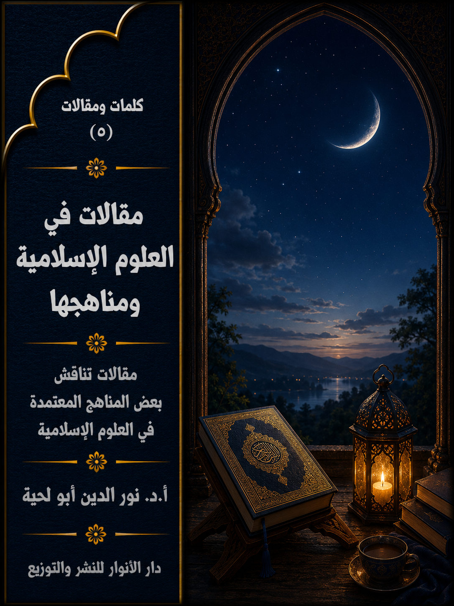

📖 الكتاب: مقالات في العلوم الإسلامية ومناهجها
📝 الوصف: مقالات تناقش بعض المناهج المعتمدة في العلوم الإسلامية
📚 السلسلة: كلمات ومقالات
✍ المؤلف: أ.د. نور الدين أبو لحية
🏢 الناشر: دار الأنوار للنشر والتوزيع
📅 الطبعة: الثانية
📥 تحميل: هنا
يتضمن هذا الكتاب ثمانية مقالات نشرتها في أوقات ومجلات مختلفة، وهي جميعا تدور حول العلوم الإسلامية ومناهج التعامل معها، وهذه عناوينها:
1. مظاهر عزل المركزية القرآنية وآثارها على مناهج العلوم الإسلامية.
2. الاعتقادات في موسوعة القرآن ليدن (مدخل الإيمان والكفر نموذجا)
3. الاستشرافات النبوية في كتب الملاحم والفتن وأبعادها التوجيهية.
4. حكم النبي صلى الله عليه وآله وسلم في بني قريظة ومنهج النقد التاريخي.
5. مناهج البحث العلمي في الجامعات الإسلامية الواقع والآفاق.
6. منهج البحث في فقه النوازل.
7. آليات تفعيل الوعي الأمني في المؤسسات العلمية والتحديات الراهنة.
8. نحو منهج جديد لعرض العلوم الإسلامية.
مقدمة الكتاب
يتضمن هذا الكتاب ثمانية مقالات نشرتها في أوقات ومجلات مختلفة، وهي جميعا تدور حول العلوم الإسلامية ومناهج التعامل معها، وهذه ملخصات مختصرة عن تلك المقالات:
1. مظاهر عزل المركزية القرآنية وآثارها على مناهج العلوم الإسلامية: يحاول هذا المقال التعريف بمظاهر وآثار عزل المركزية القرآنية عن العلوم الإسلامية ومناهجها البحثية والدراسية، وذلك عبر دراسة المناهج المستعملة في البحث والاستنباط في تلك العلوم، وخصوصا الفقه والعقائد، باعتبارهما من أهم العلوم الشرعية، وقد قسمناه إلى ثلاثة مباحث:
1. مظاهر عزل المركزية القرآنية، وقد ذكرنا فيه أمثلة مختلفة قُدّم فيها الحديث والرواية والرأي على القطعيات القرآنية.
2. آثار عزل المركزية القرآنية على المناهج التحليلية والبحثية، وقد ذكرنا فيه نموذجين أحدهما، عن البحث العقدي، والثاني عن البحث الفقهي.
3. آثار عزل المركزية القرآنية على المناهج التدريسية، وذكرنا فيه آثارها على المقررات الدراسية، وعلى العلاقة بين المدارس الإسلامية.
2. الاعتقادات في موسوعة القرآن ليدن (مدخل الإيمان والكفر نموذجا): يتناول هذا المقال مقاربة نقدية لما طرحته المستشرقة كميلا آدنج (CAMILLA ADANG) في مقالتها الخاصة بـ [الإيمان والكفر] BELIEF AND UNBELIEF [في موسوعة القرآن (ليدن) والتي وردت في الجزء الأول منها في حوالي تسع صفحات [ص218 ـ 226]، وقد انتقدت فيها الجانب المنهجي في المقالة، بالإضافة إلى نقد أربعة قضايا كبرى، لصلتها الشديدة بموضوع الإيمان والكفر، ولكون الرد عليها كافيا في الرد على الفروع المرتبطة بها، وهي:
1 ـ نقد المغالطات المرتبطة بالجبر والاختيار في القرآن الكريم.
2 ـ المغالطات المرتبطة بالتسامح في القرآن الكريم.
3 ـ المغالطات المرتبطة بالجهاد في سبيل الله.
4 ـ المغالطات المرتبطة بالولاء والبراء.
3. الاستشرافات النبوية في كتب الملاحم والفتن وأبعادها التوجيهية: يحاول هذا المقال أن يبين بعض مظاهر حرص رسول الله صلى الله عليه وآله وسلم على الأمة من خلال النبوءات التي لم تكن دليلا للنبوة فقط، باعتبارها معجزة خارقة للنواميس الطبيعة، وإنما هي كذلك توجيهات وتحذيرات تحفظ الأمة مما سينزل بها من أنواع الابتلاءات والفتن، مثلما نزل بمن قبلها من الأمم، فتلك النبوءات الشريفة لم تترك نصيحة إلا أسدتها، ولا ثغرة إلا حذرت منها، ولا انحرافا إلا بينته، وبينت كيفية الرجوع إلى منهج الاستقامة فيه.
وقد تناولنا هذا الموضوع من خلال ثلاثة محاور، تناولنا في أولها: أهمية الاستشرافات النبوية، ومواضعها من كتب الحديث؛ وتناولنا في الثاني: الاستشرافات النبوية المرتبطة بحركة التاريخ؛ وتناولنا في الثالث: الاستشرافات النبوية المرتبطة بالظواهر الاجتماعية المختلفة.
4. حكم النبي صلى الله عليه وآله وسلم في بني قريظة ومنهج النقد التاريخي: يهدف هذا المقال إلى الرد العلمي على ما ورد في الروايات من تنفيذ حكم سعد بن معاذ في غزوة بني قريظة بقتل كل من بلغ سن الرشد، والذي تبلغ به بعض الروايات إلى 900 مقاتل، وذلك بتطبيق المنهج التاريخي على الأحداث، بفرعيه الخارجي والداخلي، لتمييز الصحيح من الضعيف، والمقبول من المردود، وذلك لاستثمار المستشرقين والحداثيين والملاحدة الجدد لتلك الروايات في اتهام الإسلام بالعنف.
5. مناهج البحث العلمي في الجامعات الإسلامية الواقع والآفاق: يهدف هذا المقال لدراسة واقع البحث العلمي في الجامعات الإسلامية، والتحديات التي تواجهه لنكتشف من خلال ذلك الحلول التي يمكنها أن ترقى بالبحث العلمي في هذه الجامعات ليؤدي وظائفه المختلفة، وقد تناولنا فيه:
أولا ــ واقع البحث العلمي في الجامعات الاسلامية والتحديات التي تواجهه.
ثانيا ــ آفاق تطوير البحث العلمي في الجامعات الاسلامية.
وقبل ذلك قدمنا بتمهيد مختصر لنحدد المراد من مصطلحي: البحث العلمي، والجامعات الإسلامية.
6. منهج البحث في فقه النوازل: وهذا المقال أقرب إلى الإعداد منه إلى البحث المحكم لأني كتبته بناء على طلب من بعض الأساتذة للمشاركة به في كتاب جماعي موجه للطلبة، والغرض منه توفير مادة علمية كافية حول مناهج العلوم الإسلامية ومصادرها، ولذلك فإني لا أتبنى كل ما فيه، وقد قسمته إلى ثلاثة مباحث:
1. مفهوم فقه النوازل وأهميته.
2. مراحل البحث في فقه النوازل.
3. أهم ما يحتاج إليه الباحث في فقه النوازل من مصادر ومراجع.
7. آليات تفعيل الوعي الأمني في المؤسسات العلمية والتحديات الراهنة: وهو يهدف إلى البحث عن آلية تفعيل أطروحة من الأطروحات المهمة في صناعة الأمن الشامل، ولعلها أولى الأطروحات، وأكثرها انتشارا، وأكثرها جدوى، وهي ما يطلق عليه (الوعي الأمني)، وقد قسمناه إلى العناوين التالية:
الأول: التحقيق في المراد بـ (الوعي الأمني)، ومدى جدواه.
الثاني: آليات تفعيل (الوعي الأمني) في المؤسسات العلمية والتحديات التي تواجهها.
الثالث: التحديات المرتبطة بالوعي الأمني في المؤسسات العلمية، وكيفية مواجهتها.
8. نحو منهج جديد لعرض العلوم الإسلامية: وهو مقال قصير شاركت به كمداخلة في مؤتمر [دور علماء الشيعة في ازدهار الحضارة الإسلاميّة والعلوم الأخری] المقام في الجمهورية الإسلامية الإيرانية.
مظاهر عزل المركزية القرآنية وآثارها على مناهج العلوم الإسلامية
من السنن التاريخية التي حصلت لكل الأديان ـ كما يذكر القرآن الكريم ـ وقوع المفاصلة بين الأمم وكتبها المقدسة، والذي قد يصل إلى حد تحريفها، حتى لا تتعارض التعاليم الواردة فيها مع أهواء تلك الأمم، والمشاريع التي ارتضتها لنفسها.
وهذا ليس خاصا بالمجال السياسي فقط، وإنما في كل المجالات، كما أشار القرآن الكريم إلى ذلك في قوله: ﴿وَإِذْ أَخَذَ اللَّهُ مِيثَاقَ الَّذِينَ أُوتُوا الْكِتَابَ لَتُبَيِّنُنَّهُ لِلنَّاسِ وَلَا تَكْتُمُونَهُ فَنَبَذُوهُ وَرَاءَ ظُهُورِهِمْ وَاشْتَرَوْا بِهِ ثَمَنًا قَلِيلًا فَبِئْسَ مَا يَشْتَرُونَ﴾ [آل عمران: 187]، وغيرها من الآيات الكريمة التي تبين نبذ رجال تلك الأديان لكتبهم، وطرحهم لتعاليم جديدة بدلها متناسبة مع أهوائهم مقابل أثمان قليلة.
وهذه السنة الإلهية التي أشارت إليها الكثير من الآيات القرآنية ليست خاصة بأهل الكتاب من قبلنا، وإلا لما كان هناك معنى لذكرها، والتركيز عليها، وإنما لها علاقة بهذه الأمة؛ فهي تنبه إلى أن ما حصل لتلك الأمم من عزل كتبها، وبيعها بأثمان قليلة، إما بكتمان ما فيها من حقائق، أو تفسيرها بغير المراد منها، سيقع في هذه الأمة أيضا، كما أشار إلى ذلك الإمام الجواد عند بيانه لأسباب الانحراف الذي وقعت فيه الأمة الإسلامية وغيرها من الأمم ـ: (وكل أمة قد رفع الله عنهم علم الكتاب حين نبذوه وولاهم عدوهم حين تولوه، وكان من نبذهم الكتاب أن أقاموا حروفه وحرفوا حدوده، فهم يروونه ولا يرعونه، والجهال يعجبهم حفظهم للرواية، والعلماء يحزنهم تركهم للرعاية)(1)
بل إن القرآن الكريم أشار إلى ذلك إشارة تكاد تكون صريحة حين قال: ﴿وَقَالَ الرَّسُولُ يَا رَبِّ إِنَّ قَوْمِي اتَّخَذُوا هَذَا الْقُرْآنَ مَهْجُورًا﴾ [الفرقان: 30]؛ فالهجران في الآية الكريمة لا يشمل فقط هجران التلاوة أو الاستماع، بل يشمل كل أنواع الهجران، والتي تعني عزله عن الحياة بمختلف مجالاتها السياسية والاقتصادية والعلمية والتربوية وغيرها.
ولهذا، فإن أول ما يجاب به أولئك الذين يقدسون التاريخ والتراث، ويتصورون أن الإسلام طبق في واقع الحياة تطبيقا صحيحا سليما، خاصة في العصور الأولى منه، تلك النصوص الكثيرة التي تحذر من عزل القرآن الكريم، وعدم إعطائه الأولوية والمرجعية في الدين، وهي نصوص كثيرة جدا، وواضحة في دلالتها، ولا يمكن تأويلها أو الفرار من معانيها.
وهي كلها تدل على أن الانحراف الذي وقع للأمة الإسلامية بدأ بهجر الكتاب وعزله وعدم إعطائه حقه من التدبر والفهم، وعدم تفعيله في جميع مجالات الحياة، وكل هذه المعاني يمكن أن يطلق عليها تعبير [عزل المركزية القرآنية]، أو [عزل المرجعية القرآنية]، أي أن الأمة الإسلامية ـ بذلك العزل ـ وضعت بدائل للقرآن الكريم تتناسب مع المشروع الذي ارتضته لنفسها.
وعند البحث عن الأسس الأولى التي قام عليها مشروع عزل المركزية القرآنية، نجد أنه انطلق من النواحي العلمية، سواء ما ارتبط منها بالبحث عن الحقائق والقيم، أو ما نتج عن ذلك من تدريس تلك النتائج ووضعها في المقررات التعليمية.
وسبب ذلك هو أن الأنظمة السياسية التي حكمت المسلمين، والتي أطلق عليها رسول الله صلى الله عليه وآله وسلم وصف [الملك العضوض]، لم يكن ليستقر لها الحكم لو بقيت التعاليم القرآنية غضة طرية يتعلمها الناس كما أنزلت، لأن في ذلك تهديدا لملكهم، لذلك راحوا يفرضون سياسة علمية جديدة تتناسب مع أهوائهم وسلطتهم.
بناء على هذا نحاول في هذا المقال بيان مظاهر عزل تفعيل القرآن الكريم في الواقع العلمي الإسلامي، وآثارها على مستوى البحث والتأصيل والتنظير، أو على مستوى التدريس في مراحله المختلفة، وذلك بناء على أن مواجهة الانحراف تستدعي تشخيصه وتشخيص آثاره، مثلما يفعل الطبيب عندما ينطلق من تشخيص المرض وآثاره قبل وصفه العلاج.
وقد تناولنا هذه المعاني جميعا من خلال ثلاثة مباحث هي:
1. مظاهر عزل المركزية القرآنية.
2. آثار عزل المركزية القرآنية على المناهج التحليلية والبحثية.
3. آثار عزل المركزية القرآنية على المناهج التدريسية.
__________
(1) الكافي، أبو جعفر الكليني، تحقيق علي أكبر الغفاري، دار الكتب الإسلامية، 1363 هش، طهران: 8/ 53 / ح 16.
أولا ـ مظاهر عزل المركزية القرآنية:
[المركزية القرآنية] مصطلح حديث، يقترب معناه بمصطلحات سابقة من أمثال [المرجعية القرآنية]، أو [أولوية القرآن]، أو [الحاكمية القرآنية]، وغيرها من المصطلحات، التي تتداول عادة في علم أصول الفقه، وغيره من العلوم المهتمة بمنهج استنباط الأحكام الشرعية.
لكن هذا المصطلح أدق منها بكثير، لأنه لا يراد به الرجوع للقرآن الكريم كمصدر من مصادر التشريع فقط، وإنما يراد منه اعتباره المركز الذي تنطلق منه كل حقائق الدين وقيمه وتشريعاته، أي أنها تبدأ منه، وتؤول إليه، ويحاكم كل شيء إلى معانيه، فما وافقها قُبل، وما خالفها رُفض.
ولتوضيح هذا نرجع إلى منشأ هذا المصطلح، والذي ارتبط خصوصا بالعلوم الإدارية، وربما يكون أول من استعمله قد تأثر بهذا النوع من الدراسات أو له علاقة بها.
ففي العلوم الإدارية يقسم النظام الإداري إلى شكلين(1):
1 ـ النظام الإداري المركزي: وهو النظام الذي يقضي بحصر السلطة في يد المسؤول الإداري الأعلى، حيث يختصّ به وحده حقّ إصدار القرارات الأساسية، فلا يصدر قرار إلا منه، وكل القرارات ترجع إليه لقبولها أو رفضها.
2 ـ النظام الإداري اللامركزي: وهو النظام الذي يقضي بتوزيع الصلاحيات بين جهاز الحكم المركزي، والوحدات الإدارية الإقليمية، وفي هذا النظام يمكن أن تستقلّ السلطات الإقليمية المحلّية باتخاذ الكثير من القرارات دون الرجوع للمركز، حيث أنها تفوّض بذلك.
وهذا المعنى يوضح كثيرا المواقف حول القرآن الكريم، حيث نجد الأمة، أو علماءها، وقفوا موفقين:
الأول: يعتبر المركزية القرآنية، ويرى أنه لا يصح أن نقبل حديثا ولا رواية ولا اجتهادا يعارض القرآن الكريم، ويدعو إلى اعتباره المصدر الذي تنطلق منه كل أحكام الشريعة العقدية والفقهية والأخلاقية وغيرها.
الثاني: لا يعتبر المركزية القرآنية، بل يرى أنه مصدر من مصادر الدين، مثله مثل السنة والقياس والمصالح وغيرها.. بل يذهب إلى أبعد من ذلك حين يرى أنه يمكن أن تعطل أحكامه لا بالسنة وحدها، بل بالاجتهاد أيضا.
ويمكن أن نطلق على هذا النوع من الموقف بـ [اللامركزية القرآنية]، أو كما عبرنا عنه في عنوان المقال [عزل المركزية القرآنية]، وهذا الموقف يتنافى مع ما جاء به القرآن الكريم، ودلت عليه الكثير من الأحاديث والروايات التي تعتبر القرآن الكريم هو المرجع لكل حقائق الدين، وأن الإعراض عنها إجرام في حق الدين، كما قال تعالى: ﴿وَمَنْ أَظْلَمُ مِمَّنْ ذُكِّرَ بِآيَاتِ رَبِّهِ ثُمَّ أَعْرَضَ عَنْهَا إِنَّا مِنَ الْمُجْرِمِينَ مُنْتَقِمُونَ﴾ [السجدة: 22]، بل شبه المعرضين بالحمير، فقال: ﴿فَمَا لَهُمْ عَنِ التَّذْكِرَةِ مُعْرِضِينَ كَأَنَّهُمْ حُمُرٌ مُسْتَنْفِرَةٌ فَرَّتْ مِنْ قَسْوَرَةٍ﴾ [المدثر: 49 ـ 51]
وهذه الآيات الكريمة لا تنطبق فقط على المشركين، وإنما تنطبق كذلك على المؤمنين بالقرآن، والذين يعزلون معانيه، أو يؤولونها، أو يقدمون عليها غيره، كما قال تعالى: ﴿يَا أَيُّهَا الَّذِينَ آمَنُوا لَا تُقَدِّمُوا بَيْنَ يَدَيِ اللَّهِ وَرَسُولِهِ وَاتَّقُوا اللَّهَ إِنَّ اللَّهَ سَمِيعٌ عَلِيمٌ﴾ [الحجرات: 1]
ولهذا نرى جميع العلماء ينصون على أن الهجران الوارد في قوله تعالى: ﴿وَقَالَ الرَّسُولُ يَا رَبِّ إِنَّ قَوْمِي اتَّخَذُوا هَذَا الْقُرْآنَ مَهْجُورًا﴾ [الفرقان: 30] ليس خاصا بالمشركين، وإنما يعم غيرهم من المسلمين، كما عبر عن ذلك محمد الأمين الشنقيطي (المتوفى: 1393هـ) بقوله: (معنى هذه الآية الكريمة ظاهر، وهو أن نبينا صلى الله عليه وآله وسلم شكا إلى ربه هجر قومه، وهم كفار قريش لهذا القرآن العظيم، أي: تركهم لتصديقه والعمل به، وهذه شكوى عظيمة، وفيها أعظم تخويف لمن هجر هذا القرآن العظيم، فلم يعمل بما فيه من الحلال والحرام والآداب والمكارم، ولم يعتقد ما فيه من العقائد، ويعتبر بما فيه من الزواجر والقصص والأمثال)(2)
بناء على هذا، فإن مظاهر عزل المركزية القرآنية عند تدوين المعارف الإسلامية، وتأسيس المذاهب الفقهية والعقدية كثيرة جدا، يمكن اختصارها في ثلاثة مظاهر كبرى:
__________
(1) انظر: المركزية واللامركزية في الأدب الإداري، مجلة التنمية الإدارية، بغداد، العدد، (1980)، والمركزيّة واللامركزيّة في اتّخاذ القرار وعلاقتها بالأداء الوظيفي، خالد بن فيحان المنديل، الرياض: سلسلة كتب جامعة نايف العربية للعلوم الأمنية، 2004م، صفحة 17، فما بعدها..
(2) أضواء البيان في إيضاح القرآن بالقرآن، محمد الأمين الشنقيطي، دار الفكر للطباعة والنشر والتوزيع بيروت – لبنان، 1415 ه 1995 مـ، (6/ 48).
1 ـ تقديم الحديث على القرآن الكريم:
وهو من أخطر مظاهر عزل القرآن الكريم، ذلك أن الفئة الباغية، ومن أسس لها، لم يستطيعوا أن يقوموا بتحريف القرآن الكريم، مثلما فعلت الأمم السابقة، فلذلك راحوا يضعون من الحديث ما يخالفون به الأحكام التي لا يرغبون فيها.
وقد بدأ هذا من العصر الأول، كما أشار إلى ذلك الإمام الباقر عند حديثه عن سلمان المحمدي، حيث قال: (إن سلمان منا أهل البيت، إنه كان يقول للناس: هربتم من القرآن إلى الأحاديث، وجدتم كتاباً دقيقاً حوسبتم فيه على النقير والقطمير والفتيل وحبة الخردل، فضاق عليكم ذلك، وهربتم إلى الأحاديث التي اتسعت عليكم)(1)
وقد ظهر هذا بشكل واضح في المدرسة السنية خصوصا، حيث أخر القرآن الكريم عن مرتبته الأولى، وأصبح في مرتبة ثانية، بل ثالثة ورابعة، وأصبحت أي رواية يمكنها أن تعزل القرآن الكريم، كما عبر بعض القدامى عن ذلك، وهو شمس الدين القرطبي (المتوفى: 671هـ) بقوله: (وروى سعيد بن منصور: حدثنا عيسى ابن يونس عن الأوزاعي عن مكحول قال: القرآن أحوج إلى السنة من السنة إلى القرآن، وبه عن الأوزاعي قال يحيى بن أبى كثير: السنة قاضية على الكتاب، وليس الكتاب بقاض على السنة. قال الفضل بن زياد: سمعت أبا عبد الله يعني أحمد بن حنبل وسيل عن هذا الحديث الذي روي أن السنة قاضية على الكتاب فقال: ما أجسر على هذا أن أقوله، ولكني أقول: إن السنة تفسر الكتاب وتبينه)(2)
وعبر عنه زعيم السلفية المعاصرة الشيخ محمد ناصر الدين الألباني (توفي 1420 هـ) بقوله: (إن من الأغلاط المنكرة أن نقول نأخذ الحكم أو نفسر القرآن بالقرآن فإن لم نجد بالسنة، وهذه عبارة شائعة ويقولها كبار من العلماء معتمدين على حديث رسول الله صلى الله عليه وآله وسلم لمعاذ يوم أن أرسله فقال له رسول الله صلى الله عليه وآله وسلم (بم تقضي؟)(3)
وبعد أن بين نكران هذا الحديث من حيث السند، راح يرد عليه من حيث المعنى، فقال: (إن حديث معاذ هذا يضع للحاكم منهجا في الحكم على ثلاث مراحل لا يجوز أن يبحث عن الحكم في الرأي إلا بعد أن لا يجده في السنة، ولا في السنة إلا بعد أن لا يجده في القرآن، وهو بالنسبة للرأي منهج صحيح لدى كافة العلماء.. ولكنه بالنسبة للسنة ليس صحيحا لأن السنة حاكمة على كتاب الله ومبينة له، فيجب أن يبحث عن الحكم في السنة ولو ظن وجوده في الكتاب لما ذكرنا؛ فليست السنة مع القرآن كالرأي مع السنة كلا ثم كلا، بل يجب اعتبار الكتاب والسنة مصدرا واحدا لا فصل بينهما أبدا.. فالتصنيف المذكور بينهما غير صحيح لأنه يقتضي التفريق بينهما وهذا باطل لما سبق بيانه(4).
ثم بين يذكر النماذج على رد ما في القرآن الكريم من تعميمات بناء على ما ورد في السنة، فقال: (لو جئنا نفسر قوله تعالى: ﴿إِنَّمَا حَرَّمَ عَلَيْكُمُ الْمَيْتَةَ وَالدَّمَ وَلَحْمَ الْخِنْزِيرِ وَمَا أُهِلَّ بِهِ لِغَيْرِ اللَّهِ﴾ [البقرة: 173]، فإننا سنحرم كل الميتة بينما في السنة النبوية يقول صلى الله عليه وآله وسلم: (أحل لنا ميتتان ودمان) والميتتان هما السمك والجراد والدمان هما الكبد والطحال)(5)
وهكذا أصبحت الميتة البحرية ـ مع خطورتها الصحية ـ حلالا على الرغم من تصريح القرآن الكريم بتحريمها، بناء على حديث يرى الألباني نفسه أنه ليس متواترا، بل لا يرقى إلى درجة الصحيح، بل إن الرواية الموقوفة فيه ـ كما يذكر ـ أصح من المرفوعة إلى رسول الله صلى الله عليه وآله وسلم، فقد قال تعقيبا على الحديث: (أخرجه البيهقي وغيره مرفوعا وموقوفا، وإسناد الموقوف صحيح وهو في حكم المرفوع لأنه لا يقال من قبل الرأي)(6)
ولهذا نرى هذا الفريق، وهو يشكل أكثر المدارس الإسلامية، يرد بشدة على ما ورد في بعض الأحاديث والروايات عن أئمة أهل البيت من محاكمة الأحاديث إلى القرآن الكريم، كما نص على ذلك قوله صلى الله عليه وآله وسلم: (ما جاءكم عني فاعرضوه على كتاب الله فما وافقه فأنا قلته، وما خالفه فلم أقله)(7)
وفي حديث آخر قال صلى الله عليه وآله وسلم: (إن الحديث سيفشو عني فما أتاكم عني يوافق القرآن فهو عني وما أتاكم عني يخالف القرآن فليس عني)(8)
وغيرها من الأحاديث الكثيرة، ومثلها الروايات الواردة عن أئمة أهل البيت، والذين اعتبروا معارضة القرآن الكريم للحديث موجبا لرفضه، كما روي عن عبد الله بن أبي يعفور، قال: سألت أبا عبد الله عن اختلاف الحديث يرويه من نثق به، ومنهم من لا نثق به؟ قال: (إذا ورد عليكم حديث فوجدتم له شاهدا من كتاب الله، أو من قول رسول الله صلى الله عليه وآله وسلم، وإلا فالذي جاءكم به أولى به)، وعن أيوب بن الحر قال: سمعت أبا عبد الله يقول: (كل شيء مردود إلى كتاب الله والسنة، فكل حديث لا يوافق كتاب الله فهو زخرف)، وعن جعفر بن محمد الصادق قال: (ما لم يوافق من الحديث القرآن فهو زخرف)، وعن الإمام علي قال: (ما جاءتك رواية من بر أو فاجر توافق القرآن فخذ بها، وما جاءتك من رواية من بر أو فاجر تخالف القرآن فلا تأخذ بها)(9)
وهذا ما ذهب إليه علماء الشيعة بناء على تلك الروايات، فقد قال الشيخ المفيد في كتابه [تصحيح الاعتقاد]: (وكتاب الله تعالى مقدَّم على الأحاديث والروايات، وإليه يتقاضى في صحيح الأخبار وسقيمها، فما قضى به فهو الحقّ دون سواه)(10)
ولهذا نرى الشيعة رغم احترامهم الشديد لكتاب الكافي ولمؤلّفه محمّد بن يعقوب الكليني وشهادتهم له بتبحّره في علم الحديث، إلاّ أنهم لم يدّعوا بأنّ ما جمعه كلّه صحيح، بل إن من علماء الشيعة من طرح أكثر من نصفه، وقال بعدم صحتها، ومع ذلك لم يشاغب عليه مثلما يشاغب على من فعل ذلك في المدرسة السنية بسبب الحديث والحديثين.
وفي مقابل هذا نرى الإنكار الشديد من أئمة المدرسة السنية بمذاهبها المختلفة على تلك الأحاديث، بناء على خشيتهم من معارضة ما وضعوه من أحكام فقهية بناء على ما وردهم من روايات تخالف صريح القرآن الكريم.
ومن الأمثلة على المواقف المتشددة من عرض الحديث على القرآن الكريم قول ابن بَطَّة العكبري (المتوفى: 387هـ) ـ وهو علم من أعلام المدرسة السلفية الكبار، بعد عرضه لبعض تلك الأحاديث ـ: (قال ابن الساجي: قال أبي رحمه الله: هذا حديث موضوع عن النبي صلى الله عليه وآله وسلم قال: وبلغني عن علي بن المديني، أنه قال: ليس لهذا الحديث أصل، والزنادقة وضعت هذا الحديث)(11)
ثم علق على ذلك بقوله: (وصدق ابن الساجي، وابن المديني رحمهما الله، لأن هذا الحديث كتاب الله يخالفه، ويكذب قائله وواضعه، والحديث الصحيح، والسنة الماضية عن رسول الله صلى الله عليه وآله وسلم ترده قال الله عز وجل: ﴿فَلَا وَرَبِّكَ لَا يُؤْمِنُونَ حَتَّى يُحَكِّمُوكَ فِيمَا شَجَرَ بَيْنَهُمْ ثُمَّ لَا يَجِدُوا فِي أَنْفُسِهِمْ حَرَجًا مِمَّا قَضَيْتَ وَيُسَلِّمُوا تَسْلِيمًا﴾ [النساء: 65]، والذي أمرنا الله عز وجل أن نسمع ونطيع، ولا نضرب لمقالته عليه السلام المقاييس، ولا نلتمس لها المخارج، ولا نعارضها بالكتاب، ولا بغيره، ولكن نتلقاها بالإيمان والتصديق والتسليم إذا صحت بذلك الرواية)(12)
ومثله قال ابن عبد البر، وهو من أعلام المدرسة المالكية الكبار: (وهذه الألفاظ لا تصح عنه صلى الله عليه وآله وسلم عند أهل العلم بصحيح النقل من سقيمه وقد عارض هذا الحديث قوم من أهل العلم فقالوا: نحن نعرض هذا الحديث على كتاب الله قبل كل شيء ونعتمد على ذلك، قالوا: فلما عرضناه على كتاب الله عز وجل وجدناه مخالفا لكتاب الله؛ لأنا لم نجد في كتاب الله ألا نقبل من حديث رسول الله صلى الله عليه وآله وسلم إلا ما وافق كتاب الله، بل وجدنا كتاب الله يطلق التأسي به والأمر بطاعته ويحذر المخالفة عن أمره جملة على كل حال)(13)
وبناء على هذا، فقد وقفوا موقفا متشددا من كل داعية للرجوع إلى القرآن الكريم للتحاكم إليه عند التنازع في تصحيح الأحاديث، وقد صبوا جام غضبهم على الشيعة في هذا، واعتبارهم هم السبب فيما سموها [الفتنة الخبيثة]، كما قال شيخهم الكبير الجامي عند حديثه عن هذه المسألة: (لقد حاول هؤلاء الزنادقة والروافض إزالة السنن من الوجود والقضاء عليها لو استطاعوا أو أن يجعلوا وجودها وجوداً شكلياً فاقداً للقيمة، إلا أنهم لم ينالوا خيراً، ولم يستطيعوا أن ينالوا من السنة شيئاً، فانقلبوا خاسرين ومهزومين، مثلهم كمثل الذي يحاول قلع جبل أحد مثلاً فأخذ يحوم حوله وفي سفحه لينقل من أحجاره حجراً حجراً ظناً من أنه يمكنه بصنيعه هذا قلع الجبل وإزالته من مكانه، أو كالذي يغترف من البحر اغترافاً بيده أو بدلوه محاولاً بذلك أن ينفد البحر أو ينقص)(14)
وضرب آخر مثالا على ذلك، وهو من أعلام السلفية المعاصرين، فقال: (حتى إن الرافضة قبحهم الله سلكوا هذا المسلك بعينه في رد السنن الثابتة المتواترة، فردوا قوله صلى الله عليه وآله وسلم: (لا نُورث ما تركنا صدقة) وقالوا: هذا حديث يخالف كتاب الله، قال تعالى: ﴿يُوصِيكُمُ اللَّهُ فِي أَوْلَادِكُمْ لِلذَّكَرِ مِثْلُ حَظِّ الْأُنْثَيَيْنِ﴾ [النساء: 11])(15)
__________
(1) رجال الكشّي، محمّد بن الحسن الطوسي، مشهد المقدّسة: جامعة مشهد، 1348ش، الطبعة الاُولى، ص 12..
(2) الجامع لأحكام القرآن، أبو عبد الله محمد بن أحمد شمس الدين القرطبي، تحقيق: أحمد البردوني وإبراهيم أطفيش، دار الكتب المصرية – القاهرة، الطبعة: الثانية، 1384ه 1964 م، (1/ 39).
(3) منزلة السنة في الإسلام، أبو عبد الرحمن محمد ناصر الدين الأشقودري الألباني، الدار السلفية، الكويت، الطبعة: الرابعة ـ 1404 ه 1984 م، ص 21..
(4) المرجع السابق، ص 22..
(5) المرجع السابق، ص 23..
(6) المرجع السابق، ص 24..
(7) معرفة السنن والآثار، أحمد بن الحسين البيهقي (المتوفى: 458هـ)، المحقق: عبد المعطي أمين قلعجي، جامعة الدراسات الإسلامية (كراتشي ـ باكستان)، الطبعة: الأولى، 1412ه 1991م، (1/ 116).
(8) معرفة السنن والآثار (1/ 118).
(9) بحار الأنوار الجامعة لدرر أخبار الأئمة الأطهار عليهم السلام، العلامة المجلسي، تحقيق عدة من الأفاضل، دار الكتب الإسلامية، طهران (84/ 103).
(10) تصحيح الاعتقاد بصواب الانتقاد، الشيخ المفيد، تقديم السيد هبة الدين الشهرستاني، منشورات الرضي، 1363 ه ش، قم، ص 44.
(11) الإبانة الكبرى، أبو عبد الله عبيد الله بن محمد المعروف بابن بَطَّة العكبري، المحقق: رضا معطي، وعثمان الأثيوبي، ويوسف الوابل، والوليد بن سيف النصر، وحمد التويجري، دار الراية للنشر والتوزيع، الرياض، (1/ 266).
(12) المرجع السابق، (1/ 266).
(13) جامع بيان العلم وفضله، أبو عمر يوسف بن عبد الله بن محمد بن عبد البر بن عاصم النمري القرطبي (المتوفى: 463ه)، حققه أبي الأشبال الزهيري، دار ابن الجوزي، المملكة العربية السعودية، الطبعة الأولى، 1414 ه، 1994 م، (4/17).
(14) الصفات الإلهية في الكتاب والسنة النبوية في ضوء الإثبات والتنزيه، أبو أحمد محمد أمان بن علي جامي علي، المجلس العلمي بالجامعة الإسلامية، المدينة المنورة، المملكة العربية السعودية، الطبعة: الأولى، 1408هـ، ص31.
(15) انظر: إذا كان القرآن كاملا مكتملا وافيا للشريعة فما الحاجة إلى السنة!؟، موقع: فتاوى الإسلام سؤال وجواب، بإشراف: الشيخ محمد صالح المنجد، المصدر: www.islam ـ qa.com.
2 ـ تقديم الروايات على القرآن الكريم:
وهو لا يقل عن سابقه خطورة، ذلك أن الفئة الباغية ومن ساندها، وأسس لها، لم يكتفوا بمعارضة القرآن الكريم بما وضع من الأحاديث، وإنما راحوا يأخذون بالروايات الواردة عن أهل الكتاب، ليفسروا بها القرآن الكريم، وبذلك تحول إلى وسيلة لإدخال الخرافات التي كانت في الأديان السابقة.
وقد حصل هذا للأسف بعد وفاة رسول الله صلى الله عليه وآله وسلم مباشرة، أو بعد وقت قصير، حيث استطاع كعب الأحبار ووهب بن المنبه وكعب القرظي، وغيرهم من اليهود التقرب من الخلفاء الأوائل، والذين أتاحوا لهم الفرصة ليعقدوا المجالس التي يفسرون فيها القرآن الكريم، بناء على ما عندهم من الروايات.
ولهذا نجد التحذيرات الشديدة من الصحابة المنتجبين من فشو هذه الظاهرة الخطيرة، فقد روي أنه (بينما كان ابن عباس جالسا ذات يوم من الأيام إذ أتاه رجل فقال: يا ابن عباس إنّي سمعت العجب من كعب الأحبار يذكر في الشمس والقمر ـ وكان متكئاً فاحتفز ـ ثمّ قال: قال كعب الأحبار إنّه يجاء بالشمس والقمر يوم القيامة كأنهما ثوران عقيران فيقذفان في النار.. فطارت من ابن عباس شظية ووقعت أخرى غضباً، ثمّ قال: كذب كعب الأحبار، كذب كعب، كذب كعب ـ قالها ثلاثاً ـ بل هذه يهودية يريد إدخالها في الإسلام، والله أكرم وأجلّ من أن يعذّب أهل طاعته، ألم تر إلى قوله تعالى: ﴿وَسَخَّرَ لَكُمُ الشَّمْسَ وَالْقَمَرَ دَائِبَيْنِ وَسَخَّرَ لَكُمُ اللَّيْلَ وَالنَّهَارَ﴾ [إبراهيم: 33]، يعني دؤوبهما في طاعته، فكيف يعذّب أهل طاعته، فكيف يعذّب عبدين أثنى عليهما أنّهما دائبان في طاعته، قاتل الله هذا الحبر وقبّح حديثه ما أجرأه على الله وأعظم فريته على هذين العبدين المطيعين لله تعالى.. ثمّ استرجع مراراً، ثمّ أخذ عوداً من الأرض فجعل ينكت به في الأرض، وظل كذلك ما شاء الله)(1)
ولهذا يروى أنه كان يقف مخاطبا الذين يجلسون لهؤلاء اليهود وغيرهم، ويتركون كبار الصحابة وآل بيت النبوة، ويقول لهم: (يا معشر المسلمين كيف تسألون أهل الكتاب، وكتابكم الذي أنزل على نبيّه صلى الله عليه وآله وسلم أحدث الأخبار بالله تقرؤونه لم يشب، وقد حدّثكم الله أنّ أهل الكتاب بدّلوا ما كتب الله وغيّروا بأيديهم الكتاب، فقالوا: هو من عند الله ليشتروا به ثمناً قليلاً، أفلا ينهاكم ما جاءكم من العلم عن مساءلتهم، ولا والله ما رأينا منهم رجلاً قط يسألكم عن الذي أنزل عليكم)(2)
بل إن رسول الله صلى الله عليه وآله وسلم حذر من هذه الظاهرة، وغضب غضبا شديدا عندما رأى بعض صحابته يتركونه، ويذهبون إلى أهل الكتاب يسألونهم، ففي الحديث أن عمر أتى بكتاب من كتب اليهود إلى رسول الله صلى الله عليه وآله وسلم، فغضب غضبا شديدا، ثم قال: (أمتهوكون فيها يا ابن الخطاب!؟ والذي نفسي بيده، لقد جئتكم بها بيضاء نقية، لا تسألوهم عن شيء فيخبروكم بحق فتكذبوا به أو بباطل فتصدقوا به، والذي نفسي بيده لو أن موسى صلى الله عليه وآله وسلم كان حيا ما وسعه إلا أن يتبعني)(3)
فهذا الحديث يخبر أن دين الله أبيض نقي صاف ليس فيه أي دنس أو شبهة تمنع العقل السليم من التسليم له، لكن هذا الأبيض يمكنه أن يتحول إلى أسود إذا ما اختلط بغيره، فهو لشدة بياضه وجماله أسرع الأشياء إلى التلوث إذا لم يحافظ عليه، ولذلك دعا صلى الله عليه وآله وسلم إلى عدم خلطه بأي مصادر أجنبية أخرى.
لكن ذلك لم يطبق في الواقع الإسلامي على الرغم من ذلك التحذير الشديد، وقد احتالوا لذلك بحديث آخر عارضوا به ذلك الحديث، وهو ما رووه عن رسول الله صلى الله عليه وآله وسلم أنه قال: (لا تكتبوا عني شيئا غير القرآن، فمن كتب عني شيئا غير القرآن فليمحه.. وحدثوا عن بني إسرائيل ولا حرج)(4)
والعجيب أن هذا الحديث الذي لا شك في كونه موضوعا، ينهى عن كتابة حديث رسول الله صلى الله عليه وآله وسلم، في نفس الوقت الذي يجيز الحديث عن بني إسرائيل.
وللأسف فقد صار هذا الحديث الأخير هو القانون الذي طبق في الكثير من المصادر التراثية، حيث نجد الروايات المملوءة بالخرافة والدجل والشعوذة تملأ كتب التفسير والعقائد والمواعظ وغيرها، بناء على ما يتوهمونه من رجوع رسول الله صلى الله عليه وآله وسلم عن نهيه لعمر، وإذنه بالرواية عنهم.
وخطورة هذا المظهر من مظهر عزل القرآن الكريم، هو أنه ليس عزلا فقط، وإنما هو تحويل للقرآن الكريم إلى وسيلة لنشر الخرافة والدجل والشعوذة، بناء على أن المفسر هو الذي يحدد المعنى القرآني.
ولهذا نرى المدرسة السلفية خصوصا تعتبر الدعوة للمرجعية القرآنية أو النبوية بدعة، وترى أن الصحيح هو تلك الضميمة الثالثة التي عبروا عنها بهذا الشعار: [الكتاب والسنة بفهم السلف الصالح]، والسلف الصالح عندهم يشمل كل أولئك الطلقاء، واليهود وتلاميذ اليهود، والذين أسست على رواياتهم كتب التفسير والعقائد وغيرها.
__________
(1) العظمة، أبو محمد عبد الله بن محمد المعروف بأبِي الشيخ الأصبهاني (المتوفى: 369هـ)، المحقق: رضاء الله بن محمد إدريس المباركفوري، دار العاصمة – الرياض، الطبعة: الأولى، 1408، (4/ 1163).
(2) صحيح البخاري، محمد بن إسماعيل أبو عبدالله البخاري، حققه محمد زهير بن ناصر الناصر، دار طوق النجاة، الطبعة الأولى، 1422ه، 3 / 181..
(3) مسند الإمام أحمد بن حنبل، أبو عبد الله أحمد بن محمد بن حنبل، حققه شعيب الأرنؤوط، عادل مرشد، وآخرون، أشرف علي طباعته د عبد الله بن عبد المحسن التركي، مؤسسة الرسالة، الطبعة الأولى، 1421 ه، 2001 م: 3/387 ح(15195).
(4) رواه البخاري (6/ 496 رقم 3461).
3 ـ تقديم الرأي على القرآن الكريم:
وهذا من أخطر المظاهر، إذ ردت الكثير من الآيات الكريمة الواضحة في دلالتها بناء على اجتهادات تعتمد المصالح أو سد الذرائع ونحو ذلك، وكأن الله تعالى ـ عند تشريعه لتلك الأحكام ـ لم يكن يعلم بوجوه المصالح والمفاسد.
وقد بدأ هذا النوع من عزل المركزية القرآنية في أوائل التاريخ الإسلامي، وهو ما أتاح بعد ذلك الفرصة لسن هذه السنة للمتأخرين، والتي جعلتهم يستهينون بالأحكام القرآنية، وردها بأبسط الذرائع.
وقد أشار ابن عباس إلى هذا النوع من [اللا مركزية القرآنية] عند وقوفه المتشدد من [العول في الميراث]، لمخالفته القرآن الكريم، وقد قال مخاطبا الذين أخذوا بهذا الرأي: (أيتها الأمّة المتحيّرة في دينها، أما والله لو قدّمتم من قدّم الله، وأخرّتم من آخر الله وجعلتم الوراثة والولاية حيث جعلها الله، ما عال سهم من فرائض الله، ولا عال وليّ الله، ولا اختلف اثنان في حكم الله، فذوقوا وبال ما فرّطتم فيه، بما قدّمت أيديكم، وسيعلم الذين ظلموا أيّ منقلبٍ ينقلبون)(1)
وقد كان السبب الأكبر الذي أتاح هذه المعارضة تقديم الرجال على القرآن الكريم، حيث حصلت مبالغات شديدة في ذلك العصر حول ما سموه [سنة الشيخين]، والتي اعتبروها أعظم دلالة من القرآن الكريم نفسه، بحجة أنهما أعلم بالقرآن من غيرهما.
فقد روي أن عروة بن الزبير أتى ابن عباس؛ فقال: يا ابن عباس، طالما أضللت الناس، فقلت: وما ذاك يا عرية؟ قال: الرجل يخرج محرما بحج أو عمرة، فإذا طاف، زعمت أنه قد حل، فقد كان أبو بكر وعمر ينهيان عن ذلك؟، فقلت: (أهما، ويحك، آثر عندك أم ما في كتاب الله، وما سن رسول الله صلى الله عليه وآله وسلم في أصحابه وفي أمته؟)(2)، ثم قال له بغضب: (بهذا ضللتم؟ أحدثكم عن رسول الله صلى الله عليه وآله وسلم وتحدثوني عن أبي بكر وعمر؟[، وفي رواية: (والله ما أراكم منتهين حتى يعذبكم الله، نحدثكم عن النبيّ صلى الله عليه وآله وسلم، وتحدثونا عن أبي بكر!؟)(2)
وقد أقر ابن تيمية نفسه ـ مع مبالغاته الشديدة في حقهما ـ بهذا الواقع الجديد الذي حصل في الإسلام، وفي عصره الأول، فقد قال: (كان بعض الناس يناظر ابن عباس في المتعة فقال له: قال أبو بكر وعمر، فقال ابن عباس: (يوشك أن تنزل عليكم حجارة من السماء! أقول قال رسول الله صلى الله عليه وآله وسلم، وتقولون قال أبو بكر وعمر؟)(3)
وبناء على هذه السنة التي بدأت في العصر الأول، صار القرآن الكريم كتابا للتبرك أكثر منه كتابا للتشريع، حيث صار أيسر شيء يرده، وقد قال أبو الحسن عبيد الله الكرخي، وهو أحد علماء الحنفية في الأصول: (كل آية تخالف ما عليه أصحابنا فهي مؤولة أو منسوخة، وكل حديث كذلك فهو مؤول أو منسوخ)(4)
وهكذا نرى علماء المذاهب الفقهية الأربعة يضعون الكتب في تفسير أحكام القرآن الكريم، والتي توجه جميعا لخدمة مذاهبهم، وما أسهل أن يجدوا الحلول لذلك، فكل آية لا تتناسب مع ما ذهبوا إليه، يردونها بما يروونه من الأحاديث أو الروايات في سبب النزول، باعتبار أنها خاصة، وليست عامة، فإن لم يجدوا قالوا بنسخها.
ومن الأمثلة على ذلك التساهل في أحكام [الناسخ والمنسوخ]، حيث صارت كل آية لا تتناسب مع الاجتهاد يعتبرونها منسوخة، أو مؤولة، وبذلك نسخوا كل القيم القرآنية الرفيعة، من تلك القيم قيمة العفو والمصافحة الواردة في الآيات الكريمة الكثيرة، فقد قال الشيخ مرعي بن يوسف المقدسي الحنبلى (المتوفى: 1033 هـ): (أصل العفو الترك والمحو والصفح الإعراض والتجاوز نسخ بقوله تعالى: ﴿قَاتِلُوا الَّذِينَ لاَ يُؤْمِنُونَ بِاللّهِ وَلاَ بِالْيَوْمِ الآخِرِ وَلاَ يُحَرِّمُونَ مَا حَرَّمَ اللّهُ وَرَسُولُهُ﴾ [التوبة:29]، وأمر الله القتل والسبي لبني قريظة، والجلاء والنفي لبني النضير، قال المحققون: إن مثل هذا لا يسمى منسوخا، لأن الله جعل العفو والصفح مؤقتا بغاية، وهو إتيان أمره بالقتال، ولو كان غير مؤقت بغاية لجاز أن يكون منسوخا)(5)
ومن الأمثلة التي تبين المخارج التي يمكن استعمالها للفرار من الحقائق والقيم القرآنية ما ورد في توجيه الآية الكريمة التي تضع قانون التعامل مع المخالف في الدين أيا كان كتابيا أو غير كتابي، وهي قوله تعالى: ﴿لَا يَنْهَاكُمُ اللَّهُ عَنِ الَّذِينَ لَمْ يُقَاتِلُوكُمْ فِي الدِّينِ وَلَمْ يُخْرِجُوكُمْ مِنْ دِيَارِكُمْ أَنْ تَبَرُّوهُمْ وَتُقْسِطُوا إِلَيْهِمْ إِنَّ اللَّهَ يُحِبُّ الْمُقْسِطِينَ﴾ [الممتحنة: 8]، فالآية الكريمة تدعو إلى البر والقسط بين المسلمين وغيرهم من أهل الأديان المختلفة، بل حتى مع الملحدين منهم، لأن القيد فيها مرتبط بالمحاربة، ولا علاقة له بالدين، وهي بذلك تقسم الناس إلى معتدين ومسالمين، كما تقسمهم آيات أخرى إلى مستضعفين ومستكبرين.
لكن أصحاب [اللامركزية القرآنية] ـ وباسم علم أسباب النزول ـ عطلوا الآية الكريمة تعطيلا تاما، حيث أنهم جعلوها خاصة بقوم مخصوصين في زمان مخصوص، وأن علاقتنا بها لا تتعدى الترتيل، ومن الأمثلة على ذلك قول مجاهد فيها أنها مخصوصة بـ (الذين آمنوا بمكة ولم يهاجروا)، وقال عبد الله بن الزبير: (عني بها من غير أهل مكة من لم يهاجر)(6)
ثم روى عنه الطبري وغيره في سبب نزول الآية قوله: (نزلت في أسماء بنت أبي بكر، وكانت لها أم في الجاهلية يقال لها قتيلة ابنة عبد العزى، فأتتها بهدايا وصناب وأقط وسمن، فقالت: لا اقبل لك هدية، ولا تدخلي علي حتى يأذن رسول الله صلى الله عليه وآله وسلم، فذكرت ذلك عائشة لرسول الله صلى الله عليه وآله وسلم، فأنزل الله ﴿لَا يَنْهَاكُمُ اللَّهُ عَنِ الَّذِينَ لَمْ يُقَاتِلُوكُمْ فِي الدِّينِ وَلَمْ يُخْرِجُوكُمْ مِنْ دِيَارِكُمْ أَنْ تَبَرُّوهُمْ وَتُقْسِطُوا إِلَيْهِمْ إِنَّ اللَّهَ يُحِبُّ الْمُقْسِطِينَ﴾ [الممتحنة: 8])(7)
ثم قال الطبري معلقا على ما ورد من الروايات: (عني بها من مشركي مكة من لم يقاتل المؤمنين، ولم يخرجوهم من ديارهم؛ ونسخ الله ذلك بعد بالأمر بقتالهم، وهو قول ابن زيد، فقد قال: (هذا قد نسخ، نسخه، القتال، أمروا أن يرجعوا إليهم بالسيوف، ويجاهدوهم بها، يضربونهم، وضرب الله لهم أجل أربعة أشهر، إما المذابحة، وإما الإسلام)(8)
__________
(1) أمالي الشيخ المفيد، تحقيق: حسين الأستاد ولي، علي أكبر الغفاري، الطبعة: الثانية، ١٤١٤ ـ ١٩٩٣ م، 27 و152.
(2) رواه أحمد (3121).
(3) مجموع الفتاوى، تقي الدين أبو العباس أحمد بن عبد الحليم بن تيمية الحراني، المحقق: عبد الرحمن بن محمد بن قاسم، مجمع الملك فهد لطباعة المصحف الشريف، المدينة النبوية، المملكة العربية السعودية، 1416هـ/1995م.، (20/ 215).
(4) كشف الأسرار عن أصول البزدوي،، البخاري، عبد العزيز بن أحمد بن محمد، بيروت، دار الكتاب العربي، سنة 1974م،.
(5) قلائد المرجان في بيان الناسخ والمنسوخ في القرآن، مرعي بن يوسف بن أبى بكر بن أحمد الكرمى المقدسي الحنبلى، المحقق: سامي عطا حسن، دار القرآن الكريم ـ الكويت (ص 54).
(6) جامع البيان عن تأويل آي القرآن، محمد بن جرير الطبري، تحقيق: الدكتور عبد الله بن عبد المحسن التركي، دار هجر للطباعة والنشر والتوزيع والإعلان، الطبعة: الأولى، 1422 ه ـ 2001 م (23/ 322).
(7) المرجع السابق، (23/ 322).
(8) المرجع السابق، (23/ 323).
ثانيا: آثار عزل المركزية القرآنية على المناهج التحليلية والبحثية:
بناء على ما سبق، فقد كان من أول آثار عزل المركزية القرآنية تلك الآثار المرتبطة بالمناهج التحليلية والبحثية، والتي يقوم بها المجتهدون للتعرف على الحقائق والأحكام الشرعية، والتي كان الأصل أن يُرجع فيها للقرآن الكريم، ويحاكم كل خلاف إليه.
لكن ذلك لم يحصل، بل إن تلك العلوم التي وضعت لبيان منهج الاستنباط، تحولت في قضايا كثيرة إلى علوم لبيان كيفية التهرب من القرآن الكريم، وعزله، وذلك باعتبار الآية منسوخة أو مخصصة أو مرتبطة بسبب نزول، أو غير ذلك من العلوم التي نجدها تدرّس في أصول الفقه أو علوم القرآن والحديث وغيرها.
ولهذا صار الفقيه أو المفسر أو عالم العقيدة لا ينطلق من القرآن الكريم للوصول إلى الحقيقة أو الحكم الشرعي، وإنما ينطلق من الحكم الذي يراه، ثم يفسر القرآن الكريم على أساسه.
بناء على هذا حصلت تحريفات كثيرة، وفي كل العلوم الشرعية، وسنذكر هنا نموذجين عن علمين كبيرين، أحدهما يرتبط بالعقائد الإسلامية، والثاني بالفقه الإسلامي.
النموذج الأول: آثار عزل المركزية القرآنية على البحث العقدي:
لا يمكننا هنا أن نذكر كل آثار عزل المركزية القرآنية في القضايا العقدية؛ فذلك كثير جدا، ولذلك نكتفي بأهم ركن في العقيدة، وهو صفات الله تعالى وأسمائه الحسنى، والتي نجد فيها مئات الكتب والرسائل التي تخالف المنهج القرآني الرباني التنزيهي العقلاني.
فعندما نعود للقرآن الكريم في القضايا العقدية، نجده يكثر من ذكر أسماء الله الحسنى، والدعوة إلى التأمل والاستبصار في الأنفس والآفاق للتعرف على الله وعلى الوجود من خلالها، بل إنه من خلال ذلك يدعو إلى قيام حضارة إنسانية راقية تسمو بالإنسان إلى الآفاق العليا، وتعيش فيها الإنسانية أجواء من التسامح والتعايش لم تظفر بها في تاريخها كله.
لكن كل هذا تبخر بسبب الحشو الذي مارسه الذين راحوا ينافسون برواياتهم القرآن الكريم، فاستبدلوا بأسماء الله الحسنى والتأمل فيها، ما سموه بالصفات، وهم لا يقصدون منها إلا الأعضاء.
ومن الأمثلة على ذلك ما يطلق عليه [كتب الصفات]، وهي من الكتب التي يثني السلفية على أئمتهم بسبب تصنيفهم لها، بل يتصورون أنه لولا كثرة تصانيفهم فيها لما بقيت العقيدة الإسلامية، لأن التنزيه القرآني عندها سيصبح هو المسيطر، وبذلك يزول مذهب السلف، ويزول معه العقل السلفي من الأمة.
وقد أشار ابن تيمية إلى اهتمام السلف بهذا النوع من التصنيف، وتقديمه على غيره، فقال: (إن سلف الأمة وأئمتها ما زالوا يتكلمون ويفتون ويحدثون العامة والخاصة بما في الكتاب والسنة من الصفات، وهذا في كتب التفسير، والحديث، والسنن أكثر من أن يحصيه إلا الله، حتى إنه لما جمع الناس العلم، وبوبوه في الكتب، فصنف ابن جريج التفسير والسنن، وصنف معمر أيضا، وصنف مالك بن أنس، وصنف حماد بن سلمة، وهؤلاء أقدم من صنف في العلم، فصنف حماد بن سلمة كتابه في الصفات، كما صنف كتبه في سائر أبواب العلم، وقد قيل: إن مالكا إنما صنف الموطأ تبعا له، وقال: جمعت هذا خوفا من الجهمية أن يضلوا الناس لما ابتدعت الجهمية النفي والتعطيل، وكذلك كان يجمعها ويحث بها غير واحد من أئمة السلف لما ابتدعت الجهمية النفي والتعطيل)(1)
وقال في موضع آخر: (وأيضاً فقد جمع العلماء من أهل الحديث والفقه والكلام والتصوف هذه الآيات والأحاديث، وتكلموا في إثبات معانيها، وتقرير صفات الله التي دلت عليها هذه النصوص؛ لمَّا ابتدع الجهمية جحد ذلك والتكذيب له)(2)
وقد بدأت تلك التصانيف منذ القرون الأولى، وربما يمكن تقسيمها إلى نوعين:
__________
(1) التسعينية، تقي الدين أبو العباس أحمد بن عبد الحليم بن تيمية، دراسة وتحقيق: الدكتور محمد بن إبراهيم العجلان، مكتبة المعارف للنشر والتوزيع، الرياض ـ المملكة العربية السعودية، الطبعة: الأولى، 1420 ه 1999 م: 1/158 ـ 160.
(2) المرجع السابق، 1/167.
النوع الأول: الكتب المصنفة في جميع الصفات:
وهي الكتب التي تجمع ما ورد من الروايات حول ما يعتبرونه صفات الله تعالى، وهي كثيرة جدا، وقد ذكر ابن تيمية بعض أسمائها، داعيا إلى الاهتمام بها، فقال ـ بعد ذكره لما ورد في الصحاح والسنن من الأحاديث التي يسمونها أحاديث الصفات ـ: (فإن هذه مفردة لجميع أحاديث الصفات، وكذلك تضمن كتاب السنة من سنن ابن ماجة ما تضمنه، وكذلك تضمن صحيح مسلم، وجامع الترمذي، وموطأ مالك، ومسند الشافعي، ومسند أحمد بن حنبل، ومسند موسى بن أبي قرة الزبيدي، ومسند أبي داود الطيَّالسي، ومسند ابن وهب، ومسند أحمد بن منيع، ومسند مسدد، ومسند إسحاق بن راهويه، ومسند محمد بن أبي عمر العدني، ومسند أبي بكر بن أبي شيبة، ومسند بقي بن مخلد، ومسند الحميدي، ومسند الدارمي، ومسند عبيد بن حميد، ومسند أبي يعلى الموصلي، ومسند الحسن بن سفيان، ومسند أبي بكر البزَّار، ومعجم البغوي، والطبراني، وصحيح أبي حاتم بن حبان، وصحيح الحاكم، وصحيح الإسماعيلي، والبرقاني، وأبي نعيم، والجوزقي، وغير ذلك من المصنفات الأمهات التي لا يحصيها إلاَّ الله)(1)
ولا بأس أن نورد هنا بعض الأمثلة عن الكتب التي تعتبر عمدة في العقيدة السلفية، والتي أثنى عليها ابن تيمية، كما أثنى عليها المتأخرون من السلفية، بل لا تزال إلى الآن تطبع وتحقق وتنشر على مستويات عالية، لنرى آثار الحشو على العقيدة الإسلامية التنزيهية التي جاء الرسل عليهم الصلاة والسلام جميعا لتقريرها.
فمن الأمثلة على ذلك (كتاب السنة) لأبي بكر بن أبي عاصم الشيباني (المتوفى: 287هـ)، حيث نجد في هذا الكتاب الكثير من الأخبار المنكرة الغريبة، مثل خلق الله آدم على صورة وجهه، أو على صورة الرحمن، وأن الله تعالى تجلى للجبل منه مثل الخنصر، وأن العرش يئط به من ثقله، وأنه يقعد محمداً صلى الله عليه وآله وسلم معه على العرش، وأن المؤمنين يجالسون الله عز وجل في الجنة وغير ذلك.
وقد عقد بابا في هذا الكتاب يذكر فيه أن الله يمكن أن يسمى شخصا أورد فيه هذا الحديث: (لا شخص أغير من الله تعالى، ولا شخص أحب إليه العذر من الله عز وجل، ومن أجل ذلك بعث الرسل مبشرين ومنذرين، ولا شخص أحب إليه المدح من الله تعالى، ومن أجل ذلك وعد الجنة)(2)
ومن تلك الكتب (كتاب السنة) المنسوب إلى عبد الله بن أحمد بن حنبل (المتوفى: 290هـ)؛ فمما اشتمل عليه هذا الكتاب من التجسيم: وصفُه الله تعالى بالجلوس على العرش، وإثبات صدر له وذراعين، وإثبات الثقل والصورة التي صور عليها آدم، وأنه على كرسي من ذهب تحمله أربعة من الملائكة، وأنه واضع رجليه على الكرسي، وأن الكرسي قد عاد كالنعل في قدميه، وأنه إذا أراد أن يخوف أحداً من عباده أبدى عن بعضه، وأنه قرَّب داودَ عليه السلام حتى مس بعضه وأخذ بقدمه(3).
ومن أمثلة تلك الكتب (إبطال التأويلات) لأبي يعلى الفراء (المتوفى: 458هـ)، والذي شحنه بأوصاف كثيرة لله يعف اللسان عن قولها، من أمثال(4): (شاب، أمرد، أجعد، في حلة حمراء، عليه تاج، ونعلان من ذهب، وعلى وجهه فَرَاش من ذهب)
وهو ينص كل حين على أن من لم يؤمن بهذه الصفات العظيمة فهو (زنديق)، (معتزلي)، (جهمي)، (لا تقبل شهادته)، (لا يسلم عليه)، (لا يعاد)، ثم يقول:(وليس في قوله: شاب وأمرد وجعد وقطط وموفور إثبات تشبيه، لأننا نثبت ذلك تسمية كما جاء الخبر لا نعقل معناها، كما أثبتنا ذاتا ونفسا، ولأنه ليس في إثبات الفَرَاش والنعلين والتاج وأخضر أكثر من تقريب المحدث من القديم، وهذا غير ممتنع كما لم يمتنع وصفه بالجلوس على العرش..)(5)
وهو يرجع كثيرا إلى اليهود وتلاميذهم، فينقل عن كعب الأحبار أنه قال:(إن الله تعالى نظر إلى الأرض فقال: إني واطئ على بعضك، فانتسفت إليه الجبال فتضعضعت الصخرة فشكر الله لها ذلك فوضع عليها قدمه)(6)، ثم يعتبر هذا الإفك حقيقة عقدية، يدلل لها بالرواية التالية:(آخر وطأة وطئها رب العالمين بوَجّ)، ثم يذكر قول كعب الأحبار:(وَجّ مقدس، منه عَرَجَ الرب إلى السماء يوم قضى خلق الأرض)
ويعلق على هذه الترهات بقوله:(اعلم أنه غير ممتنع على أصولنا حمل هذا الخبر على ظاهره، وأن ذلك على معنى يليق بالذات دون الفعل)(6)
وينقل عنه هذه الرواية، وهي أنه قال لمن سأله أين ربنا:(هو على العرش العظيم متكئ واضع إحدى رجليه على الأخرى)، ثم يعلق عليها بقوله:(اعلم أن هذا الخبر يفيد أشياء: منها جواز إطلاق الاستلقاء عليه، لا على وجه الاستراحة بل على صفة لا نعقل معناها، وأن له رجلين كما له يدان، وأنه يضع إحداهما على الأخرى على صفة لا نعقلها)، ويدلل على هذا بهذه الرواية الموضوعة:(إن الله لما فرغ من خلقه استوى على عرشه واستلقى ووضع إحدى رجليه على الأخرى وقال: إنها لا تصلح لبشر)(7)
هذه بعض النماذج عن التصنيف في الصفات، وهي توضح المنحدر السحيق الذي وقع فيه العقل الذي عزل القرآن الكريم عن أهم ما جاء لأجله، وهو التعريف بالله وأسمائه الحسنى، وبذلك خرج من جمال التنزيه إلى وثنية التشبيه.
__________
(1) المرجع السابق، 1/131 ـ 147.
(2) السنة، أبو بكر بن أبي عاصم الشيباني، المحقق: محمد ناصر الدين الألباني، المكتب الإسلامي – بيروت، الطبعة: الأولى، 1400، (1/ 230).
(3) انظر: السنة، أبو عبد الرحمن عبد الله بن أحمد الشيبانيّ البغدادي، المحقق: د. محمد بن سعيد بن سالم القحطاني، دار ابن القيم – الدمام، الطبعة: الأولى، 1406 ه 1986 م..
(4) إبطال التأويلات لأخبار الصفات، القاضي أبو يعلى بن الفراء، المحقق: محمد بن حمد الحمود النجدي، دار إيلاف الدولية – الكويت: 1/133.
(5) المرجع السابق، 1/146.
(6) المرجع السابق، 1/202.
(7) المرجع السابق، (1/ 188).
النوع الثاني: الكتب المصنفة في آحاد الصفات
وهي كثيرة جدا، ومن أمثلتها ما كتب حول إثبات الجهة والمكان لله تعالى، كالكتب المؤلفة حول العرش، مثل (كتاب العرش وما روي فيه) لمحمد بن عثمان بن أبي شيبة العبسي (المتوفى: 297هـ)، وقد ذكر في هذا الكتاب أن أقرب الخلق إلى الله جبريل وميكائيل وإسرافيل، بينهم وبين ربهم مسيرة خمسمائة عام، وأن السماء منفطرة من ثقل الله، وأن محمداً صلى الله عليه وآله وسلم رأى ربه في روضة خضراء وغير ذلك.
وهو مشحون بما يستدل به السلفية على التجسيم والتشبيه.. وقد قال محقق الكتاب في مقدمته تعظيما لشأنه: (ولقد صنف كثير من السلف وبخاصة في القرنين الثالث والرابع الهجريين مؤلفات ورسائل كثيرة في مسائل أسماء الله وصفاته، فبينوا فيها ما يجب على المسلم تجاه هذا الأمر العظيم، وقد اعتمدوا في تصانيفهم تلك على نصوص القرآن والسنة، وقد كان من ضمن تلك المؤلفات كتاب (العرش) للحافظ محمد بن عثمان بن أبي شيبة، وقد عالج المصنف ـ رحمه الله ـ في هذا الكتاب مسألة تعد من أهم مسائل الأسماء والصفات، بل ومن أهم مسائل العقيدة وأخطرها، ألا وهي: مسألة علو الله عز وجل على خلقه، واستوائه على عرشه)(1)
ومن أمثلتها (كتاب إثبات الحد لله عز وجل وبأنه قاعد وجالس على عرشه)، لأبي محمد محمود بن أبي القاسم بن بدران الآنمي الدشتي (المتوفى سنة661هـ)، والذي ذكر في مقدمة الكتاب دوافعه لتأليفه، فقال: (فإن سائلاً سألني، وقال: أحب أن تجمع ما جاء في إثبات الحد لله تعالى، ويعني بذلك حدٌ لا يعلمه إلا الله، وأما من زعم أن لله عز وجل حداً يعلمه غيره فهو ضالٌ مضل مبتدع، فأجبت إلى ذلك، وجمعت في كتابي هذا شيئاً يسيراً من مذهب علماء السلف وأئمتهم، وما روي وصح عنهم، وما احتجوا في ذلك من الكتاب والسنة، وما ذكروه في كتبهم وتصانيفهم، منهم: الإمام عبدالله بن المبارك، والإمام أبو عبدالله أحمد بن حنبل، وإسحاق بن راهويه، وعثمان بن سعيد الدارمي، وأبو عبد الله ابن بطة، وأبو إسماعيل الأنصاري، وأبو القاسم بن منده، وإسماعيل بن الفضل الأصبهاني، والقاضي أبو يعلى بن الفراء، والإمام أبو الحسن ابن الزاغوني، والحافظ أبو العلاء الهمذاني، رضي الله عنهم، وكل واحد منهم له تصانيف كثيرة، وإمام من أئمة الإسلام، وحافظ من الحفاظ، وعالم من العلماء، وفقيه من الفقهاء، وشيخ من المشايخ فكلهم من أصحاب الحديث، يعرفون تفسير القرآن العظيم، والأحاديث عن النبي صلى الله عليه وآله وسلم، وتأويلها، واحتجوا في إثبات الحد لله عز وجل بنص الكتاب والسنة، وما قالوا في ذلك بالمقاييس والآراء، ولا بأهواء أنفسهم، وإنما قالوا بدلائل وبراهين من الكتاب والسنة، ولا يكون على وجه الأرض أحدٌ أعلم بالكتاب والسنة من أصحاب الحديث، فمن يخالفهم ولا يقول ما قالوه، ولا يعتقد ما اعتقدوه؛ فهو مبتدع ضال مضل)(2)
ومن أمثلتها كتاب (عقيدة أهل الإيمان في خلق آدم على صورة الرحمن)، للشيخ حمود بن عبد الله بن حمود بن عبد الرحمن التويجري (المتوفى: 1413هـ) وهو من السلفية المعاصرين، وكتابه منتشر كثيرا، واعتنى به السلفية المعاصرون، بل قدم له شيخهم الكبير عبدالعزيز بن عبدالله بن باز، وقال في تقديمه له: (اطلعت على ما كتبه صاحب الفضيلة الشيخ حمود بن عبدالله التويجري وفقه الله وبارك في أعماله فيما ورد من الأحاديث في خلق آدم على صورة الرحمن.. فألفيته كتاباً قيماً كثير الفائدة قد ذكر فيه الأحاديث الصحيحة الواردة في خلق آدم على صورة الرحمن، وفيما يتعلق بمجيء الرحمن يوم القيامة على صورته، وقد أجاد وأفاد، وأوضح ما هو الحق في هذه المسألة، وهو أن الضمير في الحديث الصحيح في خلق آدم على صورته يعود إلى الله عز وجل، وهو موافق لما جاء في حديث ابن عمر أن الله خلق آدم على صورة الرحمن، وقد صححه الإمام أحمد وإسحاق بن راهويه والآجري وشيخ الإسلام ابن تيمية وآخرون من الأئمة رحمة الله عليهم جميعاً، وقد بين كثير من الأئمة خطأ الإمام ابن خزيمة رحمه الله في إنكار عود الضمير إلى الله سبحانه في حديث ابن عمر والصواب ما قاله الأئمة المذكورون وغيرهم في عود الضمير إلى الله عز وجل بلا كيف ولا تمثيل، بل صورة الله سبحانه تليق به وتناسبه كسائر صفاته ولا يشابهه فيها شيء من خلقه سبحانه وتعالى)(3)
__________
(1) العرش وما رُوِي فيه، أبو جعفر محمد بن عثمان بن أبي شيبة العبسي، مكتبة الرشد، الرياض، المملكة العربية السعودية، الطبعة: الأولى، 1418هـ/1998م (ص 6).
(2) إثبات الحد لله عز وجل، الشيخ الحافظ أبي محمد محمود بن أبي القاسم بن بدران الآنمي الدشتي الحنبلي، تحقيق وتعليق: الشيخ أبي عمر أسامة بن عطايا العتيبي. ص8.
(3) عقيدة أهل الإيمان في خلق آدم على صورة الرحمن، حمود بن عبد الله التويجري، دار اللواء للنشر والتوزيع، الرياض ـ المملكة العربية السعودية، الطبعة: الثانية، 1409 ه 1989 م، ص7.
النموذج الثاني: آثار عزل المركزية القرآنية على البحث الفقهي:
وهي آثار كثيرة جدا، حيث أصبح اتباع النصوص الصريحة في القرآن الكريم بدعة بسبب تغليب بعض الروايات المخالفة للقرآن الكريم، وبذلك المحتج بالقرآن مبتدعا، لكونه تحاكم إلى كتاب الله تعالى.
والأمثلة على ذلك كثيرة جدا، تشمل جميع الأبواب الفقهية ابتداء من باب الطهارة، وانتهاء بأبواب المعاملات المختلفة، وسنذكر هنا مثالين للدلالة على ذلك، أحدهما يرتبط بفقه العبادات، والثاني يرتبط بفقه الأحوال الشخصية:
المثال الأول: المسح على الرجلين:
فمع وضوح الآية القرآنية في الدلالة على المسح على الرجلين، في قوله تعالى: ﴿وَامْسَحُوا بِرُءُوسِكُمْ وَأَرْجُلَكُمْ﴾ [المائدة: 6]، بل ورود ما يدل على ذلك من الأحاديث الشريفة إلا أن عزل القرآن الكريم جعلهم يعتبرون الماسح على قدميه مبتدعا، ووضعوا مسحا آخر بديلا للقدمين هو المسح على الخفين، فأصبح هو السنة التي يتميز بها السني عن المبتدع، بينما المسح على القدمين بدعة ضلالة.
ولهذا نجد في كل كتب العقائد المسندة وغير المسندة [عقيدة المسح على الخفين]، فقد ذكرها الطحاوي في عقيدته المشهورة(1)، وأبو عثمان الصابوني (توفي 449هـ) في (عقيدة أهل الحديث)، وقوام السنة الأصفهاني (توفي 534هـ) في كتابه (الحجة في بيان المحجة) وابن بطة في الإنابة الصغرى (2)، والبربهاري في شرح السنة (3)، وابن خفيف في عقيدته (4)، وأبو عمرو الداني في الرسالة الوافية (5).. وغيرهم كثير.
وقد رووا في ذلك عن سفيان الثوري قوله مخاطباً من سأله عن معتقده: (يا شعيب بن حرب، لا ينفعك ما كتبت لك حتى ترى المسح على الخفين دون خلعهما أعدل عندك من غسل قديمك)(6)، ورووا عنه قوله: (من لم يمسح على الخفين فاتهموه على دينكم)(7).
وقد ذكروا من أسباب إيراد هذه المسألة الفرعية في كتب العقائد مخالفة الروافض والخوارج الذين لا يجيزون المسح على الخفين، كما قال الإمام محمد بن نصر المروزي (توفي 294هـ): (وقد أنكر طوائف من أهل الأهواء والبدع من الخوارج والروافض المسحَ على الخفين)(8)
وقد قال صالح بن فوزان بن عبد الله الفوزان تعليقا على ما جاء في الطحاوية: (ونرى المسح على الخفين، في السفر والحضر، كما جاء في الأثر) مجيبا عن التساؤل عن سر وضع هذه المسألة الفقهية في العقيدة: (لأن هذه المسألة أنكرها المبتدعة، وأثبتها أهل السنة، والمسح على الخفين تواترت به الأحاديث عن النبي صلى الله عليه وآله وسلم. وممن اشتهر عنهم إنكار المسح على الخفين: الرافضة، ويخالفون أهل السنة والجماعة في ذلك، ويخالفون الأحاديث الثابتة، فالمسح ثابت، يوم وليلة للمقيم، وثلاثة أيام بلياليهن للمسافر، وهذه رخصة وتسهيل من الله على عباده. فالرافضة ينكرون المسح على الخفين، ويقولون بالمسح على الرجلين، وهذا من أكبر المغالطة، فلا أحد يقول بالمسح على الرجلين، وهكذا من ترك الحق ابتلاه الله بالباطل)(9)
ثم راح ينتقد من يسميهم الرافضة بسبب قولهم بالمسح على الرجلين، فقال: (استدل الرافضة على المسح على الرجلين بقوله تعالى: ﴿وَامْسَحُوا بِرُءُوسِكُمْ وَأَرْجُلَكُمْ﴾ [المائدة: 6] بقراءة الجر، حيث عطف الأرجل على الرؤوس في هذه القراءة، والرؤوس ممسوحة وعندهم الكعبان معقد الشراك، مجمع القدم مع العقب ويسمى عرش الرِّجْل. وعند أهل السنة والجماعة أن المراد بالكعبين: العظمان الناتئان في أسفل الساق، مجمع الساق مع الرجل)(10)
ثم قال مستدلا بهذا الاستدلال العجيب الذي يخطئ من خلاله قراءة صحيحة متواترة: (فالمسح للرجلين باطل؛ لأن المشهور من قراءة الآية: الفتح، عطف على المغسولات، على ﴿وُجُوهَكُمْ وَأَيْدِيَكُمْ﴾ [المائدة: 6] وأدخل الممسوح بين المغسولات من أجل الترتيب، ولو أخر لفهم أن مسح الرأس يكون بعد غسل الرجلين)(10)
ثم راح يؤول النص القرآني الصريح الدال على المسح بصنوف من التأويل التي يحرم على خصومه أن يستعملوها، فقد قال: (أما قراءة (وأرجلكم) بالجر فهي صحيحة، ولكن عنها أربعة أجوبة: الأول أن وجه الجر هنا على المجاورة، وهذه لغة عند العرب، مثل أن تقول: هذا جحر ضب خربٍ، خربٍ ليست صفة لضب، إنما هي صفة لجحر، وجحر مرفوع. ولكن من أجل المجاورة، ومن أجل سهولة النطق جُرّت للمجاورة.. والثاني: أن المراد بالمسح: الغسل، فالغسل يسمى مسحاً، تقول: تمسحت بالماء، يعني اغتسلت به، فالمراد بمسح الرجلين غسلهما، بدليل قراءة النصب.. الثالث: أن المشهور من القراءتين: قراءة النصب وهنا لا إشكال.. الرابع: أن غسل الرجلين هو صفة وضوء رسول الله صلى الله عليه وآله وسلم التي نقلها عنه أصحابه، لم يرد في حديث واحد ـ ولو ضعيف ـ أن رسول الله صلى الله عليه وآله وسلم مسح رجليه، وكذلك ما ثبت ذلك عن أصحابه، بل لما رأى صلى الله عليه وآله وسلم رجلاً في رجله لمعة لم يصبها الماء، أمره بإعادة الوضوء، وقال صلى الله عليه وآله وسلم: (ويل للأعقاب من النار)(11)؛ لأن صاحبها يغفل عنها، وقد لا يصيبها الماء وذلك بسبب التساهل والغفلة، والأمر في هذا واضح)(12)
وليته بعد هذا اعتبر المسألة خلافية بناء على الدليل القرآني القوي، والأدلة الأخرى من الأحاديث التي تؤكد هذا، والتي رويت من ثقاة الشيعة المعتبرين لديهم، بل فيها ما رواه المحدثون من السنة.. لكن العقل السلفي لا يقبل هذا، فهو يقبل فقط من سلفه من اليهود وتلاميذ اليهود، أما المحبين لعترة النبي صلى الله عليه وآله وسلم، فهم محرومون مطرودون لا يحق لهم الحديث في الدين حتى في أبسط فروعه المسح على الرجلين.
ولهذا نراهم ابتداء من سلفهم الأول يقرنون اليهود بالشيعة بسبب إنكارهم للمسح على الخفين، حيث يروون عن الشعبي (توفي 104 هـ) قوله: (واليهود لا يرون المسح على الخفين، وكذلك الرافضة)(13)، ولست أدري هل عند اليهود المسح على الرأس وسائر أركان الوضوء.. أم لا؟
__________
(1) شرح العقيدة الطحاوية، عبد الرحمن بن ناصر بن براك بن إبراهيم البراك، إعداد: عبد الرحمن بن صالح السديس، دار التدمرية، الطبعة: الثانية، 1429 ه 2008 م 2/552..
(2) انظر الإبانة الصغرى ص 287.
(3) شرح السنة ص 30.
(4) انظر الفتوى الحموية الكبرى، تقي الدين أبو العَباس أحمد بن عبد الحليم بن تيمية، المحقق: د. حمد بن عبد المحسن التويجري، دار الصميعي – الرياض، الطبعة الثانية 1425هـ / 2004م ص 443.
(5) انظر الرسالة الوافية ص 145..
(6) أخرجه شرح أصول اعتقاد أهل السنة في أصول السنة 1/154..
(7) حلية الأولياء وطبقات الأصفياء، أبو نعيم أحمد بن عبد الله بن أحمد الأصبهاني، دار الكتاب العربي، بيروت، الطبعة الثانية، 7/32..
(8) السنة، ص 104.
(9) التعليقات المختصرة على متن العقيدة الطحاوية، صالح بن فوزان بن عبد الله الفوزان، دار العاصمة للنشر والتوزيع (ص 184).
(10) المرجع السابق، (ص 184).
(11) أخرجه البخاري (رقم60، 96، 163).
(12) التعليقات المختصرة على متن العقيدة الطحاوية (ص 185).
(13) منهاج السنة النبوية في نقض كلام الشيعة القدرية، تقي الدين أبو العباس أحمد بن عبد الحليم ابن تيمية الحراني الحنبلي الدمشقي، المحقق: محمد رشاد سالم، جامعة الإمام محمد بن سعود الإسلامية، الطبعة: الأولى، 1406 هـ، 1986 م. 1/33..
المثال الثاني: الإشهاد على الطلاق:
وهي من المسائل المهمة التي تضيق المجال أمام الطلاق غير المقصود، ومع ذلك نرى التفريط في البحث فيها في كتب فقه أهل السنة، فلا نجد لها أثرا إلا في كتب التفسير عند قوله تعالى:﴿فَإِذَا بَلَغْنَ أَجَلَهُنَّ فَأَمْسِكُوهُنَّ بِمَعْرُوفٍ أَوْ فَارِقُوهُنَّ بِمَعْرُوفٍ وَأَشْهِدُوا ذَوَيْ عَدْلٍ مِنْكُمْ وَأَقِيمُوا الشَّهَادَةَ لِلَّهِ﴾ [الطلاق:2]، مع أنه لو طبقت هذه الآية الكريمة لحمت بيوت المسلمين من التفكك بسبب تلك الفتاوى التي تجعل الطلاق يقع، وبأبسط الأسباب.
وقد ذهب إلى عدم اعتبار الإشهاد على الطلاق شرطا لصحة إيقاع الطلاق جماهير العلماء من المدرسة السنية، بل حكوا فيه الإجماع مع مخالفته لصريح القرآن الكريم، قال الشوكاني:(ومن الأدلة على عدم الوجوب أنه قد وقع الإجماع على عدم وجوب الإشهاد في الطلاق كما حكاه الموزعي في تيسير البيان والرجعة قرينته فلا يجب فيها كما لا يجب فيه)(1)
ولم يستدلوا لذلك بأي نص، وإنما كان مستندهم في عدم الوجوب القياس على الأمور التي ينشئها الإنسان لنفسه، وأنه لا يجب فيها الإشهاد، مع أن الطلاق ليس مرتبطا بنفس الإنسان فقط، وإنما ترتبط به أسرة كاملة.
ولهذا نجد الفقهاء الذين يرفضون إعمال الرأي مقابل القرآن الكريم يتبنون الإشهاد على الطلاق، وهم علماء المدرسة الشيعية، فقد نصوا على أنه (لا بد من حضور شاهدين، يسمعان الإنشاء، سواء قال لهما: اشهدا أو لم يقل، وأن سماعهما التلفظ، شرط في صحة الطلاق، حتى لو تجرد عن الشهادة لم يقع، ولو كملت شروطه الأخرى، وكذا لا يقع بشاهد واحد ولو كان عدلا، ولا بشهادة فاسقين بل لا بد من حضور شاهدين ظاهرهما العدالة، ولو شهد أحدهما بالإنشاء، ثم شهد الآخر به بانفراد، لم يقع الطلاق، أما لو شهدا بالإقرار، لم يشترط الاجتماع. ولو شهد أحدهما بالإنشاء، والآخر بالإقرار، لم يقبل)(2)
وقال في مقتنيات الدرر:(قال أصحابنا: الإشهاد على الطلاق، وهو المروي عن أئمتنا، وهو أليق بظاهر الآية، وعليه العمل عندنا، لأن العطف على قوله: ﴿إِذَا طَلَّقْتُمْ النِّسَاءَ﴾ في الكافي عن الكاظم قال لأبي يوسف: إن الله تبارك وتعالى أمر في كتابه في الطلاق بشاهدين، ولم يرض لهما إلا عدلين وأمر في كتابه بالتزويج فأهمله بلا شهود، وأنتم أثبتم شاهدين وأوجبتم فيما أهمل، وأبطلتم الشاهدين فيما أكد)(3)
ولهذا نرى علماء السنة العدول الذين تخلوا عن الطائفية يرجعون إلى علماء الشيعة في هذه المسألة وفي كثير من المسائل المرتبطة بالطلاق، وقد قال أبو زهرة: (قال فقهاء الشيعة الإمامية الاثنا عشرية والإسماعيلية: إنّ الطلاق لا يقع من غير إشهاد عدلين، لقوله تعالى ـ في أحكام الطلاق وإنشائه في سورة الطلاق: ﴿وَأَشْهِدُوا ذَوَيْ عَدْلٍ مِنْكُمْ وَأَقِيمُوا الشَّهَادَةَ لِلَّهِ ذَلِكُمْ يُوعَظُ بِهِ مَنْ كَانَ يُؤْمِنُ بِاللَّهِ وَالْيَوْمِ الْآخِرِ وَمَنْ يَتَّقِ اللَّهَ يَجْعَلْ لَهُ مَخْرَجاً﴾ [الطلاق:2] فهذا الأمر بالشهادة جاء بعد ذكر إنشاء الطلاق وجواز الرجعة، فكان المناسب أن يكون راجعاً إليه، وإنّ تعليل الإشهاد بأنّه يوعظ به من كان يؤمن باللّه واليوم الآخر يرشّح ذلك ويقوّيه، لأنّ حضور الشهود العدول لا يخلو من موعظة حسنة يزجونها إلى الزوجين، فيكون لهما مخرج من الطلاق الذي هو أبغض الحلال إلى اللّه سبحانه وتعالى)(4)
ويضيف: (وأنّه لو كان لنا أن نختار للمعمول به في مصر لاخترنا هذا الرأي، فيشترط لوقوع الطلاق حضور شاهدين عدلين)
وهذه المسألة من المسائل التي تبين فهم فقهاء الإمامية وتطبيقهم للمقاصد الشرعية من تشريع الطلاق، ولهذا، فإنهم يفتون بالإشهاد على الطلاق، ولا يفتون بالإشهاد عند الرجعة، وقد كان هذا محل استغراب من الشيخ أحمد محمد شاكر، القاضي الشرعي بمصر الذي كتب كتاباً حول (نظام الطلاق في الإسلام) وأهدى نسخة منه مشفوعة بكتاب إلى العلامة الشيخ محمد حسين كاشف الغطاء وكتب إليه:(إنني ذهبت إلى اشتراط حضور شاهدين حين الطلاق، وإنه إذا حصل الطلاق في غير حضرة الشاهدين لم يكن طلاقاً ولم يعتد به، وهذا القول وإن كان مخالفاً للمذاهب الأربعة المعروفة إلا أنه يؤيده الدليل ويوافق مذهب أئمة أهل البيت والشيعة الإمامية، وذهبت أيضاً إلى اشتراط شاهدين حين المراجعة، وهو يوافق أحد قولين للإمام الشافعي ويخالف مذهب أهل البيت والشيعة، واستغربت من قولهم أن يفرقوا بينهما والدليل له:﴿وَأَشْهِدُوا ذَوَيْ عَدْلٍ مِنْكُمْ﴾ [الطلاق:2] واحد فيها)
فأجاب العلامة كاشف الغطاء في رسالة إليه يبين وجه التفريق بينهما، لا بأس من نقل بعضها هنا لأهميتها:(وكأنك ـ أنار الله برهانك ـ لم تمعن النظر هنا في الآيات الكريمة كما في عادتك من الإمعان في غير هذا المقام، وإلا لما كان يخفى عليك أن السورة الشريفة مسوقة لبيان خصوص الطلاق وأحكامه حتى أنها قد سميت بسورة الطلاق، وابتدأ الكلام في صدرها بقوله تعالى:﴿يَا أَيُّهَا النَّبِيُّ إِذَا طَلَّقْتُمُ النِّسَاءَ﴾ [الطلاق:1]
ثم ذكر لزوم وقوع الطلاق في صدر العدة أي لا يكون في طهر المواقعة، ولا في الحيض، ولزوم إحصاء العدة، وعدم إخراجهن من البيوت، ثم استطرد إلى ذكر الرجعة في خلال بيان أحكام الطلاق حيث قال عز شأنه:﴿فَإِذَا بَلَغْنَ أَجَلَهُنَّ فَأَمْسِكُوهُنَّ بِمَعْرُوفٍ﴾ [الطلاق:2] أي إذا أشرفن على الخروج من العدة، فلكم إمساكهن بالرجعة أو تركهن على المفارقة، ثم عاد على تتمة أحكام الطلاق فقال:﴿وَأَشْهِدُوا ذَوَيْ عَدْلٍ مِنْكُم﴾ [الطلاق:2] أي في الطلاق الذي سيق الكلام كله لبيان أحكامه ويستهجن عوده إلى الرجعة التي لم تذكر إلا تبعاً واستطراداً، ألا ترى لو قال القائل: إذا جاءك العالم وجب عليك احترامه وإكرامه وأن تستقبله سواء جاء وحده أو مع خادمه أو رفيقه، ويجب المشايعة وحسن الموادعة، فإنك لا تفهم من هذا الكلام إلا وجوب المشايعة والموادعة للعالم لا له ولخادمه ورفيقه، وإن تأخرا عنه، وهذا لعمري حسب القواعد العربية والذوق السليم جلي واضح لم يكن ليخفى عليك وأنت خريج العربية لولا الغفلة (والغفلات تعرض للأريب)، هذا من حيث لفظ الدليل وسياق الآية الكريمة)(5)
وبعد هذا البيان التفسيري للآية ذكر الوجه المقاصدي لهذا الحكم، فقال:(وهنالك ما هو أدق وأحق بالاعتبار من حيث الشرعية والفلسفة الإسلامية وشموخ مقامها وبعد نظرها في أحكامها. وهو أن من المعلوم أنه ما من حلال أبغض إلى الله سبحانه من الطلاق، ودين الإسلام كما تعلمون ـ جمعي اجتماعي ـ لا يرغب في أي نوع من أنواع الفرقة لا سيما في العائلة والأسرة، وعلى الأخص في الزيجة بعد ما أفضى كل منهما إلى الآخر بما أفضى.
فالشارع بحكمته العالية يريد تقليل وقوع الطلاق والفرقة، فكثر قيوده وشروطه على القاعدة المعروفة من أن الشيء إذا كثرت قيوده، عز أو قل وجوده، فاعتبر الشاهدين العدلين للضبط أولاً وللتأخير والأناة ثانياً، وعسى إلى أن يحضر الشاهدان أو يحضر الزوجان أو أحدهما عندهما يحصل الندم ويعودان إلى الألفة كما أشير إليه بقوله تعالى:﴿لا تَدْرِي لَعَلَّ اللَّهَ يُحْدِثُ بَعْدَ ذَلِكَ أَمْراً﴾[الطلاق:1]
وهذه حكمة عميقة في اعتبار الشاهدين، لا شك أنها ملحوظة للشارع الحكيم مضافاً إلى الفوائد الأُخر، وهذا كله بعكس قضية الرجوع فإن الشارع يريد التعجيل به ولعل للتأخير آفات فلم يوجب في الرجعة أي شرط من الشروط)
__________
(1) نيل الأوطار من أحاديث سيد الأخيار للشيخ محمد بن علي بن محمد الشوكاني، دار الجيل بيروت. ـ لبنان سنة 1973 م: 6/300..
(2) شرائع الإسلام/ 3/12، وقد نصوا على أن الشهادة ليست شرطا في شيء من العقود إلا في الطلاق، ويستحب في النكاح، والرجعة، وكذا في البيع..
(3) مقتنيات الدرر: 11/171، وانظر الآثار في ذلك في: البرهان: 5/347..
(4) الأحوال الشخصية: 365..
(5) سلسلة المسائل الفقهية، الشيخ جعفر السبحاني، ص17 فما بعدها..
ثالثا: آثار عزل المركزية القرآنية على المناهج التدريسية:
نتيجة لتلك المناهج البحثية التي لم تعط القرآن الكريم حقه من المركزية والمرجعية، ظهر تراث كبير في التفسير والحديث والفقه والعقائد وغيرها من العلوم الشرعية، تحول بعد زمن قصير إلى مقررات دراسية معتمدة، نتج عنها تخرج الكثير من الطلبة الذين أثرت فيهم تلك المناهج البعيدة عن الحقائق والقيم القرآنية.
وقد نتج عن ذلك آثار خطيرة جدا، وفي مستويات مختلفة، ولعلها السبب الأكبر فيما يعيشه المسلمون اليوم من تخلف، وبما أننا لا يمكن أن نحصي في هذا المقال المختصر كل تلك الآثار؛ فسنكتفي بذكر أثرين كبيرين، أحدهما يرتبط بالمقررات التي كانت تدرس، والثاني بالمدارس التي كانت تقوم بتدريسها.
1 ـ آثار عزل المركزية القرآنية على المقررات الدراسية:
نتيجة لتكثير مصادر الدين التي تنافس القرآن الكريم، وتوضع في محل واحد معه، بل ربما تقدم عليه في أحيان كثيرة، أصبحت المقررات ضخمة جدا، ومملوءة بالحشو والإغراب، بحيث يحتاج الطالب إلى أن يقضي عمرا طويلا في حفظها جميعا، مع أن أكثر ما فيها روايات وكلام رجال وشروح تبعده كثيرا عن القرآن الكريم وحقائقه وقيمه، وتزج به في نفس الوقت في الخرافة والدجل.
وللدلالة على هذا سنذكر هنا نموذجين عن بعض القضايا العقدية والفقهية التي كان الطلبة يكلفون بحفظها، ودراستها، مع مخالفتها التامة لما ورد في القرآن الكريم.
النموذج الأول: الحشو والإغراب في كتب العقيدة:
مع ورود النهي في القرآن الكريم عن البحث في الغرائب، والمسائل التي لا يطيقها العقل، نجد في المقررات الدراسية التي درّست في العالم الإسلامي، ولأجيال طويلة، الحديث عن أدق التفاصيل المرتبطة بذات الله وملائكته والعرش ومكوناته وحجمه وغيرها مما لا مصدر له سوى اليهود وتلاميذهم.
وقد أشار الحافظ ابن رجب الحنبلي (المتوفى 795) إلى هذه الظاهرة الخطيرة، فقال في كتابه (فضل علم السلف على الخلف) منتقدا لها: (وقد فتن كثير من المتأخرين بهذا ـ أي بكثرة الكلام ـ فظنوا أن من كثر كلامه وجداله وخصامه في مسائل الدين، فهو أعلم ممن ليس كذلك، وهذا جهل محض.. فليس العلم بكثرة الرواية، ولا بكثرة المقال، ولكنه نور يقذف في القلب، يفهم به العبد الحق، ويميز به بينه وبين الباطل، ويعبر عن ذلك بعبارات وجيزة محصلة للمقاصد. وقد كان النبي صلى الله عليه وآله وسلم أوتي جوامع الكلم، واختصر له الكلام اختصارا، ولهذا ورد النهي عن كثرة الكلام، والتوسع في القيل والقال. وقد ابتلينا بجهلة من الناس يعتقدون في بعض من توسع في القول من المتأخرين أنه أعلم ممن تقدم، فمنهم من يظن في شخص أنه أعلم من كل من تقدم من الصحابة ومن بعدهم، لكثرة بيانه ومقاله)(1)
وقد أشار الخطيب البغدادي إلى هذه الظاهرة في عصره، فقال منكرا لها: (وأكثر طالبي الحديث في هذا الزمان يغلب على إرادتهم كتب الغريب دون المشهور، وسماع المنكر دون المعروف، والاشتغال بما وقع فيه السهو والخطأ من روايات المجروحين والضعفاء، حتى لقد صار الصحيح عند أكثرهم مجتنبا، والثابت مصدوفا عنه مطرحا، وذلك كله لعدم معرفتهم بأحوال الرواة ومحلهم، ونقصان علمهم بالتمييز، وزهدهم في تعلمه، وهذا خلاف ما كان عليه الأئمة من المحدثين والأعلام من أسلافنا الماضين)(2)
ثم روى عن أحمد قوله: (شر الحديث الغرائب التي لا يعمل بها ولا يعتمد عليها)، وقوله: (تركوا الحديث وأقبلوا على الغرائب، ما أقل الفقه فيهم)(3)
وسنسوق هنا من باب المثال نصوصا من كتاب كان يدرس في أوقات كثيرة، لنرى كيف يعرض العقيدة في الملائكة عليهم السلام، ونرى من خلاله الفرق بين صورتهم الجميلة كما ذكرها القرآن الكريم، وكما طولبنا بالإيمان بها، وبين الصورة التي صورها لهم ذلك المقرر الدراسي.
وهذا العلم المشهور، والذي نجده مصدرا أساسيا في العقائد السلفية خصوصا هو أبو الشيخ صاحب [كتاب العظمة]، والذي قال فيه تلميذه الحافظ أبو نعيم الأصبهاني: (كان أحد الأعلام، صنف الأحكام والتفسير، وكان يفيد عن الشيوخ، ويصنف لهم ستين سنة، قال: وكان ثقة)(4)، وقال فيه أبو بكر الخطيب: (كان أبو الشيخ حافظا، ثبتا، متقنا)، وقال فيه أبو موسى المديني: (مع ما ذكر من عبادته كان يكتب كل يوم دستجة كاغد؛ لأنه كان يورق ويصنف، وعرض كتابه (ثواب الأعمال)على الطبراني، فاستحسنه، ويروى عنه أنه قال: ما عملت فيه حديثا إلا بعد أن استعملته)(5).
وكتابه [العظمة] مليء بالغرائب التي استقى منها العقل الإسلامي البعيد عن القرآن الكريم تصوراته عن الكون من مبتدئه إلى منتهاه، وتشكل آثار اليهود وتلاميذهم فيه حجما ممتازا مقارنة بحجمه، فعدد الروايات التي رواها فيه عن وهب بن منبه وليست مسندة إلى الصحابة ولا مرفوعة إلى النبي صلى الله عليه وآله وسلم سبعة وسبعون أثراً.. وبلغت روايات كعب الأحبار سبعا وعشرين رواية.. وبعض هذه الروايات أكثر من صفحتين.. أي أن كل رواية منها تساوي عشرات الروايات.
بعد هذا التعريف بالكاتب والكتاب، نسوق ـ باختصار ـ بعض الروايات التي أوردها في الأبواب التي خصصها للملائكة عليهم السلام، لنرى الصورة الجديدة للملائكة عند من يعزل المركزية القرآنية.
فمن الروايات التي أوردها في باب [ذكر خلق الملائكة وكثرة عددهم] ما رواه بسنده عن أبي هريرة، قال: قال رسول الله صلى الله عليه وآله وسلم: (أتاني ملك برسالة من الله عز وجل، ثم رفع رجله فوضعها فوق السماء، ورجله الأخرى ثابتة في الأرض لم يرفعها)(6)
وهذا خلاف ما ورد في القرآن الكريم من قوله تعالى: ﴿الْحَمْدُ لِلَّهِ فَاطِرِ السَّمَاوَاتِ وَالْأَرْضِ جَاعِلِ الْمَلَائِكَةِ رُسُلًا أُولِي أَجْنِحَةٍ مَثْنَى وَثُلَاثَ وَرُبَاعَ يَزِيدُ فِي الْخَلْقِ مَا يَشَاءُ﴾ [فاطر: 1]
ومن الروايات الخطيرة التي رواها في هذا الباب ما رواه عن عبد الله بن عمرو، قال: (خلق الله عز وجل الملائكة من نور الصدر والذراعين)(7).. وهذه الرواية الخطيرة ـ بالإضافة لما تحمله من تجسيم ـ تصور الملائكة باعتبارهم جزءا من الله، أو من نور الله، وهم بذلك يقعون فيما ذكره الله تعالى عن المشركين حين قال: ﴿وَجَعَلُوا لَهُ مِنْ عِبَادِهِ جُزْءًا إِنَّ الْإِنْسَانَ لَكَفُورٌ مُبِينٌ﴾ [الزخرف: 15]
ويروي عن عبد الله بن عمرو الكيفية التي خلقت بها الملائكة، فيقول ـ بلغة تجسيمية وثنية ـ: (خلق الله عز وجل الملائكة من نور، وينفخ في ذلك، ثم يقول: ليكن منكم ألف ألفين، فإن من الملائكة خلقا أصغر من الذباب)(8)
بل يروي في ذلك عن رسول الله صلى الله عليه وآله وسلم، أنه قال: (إن في الجنة لنهرا ما يدخله جبريل عليه السلام من دخلة فيخرج فينتفض إلا خلق الله عز وجل من كل قطرة تقطر منه ملكا)(9)
ويروي تفاصيل أكثر عن وهب بن منبه، يقول فيها: (إن لله تبارك وتعالى نهرا في الهواء سعة الأرضين كلها سبع مرات، ينزل على ذلك النهر ملك من السماء فيملؤه ويسد ما بين أطرافه، ثم يغتسل منه، فإذا خرج قطرت منه قطرات من نور، فيخلق من كل قطرة منها ملك يسبح الله عز وجل بجميع تسبيح الخلائق كلهم)(10)
ويروي عن الضحاك قوله: (إن لله تبارك وتعالى ملكا إذا جهر بصوته صمتت الملائكة كلها تعظيما لذلك الملك، لا يذكرون إلا في أنفسهم، لأنهم لا يفترون عن التسبيح)، قيل له: وما ذلك الملك؟، قال: (ملك له ستون وثلاثمائة رأس، في كل رأس ستون وثلاثمائة لسان، لكل لسان ستون وثلاثمائة لغة)(11)
ويروي عن عبد الله بن الحارث، قال: (ما من شجرة رطبة ولا يابسة إلا موكل بها ملك، يأتي الله عز وجل بعلمها ورطوبتها إذا رطبت، ويبسها إذا يبست كل يوم)، قال الأعمش: وهذا في الكتاب: ﴿وَلَا رَطْبٍ وَلَا يَابِسٍ إِلَّا فِي كِتَابٍ مُبِينٍ﴾ [الأنعام: 59])(12)
ولست أدري كيف عرف الأعمش أن هذا في كتاب الله مع أن الله تعالى ذكر في الآية أن كل شيء مكتوب عنده، أما علم الله بالأشياء، فلا يحتاج إلى ملك ولا إلى غيره.. لكن الرؤية السلفية تصور الله محتاجا لأن تأتيه الملائكة كل حين بالأخبار، ليطلع عليها ويقضي وقتا طويلا في الاطلاع عليها.
ويروي عن كعب في كيفية خلق الملائكة، وسر كثرتهم، فيقول: (لا تقطر عين ملك منهم إلا كانت ملكا يطير من خشية الله عز وجل) قال صفوان: وزاد فيه غيره: (وذلك أنها نطفة خشية، وليست نطفة شهوة، فمن هنالك كثرة الملائكة)(13)
ويروي عن العلاء بن هارون قوله: (لجبريل عليه السلام في كل يوم اغتماسة في الكوثر، ثم ينتفض، فكل قطرة يخلق منها ملك)(14)
ويروي عن مكحول عن رسول الله صلى الله عليه وآله وسلم أنه قال: (إن في حملة العرش أربعة أملاك: ملك على صورة سيد الصور وهو ابن آدم، وملك على صورة سيد السباع وهو الأسد، وملك على صورة سيد الأنعام وهو الثور، قال: فما زال غضبان مذ يوم العجل إلى ساعتي هذه، وملك على صورة سيد الطير وهو النسر)(15)
ومن الروايات التي أوردها في باب سماه [ذكر الملائكة الموكلين في السموات والأرضين] هذه الرواية الخطيرة التي رواها عن شريح بن عبيد، قال: لما صعد النبي صلى الله عليه وآله وسلم إلى السماء فأوحى الله عز وجل إلى عبده ما أوحى، قال: (فلما أحس جبريل بدنو الرب تبارك وتعالى خر ساجدا، فلم يزل يسبحه: سبحان ذي الجبروت، والملكوت، والكبرياء، والعظمة، ثم قضى الله عز وجل إلى عبده ما قضى، ثم رفع رأسه فرأيته في خلقه الذي خلق عليه، منظوم أجنحته بالزبرجد واللؤلؤ والياقوت، فخيل إلي أن ما بين عينيه قد سد الأفق، وكنت لا أراه قبل ذلك إلا على صور مختلفة، وأكثر ما كنت أراه على صورة دحية الكلبي، وكنت أحيانا لا أراه قبل ذلك إلا كما يرى الرجل صاحبه من وراء الغربال)(16)
ومن الروايات التي أوردها في باب سماه [ذكر ميكائيل عليه السلام، والطيران، وعظم خلقه وما وكل به] هذه الرواية التجسيمية الخطيرة التي رفعها إلى رسول الله صلى الله عليه وآله وسلم: (جبريل عن يمينه، وميكائيل عن الأخرى)(17)
وروى عن عكرمة بن خالد هذه الرواية الخطيرة، وهي أن رجلا قال: يا رسول الله، أي الخلق أكرم على الله؟ قال: (لا أدري)، فجاءه جبريل فقال: (يا جبريل، أي الخلق أكرم على الله؟) قال: لا أدري. فعرج جبريل ثم هبط فقال: (أكرم الخلق على الله جبريل، وميكائيل، وإسرافيل، وملك الموت عليهم السلام، فأما جبريل فصاحب الحرب وصاحب المرسلين، وأما ميكائيل فصاحب كل قطرة تسقط وكل ورقة تنبت وكل ورقة تسقط، وأما ملك الموت فهو موكل بقبض كل روح عبد في بر أو بحر، وأما إسرافيل فأمين الله بينه وبينهم)(18)
وروى هذه الرواية التجسيمية الخطيرة يرفعها إلى رسول الله صلى الله عليه وآله وسلم: (أقرب الخلق إلى الله عز وجل جبريل، وميكائيل، وإسرافيل وهم منه مسيرة خمسين ألف سنة، جبريل عن يمينه وميكائيل عن الأخرى وإسرافيل بينهما)(19)
ومن الروايات التجسيمية الخطيرة التي أوردها في باب سماه [صفة إسرافيل عليه السلام، وما وكل به] ما رواه عن عائشة أن كعبا قال لها: هل سمعت رسول الله صلى الله عليه وآله وسلم يقول في إسرافيل شيئا؟ قالت: نعم، سمعت رسول الله صلى الله عليه وآله وسلم يقول: (له أربعة أجنحة، منها جناحان أحدهما بالمشرق والآخر بالمغرب، واللوح بين عينيه، فإذا أراد الله عز وجل أن يكتب الوحي ينقر بين جبهته)(20)
هذه نماذج عن بعض الروايات التي أوردها أبو الشيخ حول الملائكة عليهم السلام، ونجد أمثالها في الكثير من كتب العقائد التي يسمونها كتب سنة، وهي كلها تدل على حنين العقل البعيد عن المركزية القرآنية إلى الغرائب، والتي تلجئه إلى الخرافة لا محالة، ولذلك شاع سوق القصاصين والكذابين في المجتمع الإسلامي.
ولو أن هذا العقل اكتفى بما ورد في القرآن الكريم عن خلق الملائكة، وسلم أمره لله فيهم، وعلم أن عقله مطالب بأن يسير في مناكب الأرض ليعمرها، ويملأها هداية وصلاحا لكف عن كل هذا الغثاء الذي شوه به الدين.
__________
(1) فضل علم السلف على الخلف، ص 26و28و47.
(2) الكفاية في علم الرواية لأبى أحمد بن علي المعروف بالخطيب البغدادي، دار الكتاب العربي ـ بيروت. سنة 1405 ه ـ 1985 م، (ص 141).
(3) المرجع السابق، (ص 141).
(4) سير أعلام النبلاء، شمس الدين أبو عبد الله محمد بن أحمد بن عثمان بن قايماز الذهبي، مؤسسة الرسالة، الطبعة السابعة، 1410 ه بيروت (16 / 279).
(5) المرجع السابق، (16/278).
(6) العظمة، أبو محمد عبد الله بن محمد بن جعفر بن حيان الأنصاري المعروف بأبِي الشيخ الأصبهاني، حققه رضاء الله بن محمد إدريس المباركفوري، دار العاصمة، الرياض، الطبعة الأولى، 1408، (2/729).
(7) المرجع السابق، (2/733).
(8) المرجع السابق، (2/734).
(9) المرجع السابق، (2/735).
(10) المرجع السابق، (2/736).
(11) المرجع السابق، (2/740).
(12) المرجع السابق، (2/743).
(13) المرجع السابق، (2/745).
(14) المرجع السابق، (2/746).
(15) المرجع السابق، (2/756).
(16) المرجع السابق، (2/780).
(17) المرجع السابق، (3/809).
(18) المرجع السابق، (3/811).
(19) المرجع السابق، (3/812).
(20) المرجع السابق، (3/820).
النموذج الثاني: الحشو والإغراب في كتب الفقه:
والأمثلة على ذلك كثيرة جدا، نقتصر منها على مثال لا نكاد نجد مقررا من المقررات الدراسية القديمة، سواء كان متنا أو شرحا أو حاشية إلا وضع فيه، وكلف الطالب بحفظه، وهو ما يسمى بمسألة [الزواج من الجن]، وهي مسألة ذكرها الفقهاء في كتبهم قديما وحديثا مع عدم ما يدل عليها من النصوص الشرعية، وهو من الدخن الذي لحق بالفقه نتيجة تدخل الأساطير في الشريعة السمحة.
ومن الأمثلة على ذلك ما علق به بعض المالكية معقبا على تعريف ابن عرفة للزواج بأنه (بآدمية) بقوله: (قول ابن عرفة بآدمية يقتضي عدم صحة نكاح الجنية وليس كذلك، فقد سئل الإمام مالك عن نكاح الجن فقال: لا أرى به بأسا في الدين، ولكن أكره أن توجد امرأة حاملة فتدعي أنه من زوجها الجني فيكثر الفساد، فقوله لا بأس يقتضي الجواز، والتعليل يقتضي المنع وهو منتف في العكس)(1)
ولا نرى لهذا التعليق من قيمة شرعية لأنه لا يوجد في النصوص الشرعية ما يدل على إمكانية زواج الإنس بالجن فكيف بإباحته، وسد الذريعة يقتضي سد كل المنافذ المؤدية إلى الانحراف، وهو ما أشار إليه الإمام مالك، والانحراف لا يقتصر فقط على الانحراف الجنسي بل يعدوه إلى الانحراف العقلي بتقبل الخرافات واعتقادها دينا.
وقد أدت المبالغة في أمر الجن بعضهم إلى أن يدعو فيقول في دعائه: (اللهم ارزقني جنية أتزوج بها تصاحبني حيثما كنت)(2)
بل دخلت هذه الأساطير والخرافات التفاسير القرآنية حتى ما اختص منها بأحكام القرآن، والعامة يعتقدون في التفسير ما يعتقدونه في القرآن، قال ابن العربي عن ملكة سبأ بحماسة وشدة:(قال علماؤنا: هي بلقيس بنت شرحبيل ملكة سبأ، وأمها جنية بنت أربعين ملكا، وهذا أمر تنكره الملحدة، ويقولون: إن الجن لا يأكلون، ولا يلدون وكذبوا لعنهم الله أجمعين، ذلك صحيح ونكاحهم مع الإنس جائز عقلا. فإن صح نقلا فبها ونعمت، وإلا بقينا على أصل الجواز العقلي)(3)
ونحن لا ننكره ـ كما يقول ابن العربي ـ لإلحادنا وإنما لتوقفنا عند الحدود التي وضعها لنا الشرع، فأي نص من القرآن أو من السنة يثبت ذلك حتى نعتقده أو ندعو لاعتقادنا؟ ثم هل الجواز العقلي هو المعتبر في العقائد والفقه أم الجواز الشرعي؟ وهل كل جائز عقلا جائز واقعا وشرعا؟
والسبب، في كل ذلك هو ما يسمى بالفقه الافتراضي الذي يبدؤه الأول كمجرد احتمال عقلي، ويختمه الآخر جوازا شرعيا، ويرتب عليه من بعده التفاصيل مثل ما نرى في هذا النص:(وإن صح نكاح جنية فيتوجه أنها في حقوق الزوجية كالآدمية لظواهر الشرع، إلا ما خصه الدليل، وقد ظهر مما سبق أن نكاح الجني للآدمية كنكاح الآدمي للجنية، وقد يتوجه القول بالمنع هنا، وإن جاز عكسه لشرف جنس الآدمي، وفيه نظر، لمنع كون هذا الشرف له تأثير في منع النكاح، وقد يحتمل عكس هذا الاحتمال، لأن الجني يتملك فيصح تمليكه للآدمية، ويحتمل أن يقال ظاهر كلام من لم يذكر عدم صحة الوصية لجني صحة ذلك، ولا يضر نصه في الهبة لتعتبر الوصية بها، ولعل هذا أولى، لأنه إذا صح تمليك المسلم الحربي فمؤمن الجن أولى، وكافرهم كالحربي، ولا دليل على المنع، ويبايع ويشارى، إن ملك بالتمليك وإلا فلا، فأما تمليك بعضهم من بعض فمتوجه، ومعلوم إن صح معاملتهم ومناكحتهم فلا بد من شروط صحة ذلك بطريق قاطع شرعي، ويقطعه قاطع شرعي، ويقبل قولهم أن ما بيدهم ملكهم مع إسلامهم، وكافرهم كالحربي)(4)
هذا ما ذكره ابن مفلح (توفي 763هـ) على هيئة احتمالات تبرز البراعة الفقهية في تخريج مثل هذا النوع من الفرضيات، ليأتي بعده السيوطي (توفي 911هـ) ليرتب الاحتمالات ويضع الأسئلة في كتاب خصصه لجانب مهم في الشريعة هو القواعد الفقهية فيقول:(إذا أراد أن يتزوج بامرأة من الجن – عند فرض إمكانه – فهل يجوز ذلك أو يمتنع فإن الله تعالى قال: ﴿وَمِنْ آيَاتِهِ أَنْ خَلَقَ لَكُمْ مِنْ أَنفُسِكُمْ أَزْوَاجًا لِتَسْكُنُوا إِلَيْهَا وَجَعَلَ بَيْنَكُمْ مَوَدَّةً وَرَحْمَةً إِنَّ فِي ذَلِكَ لَآيَاتٍ لِقَوْمٍ يَتَفَكَّرُونَ﴾ [الروم:21]، فامتن الباري تعالى بأن جعل ذلك من جنس ما يؤلف، فإن جوزنا ذلك – وهو المذكور في شرح الوجيز لابن يونس – فهل يجبرها على ملازمة المسكن أو لا؟ وهل له منعها من التشكل في غير صور الآدميين عند القدرة عليه، لأنه قد تحصل النفرة أو لا، وهل يعتمد عليها فيما يتعلق بشروط صحة النكاح من أمر وليها وخلوها عن الموانع أو لا، وهل يجوز قبول ذلك من قاضيهم أو لا، وهل إذا رآها في صورة غير التي ألفها وادعت أنها هي، فهل يعتمد عليها ويجوز له وطؤها أو لا، وهل يكلف الإتيان بما يألفونه من قوتهم، كالعظم وغيره إذا أمكن الاقتيات بغيره)(5)
بل نرى كل متأخر يجتهد لينبه على مالم ينبه له السابق، فبعد أن أصل السيوطي زواج الإنس بالجن، وقرر ما قرر مما ينفيه ما استدل به أولا من أن الباري تعالى جعل الزوجة من جنس ما يؤلف، إذا به يبحث في حكم الأولاد المتناسلين من الجن والإنس، وينبه على أنه لم ينتبه له أحد، فمن الوجوه التي ذكرها لمنع الزواج بالجنية (أنه قد منع من نكاح الحر للأمة لما يحصل للولد من الضرر بالإرقاق، ولا شك أن الضرر بكونه من جنية وفيه شائبة من الجن خلقا وخلقا، وله بهم اتصال ومخالطة أشد من ضرر الإرقاق الذي هو مرجو الزوال بكثير فإذا منع من نكاح الأمة مع الاتحاد في الجنس للاختلاف في النوع، فلأن يمنع من نكاح ما ليس من الجنس من باب أولى، وهذا تخريج قوي لم أر من تنبه له)(6)
ولتسهيل مثل هذا التدليس على العامة يروون في ذلك حديثا يستدلون به على عدم الجواز الشرعي، وكأنهم بذلك يصححون به الجواز الوقوعي، وهو ما رواه ابن لهيعة عن يونس بن يزيد عن الزهري قال: (نهى رسول الله صلى الله عليه وآله وسلم عن نكاح الجن)(7) والحديث ضعيف من وجهين: هو مرسل عن الزهري من جهة، وفيه ابن لهيعة من جهة أخرى.
ومع روايتهم للحديث ومعرفتهم بضعفه ومصادمته للنصوص الصريحة الثابتة إلا أنهم يضيفون إليه تأويلا فيجعلون النهي للكراهة لا للتحريم (8).
وليست فروع الزواج من الجن بمسائل نادرة أو شاذة أو خاصة، بل إن العامة عندنا تطبقها عقودا شرعية يقيمها بعض المشايخ بين الإنس والجن معتمدين في ذلك على قول هؤلاء الفقهاء، ولا يستغرب ذلك من العامة بعد أن ينص الفقهاء على ذلك بقولهم:(وعلى كلام القمولي الذي هو المعتمد لو جاءت امرأة جنية للقاضي وقالت له: لا ولي لي خاص وأريد أن أتزوج بهذا جاز له العقد عليها، ومثلها الإنسية لو أرادت التزويج بجني)(9)، ولم يبق إلا أن يجعل قاض خاص يقوم بإجراء العقود الشرعية بين الجن والإنس.
ومن الفروع التي ذكرها الفقهاء لأمثال هذه المسائل والتي تذكر في مظانها من أبواب الفقه ما ذكر في باب الرضاع عند ذكر اشتراط كون المرأة حية أن ذلك يشمل الجنية قال البلقيني: (يحتمل أن يحرم لبنها لأنها من جنس المكلفين)(10)
وفي الباب المخصص لحقوق الزوجية، أن من تزوج بجنية جاز له وطؤها وهي على غير صورة الآدمية، ولا ينقض لمسها وضوءه، ومن الدواهي التي تقشعر لها الأبدان ما قرره بعضهم في ذلك من أن (للآدمية تمكين زوجها الجني ولو على صورة نحو كلب حيث ظنت زوجيته، وللآدمي وطء زوجته الجنية ولو على صورة نحو كلبة حيث ظن زوجيتها، ولا ينتقض الوضوء بمس أحدهما للآخر في غير صورة الآدمي، لأنه حينئذ كالبهيمة ولا يصير أحدهما بوطئه في هذه الحالة محصنا، وتثبت هذه الأحكام إن كانا على صورة الآدمي)(11)
بل إن هذه الأحكام تدخلت حتى في العبادات ففي باب الإمامة ينص بعض الفقهاء على أن شرط صحة الاقتداء بالجني أن يكون على صورة الآدمي، وكذا في صحة الجمعة به حيث كان من الأربعين(12).
ومما يدل على أن منبع هذه الأحكام الخرافة لا الشرع ما ذكره الفقهاء من عدم الجواز الشرعي للتزاوج بين البشر وعروس البحر، فـ(لا تجوز بين بني آدم وإنسان الماء والجن، ويجوز تزوج الجنية بشهادة الرجلين)، وهو مقدمة لتعقيب من فقهاء آخرين لتنتج عنه بعد ذلك التفاصيل الكثيرة.
__________
(1) الفواكه الدواني على رسالة ابن أبي زيد القيرواني، أحمد بن غانم (أو غنيم) بن سالم ابن مهنا، شهاب الدين النفراوي الأزهري المالكي، دار الفكر:2/3..
(2) الفروع، ابن مفلح المقدسي، بيروت، دار الكتب العلمية، 1418:1/604.
(3) أحكام القرآن، ابن العربي، أبو بكر بن محمد بن عبد الله بن أحمد، تحقيق: محمد علي البجاوي، القاهرة، مطبعة عيسى الحلبي، 3/481..
(4) الفروع:1/606..
(5) الأشباه والنظائر، عبد الرحمن بن أبي بكر، جلال الدين السيوطي، دار الكتب العلمية، الطبعة: الأولى، 1411ه 1990م، ص256..
(6) المرجع السابق، ص 257..
(7) المرجع السابق، ص 256..
(8) تحفة الحبيب على شرح الخطيب تساوي حاشية البجيرمي على الخطيب، سليمان بن محمد بن عمر البُجَيْرَمِيّ المصري الشافعي، دار الفكر:3/359..
(9) المرجع السابق، 3/359..
(10) أسنى المطالب في شرح روض الطالب، زكريا بن محمد بن زكريا الأنصاري، زين الدين أبو يحيى السنيكي، دار الكتاب الإسلامي:3/416..
(11) حاشيتا قليوبي وعميرة، أحمد سلامة القليوبي وأحمد البرلسي عميرة، دار الفكر – بيروت،، 1415ه 1995م، 3/242..
(12) المرجع السابق، 1/36..
2 ـ آثار عزل المركزية القرآنية على العلاقة بين المذاهب الإسلامية:
من النتائج الخطيرة التي أسست لها تلك المقررات الغريبة عن المنهج القرآني، نشأة التعصب والطائفية، ذلك أن كل مذهب راح يؤسس له المدارس التي تركز على المختلف فيه وتضخمه أكثر من تركيزها على المتفق عليه، وهو ما ولد في الطلبة التعصب لمذاهبهم، والموقف السلبي من المخالفين، وهو خلاف ما دعا إليه القرآن الكريم من الوحدة، كما قال تعالى: ﴿وَاعْتَصِمُوا بِحَبْلِ اللَّهِ جَمِيعًا وَلَا تَفَرَّقُوا﴾ [آل عمران: 103]
وكل ذلك كان بسبب هجر القرآن الكريم وعزله والتهوين من شأنه، حيث أصبح غير معتبر في المناظرات بين العلماء، فكل من شاء يمكنه أن يحكم على الآية بالنسخ أو التخصيص أو يؤولها بما يراه مذهبه.
ومن أخطر الظواهر التي نشأت عن هذا ظاهرة التكفير بين المذاهب الإسلامية، والتي كانت تدرس في المقررات العلمية من التفسير والحديث والعقيدة والفقه وغيرها.
ومن الأمثلة على ذلك الموقف من أبي حنيفة، حيث نجد عبد الله بن أحمد يسوق في كتابه (السنة) ـ الذي كان مقررا حديثيا وعقديا معتبرا نصح ابن تيمية نفسه بدراسته ـ مجموعة كبيرة من الاتهامات والشتائم التي وجهها سلف السلفية لأبي حنيفة من أمثال: (كافر، زنديق، مات جهمياً، ينقض الإسلام عروة عروة، ما ولد في الإسلام أشأم ولا أضر على الأمة منه، وأنه أبو الخطايا، وأنه يكيد الدين، وأن الخمارين خير من أتباع أبي حنيفة، وأن الحنفية أشد على المسلمين من اللصوص، وأن أصحاب أبي حنيفة مثل الذين يكشفون عوراتهم في المساجد، وأن أبا حنيفة سيكبه الله في النار، وأنه أبو جيفة، وأن المسلم يؤجر على بغض أبي حنيفة وأصحابه، وأنه لا يسكن البلد الذي يذكر فيه أبو حنيفة، وأن استقضاء الحنفية على بلد أشد على الأمة من ظهور الدجال، وأنه من المرجئة، ويرى السيف على الأمة، وأنه أول من قال القرآن مخلوق، وأنه ضيع الأصول، ولو كان خطؤه موزعاً على الأمة لوسعهم خطأً، وأنه يترك الحديث إلى الرأي، وأنه يجب اعتزاله كالأجرب المعدي بجربه، وأنه ترك الدين، وأن أبا حنيفة وأصحابه شر الطوائف جميعاً، وأنه لم يؤت الرفق في دينه، وأنه ما أصاب قط، وأنه استتيب من الكفر مرتين أو ثلاثاً، واستتيب من كلام الزنادقة مراراً، وأن بعض فتاواه تشبه فتاوى اليهود، وأنه ما ولد أضر على الإسلام من أبي حنيفة، وأن الله ضرب على قبر أبي حنيفة طاقاً من النار، وأن بعض العلماء حمدوا الله عندما سمعوا بوفاة أبي حنيفة، وأنه من الداء العضال، وأن كثيراً من العلماء على جواز لعن أبي حنيفة، وأنه كان أجرأ الناس على دين الله)(1)
وقد كان لذلك أثره في انتشار ظاهرة التكفير، وبأتفه الأسباب، ومن الأمثلة على ذلك ما كتبه الشيخ محمد بن عبد الوهاب في رسالة إلى بعض أتباعه يقول فيها: (إذا عرفتم ذلك، فهؤلاء الطواغيت الذين يعتقد الناس فيهم، من أهل الخرج وغيرهم مشهورون عند الخاص والعام بذلك، وأنهم يترشحون له، ويأمرون به الناس، كلهم كفار مرتدون عن الإسلام؛ ومن جادل عنهم، أو أنكر على من كفرهم، أو زعم أن فعلهم هذا، لو كان باطلا فلا يخرجهم إلى الكفر، فأقل أحوال هذا المجادل، أنه فاسق لا يقبل خطه ولا شهادته، ولا يصلى خلفه، بل لا يصح دين الإسلام، إلا بالبراءة من هؤلاء وتكفيرهم)(2)
وهكذا كتب لمن يشكك في تكفير بعض من كفرهم، فقد كتب لهم يقول: (ما ذكرتم من قول الشيخ: كل من جحد كذا وكذا، وقامت عليه الحجة، وأنكم شاكون في هؤلاء الطواغيت وأتباعهم، هل قامت عليهم الحجة؟ فهذا من العجب، كيف تشكون في هذا وقد أوضحته لكم مرارا!؟ فإن الذي لم تقم عليه الحجة، هو الذي حديث عهد بالإسلام، والذي نشأ ببادية بعيدة، أو يكون ذلك في مسألة خفية، مثل الصرف والعطف، فلا يكفر حتى يعرف، وأما أصول الدين التي أوضحها الله وأحكمها في كتابه، فإن حجة الله هو القرآن، فمن بلغه القرآن فقد بلغته الحجة؛ ولكن أصل الإشكال، أنكم لم تفرقوا بين قيام الحجة، وبين فهم الحجة، فإن أكثر الكفار والمنافقين من المسلمين، لم يفهموا حجة الله مع قيامها عليهم)(3)
وهذا ليس مستغربا من زعيم الوهابية، ذلك أن المقررات التي كان يدرسها كانت محشوة بأمثال هذه العبارات، والتي كان التركيز فيها على مهاجمة الآخر، واستعمال كل صيغ التبديع والتكفير والعنف في حقه.
ومن الأمثلة على ذلك تلك الكتب التي نصح ابن تيمية بدراستها، والتي لا يزال أتباعه إلى الآن يطبعونها، ويوزعونها بأثمان بخسة، ومنها كتابان ألفهما الدرامي، اهتم بهما ابن تيمية كثيرا، وكان ينقل عنهما، ويشير إليهما، وهما كتاب (الرد على الجهمية) وكتاب (نقض عثمان بن سعيد على المريسي العنيد).. وقد قال ابن القيم تلميذ ابن تيمية يخبر عن اهتمام ابن تيمية بهما: (وكتاباه من أجل الكتب المصنفة في السنة وأنفعها، وينبغي لكل طالب سنة مراده الوقوف على ما كان عليه الصحابة والتابعون والأئمة أن يقرأ كتابيه. وكان شيخ الإسلام ابن تيمية رحمه الله يوصي بهذين الكتابين أشد الوصية ويعظمهما جداً. وفيهما من تقرير التوحيد والأسماء والصفات بالعقل والنقل ما ليس في غيرهما)(4)
مع العلم أن هذين الكتابين من أهم كتب التجسيم والتكفير، فقد عقد في كتابه (الرد على الجهمية) باباً في تكفير الجهمية، وباباً في قتلهم واستتابتهم من الكفر، مع العلم أن الجهمية مصطلح تشنيع لا يراد به الفرقة المنسوبة إلى الجهم بن صفوان فقط، لأن الجهم مات، وماتت معه أفكاره إلا أن الدارمي ومن تابعه يعنون بالجهمية من خالفهم في صفات الله عز وجل فيدخل في هذا الوصف المعتزلة والأشاعرة والماتريدية والشيعة والصوفية والإباضية، بل كل الأمة.
ومنهجه في الكتابين أنه بعد أن يذكر كل تلك التجسيمات التي ينسبها لله يطالب بقتل كل من ينكرها باعتباره جهميا، فقد عقد فصلا مطولا لذلك حرض على قتلهم بكل صنوف القتل.. ومما جاء فيه قوله: (ولو لم يكن عندنا حجة في قتلهم وإكفارهم إلا قول حماد بن زيد، وسلام بن أبي مطيع، وابن المبارك، ووكيع، ويزيد بن هارون، وأبي توبة، ويحيى بن يحيى، وأحمد بن حنبل، ونظرائهم، رحمة الله عليهم أجمعين، لجبنا عن قتلهم وإكفارهم بقول هؤلاء، حتى نستبرئ ذلك عمن هو أعلم منه وأقدم، ولكنا نكفرهم بما تأولنا فيهم من كتاب الله عز وجل، وروينا فيهم من السنة، وبما حكينا عنهم من الكفر الواضح المشهور، الذي يعقله أكثر العوام، وبما ضاهوا مشركي الأمم قبلهم بقولهم في القرآن، فضلا على ما ردوا على الله ورسوله من تعطيل صفاته، وإنكار وحدانيته، ومعرفة مكانه، واستوائه على عرشه بتأويل ضلال، به هتك الله سترهم، وأبد سوءتهم، وعبر عن ضمائرهم، كلما أرادوا به احتجاجا ازدادت مذاهبهم اعوجاجا، وازداد أهل السنة بمخالفتهم ابتهاجا، ولما يخفون من خفايا زندقتهم استخراجا)(5)
ولم يكن التكفير وحده هو الحاكم في العلاقة بين هذه المذاهب، وإنما كان أصحاب المذاهب يوسطون السلاطين لضرب بعضهم بعضا، ومن الأمثلة على ذلك القانون الذي يطلق عليه [الاعتقاد القادري]، والذي يهتم به السلفيون وغيرهم، ويعتبرون ما فيه من بيانات بشرية حقائق قطعية لا يجوز الجدال فيها، مع أن الذي تبناها ودافع عنها وقررها لم يكن إلا رجلا من رجال الملك العضوض.
وقد قال بعضهم في كتابه الذي خصصه له، مبينا دوافع اهتمامه به: (تميّزت سيرة الخليفة العباسي القادر بالله بمزايا ومواقف رائعة تقتضي البحث والتصنيف، فقد أظهر الإسلام وأقام السنة، فألزم أهل الذمة الشروط العمرية، وهتك أستار الباطنية، وطعن في نسب العبيديين، وذلك في وقت استفحل شأنهم وكثر دعاتهم، كما استتاب المبتدعة وقمعهم، وانتصر لأهل السنة، ومن مآثره أنه كتب الاعتقاد القادري، وهو اعتقاد يستحق الدراسة والتأليف لجملة أمور، منها أن هذا الاعتقاد على طريقة أهل السنة والجماعة، وقد أثنى عليه أئمة من أهل السنة كابن تيمية والذهبي وابن كثير وغيرهم.. ولهذا الاعتقاد أثره الإيجابي ونفعه المتعدي في إظهار مذهب أهل السنة ومدافعة أهل البدعة، بل إن آثاره لم تقف عند بلد معيّن أو عصر محدد)(6)
والطائفيون إلى الآن يبالغون في الثناء عليه، وعلى تلك الجرائم التي ارتكبها في حق المخالفين للعقائد التي أقرها، وراح يمتحن أصحاب الطوائف المختلفة بها، ويعاقبهم على خلافها.
فقد ذكر المؤرخون أنه في سنة 408هـ (استتاب فقهاء المعتـزلة، فأظهروا الرجوع، وتبرأوا من الاعتـزال، ثم نهاهم عن الكلام والتدريس والمناظرة في الاعتـزال والرفض والمقالات المخالفة للإسلام، وأنهم متى خالفوه حل بهم من النكال والعقوبة ما يتعظ به أمثالهم)(7)
وقد أثنى عليه بسبب هذا الموقف كل الطائفيون، ولا يزالون يمجدونه بسببه، يقول ابن تيمية: (ولهذا اهتم كثير من الملوك والعلماء بأمر الإسلام، وجهاد أعدائه، حتى صاروا يلعنون الرافضة والجهمية وغيرهم على المنابر، حتى لعنوا كل طائفة رأوا فيها بدعة.. وكذلك الخليفة القادر ربما اهتم بذلك، واستتاب المعتـزلة من الفقهاء)(8)
وقال: (وكانت قد انتشرت إذ ذاك دعوة الملاحدة المنافقين ـ يقصد الفاطميين ـ وكان هذا مما دعا القادر إلى إظهار السنة، وقمع أهل البدع، فكتب الاعتقاد القادري.. وأمر باستتابة من خالف ذلك من المعتـزلة وغيره)(9)
وقال الذهبي: (وفيها استتاب القادر بالله ـ وكان صاحب سنّةـ طائفة من المعتـزلة والرافضة، وأخذ خطوطهم بالتوبة)(10)
وقال ابن القيم: (وكان [القادر] قد استتاب من خرج عن السنة من المعتـزلة والرافضة ونحوهم.. فتحرك ولاة الأمور لإظهار السنة)(11)
وهكذا أثنوا على عزله لعلماء الشيعة من الخطابة في الأماكن التي يتواجدون فيها، يقول ابن كثير مثنيا عليه بسبب ذلك: (وعزل خطباء الشيعة، وولى خطباء السنة، ولله الحمد على ذلك وغيره)(12)
__________
(1) انظر السنة، لعبد الله بن الإمام أحمد من ص 180 ـ ص120.
(2) الدرر السنية في الأجوبة النجدية، عبد الرحمن بن قاسم (جمع)، ط2، المكتب الإسلامي، بيروت 1385هـ. (10/ 52).
(3) المرجع السابق، (10/ 93).
(4) اجتماع الجيوش الإسلامية، محمد بن أبي بكر بن أيوب بن سعد شمس الدين ابن قيم الجوزية، تحقيق: عواد عبد الله المعتق، مطابع الفرزدق التجارية، الرياض، الطبعة: الأولى، 1408هـ / 1988م 143.
(5) الرَّدُّ عَلى الجَهَمِّيَة، أبي سَعِيدٍ عُثمَانَ بن سعِيدٍ الدَّارمِيِّ، المحقق: أَبوُ عَاصِم الشَّوَامِيّ الأَثرِي، المكتبة الإسلامية، القاهرة – مصر، الطبعة: الأولى، 1431 ه 2010 م (ص 213).
(6) الاعتقاد القادري، أبو طاهر أحمد بن الحسن الكرجي، الباقلاني، البغدادي، كتبه وجمع الناس عليه: الخليفة القادر بالله، دراسة وتحقيق: عبد العزيز بن محمد آل عبد اللطيف، مجلة جامعة أم القرى لعلوم الشريعة واللغة العربية وآدابها، 1427 ه (ص 226).
(7) انظر: المنتظم في تاريخ المملوك والأمم، ابن الجوزي، الطبعة الأولى، حيدر آباد الدكن. 15/125.
(8) نقض المنطق، أحمد بن عبد الحليم بن تيمية الحراني أبو العباس تقي الدين، ط. مجمع الفقه، ص 13.
(9) نقض التأسيس 2/331.
(10) العبر في خبر من غبر، شمس الدين أبو عبد الله محمد بن أحمد بن عثمان بن قَايْماز الذهبي، المحقق: أبو هاجر محمد السعيد بن بسيوني زغلول، دار الكتب العلمية – بيروت، 3/98.
(11) الصواعق المرسلة في الرد على الجهمية والمعطلة، محمد بن أبي بكر بن أيوب ابن قيم الجوزية، المحقق: علي بن محمد الدخيل الله، دار العاصمة، الرياض، المملكة العربية السعودية، الطبعة: الأولى، 1408هـ، 4/1286.
(12) البداية والنهاية، ابن كثير، دار الفكر، بيروت 12/26.
الخاتمة:
بعد هذا العرض الموجز لمظاهر عزل المركزية القرآنية وآثارها على مناهج العلوم الإسلامية، نخرج بالنتائج التالية:
1. أن الانحراف الذي وقع للأمة الإسلامية بدأ بهجر القرآن الكريم، وعزله وعدم إعطائه حقه من التدبر والفهم، وعدم تفعيله في جميع مجالات الحياة، وكل هذه المعاني يمكن أن يطلق عليها تعبير [عزل المركزية القرآنية]، أو [عزل المرجعية القرآنية]، أي أن الأمة الإسلامية ـ بذلك العزل ـ وضعت بدائل للقرآن الكريم تتناسب مع المشروع الذي ارتضته لنفسها.
2. أن الأنظمة السياسية التي حكمت المسلمين، والتي أطلق عليها رسول الله صلى الله عليه وآله وسلم وصف [الملك العضوض]، كانت لها اليد الطولى في عزل التعاليم القرآنية، لأنها تهدد ملكها ومصالحها، ولذلك راحوا يفرضون سياسة علمية جديدة تتناسب مع أهوائهم وسلطتهم.
3. من أخطر مظاهر عزل القرآن الكريم تقديم الحديث والرواية عليه، وذلك لأن الفئة الباغية، ومن أسس لها، لم يستطيعوا تحريف القرآن الكريم مباشرة، مثلما فعلت الأمم السابقة، فلذلك راحوا يضعون من الحديث ما يخالفون به الأحكام التي لا يرغبون فيها، ثم يذكرون أنها نسخت القرآن الكريم أو خصصته أو شرحته.
4. من مظاهر معارضة القرآن الكريم تفسيره بالروايات الواردة عن أهل الكتاب والمملوءة بالخرافة، وبذلك تحول إلى وسيلة لإدخال الخرافات التي كانت في الأديان السابقة، وقد حصل هذا بعد وفاة رسول الله صلى الله عليه وآله وسلم مباشرة، أو بعد وقت قصير، حيث استطاع كعب الأحبار ووهب بن منبه وكعب القرظي، وغيرهم من اليهود التقرب من الخلفاء الأوائل، والذين أتاحوا لهم الفرصة ليعقدوا المجالس التي يفسرون فيها القرآن الكريم، بناء على ما عندهم من الروايات.
5. من مظاهر معارضة القرآن الكريم تقديم الرأي عليه، إذ ردت الكثير من الآيات الكريمة الواضحة في دلالتها بناء على اجتهادات تعتمد المصالح أو سد الذرائع ونحو ذلك، وكأن الله تعالى ـ عند تشريعه لتلك الأحكام ـ لم يكن يعلم بوجوه المصالح والمفاسد.
6. من أول آثار عزل المركزية القرآنية تلك الآثار المرتبطة بالمناهج التحليلية والبحثية، والتي يقوم بها المجتهدون للتعرف على الحقائق والأحكام الشرعية، والتي كان الأصل أن يُرجع فيها للقرآن الكريم، ويحاكم كل خلاف إليه، لكن ذلك لم يحصل، بل إن تلك العلوم التي وضعت لبيان منهج الاستنباط، تحولت في قضايا كثيرة إلى علوم لبيان كيفية التهرب من القرآن الكريم، وعزله، وذلك باعتبار الآية منسوخة أو مخصصة أو مرتبطة بسبب نزول، أو غير ذلك من العلوم التي نجدها تدرّس في أصول الفقه أو علوم القرآن والحديث وغيرها.
7. نتيجة لتلك المناهج البحثية التي لم تعط القرآن الكريم حقه من المركزية والمرجعية، ظهر تراث كبير في التفسير والحديث والفقه والعقائد وغيرها من العلوم الشرعية، تحول بعد زمن قصير إلى مقررات دراسية معتمدة، نتج عنها تخرج الكثير من الطلبة الذين أثرت فيهم تلك المناهج البعيدة عن الحقائق والقيم القرآنية، وقد نتج عن ذلك آثار خطيرة جدا، وفي مستويات مختلفة، ولعلها السبب الأكبر فيما يعيشه المسلمون اليوم من تخلف.
المصادر والمراجع:
القرآن الكريم
1. الإبانة الكبرى، أبو عبد الله عبيد الله بن محمد المعروف بابن بطة العكبري، المحقق: رضا معطي، وعثمان الأثيوبي، ويوسف الوابل، والوليد بن سيف النصر، وحمد التويجري، دار الراية للنشر والتوزيع، الرياض.
2. إبطال التأويلات لأخبار الصفات، القاضي أبو يعلى بن الفراء، المحقق: محمد بن حمد الحمود النجدي، دار إيلاف الدولية – الكويت.
3. إثبات الحد لله عز وجل، الشيخ الحافظ أبي محمد محمود بن أبي القاسم بن بدران الآنمي الدشتي الحنبلي، تحقيق وتعليق: الشيخ أبي عمر أسامة بن عطايا العتيبي.
4. اجتماع الجيوش الإسلامية، محمد بن أبي بكر بن أيوب بن سعد شمس الدين ابن قيم الجوزية، تحقيق: عواد عبد الله المعتق، مطابع الفرزدق التجارية – الرياض، الطبعة: الأولى، 1408هـ / 1988م.
5. أحكام القرآن، ابن العربي، أبو بكر بن محمد بن عبد الله بن أحمد، تحقيق: محمد علي البجاوي، القاهرة، مطبعة عيسى الحلبي.
6. أسنى المطالب في شرح روض الطالب، زكريا بن محمد بن زكريا الأنصاري، زين الدين أبو يحيى السنيكي، دار الكتاب الإسلامي.
7. الأشباه والنظائر، عبد الرحمن بن أبي بكر، جلال الدين السيوطي، دار الكتب العلمية، الطبعة: الأولى، 1411ه 1990م.
8. أضواء البيان في إيضاح القرآن بالقرآن، محمد الأمين الشنقيطي، دار الفكر للطباعة والنشر والتوزيع بيروت – لبنان، 1415 ه 1995 مـ.
9. الاعتقاد القادري، أبو طاهر أحمد بن الحسن الكرجي، الباقلاني، البغدادي، كتبه وجمع الناس عليه: الخليفة القادر بالله، دراسة وتحقيق: عبد العزيز بن محمد آل عبد اللطيف، مجلة جامعة أم القرى لعلوم الشريعة واللغة العربية وآدابها، 1427 هـ.
10. أمالي الشيخ المفيد، تحقيق: حسين الأستاد ولي، علي أكبر الغفاري، الطبعة: الثانية، ١٤١٤ ـ ١٩٩٣.
11. بحار الأنوار الجامعة لدرر أخبار الأئمة الأطهار، العلامة المجلسي، تحقيق عدة من الأفاضل، دار الكتب الإسلامية، طهران.
12. البداية والنهاية، ابن كثير، دار الفكر، بيروت.
13. تحفة الحبيب على شرح الخطيب تساوي حاشية البجيرمي على الخطيب، سليمان بن محمد بن عمر البجيرمي المصري الشافعي، دار الفكر.
14. التسعينية، تقي الدين أبو العباس أحمد بن عبد الحليم بن تيمية، دراسة وتحقيق: الدكتور محمد بن إبراهيم العجلان، مكتبة المعارف للنشر والتوزيع، الرياض ـ المملكة العربية السعودية، الطبعة: الأولى، 1420 ه 1999 م.
15. تصحيح الاعتقاد بصواب الانتقاد، الشيخ المفيد، تقديم السيد هبة الدين الشهرستاني، منشورات الرضي، 1363 ه ش، قم.
16. التعليقات المختصرة على متن العقيدة الطحاوية، صالح بن فوزان بن عبد الله الفوزان، دار العاصمة للنشر والتوزيع.
17. جامع البيان عن تأويل آي القرآن، محمد بن جرير الطبري، تحقيق: الدكتور عبد الله بن عبد المحسن التركي، دار هجر للطباعة والنشر والتوزيع والإعلان، الطبعة: الأولى، 1422 ه ـ 2001 م.
18. جامع بيان العلم وفضله، أبو عمر يوسف بن عبد الله بن محمد بن عبد البر بن عاصم النمري القرطبي (المتوفى: 463ه)، حققه أبي الأشبال الزهيري، دار ابن الجوزي، المملكة العربية السعودية، الطبعة الأولى، 1414 هـ.
19. الجامع لأحكام القرآن، أبو عبد الله محمد بن أحمد شمس الدين القرطبي، تحقيق: أحمد البردوني وإبراهيم أطفيش، دار الكتب المصرية – القاهرة، الطبعة: الثانية، 1384ه 1964 م.
20. حاشيتا قليوبي وعميرة، أحمد سلامة القليوبي وأحمد البرلسي عميرة، دار الفكر – بيروت، 1415ه 1995م.
21. حلية الأولياء وطبقات الأصفياء، أبو نعيم أحمد بن عبد الله بن أحمد الأصبهاني، دار الكتاب العربي، بيروت، الطبعة الثانية.
22. الدرر السنية في الأجوبة النجدية، عبد الرحمن بن قاسم (جمع)، ط2، المكتب الإسلامي، بيروت 1385هـ.
23. رجال الكشي، محمد بن الحسن الطوسي، مشهد المقدسة: جامعة مشهد، 1348ش، الطبعة الأولى.
24. الرد على الجهمية، أبي سعيد عثمان بن سعيد الدارمي، المحقق: أبو عاصم الشوامي الأثري، المكتبة الإسلامية، القاهرة – مصر، الطبعة: الأولى، 1431 ه 2010 م.
25. السنة، أبو بكر بن أبي عاصم الشيباني، المحقق: محمد ناصر الدين الألباني، المكتب الإسلامي – بيروت، الطبعة: الأولى، 1400.
26. السنة، أبو عبد الرحمن عبد الله بن أحمد الشيباني البغدادي، المحقق: د. محمد بن سعيد بن سالم القحطاني، دار ابن القيم – الدمام، الطبعة: الأولى، 1406 ه 1986 م.
27. سير أعلام النبلاء، شمس الدين أبو عبد الله محمد بن أحمد بن عثمان بن قايماز الذهبي، مؤسسة الرسالة، الطبعة السابعة، 1410 ه، بيروت.
28. شرح العقيدة الطحاوية، عبد الرحمن بن ناصر بن براك بن إبراهيم البراك، إعداد: عبد الرحمن بن صالح السديس، دار التدمرية، الطبعة: الثانية، 1429 ه 2008 م.
29. صحيح البخاري، محمد بن إسماعيل أبو عبدالله البخاري، حققه محمد زهير بن ناصر الناصر، دار طوق النجاة، الطبعة الأولى، 1422هـ..
30. الصفات الإلهية في الكتاب والسنة النبوية في ضوء الإثبات والتنزيه، أبو أحمد محمد أمان بن علي جامي علي، المجلس العلمي بالجامعة الإسلامية، المدينة المنورة، المملكة العربية السعودية، الطبعة: الأولى، 1408هـ.
31. الصواعق المرسلة في الرد على الجهمية والمعطلة، محمد بن أبي بكر بن أيوب ابن قيم الجوزية، المحقق: علي بن محمد الدخيل الله، دار العاصمة، الرياض، المملكة العربية السعودية، الطبعة: الأولى، 1408هـ.
32. العبر في خبر من غبر، شمس الدين أبو عبد الله محمد بن أحمد بن عثمان بن قايماز الذهبي، المحقق: أبو هاجر محمد السعيد بن بسيوني زغلول، دار الكتب العلمية – بيروت.
33. العرش وما روي فيه، أبو جعفر محمد بن عثمان بن أبي شيبة العبسي، مكتبة الرشد، الرياض، المملكة العربية السعودية، الطبعة: الأولى، 1418هـ/1998م.
34. العظمة، أبو محمد عبد الله بن محمد المعروف بأبي الشيخ الأصبهاني (المتوفى: 369هـ)، المحقق: رضاء الله بن محمد إدريس المباركفوري، دار العاصمة – الرياض، الطبعة: الأولى، 1408.
35. العظمة، أبو محمد عبد الله بن محمد بن جعفر بن حيان الأنصاري المعروف بأبي الشيخ الأصبهاني، حققه رضاء الله بن محمد إدريس المباركفوري، دار العاصمة، الرياض، الطبعة الأولى، 1408.
36. عقيدة أهل الإيمان في خلق آدم على صورة الرحمن، حمود بن عبد الله التويجري، دار اللواء للنشر والتوزيع، الرياض ـ المملكة العربية السعودية، الطبعة: الثانية، 1409 ه 1989 م.
37. الفتوى الحموية الكبرى، تقي الدين أبو العباس أحمد بن عبد الحليم بن تيمية، المحقق: د. حمد بن عبد المحسن التويجري، دار الصميعي – الرياض، الطبعة الثانية 1425هـ / 2004م.
38. الفروع، ابن مفلح المقدسي، بيروت، دار الكتب العلمية، 1418.
39. الفواكه الدواني على رسالة ابن أبي زيد القيرواني، أحمد بن غانم (أو غنيم) بن سالم ابن مهنا، شهاب الدين النفراوي الأزهري المالكي، دار الفكر.
40. قلائد المرجان في بيان الناسخ والمنسوخ في القرآن، مرعي بن يوسف بن أبى بكر بن أحمد الكرمى المقدسي الحنبلى، المحقق: سامي عطا حسن، دار القرآن الكريم – الكويت.
41. الكافي، أبو جعفر الكليني، تحقيق علي أكبر الغفاري، دار الكتب الإسلامية، 1363 هش، طهران.
42. كشف الأسرار عن أصول البزدوي، البخاري، عبد العزيز بن أحمد بن محمد، بيروت، دار الكتاب العربي، سنة 1974م.
43. الكفاية في علم الرواية لأبى أحمد بن علي المعروف بالخطيب البغدادي، دار الكتاب العربي ـ بيروت. سنة 1405 ه ـ 1985 م.
44. مجموع الفتاوى، تقي الدين أبو العباس أحمد بن عبد الحليم بن تيمية الحراني، المحقق: عبد الرحمن بن محمد بن قاسم، مجمع الملك فهد لطباعة المصحف الشريف، المدينة النبوية، المملكة العربية السعودية، 1416هـ/1995م.
45. المركزية واللامركزية في اتخاذ القرار وعلاقتها بالأداء الوظيفي، خالد بن فيحان المنديل، الرياض: سلسلة كتب جامعة نايف العربية للعلوم الأمنية، 2004م.
46. المركزية واللامركزية في الأدب الإداري، مجلة التنمية الإدارية، بغداد، العدد، (1980)
47. مسند الإمام أحمد بن حنبل، أبو عبد الله أحمد بن محمد بن حنبل، حققه شعيب الأرنؤوط، عادل مرشد، وآخرون، أشرف علي طباعته د عبد الله بن عبد المحسن التركي، مؤسسة الرسالة، الطبعة الأولى، 1421 ه، 2001 م.
48. معرفة السنن والآثار، أحمد بن الحسين البيهقي (المتوفى: 458هـ)، المحقق: عبد المعطي أمين قلعجي، جامعة الدراسات الإسلامية (كراتشي ـ باكستان)، الطبعة: الأولى، 1412ه 1991م.
49. المنتظم في تاريخ المملوك والأمم، ابن الجوزي، الطبعة الأولى، حيدر آباد الدكن.
50. منزلة السنة في الإسلام، أبو عبد الرحمن محمد ناصر الدين الأشقودري الألباني، الدار السلفية، الكويت، الطبعة: الرابعة ـ 1404 ه 1984 م.
51. منهاج السنة النبوية في نقض كلام الشيعة القدرية، تقي الدين أبو العباس أحمد بن عبد الحليم ابن تيمية الحراني الحنبلي الدمشقي، المحقق: محمد رشاد سالم، جامعة الإمام محمد بن سعود الإسلامية، الطبعة: الأولى، 1406 هـ.
52. نقض المنطق، أحمد بن عبد الحليم بن تيمية الحراني أبو العباس تقي الدين، ط. مجمع الفقه.
53. نيل الأوطار من أحاديث سيد الأخيار للشيخ محمد بن علي بن محمد الشوكاني، دار الجيل بيروت. ـ لبنان سنة 1973 م.
الاعتقادات في موسوعة القرآن ليدن (مدخل الإيمان والكفر نموذجا)
لم يتوقف اهتمام المستشرقين عند دراستهم للإسلام بما يرتبط بتاريخه ونظمه وما أنتجه المسلمون من أدب وثقافة وعلوم، وإنما راحوا يدرسون القرآن الكريم نفسه، وبنفس الأسلوب والمنهج الذي درسوا به التاريخ والأدب والعلوم، وذلك ما جعلهم يقعون في أخطاء منهجية كبيرة.
ذلك أن الدراسات المرتبطة بالتراث والتاريخ لا تحتاج إلى الكثير من الجهد؛ فهي قد تتعلق بأديب من الأدباء أو فيلسوف من الفلاسفة، أو فترة تاريخية، تتوفر فيها المراجع لدراستها، أو نقدها(1)، لكن القرآن الكريم يحتاج إلى معرفته، ومعرفة لغته، ومنهجه في طرح القضايا، وهو ما يستدعي معارف وعلوما كثيرة، يفتقر إليها المستشرقون، أو لا يهتمون بها.
وذلك ليس خاصا بالقرآن الكريم فقط، بل بكل المصادر المقدسة للأديان؛ فالمعارف التي يحتاجها من يريد أن يؤرخ للأدب الفرنسي أو الفلسفة الألمانية، أقل بكثير من المعارف التي يحتاجها من يريد أن يدرس الكتاب المقدس، أو يقدم أي انتقادات تتعلق به.
والخطورة الأكبر من ذلك أن سوء تقييم المستشرقين لأي فترة أو شخصية تاريخية، قد يكون تأثيره محدودا وبسيطا، وربما لا وجود له، بخلاف تلك الأحكام التي تمس القرآن الكريم، فلها تأثيرها الكبير في جميع المسلمين الذين يعتبرونه كتابا مقدسا، ويبنون على كل آية منه معارفهم وقيمهم وحياتهم.
ولهذا حاولنا في هذا المقال عرض ما كتبه بعض المستشرقين، وهي كميلا آدنج CAMILLA ADANG في مقالتها الخاصة بالإيمان والكفر BELIEF AND UNBELIEF في موسوعة القرآن (ليدن)، لنرى كيف طرحت هذا الموضوع؟ وهل استعملت فيه المنهج العلمي الموضوعي الحيادي، أم أنها استعملت ما يستعمله المستشرقون الحداثيون عادة من مناهج؟
وقد رأينا ـ عند الجواب عن هذه التساؤلات ـ أنه ـ نتيجة لعدم التحقيق وبذل الجهد الكافي في الموضوع أو لأسباب أخرى ـ وقعت في أخطاء كثيرة، منها ما يتعلق بالجانب المنهجي، ومنها ما يتعلق بالمضامين والموضوعات المطروحة.
وبناء على ذلك قسمنا هذا المقال إلى قسمين:
أولهما: حول الملاحظات والانتقادات الموجهة للجانب المنهجي.
ثانيهما: حول الانتقادات الموجهة للمضامين والمواضيع المطروحة.
وقبل أن نشرع في طرح هذه الملاحظات والانتقادات نحب أن نذكر بأن هذه المستشرقة (كاميلا أدانج (1960 ـ)، مستشرقة هولندية متخصصة في الدراسات الإسلامية والدراسات الساميّة واللغة الإسبانية، عملت بجامعة تل أبيب، وهي مهتمة خصوصا بالجدال الحاصل بين المسلمين واليهود خلال القرون الوُسطى والحقبة العثمانية(2)، ولذلك اهتمت بشخصية ابن حَزْم القرطبيّ ومؤلفاته(3).
ونحب أن نشير إلى أن لها ثلاث مقالات في موسوعة ليدن، بعنوان: (التوراة)، و(النفاق والمنافقون)، و(الإيمان والكفر)، ونشير كذلك من باب الإنصاف أنها ـ مع وقوعها فيما وقع فيه أغلب المستشرقين من الأحكام المسبقة والمتسرعة ـ إلا أن لها بعض المواقف الإيجابية، مثل استغرابها من موقف أهل الكتاب ورفضهم لنبوَّة رسول الله صلى الله عليه وآله وسلم مع أنَّه مذكور في كتبهم.
__________
(1) وطبعا هذا لا يعني توهيننا من الأبحاث المرتبطة بهذا، أو الضرر الذي تحدثه، ولكنه أقل بكثير من الضرر الذي تحدثه المواقف من المصادر المقدسة.
(2) من مؤلفاتها التي اشتركت فيها مع غيرها مما يتعلق بهذا الجانب [المعتزلة في اليهودية والإسلام] والذي يتناولُ مذهب الاعتزال الذي تأثر به علماء لاهوت اليهود والمسيحيون، وكتاب [تفاعلات وخلافات]، وهو ذو طابعٍ جدلي ويضمّ مجموعةً من المقالات التي تتناولُ نصوصاً جدلية ألفها مسلمون ضدّ اليهودية.
ومن كتبها في هذا: [الآراء الإسلامية حول الكتاب المقدّس وكيفية تلقّيه]، و[مؤلّفون مسلمون حول اليهودية والتوراة: من ابن ربّان إلى ابن حَزم]، و[التفاعلات والخلافات بين المسلمين واليهود والمسيحيين في الدولة العثمانية وإيران قديماً].
(3) من أبحاثها في هذا الجانب: [أبو محمد القرطبي في مقابل أبو علي الرُندي: جدالٌ حول أنماط نقل القرآن]، و[قراءة القرآن مع ابن حزم: عصمة الأنبياء]، و[إعادة سُلطة النبيّ ورفض التقليد: رسالة ابن حزم إلى من يصيحُ من بعيد]، و[حجّة الوداع: القصة الحقيقية وفقاً لابن حزم].
أولا ـ ملاحظات وانتقادات حول المنهجية المتبعة:
مع أن المشرفين على الموسوعات ودوائر المعارف يحرصون عادة على تبني المنهجية العلمية الصارمة في تحكيمهم للمقالات إلا أننا للأسف نجد أخطاء منهجية كبيرة في مقالة كميلا آدنج، ربما يكون السبب فيها عدم وجود محكمين من علماء المسلمين الذين لهم خبرة بالمواضيع المطروحة، وربما يكون ذلك مقصودا من أصحاب الموسوعة، بناء على توجهها الأيديولوجي.
وقد رأينا أنه يمكن تلخيص ما خالف المنهجية العلمية في المقالة في ثلاثة جوانب، نشرحها مع أمثلتها في العناوين التالية:
1 ـ التلخيص المخل والانتقائية في عرض المسائل:
على الرغم من أن الطابع الذي تُكتب به المقالات في دوائر المعارف يميل عادة إلى الاختصار، لكنه مشروط بعدم التأثير في المعاني المطروحة؛ فالاختصار المخل من أخطر العيوب، لأنه يشوه الحقائق، ويسيء إليها.
وعندما نتأمل ما كُتب في مقالة (كميلا آدنج) نجد طروحات كثيرة جدا، تُعرض وكأنها عناوين وليست تحليلات أو أفكارا، ذلك أنها ذكرت أكثر المقولات المرتبطة بالإيمان والكفر، والعلاقة بينهما، في صفحات محدودة، وهو ما يسر عليها طرح ما تشاء من شبه من غير مناقشتها مناقشة علمية.
بالإضافة إلى ذلك؛ فإن الباحث المنصف هو الذي يتحدث عن كل المسائل المطروحة بدقة وموضوعية وأمانة، لكن الملاحظ من خلال المقالة تلك الانتقائية في طرح المواضيع، وخاصة تلك التي تثير الشبه لدى القراء.
وسنذكر هنا مثالين عن هذا المنهج، أحدهما يتعلق بالتلخيص المخل، والثاني بالانتقائية في عرض المسائل:
المثال الأول:
من الأمثلة على التلخيص المخل قول (كميلا آدنج) عند الحديث عن علاقة الإيمان بالعمل: (فالسور المدنية تُشدّد على أهمية تلاحم مجتمع المسلمين (انظر إلى الجماعة والمجتمع في القرآن). فالمؤمنون إخوة (ق 49: 10؛ انظر إلى أخوة وأخوّة) وينبغي أن يساعدوا وأن يحموا بعضهم البعض (ق 8: 72، 74؛ 9: 71). ويجب أن يوطّد السلام فيما بينهم في حال اقتتلوا (ق 49: 9 – 10(وينبغي أن يظهروا الرحمة تجاه بعضهم (ق 48: 29(. كما وأنّ إيذاء مؤمن آخر هو سيّئة (ق 48: 29؛ انظر إلى سيّئة، كبائر وصغائر). جميع هذه الآيات تظهر عرضيًا بأن الوضع العام لم يكن بحال جيدة وعلى انسجام بين المؤمنين في المدينة؛ بل كان هناك أحكام خاصة تحكم سلوكهم السليم تجاه النبي وزوجاته (على سبيل المثال: ق 33: 53؛ 49 – 2 – 5؛ 58 – 12 – 13؛ انظر إلى زوجات الرسول)(1)
من خلال هذا النص نلاحظ ما يلي:
أولا ـ لو قمنا بحذف الإحالات الواردة بين قوسين في النص، وهي كثيرة، يصبح النص مجرد عناوين قد يُساء فهمها، مثل قوله: (بل كان هناك أحكام خاصة تحكم سلوكهم السليم تجاه النبي وزوجاته)؛ فهذا العنوان لا علاقة له بالموضوع من جهة، وهو يثير في نفس الوقت حساسية لدى القراء من غير المسلمين خصوصا.
ثانيا ـ نلاحظ أن (كميلا آدنج) تتعمد في النص كسائر نصوص المقالة عدم ذكر الآيات القرآنية، بل تكتفي بتوثيقها، وهو نفس ما يقوم به أكثر المستشرقين في هذه الموسوعة وغيرها، وربما يتصور القارئ أن ذلك من باب الاختصار، لكن الحقيقة هي أن القارئ عندما يعود للمصدر يجد أن الآيات لا تتوافق تماما مع الموضوع الذي يطرحونه، بالإضافة إلى أنها تتكاسل عادة عن العودة للمصحف كي تبحث عن تلك الآيات.
ومن الأمثلة على ذلك أن الآية التي أشارت إليها عند ذكر زوجات رسول الله صلى الله عليه وآله وسلم هي قوله تعالى: ﴿يَاأَيُّهَا الَّذِينَ آمَنُوا لَا تَدْخُلُوا بُيُوتَ النَّبِيِّ إِلَّا أَنْ يُؤْذَنَ لَكُمْ إِلَى طَعَامٍ غَيْرَ نَاظِرِينَ إِنَاهُ وَلَكِنْ إِذَا دُعِيتُمْ فَادْخُلُوا فَإِذَا طَعِمْتُمْ فَانْتَشِرُوا وَلَا مُسْتَأْنِسِينَ لِحَدِيثٍ إِنَّ ذَلِكُمْ كَانَ يُؤْذِي النَّبِيَّ فَيَسْتَحْيِي مِنْكُمْ وَاللَّهُ لَا يَسْتَحْيِي مِنَ الْحَقِّ وَإِذَا سَأَلْتُمُوهُنَّ مَتَاعًا فَاسْأَلُوهُنَّ مِنْ وَرَاءِ حِجَابٍ ذَلِكُمْ أَطْهَرُ لِقُلُوبِكُمْ وَقُلُوبِهِنَّ وَمَا كَانَ لَكُمْ أَنْ تُؤْذُوا رَسُولَ اللَّهِ وَلَا أَنْ تَنْكِحُوا أَزْوَاجَهُ مِنْ بَعْدِهِ أَبَدًا إِنَّ ذَلِكُمْ كَانَ عِنْدَ اللَّهِ عَظِيمًا﴾ [الأحزاب: 53]
فالآية الكريمة تشير إلى الكثير من المعاني الأخلاقية والآداب الرفيعة التي على المؤمنين التزامها، لا في بيت رسول الله صلى الله عليه وآله وسلم فقط، وإنما في كل محل، لكنها لم تلتفت إلا إلى ما يرتبط بزوجات رسول الله صلى الله عليه وآله وسلم مع عدم وجود أي علاقة لها بمفهوم الإيمان.
بالإضافة إلى أن الآيات التي تحتوي على قوله تعالى: ﴿يَاأَيُّهَا الَّذِينَ آمَنُوا﴾ في القرآن الكريم كثيرة جدا، حيث تبلغ 89 آية، وكان في إمكانها أن تذكر الكثير من الشواهد عنها، خاصة تلك التي تعرف المؤمنين وتذكر أوصافهم، كقوله تعالى: ﴿إِنَّمَا الْمُؤْمِنُونَ الَّذِينَ إِذَا ذُكِرَ اللَّهُ وَجِلَتْ قُلُوبُهُمْ وَإِذَا تُلِيَتْ عَلَيْهِمْ آيَاتُهُ زَادَتْهُمْ إِيمَانًا وَعَلَى رَبِّهِمْ يَتَوَكَّلُونَ الَّذِينَ يُقِيمُونَ الصَّلَاةَ وَمِمَّا رَزَقْنَاهُمْ يُنْفِقُونَ أُولَئِكَ هُمُ الْمُؤْمِنُونَ حَقًّا لَهُمْ دَرَجَاتٌ عِنْدَ رَبِّهِمْ وَمَغْفِرَةٌ وَرِزْقٌ كَرِيمٌ﴾ [الأنفال: 2 ـ 4]، وغيرها من الآيات الشبيهة لها(2)، والتي لها علاقة مباشرة بمفهوم الإيمان وصفات المؤمنين.
لكن (كميلا آدنج) تركتها إلى هذه الآية ـ مع عدم وجود أي علاقة لها بالموضوع ـ لأن المعاني المرتبطة بها تخدم الأهداف الاستشراقية أكثر من تلك الآيات.
__________
(1) موسوعة القرآن (ليدن)، ج1، ص219.
(2) في القرآن الكريم خمس آيات تتصدر بهذه العبارة ﴿إِنَّمَا الْمُؤْمِنُونَ﴾، وكلها توضح مفهوم الإيمان، وتوضح مصاديقه.
المثال الثاني:
من الأمثلة على الانتقائية ما قامت به (كميلا آدنج) عند الحديث عن الوثنيين، حيث لم تتطرق إلى ممارساتهم الجاهلية المتعلقة بالمرأة والمستضعفين وغيرها، مما ورد ذكره في القرآن الكريم، وإنما أوردت هذا النص الممتلئ بالمغالطات، فقد قالت عنهم: (كما وأنهم ليسوا متأثرين برسالة آتية من شخص بشري مثلهم، شخص لا يصنع المعجزات (انظر إلى معجزات) التي يطلبونها كبرهان (للمعرفة أكثر حول ذلك يمكن العودة إليه؛ ق 17: 90 ــ93؛ قارن ق 74: 52(، ولأنهم كانوا يعتبرونه ممسوسا كما اعتبرت الأمم السابقة المنذرين الآخرين، فينادون محمد بكاذب يمثل قصصًا تلقاها من جهة خارجية كإيحاءات إلاهية. وبسبب رفضهم، كانت هذه الأمم قد تعرّضت لعقاب بشدة (انظر إلى قصص العقاب) في كل من الحياة الدنيا والحياة الآخرة، وهذا هو ما ينتظر العرب الوثنيين ما لم يتوبوا ويعودوا إلى الله وإلى محمد)(1)
ففي هذا النص نلاحظ أن (كميلا آدنج) تحاول أن تسوق بطريقة غير مباشرة شبهتين تعود المبشرون والمستشرقون تسويقها بكل الطرق:
الأولى: خلو نبوة رسول الله صلى الله عليه وآله وسلم من المعجزات والبراهين الدالة عليها، مع أن الآيات المذكورة، وهي قوله تعالى: ﴿وَقَالُوا لَنْ نُؤْمِنَ لَكَ حَتَّى تَفْجُرَ لَنَا مِنَ الْأَرْضِ يَنْبُوعًا أَوْ تَكُونَ لَكَ جَنَّةٌ مِنْ نَخِيلٍ وَعِنَبٍ فَتُفَجِّرَ الْأَنْهَارَ خِلَالَهَا تَفْجِيرًا أَوْ تُسْقِطَ السَّمَاءَ كَمَا زَعَمْتَ عَلَيْنَا كِسَفًا أَوْ تَأْتِيَ بِاللَّهِ وَالْمَلَائِكَةِ قَبِيلًا أَوْ يَكُونَ لَكَ بَيْتٌ مِنْ زُخْرُفٍ أَوْ تَرْقَى فِي السَّمَاءِ وَلَنْ نُؤْمِنَ لِرُقِيِّكَ حَتَّى تُنَزِّلَ عَلَيْنَا كِتَابًا نَقْرَؤُهُ قُلْ سُبْحَانَ رَبِّي هَلْ كُنْتُ إِلَّا بَشَرًا رَسُولًا﴾ [الإسراء: 90 ـ 93] لا تدل على ذلك، بل هي تشير إلى أنه في حال تحقق المعجزة؛ فإن الله تعالى هو الذي يفعل ذلك، لا رسول الله صلى الله عليه وآله وسلم.
ولو أنهم رجعوا إلى الآيات السابقة لتلك الآيات التي أوردوها، لوجدوا التحدي القرآني واضحا جليا، فقد قال الله تعالى: ﴿قُلْ لَئِنِ اجْتَمَعَتِ الْإِنْسُ وَالْجِنُّ عَلَى أَنْ يَأْتُوا بِمِثْلِ هَذَا الْقُرْآنِ لَا يَأْتُونَ بِمِثْلِهِ وَلَوْ كَانَ بَعْضُهُمْ لِبَعْضٍ ظَهِيرًا﴾ [الإسراء: 88]
ومثل ذلك غيرها من الآيات التي تتحدى المشركين، وتذكر أنواع المعجزات التي وفرها الله تعالى لنبيه صلى الله عليه وآله وسلم ليثبت بها نبوته للمعارضين لها، ومنها قوله تعالى: ﴿اقْتَرَبَتِ السَّاعَةُ وَانْشَقَّ الْقَمَرُ وَإِنْ يَرَوْا آيَةً يُعْرِضُوا وَيَقُولُوا سِحْرٌ مُسْتَمِرٌّ﴾ [القمر: 1، 2]
الثانية: هي ما كان المشركون يرمون به رسول الله صلى الله عليه وآله وسلم من كونه ممسوسا، وهو مما يحرص المستشرقون وغيرهم على إثارته، إما بطريقة غير مباشرة مثلما فعلت (كميلا آدنج)، أو بطريقة مباشرة مثلما فعل نولدكه(2) من زعمه أن الوحي القرآني وحي شيطاني ناتج عن إملاء الشيطان للرسول صلى الله عليه وآله وسلم، أو أن مصدر الوحي الحالة المرضية والهستيرية، كما عبر عن ذلك جولد تسيهر بقوله: (خلال النصف الأول من حياته اضطرته مشاغله إلى الاتصال بأوساط استقى منها أفكارا أخذ يجترها في قرارة نفسه وهو منطو في تأملاته أثناء عزلته، ولميل إدراكه وشعوره للتأملات المجردة التي يلمح فيها أثر حالته المرضية، نراه ينساق ضد العقلية الدينية والأخلاقية لقومه الأقربين والأبعدين)(3)
ومثله المستشرق درمنغ الذي عبر عن هذه الشبهة بقوله: (لما كانت سنة 610م كانت الحالة النفسية التي يعانيها محمد على أشدها... ووجد في وحدة غار حراء مسرة تزداد كل يوم عمقاً(4)...)(5)
__________
(1) موسوعة القرآن (ليدن)، ج1، ص221.
(2) تاريخ القرآن، نولدكه، تيودور، ترجمة، جورج تامر، منشورات الجمل: ألمانيا ـ بغداد، 2008م، ص89...
(3) العقيدة والشريعة في الإسلام، جولدتسيهر، إجناس، ترجمة، تحقيق: مجموعة مترجمين. دار الرائد العربي، ص 13..
(4) بناء على أن المستشرق درمنغ من المستشرقين الذين أنصفوا إلى حدٍّ ما رسول الله صلى الله عليه وآله؛ فقد فسير بعض الباحثين العبارة التي أوردها في هذا أنه يقصد منها اللذة المعنويَّة التي كان يجدها رسول الله صلى الله عليه وآله وهو يتحنّث في غار حراء، وهذا مما لا حرج فيه..
(5) حياة محمد، در منغم، اميل، ترجمة، عادل زعيتر، دار إحياء الكتاب العربي، مصر، ط2، 1949م، ص 389..
2 ـ تاريخية القرآن الكريم وتطور مواقفه:
ونقصد بها دراسة النص القرآني، لا باعتباره نصا مقدسا، أو نصا قائما بذاته على الأقل، وإنما باعتباره نتاجا لواقع تاريخي محدد، ولذلك لا يعبر عن الحقيقة بحد ذاتها، وإنما يعبر عن حالة نفسية أو موقف مرتبط بها.
وهو من أبرز المناهج المستعملة في الدراسات الاستشراقية والحداثية، كما عبر عن ذلك نصر حامد أبو زيد بقوله في تعريف (التاريخية): (هي لحظة الفصل بين الوجود المطلق والمتعالي ـ الوجود الإلهي ـ والوجود المشروط الزماني)(1)
وهي تقوم على مجموعة أسس منها(2):
1. الأنسنة: النزعة الإنسية التي ظهرت مع الحداثة الغربية، والحركة الإنسية، التي تجعل الإنسان سيدا للكون، بدلا من كونه سيدا في الكون.
2. النسبية: ومفادها أنه لا وجود لشيء مطلق وحقيقي ويقيني، فالكل نسبي.
3. التفسير المادي للتاريخ، بعيدا عن كل مفاهيم الغيب والوحي.
4. الهيرمينوطيقا: القائمة على البنيوية والتفكيك، والذي يخضع لذاتية القارئ، دون أي اعتبار لمقاصد المتكلم أو الكاتب (موت المؤلف).
بناء على هذا نرى (كميلا آدنج) تستعمل هذا المنهج في كل المقالة، لتوهم القارئ أن المفاهيم المرتبطة بالإيمان والكفر بدأت سليمة متسامحة في الفترة المكية، لكنها سرعان ما استبدلت السماحة بالشدة، وقامت بإلغاء الآخر بل المواجهة معه في الفترة المدنية خصوصا، ومن الأمثلة الدالة على ذلك:
__________
(1) النص والسلطة والحقيقة، نصر حامد أبو زيد، المركز الثقافي العربي، ط4(2000)، ص 71..
(2) العلمانيون والقرآن ـ تاريخية النص، إدريس الطعان، ط1،2008، دار ابن حزم، ص 305..
المثال الأول:
ما ورد في المقالة من تغير موقف القرآن الكريم من اليهود بين الاعتراف بهم والدعوة إلى الاقتداء بتوحيدهم في السور المكية إلى التشدد معهم في السور المدنية بناء على مواقفهم والظروف السياسية التي مر بها المسلمون في المدينة، تقول (كميلا آدنج) في ذلك: (إنّ السور المدنية تتضمن القليل من الإشارة الجدلية المباشرة ضد اليهودية أو النصرانية. على العكس من ذلك، يُقدم كل من الإسرائيليين أو اليهود والنصارى كمثل لكي يُتّبع. هذا لأنهم يعترفوا بأنه يوجد إله واحد، خالق الكون الذي يجعل نفسه معروفا للبشرية من خلال التنزيلات.. في الفترة المكية، كان لا زال المؤمنون يُشجَّعون على أن يسعوا إلى الأخذ بنصح أهل الكتاب الذين كونهم كانوا منغمسين ولا زالوا في التقليد التوحيدي والذين كان يمكن أن يكونوا قادرين على توضيح قضايا لا يفهموها.. هذا الموقف الأوّلي الخيِّر يتغير بعد أن ينتقل محمد إلى المدينة.. حيث يصبح على معرفة وثيقة بأتباع الأديان التوحيدية، لاسيما اليهود. مع أن بعض اليهود قد تحوّلوا إلى الدين الجديد، رفضت الأكثرية ادعاء محمد بالنبوة. هذا الأمر مرفقًا بعوامل سياسية أدّى إلى تدهور العلاقات بين محمد ويهود المدينة كما انعكس في كثير من السور في الفترة المدنية؛ فاليهود الآن قد جمعوا مع الوثنيين على أنهم هم الذين الأكثر عداوة تجاه المؤمنين)(1)
وتذكر نفس الموقف عند ذكر المصير الذي ينتظر أهل الكتاب في الآخرة، فتقول: (رغم احتمال المكانة الأرفع للموحدين السابقين، فإن الذين بينهم ممن هم مذنبين بالكفر سوف يشتركون مع الوثنيين بمصير مؤلم ما لم يصلحوا طرق عيشهم، كما يراها سورة مدنية(2) تضع الكافرين بين أهل الكتاب على نفس المستوى مثل المشركين واصفًا إيّاهم بأنهم ﴿هُمْ شَرُّ الْبَرِيَّةِ﴾ في مواجهة المؤمنين الذين ﴿هُمْ خَيْرُ الْبَرِيَّة﴾(3)
وتذكر نفس الموقف من النصارى بأن ما ورد حولهم في قوله تعالى: ﴿وَلَتَجِدَنَّ أَقْرَبَهُمْ مَوَدَّةً لِلَّذِينَ آمَنُوا الَّذِينَ قَالُوا إِنَّا نَصَارَى ذَلِكَ بِأَنَّ مِنْهُمْ قِسِّيسِينَ وَرُهْبَانًا وَأَنَّهُمْ لَا يَسْتَكْبِرُونَ وَإِذَا سَمِعُوا مَا أُنْزِلَ إِلَى الرَّسُولِ تَرَى أَعْيُنَهُمْ تَفِيضُ مِنَ الدَّمْعِ مِمَّا عَرَفُوا مِنَ الْحَقِّ يَقُولُونَ رَبَّنَا آمَنَّا فَاكْتُبْنَا مَعَ الشَّاهِدِينَ﴾ [المائدة: 82، 83] ليس معللا بما ذكره القرآن الكريم عن رقة قلوبهم وتواضعهم، وإنما لكون النصارى كانوا يشكلون خطرا أقل من خطر اليهود.
وهي تستدل لتغير هذا الموقف بقوله تعالى: ﴿فَإِنْ كُنْتَ فِي شَكٍّ مِمَّا أَنْزَلْنَا إِلَيْكَ فَاسْأَلِ الَّذِينَ يَقْرَءُونَ الْكِتَابَ مِنْ قَبْلِكَ لَقَدْ جَاءَكَ الْحَقُّ مِنْ رَبِّكَ فَلَا تَكُونَنَّ مِنَ الْمُمْتَرِينَ﴾ [يونس: 94]، وهي من سورة يونس المكية، يحكم من خلالها على إيمان أهل الكتاب، ولو من دون اتباعهم لرسول الله صلى الله عليه وآله وسلم، مع أن المراد من هذه الآية هو ما نص عليه قوله تعالى في سورة البقرة المدنية: ﴿وَلَمَّا جَاءَهُمْ كِتَابٌ مِنْ عِنْدِ اللَّهِ مُصَدِّقٌ لِمَا مَعَهُمْ وَكَانُوا مِنْ قَبْلُ يَسْتَفْتِحُونَ عَلَى الَّذِينَ كَفَرُوا فَلَمَّا جَاءَهُمْ مَا عَرَفُوا كَفَرُوا بِهِ فَلَعْنَةُ اللَّهِ عَلَى الْكَافِرِينَ﴾ [البقرة: 89]، وقوله: ﴿الَّذِينَ آتَيْنَاهُمُ الْكِتَابَ يَعْرِفُونَهُ كَمَا يَعْرِفُونَ أَبْنَاءَهُمْ وَإِنَّ فَرِيقًا مِنْهُمْ لَيَكْتُمُونَ الْحَقَّ وَهُمْ يَعْلَمُونَ﴾ [البقرة: 146]، وغيرها من الآيات الكريمة، والتي تذكر أن أهل الكتاب كانوا يعرفون رسول الله صلى الله عليه وآله وسلم من خلال البشارات الواردة عنه في كتبهم، ولذلك دعي المشركون إلى سؤالهم حتى يتأكدوا من ذلك، وليس في ذلك دليلا على إيمانهم، لأن الإيمان يعني الإذعان والتسليم لا مجرد الاعتراف.
__________
(1) موسوعة القرآن (ليدن)، ج1، ص222.
(2) سورة البينة من السور التي وقع الخلاف في كونها مكية أو مدنية، والكثير يذهب إلى أنها مكية، ويدلّ على ذلك إيقاع آياتها وطبيعة مضامينها، قال سيّد قطب عنها: (نسق السورة تتضح فيه سمات القرآن المكي) [في ظلال القرآن: ج27 ص668].
(3) المرجع السابق، ج1، ص222.
المثال الثاني:
ما ورد في المقالة من تغير موقف القرآن الكريم من المشركين قبل فتح مكة وبعدها، حيث تقول: (مع أن محمدا قد حاول حفظ علاقة ودّية مع الكفّار، فقد تغيّر هذا بعد إخضاع مكّة، فالآية ﴿يَاأَيُّهَا الَّذِينَ آمَنُوا إِنَّمَا الْمُشْرِكُونَ نَجَسٌ فَلَا يَقْرَبُوا الْمَسْجِدَ الْحَرَامَ بَعْدَ عَامِهِمْ هَذَا﴾ [التوبة: 28] تُعلن أن المشركين نجسين، وتحرِّم عليهم الدنو من الحرم المكي)(1)
ولو أنها طبقت المنهج القرآني في التعامل مع الحقائق والقيم والذي نص عليه قوله تعالى: ﴿وَقَالَ الَّذِينَ كَفَرُوا لَوْلَا نُزِّلَ عَلَيْهِ الْقُرْآنُ جُمْلَةً وَاحِدَةً كَذَلِكَ لِنُثَبِّتَ بِهِ فُؤَادَكَ وَرَتَّلْنَاهُ تَرْتِيلًا﴾ [الفرقان: 32]، لعلمت أن الآيات القرآنية تتنزل بحسب المواقف والحاجات المختلفة.
وبما أن المسجد الحرام كان في الفترة المكية وأكثر الفترة المدنية، قبل فتح مكة بيد المشركين، لا بيد المسلمين؛ فإن إنزال هذا الحكم الشرعي في ذلك الحين، سيكون محل سخرية منهم؛ فكيف ينهاهم عن القرب من المسجد الحرام، وهو تحت سيطرتهم، بل إن المسلمين هم المحرومون من الاقتراب منه.
أما تعليل ذلك الحكم، والحكمة المرتبطة به، فهي واضحة، فلكل أهل دين شعائرهم الخاصة بهم، ولذلك لا يصح أن يدخل المسجد الحرام من لم يؤمن بتلك الشرائع، أو يسلم لها، مثلما لا يقبل المسيحيون واليهود وغيرهم أن يدخل أحد أماكنهم المقدسة ليؤدي فيها شعائره الخاصة به.
__________
(1) المرجع السابق، ج1، ص224.
المثال الثالث:
ما ورد في المقالة من تغير مفهوم (المؤمن) في القرآن الكريم بين شموله لجميع من تحقق بالإيمان في عصر رسول الله صلى الله عليه وآله وسلم أو ما قبله، وبين انحصاره في المؤمنين برسول الله صلى الله عليه وآله وسلم فقط، كما عبرت عن ذلك (كميلا آدنج) بقولها: (مع أنه من حيث المبدأ كلمة (مؤمن) في معناها المطلق تُستعمل لوصف أي فرد من أتباع الدين الذي أسّسه محمد ـ يجب التشديد في البدء بأنّ كلمة (مؤمن) في القرآن ليس لها ذلك المعنى الحصري. فهي تشمل المؤمنين الذين سبقوا فترة محمد أي أولئك الذين آمنوا بالأنبياء والرسل الذين أرسلهم الله قبل ظهور محمد؛ والمثال الأكثر وضوحًا هو (مؤمن) المذكورة في (سورة غافر) الذي كان داعما لموسى في محكمة فرعون ومجموعة ثانية من غير المؤمنين تتكون من أفراد بين أهل الكتاب الذين يوصفون في القرآن كمؤمنين مع أنّ أكثر المفسّرين يعتبرونهم متحوِّلين إلى الإسلام. لذلك إذا تحدثنا بشكل صارم، فإنّ كلمة (مؤمن) وكلمة (مسلم) ليستا قابلتين أن تكونا مترادفتين. ولكن بما يتلو بعده، فإنّ كلمة (مؤمن) سوف تُستعمل بما يعني تابع ملتزم بدين محمد)(1)
وما ذكرته (كميلا آدنج) من تطور لفظة (المؤمن) غير صحيح؛ فالقرآن الكريم في جميع مراحل نزوله يقر بإيمان من كانوا قبل رسول الله صلى الله عليه وآله وسلم ما داموا يتبعون في ذلك من أرسل إليهم من الأنبياء، بل يوجب على المؤمنين من أتباع رسول الله صلى الله عليه وآله وسلم أن يؤمنوا بما آمن به من قبلهم، كما قال تعالى في سورة البقرة المدنية: ﴿قُولُوا آمَنَّا بِاللَّهِ وَمَا أُنْزِلَ إِلَيْنَا وَمَا أُنْزِلَ إِلَى إِبْرَاهِيمَ وَإِسْمَاعِيلَ وَإِسْحَاقَ وَيَعْقُوبَ وَالْأَسْبَاطِ وَمَا أُوتِيَ مُوسَى وَعِيسَى وَمَا أُوتِيَ النَّبِيُّونَ مِنْ رَبِّهِمْ لَا نُفَرِّقُ بَيْنَ أَحَدٍ مِنْهُمْ وَنَحْنُ لَهُ مُسْلِمُونَ فَإِنْ آمَنُوا بِمِثْلِ مَا آمَنْتُمْ بِهِ فَقَدِ اهْتَدَوْا وَإِنْ تَوَلَّوْا فَإِنَّمَا هُمْ فِي شِقَاقٍ فَسَيَكْفِيكَهُمُ اللَّهُ وَهُوَ السَّمِيعُ الْعَلِيمُ﴾ [البقرة: 136، 137]
وقال في سورة المائدة المدنية، والتي هي من أواخر ما نزل من القرآن الكريم: ﴿قُلْ يَاأَهْلَ الْكِتَابِ هَلْ تَنْقِمُونَ مِنَّا إِلَّا أَنْ آمَنَّا بِاللَّهِ وَمَا أُنْزِلَ إِلَيْنَا وَمَا أُنْزِلَ مِنْ قَبْلُ وَأَنَّ أَكْثَرَكُمْ فَاسِقُونَ﴾ [المائدة: 59]
أما وجوب اتباع رسول الله صلى الله عليه وآله وسلم والحكم بالكفر على من لم يتبعه؛ فهذا وارد في جميع القرآن الكريم مكيه ومدنيه، فكلها متفقة على عالمية رسالة رسول الله صلى الله عليه وآله وسلم، كما قال تعالى: ﴿وَمَا أَرْسَلْنَاكَ إِلَّا كَافَّةً لِلنَّاسِ بَشِيرًا وَنَذِيرًا وَلَكِنَّ أَكْثَرَ النَّاسِ لَا يَعْلَمُون﴾ [سبأ: 28]، وقال: ﴿قُلْ يَا أَيُّهَا النَّاسُ إِنِّي رَسُولُ اللَّهِ إِلَيْكُمْ جَمِيعاً الَّذِي لَهُ مُلْكُ السَّمَاوَاتِ وَالْأَرْضِ لا إِلَهَ إِلَّا هُوَ يُحْيِي وَيُمِيتُ فَآمِنُوا بِاللَّهِ وَرَسُولِهِ النَّبِيِّ الْأُمِّيِّ الَّذِي يُؤْمِنُ بِاللَّهِ وَكَلِمَاتِهِ وَاتَّبِعُوهُ لَعَلَّكُمْ تَهْتَدُونَ﴾ [الأعراف:158]، وقال: ﴿تَبَارَكَ الَّذِي نَزَّلَ الْفُرْقَانَ عَلَى عَبْدِهِ لِيَكُونَ لِلْعَالَمِينَ نَذِيراً﴾ [الفرقان:1]، وقال: ﴿إِنْ هُوَ إِلَّا ذِكْرَى لِلْعَالَمِينَ﴾ [الأنعام: 90]، وقال: ﴿وَمَا هُوَ إِلَّا ذِكْرٌ لِلْعَالَمِينَ﴾ [القلم:52]، وقال: ﴿وَمَا أَرْسَلْنَاكَ إِلَّا رَحْمَةً لِلْعَالَمِينَ﴾ [الأنبياء:107]
وكل هذه الآيات واردة في السور المكية، وهي تدل على أن وجوب اتباع رسول الله صلى الله عليه وآله وسلم، ومن كل البشر سواء كانوا وثنيين أو أهل كتاب، لم تبدأ الدعوة إليه من المدينة المنورة، وإنما ابتدأت من مكة المكرمة، بل مع أوائل ما نزل فيها من القرآن الكريم، كما ورد في سورة القلم.
__________
(1) المرجع السابق، ج1، ص218.
3 ـ إثارة الخلافات المذهبية من غير حاجة لها:
وهو أسلوب استخدمه (كميلا آدنج) في محال مختلفة، ومن غير دواع علمية تدعو إلى ذلك، بالإضافة إلى أنه لم يطبق في ذلك المنهج العلمي الذي يستدعي التحقيق في الخلاف وحقيقته وموضع النزاع، ولذلك وقع في التدليس، ومن الأمثلة على ذلك:
المثال الأول:
إيرادها للخلاف الوارد بين المدارس الإسلامية حول التقية، كما عبرت عن ذلك بقولها: (في هذا السياق، يجري استعمال تعبير (تقية)، في حين المفسرون السنّة يميلون لاعتبار (التقية) كخيارٍ، يعتبر نظراؤهم من الشيعة على أنها واجب عند مواجهة خطر تهديد الحياة)(1)
وهي لم تذكر مراجعها من التفاسير السنية، بل اكتفت بذكر التفاسير الشيعية، كالتبيان والميزان وغيرهما، فالخطأ الذي وقعت فيه هو عدم عودتها للمصادر السنية، وخصوصا الفقهية منها، لأنها هي المحال التي توضع فيها أمثال هذه المسائل.
وعند العودة إليها نجد اتفاقا كبيرا بين أكثر المذاهب السنية والشيعة في هذا الجانب؛ فكلهم يتفقون على أن المكره على التلفظ بالألفاظ الدالة على الكفر، يمكنه أن يفعل ذلك، كما عبر عن ذلك شمس الأئمة السرخسي الحنفي (المتوفى: 483هـ) بقوله: (والتقية أن يقي نفسه من العقوبة بما يظهره، وإن كان يضمر خلافه، وقد كان بعض الناس يأبى ذلك، ويقول: إنه من النفاق، والصحيح أن ذلك جائز لقوله تعالى: ﴿إِلَّا أَنْ تَتَّقُوا مِنْهُمْ تُقَاةً﴾ [آل عمران: 28]، وإجراء كلمة الشرك على اللسان مكرها مع طمأنينة القلب بالإيمان من باب التقية، وقد بينا أن رسول الله صلى الله عليه وآله وسلم رخص فيه لعمار بن ياسر)(2)
وقال ابن كثير: (وقوله: ﴿إِلَّا أَنْ تَتَّقُوا مِنْهُمْ تُقَاةً﴾ [آل عمران: 28] أي: إلا من خاف في بعض البلدان أو الأوقات من شرهم، فله أن يتقيهم بظاهره لا بباطنه ونيته، كما حكاه البخاري عن أبي الدرداء أنه قال: إنا لنكشر في وجوه أقوام وقلوبنا تلعنهم)(3)
وقال الألوسي (المتوفى: 1270هـ) عند تفسيره للآية: (وفي الآية دليل على مشروعية التقية وعرفوها بمحافظة النفس، أو العرض، أو المال من شر الأعداء، والعدو قسمان: الأول من كانت عداوته مبنية على اختلاف الدين كالكافر والمسلم، والثاني من كانت عداوته مبنية على أغراض دنيوية كالمال والمتاع والملك والإمارة، ومن هنا صارت التقية قسمين: أما القسم الأول فالحكم الشرعي فيه أن كل مؤمن وقع في محل لا يمكن له أن يظهر دينه لتعرض المخالفين وجب عليه الهجرة إلى محل يقدر فيه على إظهار دينه.. إن كان ممن لهم عذر شرعي في ترك الهجرة.. فإنه يجوز له المكث مع المخالف والموافقة بقدر الضرورة)(4)
وغيرها من الأقوال التي يتفق فيها السنة مع الشيعة، والخلاف بينهما ليس في هذه الناحية، وإنما في النواحي المرتبطة بالخصوصيات المذهبية التي تبناها الشيعة، والتي حرص أئمتهم على ألا تكون سببا في التأثير في علاقات المسلمين بعضهم ببعض، ولذلك أوجبوا على أتباعهم أن يستعملوا التقية، لا للحيلة والخداع وإنما لتحقيق الألفة والمودة بينهم وبين سائر المسلمين، بالإضافة إلى عدم التعرض للأذى الذي يمارسه المتطرفون.
وهو أمر متوافق مع ما ورد في المصادر السنية من ترك رسول الله صلى الله عليه وآله وسلم لبعض الأمور حرصا على الناس، كما ورد في الحديث عن عائشة أنها قالت: سألت رسول اللّه صلى الله عليه وآله وسلم عن الحِجرِ، فقال: هو من البيت، قلت: ما منعهم أن يدخلوه فيه؟ قال: عجزت بهم النفقة، قلت: فما شأن بابه مرتفعاً، لا يُصعد إليه إلا بسلّم؟ قال: (ذلك فعل قومك، ليدخلوه من شاءوا ويمنعوه من شاءوا، ولولا أنّ قومك حديثو عهد بكفر مخافة أن تنفر قلوبهم، لنظرت هل أغيّره فأدخل فيه ما انتقص منه، وجعلت بابه بالأرض)(5)
ومثله ما وري في مداراة بعض الناس خشية شرهم، كما روي عن عروة بن الزبير أنّ عائشة أخبرته أنّ رجلاً استأذن في الدخول إلى منزل النبيّ صلى الله عليه وآله وسلم، فقال: (ائذنوا له فبئس ابن العشيرة، أو بئس أخو العشيرة)؛ فلمّا دخل ألآن له الكلام. فقلت له: يا رسول اللّه قلت ما قلت ثمّ ألنت له في القول؟ فقال: (إنّ شرّ الناس منزلة عند اللّه من تركه ـ أو ودَعَهُ الناس ـ اتّقاء فُحشه)(6)، فقد صرح رسول الله صلى الله عليه وآله وسلم في هذا الحديث بأنه ترك مصارحة ذلك الشخص، اتقاء لفحشه، مع أن رسول الله صلى الله عليه وآله وسلم لم يخف على نفسه منه، وإنما حرص على الوحدة وتآلف القلوب، ولو في الظاهر.
بل ذلك ما يدل عليه ما ورد في القرآن الكريم على لسان هارون عليه السلام في حواره مع أخيه موسى عليه السلام، فقد قال له: ﴿لَا تَأْخُذْ بِلِحْيَتِي وَلَا بِرَأْسِي إِنِّي خَشِيتُ أَنْ تَقُولَ فَرَّقْتَ بَيْنَ بَنِي إِسْرَائِيلَ وَلَمْ تَرْقُبْ قَوْلِي﴾ [طه: 94]، وذلك جوابا عن ذلك العتاب الذي تلقاه من أخيه بسبب عدم شدته مع السامري وأصحابه.
وهذا ما ذكره كل أئمة الشيعة، وأوصوا به أتباعهم، فعن أبي علي قال: قلت لأبي عبدالله الصادق: إن لنا إماماً مخالفاً، وهو يبغض أصحابنا كلهم؟ فقال: (ما عليك من قوله، والله لئن كنت صادقاً لأنت أحق بالمسجد منه، فكُنْ أول داخل وآخر خارج، وأحسن خلقك مع الناس، وقُلْ خيراً)(7)
وعن إسحاق بن عمار، قال: قال لي أبو عبدالله الصادق: (يا إسحاق، أتصلي معهم في المسجد؟ قلت: نعم، قال: (صلِّ معهم؛ فإن المصلي معهم في الصف الأول كالشاهر سيفه في سبيل الله)(8)
__________
(1) المرجع السابق، ج1، ص223.
(2) المبسوط، محمد بن أحمد بن أبي سهل شمس الأئمة السرخسي (المتوفى: 483هـ)، دار المعرفة – بيروت، 1414ه 1993م، (24/ 45).
(3) تفسير القرآن العظيم، أبو الفداء إسماعيل بن عمر بن كثير القرشي البصري ثم الدمشقي (المتوفى: 774هـ)، المحقق: سامي بن محمد سلامة، الناشر: دار طيبة للنشر والتوزيع، الطبعة: الثانية 1420ه 1999 م (2/ 30).
(4) روح المعاني في تفسير القرآن العظيم والسبع المثاني، شهاب الدين محمود بن عبد الله الحسيني الألوسي، المحقق: علي عبد الباري عطية، دار الكتب العلمية – بيروت، الطبعة: الأولى، 1415 هـ، (2/ 117).
(5) الجامع المسند الصحيح المختصر من أمور رسول الله (وسننه وأيامه صحيح البخاري، محمد بن إسماعيل أبو عبدالله البخاري الجعفي، المحقق: محمد زهير بن ناصر الناصر، دار طوق النجاة، الطبعة: الأولى، 1422هـ 2/ 179..
(6) صحيح البخاري 8/ 38، ورواه محدّثو الشيعة باختلاف يسير كما في أُصول الكافي، محمّد بن يعقوب الكليني، دار الكتب الإسلامية، طهران، ط السادسة عام 1375 هـ ش، 2/ 245..
(7) وسائل الشيعة إلى تحصيل مسائل الشريعة، الشيخ محمد بن الحسن الحر العاملي (آل البيت ـ نشر مؤسسة آل البيت لإحياء التراث ـ قم المشرفة سنة 1414 ه) و(الإسلامية ـ نشر دار إحياء التراث العربي ـ بيروت. ـ لبنان سنة 1403 ه ـ 1983 م)، حديث رقم 10721..
(8) المرجع السابق، حديث رقم 10723...
المثال الثاني:
ما ورد في المقالة من أن هناك خلافا بين المدارس الإسلامية حول الجزم والتأكيد في الإيمان، وربطها للمسألة بإيمان المقلد، وذلك في قولها: (فوق ذلك، بعض المفسرين يصرحون بأنه حتى يكون الإيمان صحيحا، ينبغي أن يكون تأكيدًا حقيقيا وليس مجرّد موقف مُكتسب عن طريق الذي يميّز بين الإيمان التقليدي والإيمان التحقيقي)(1)
وما ذكرته من الخلاف بين المدارس الإسلامية صحيح، لكنه لا يرتبط بالجزم واليقين والتأكد، ذلك أن الجمع متفق على وجوب اليقين وعدم الشك والريب في الإيمان، بدليل قوله تعالى: ﴿إِنَّمَا الْمُؤْمِنُونَ الَّذِينَ آمَنُوا بِاللَّهِ وَرَسُولِهِ ثُمَّ لَمْ يَرْتَابُوا﴾ [الحجرات: 15]، فالآية الكريمة تشترط في صدق الإيمان ألا يتخلله ريب أو شك.
بل إن الله تعالى اعتبر المرتاب والشاك منافقا، فقال: ﴿إِنَّمَا يَسْتَأْذِنُكَ الَّذِينَ لَا يُؤْمِنُونَ بِاللَّهِ وَالْيَوْمِ الْآخِرِ وَارْتَابَتْ قُلُوبُهُمْ فَهُمْ فِي رَيْبِهِمْ يَتَرَدَّدُونَ﴾ [التوبة: 45]
ولهذا؛ فإن كل العلماء ـ سواء أولئك الذي يوجبون الاجتهاد أو لا يوجبونه ـ متفقون على اشتراط الجزم وعدم الشك والريب، كما قال تقي الدين السبكي (ت756هـ): (وتارة يكون الجزم من غير ضرورة، ولا دليل خاص، كإيمان العوام، أو كثير منهم: فهو إيمان صحيح عند جميع العلماء، خلافا لأبي هاشم. ويسمى علما في عرف كثير من الناس، وإن كان بعض المتكلمين لا يسميه علما)(2)
وقد حكى النووي اتفاق المتكلمين على ذلك، فقال: (واتفق أهل السنة من المحدثين والفقهاء والمتكلمين على أن المؤمن الذي يحكم بأنه من أهل القبلة ولا يخلد في النار لا يكون إلا من اعتقد بقلبه دين الإسلام اعتقادا جازما خاليا من الشكوك، ونطق بالشهادتين، فإن اقتصر على إحداهما لم يكن من أهل القبلة أصلا إلا إذا عجز عن النطق لخلل في لسانه أو لعدم التمكن منه لمعاجلة المنية أو لغير ذلك فإنه يكون مؤمنا)(3)
واعتبر الغزالي ـ وهو من المجيزين لإيمان المقلد ـ أن اليقين شك في الإيمان، وأنه قد يتحقق من غير أدلة معلومة ظاهرة، ولذلك فإن العبرة باليقين وليس بالطريق المؤدي إليه، فقال: (من ظن أن مدرك الإيمان الكلام والأدلة المحررة والتقسيمات المرتبة فقد أبعد، لا بل الإيمان نور يقذفه الله في قلوب عباده عطية وهدية من عنده، تارة بتنبيه في الباطن لا يمكن التعبير عنه، وتارة بسبب رؤيا في المنام، وتارة بقرينة حال رجل متدين وسراية نوره إليه عند صحبته ومجالسته، وتارة بقرينة حال.. وأمثالهم أكثر من أن تحصى، ولم يشتغل واحد منهم قط بكلام وتعلم الأدلة، بل كان يبدو نور الإيمان أولا بمثل هذه القرائن في قلوبهم لمعة بيضاء ثم لا يزال يزداد وضوحا وإشراقا بمشاهدة تلك الأحوال العظيمة، وبتلاوة القرآن، وتصفية القلوب.. والحق الصريح أن كل من اعتقد أن كل ما جاء به الرسول واشتمل عليه القرآن حق، اعتقادا جازما، فهو مؤمن، وإن لم يعرف أدلته)(4)
__________
(1) موسوعة القرآن (ليدن)، ج1، ص219.
(2) فتاوى السبكي، أبو الحسن تقي الدين علي بن عبد الكافي السبكي (المتوفى: 756هـ)، دار المعارف، (2/ 366).
(3) المنهاج شرح صحيح مسلم بن حجاج، أبو زكريا محيي الدين يحيى بن شرف النووي (المتوفى: 676هـ)، دار الكتاب العربي ـ بيروت. ـ لبنان سنة 1407 ه ـ 1987 م، (1/49).
(4) فيصل التفرقة بين الإسلام والزندقة (ضمن القصور العوالي) أبو حامد محمد بن محمد الغزالي الطوسي (المتوفى: 505هـ)، دار المعرفة – بيروت، ص 160...
المثال الثالث:
ما ورد في المقالة من إقحامها لمسألة غياب الإمام المهدي والاختلاف فيها من غير حاجة إلى ذلك، وذلك في قولها عند الحديث عن الإيمان بالغيب: (وشرط مستقل عن الإيمان هو الإيمان بالغيب.. إن النظرة المقبولة بشكل شائع هي التي تشير إلى أشياء غير منظورة، وهي معرفة مخفية عن الجنس البشري.. ولمفسِّر شيعي مثل الطوسي (المتوفي عام 460 هـ. / 1067 م.؛ التبيان، 1، 55(يشمل الغيب (أي المجهول) الفترة لاحتجاب الإمام المُنتظر ومجيء المهدي)(1)
وطرحها المسألة بهذه الطريقة يوهم أن هناك خلافا كبيرا بين المسلمين في هذا الشأن، وهذا غير صحيح؛ فالمسلمون بفرقهم جميعا، يؤمنون بالإمام المهدي، ويعتبرونه من البشائر التي بُشروا بها، والتي نص عليها قوله تعالى: ﴿وَعَدَ اللَّهُ الَّذِينَ آمَنُوا مِنْكُمْ وَعَمِلُوا الصَّالِحَاتِ لَيَسْتَخْلِفَنَّهُمْ فِي الْأَرْضِ كَمَا اسْتَخْلَفَ الَّذِينَ مِنْ قَبْلِهِمْ وَلَيُمَكِّنَنَّ لَهُمْ دِينَهُمُ الَّذِي ارْتَضَى لَهُمْ وَلَيُبَدِّلَنَّهُمْ مِنْ بَعْدِ خَوْفِهِمْ أَمْنًا يَعْبُدُونَنِي لَا يُشْرِكُونَ بِي شَيْئًا﴾ [النور: 55]
وغيرها من الآيات الكريمة التي تعد المؤمنين بتمكين دينه في الأرض، وهيمنته على الدين كله، كما قال تعالى: ﴿هُوَ الَّذِي أَرْسَلَ رَسُولَهُ بِالْهُدَى وَدِينِ الْحَقِّ لِيُظْهِرَهُ عَلَى الدِّينِ كُلِّهِ وَكَفَى بِاللَّهِ شَهِيدًا﴾ [الفتح: 28]
ومثلها الأحاديث الكثيرة المتواترة في مصادر السنة والشيعة، والتي تتفق في الكثير من التفاصيل، والاختلاف بينها لا يعدو في المصداق الذي وردت فيه تلك الأحاديث، وبذلك يكون الإيمان بالإمام المهدي غيبا لدى الفريقين، سواء أولئك الذين يقولون بولادته واحتجابه، أو أولئك الذين يؤمنون بتأخر ولادته؛ فكلاهما متفقان على ضرورة الإيمان به، وإن اختلفوا في درجة تفعيل ذلك الإيمان في الحياة.
بالإضافة إلى ذلك؛ فإن الإيمان بالغيب يقصد به كل الحقائق العقدية الواردة في القرآن الكريم مما غاب عنا حضورها، كما قال تعالى بعد إيراده لقصة نوح عليه السلام: ﴿تِلْكَ مِنْ أَنْبَاءِ الْغَيْبِ نُوحِيهَا إِلَيْكَ مَا كُنْتَ تَعْلَمُهَا أَنْتَ وَلَا قَوْمُكَ مِنْ قَبْلِ هَذَا فَاصْبِرْ إِنَّ الْعَاقِبَةَ لِلْمُتَّقِينَ﴾ [هود: 49]
وقال بعد إيراده لقصة يوسف عليه السلام: ﴿ذَلِكَ مِنْ أَنْبَاءِ الْغَيْبِ نُوحِيهِ إِلَيْكَ وَمَا كُنْتَ لَدَيْهِمْ إِذْ أَجْمَعُوا أَمْرَهُمْ وَهُمْ يَمْكُرُونَ﴾ [يوسف: 102]
وقال بعد إيراده لقصة مريم عليها السلام: ﴿ذَلِكَ مِنْ أَنْبَاءِ الْغَيْبِ نُوحِيهِ إِلَيْكَ وَمَا كُنْتَ لَدَيْهِمْ إِذْ يُلْقُونَ أَقْلَامَهُمْ أَيُّهُمْ يَكْفُلُ مَرْيَمَ وَمَا كُنْتَ لَدَيْهِمْ إِذْ يَخْتَصِمُونَ﴾ [آل عمران: 44]
وبذلك يكون إقحامها لذكر الإمام المهدي وغيابه في هذا الموضع خصوصا نوعا من إثارة الخلاف في غير محله، ومن غير دراسة علمية واعية له، قد تزيل الشبه المرتبطة به.
لكن ـ مع ذلك، ومن باب الإنصاف ـ قد يكون لذكرها له في هذا المحل نوع من الوجاهة باعتبار أن لهذه القضية تأثيرها الكبير في الموقف من الإمام المهدي بين السنة والشيعة؛ فالسنة يعتبرونه مجرد حدث عابر عادي يقع في آخر الزمان، بينما يعتبره الشيعة إمامهم وصاحب عصرهم، ولذلك تتأثر حياتهم جميعا بهذا الاعتقاد.
__________
(1) موسوعة القرآن (ليدن)، ج1، ص219.
المثال الرابع:
أنه مع قصر المقالة، وعظم الموضوع المرتبط بها، إلا أن (كميلا آدنج) تخوض أحيانا كثيرة في قضايا فرعية جدلية لا علاقة لها بالموضوع، وتحتل فوق ذلك مساحة كبيرة من المقال، والقصد منها ليس سوى بيان اختلاف المسلمين، ولو من غير داع يدعو إلى ذلك.
ومن الأمثلة على ذلك قولها ـ عند ذكر ما ورد في القرآن الكريم من نجاسة المشركين ـ: (لقد فَسّر كل من المدرسة الشرعية المالكية والمدرسة الشرعية الجعفرية هذه الآية على أنّها منع غير المسلمين جميعا من دخول أماكن عبادة المسلمين وأدّى ذلك إلى أبحاث حول طبيعة النجاسة عند الكفّار: هل كانوا بالحرف فعلا قذرين أو طقوسيًا نجسين لأنهم لا يتوضؤون؟ هل أن نجاستهم حكما أو مفهومًأ في عقول المؤمنين؟ أو أنهم نجسين بطبيعتهم وباعثين على الاتساخ..)(1)
إلى آخر النص الطويل، وهو ما يبين أن الغرض من المقال يتجاوز التعرف على حقيقة الإيمان والكفر، والعلاقة بينهما في القرآن الكريم، وإنما البحث عن أي شيء قد يجعل القارئ نافرا من الحقائق القرآنية.
ولو أنها تركت أقوال الفقهاء، وراحت تبحث في معنى النجاسة في القرآن الكريم، وسر وصم المشركين بها، أو راحت تبحث في كتب التاريخ لتعرف مدى تنزه المشركين عن القاذورات والأخلاق المنحرفة، لما احتاجت لكل التفاصيل الفقهية التي ذكرتها في غير الموضع المناسب لها.
__________
(1) المرجع السابق، ج1، ص224.
ثانيا ـ ملاحظات وانتقادات حول القضايا المطروحة:
بناء على عدم امتثال (كميلا آدنج) لما تقتضيه المنهجية العلمية من شروط البحث العلمي؛ وأولها البحث في المصادر الإسلامية بأنواعها المختلفة، وسؤال المتخصصين من المسلمين عن ذلك؛ فقد وقعت في مغالطات أو أخطاء موضوعية كثيرة، ربما يكون سببها الأكبر اعتمادها على ما كتبه المستشرقون قبلها، وخصوصا في نفس الموسوعة التي كتبت فيها مقالتها، ولذلك تحيل عليها وعليهم كثيرا.
وبما أن هذا المقال لا يتسع لنقد كل المغالطات التي طرحتها بتفصيل؛ فسنكتفي هنا بذكر أربعة نماذج عنها، وهي كلها مما له علاقة بالإيمان، أو بآثاره.
1 ـ المغالطات المرتبطة بالجبر والاختيار في القرآن الكريم:
وهي من المغالطات التي يتعمد المستشرقون عادة إثارتها لتشويه القرآن الكريم والحقائق العقدية الإسلامية، ولهم في ذلك مسلكان:
1. إما الطرح المباشر للشبهة عبر اختيار ما ينتقونه من الآيات الدالة على علم الله الواسع وإرادته النافذة في كل شيء، والتي هي من مقتضيات الألوهية، ليصلوا من خلالها إلى أن القرآن الكريم ينفي الحرية الإنسانية، ويقرر عقيدة الجبر، بما تحمله من الظلم والجور والتكليف بما لا يطاق ومعاقبة من لا يستحق العقوبة.
2 ـ الطرح غير المباشر للشبهة، وذلك بالجمع بين الآيات التي يعتمدها المنهج السابق بالآيات الدالة على الحرية الإنسانية، وأن الله لا يعاقب أحدا إلا بعد استحقاقه لذلك عبر الحرية المتاحة له، ولكنهم بدل أن يوفقوا بين هذه الآيات جميعا يدعون التناقض بينها.
والأسلوب الثاني هو الذي استعملته (كميلا آدنج) حين قالت: (وفقًا للقرآن يمكن تقسيم البشرية إلى قسمين أساسيين، أولئك الذين يؤمنون وأولئك الذين لا يؤمنون. ولكن إلى أي مدى البشر أحرار بالاختيار بين الإيمان والكفر؟ في الوقت الذي تشير عدة آيات في القرآن إلى أن الناس يُعطَون الخيار لأن يختاروا ما إذا كانوا يريدون الإستجابة أم لا لدعوة رسول الله أو رسله، وعلى أنه في التحليل النهائي يعتمد مصير الشخص في الحياة الآخرة على ذلك الشخص حصرا (ق 17: 15، 54؛ 18: 29؛ 20: 82؛ 27: 92؛ 34: 50؛ 39: 41(هناك عدد أكبر من الآيات التي تعطي الإنطباع أو لا تترك شكا بأن الله هو من يقرر ضلال من يشاء وهداية من يشاء. بكلام آخر، إنه هو من يقرر قدر الإنسان (ق 6: 125؛ 7: 178، 186؛ 10: 96 ــ 97، 99؛ 13: 33؛ 28: 50؛ 39: 23، 36، 37؛ 45: 23؛ 74: 31(هذا التناقض الظاهر سمح للجدل في العلوم الدينية في الإسلام لاحقًا حول قضية اللاحتمية (أي الإرادة الحرة) أو القدرية (القضاء والقدر)(1)
ثم تذكر ـ باختصار مخل ـ الكثير من المغالطات المرتبطة بموقف الفرق الإسلامية من الجبر والاختيار، والتي تجافي الحقيقة، ومقصدها منها ليس ذلك الخلاف الحاصل، وإنما كون التناقض الذي يزعمه للقرآن الكريم هو السبب في ذلك.
ثم تذكر أمثلة عما تتوهمه جبرا في القرآن الكريم، فتقول: (يصف القرآن الكافرين على أنهم أناس في آذانهم وقر (ق 41: 15، 44؛ قارن 16: 108(، الذين أغلق الله على قلوبهم أكنّة وجعل في أسماعهم وقرًا (ق 45: 23؛ 63: 3(كما جعل بينهم وبينه حجاب (ق 6: 25؛ 17: 46؛ 18: 57؛ 41: 5(. كما أن قلوبهم قد قست أو صدأت (ق 39: 22؛ 83: 14 وقارن 47: 24(. فيقارن الكافرين بأناس صمٌ، بكمٌ وعميٌ (ق 2: 18، 171، 6: 39؛ 8: 22(وقد وضع الله أصفادًا على أعناقهم)(1)
وحتى تبدو موضوعية، تذكر الاختلاف في التفسيرات التي فسرت بها تلك الآيات التي أوردتها، فيقول: (ما إذا كان ينبغي أن يُنظر إلى هذا على أنه السبب أم أنه النتيجة للكفر هو قضية خلاف بين المفسرين، حيث أن أجوبتهم تعتمد على توجهاتهم الفقهية. انظر كذلك الحرية والقدرية)(1)
وكل ذلك غير صحيح، فالمفسرون ـ مهما اختلفت مدارسهم حتى الأشاعرة منهم ـ يتفقون على أن كل ما حصل للمشركين من الطبع على القلوب ونحوها ليس سوى نتيجة للران والمعاصي والكبر الذي ملأ قلوبهم، وبذلك هم يعترفون بالحرية الإنسانية، ولا يقولون بالجبر المطلق كما تزعم (كميلا آدنج).
فالفخر الرازي ـ مثلا والذي استدلت به (كميلا آدنج) على الجبر ـ يقول في تفسير قوله تعالى: (فالمعنى ليس الأمر كما يقوله من أن ذلك أساطير الأولين، بل أفعالهم الماضية صارت سببا لحصول الرين في قلوبهم)(2)، وبذلك يعترف بأن الرين ومثله الختم والطبع لم يكن ليحصل للمستكبرين المعاندين إلا بسبب استكبارهم وعنادهم.
ولذلك كان في إمكان (كميلا آدنج) أن تستنير بما قاله المفسرون أو علماء الكلام الذين أوضحوا المراد من تلك النصوص، وجمعوا بينها، لتحل التناقض الذي توهمته، لكنها للأسف لم تفعل، لأن الغرض ليس فهم عقائد القضاء والقدر ـ كما وردت في القرآن الكريم ـ وإنما إثارة الشبه حولها.
وقد لا يكون ذلك هو الدافع والسبب ـ بناء على حسن الظن ـ وحينها يكون الدافع هو تصوراتها المرتبطة بالله تعالى، والتي تتبناها الديانات المحرفة، ولذلك تجعل علم الله تعالى وإرادته وقدرته مثل علم البشر وإرادتهم وقدرتهم؛ وذلك ما يعسر فهم ما ورد في القرآن الكريم من الجمع بين إرادة الله المطلقة، وإرادة البشر المحدودة، وعدم التنافي بين الإرادتين.
وقد أشار القرآن الكريم إلى تلك التصورات التي انحرفت بها الأديان في هذا الجانب في ذكره مقالة:﴿يَدُ اللَّهِ مَغْلُولَةٌ﴾ [المائدة: 6] أي بخيلة، ثم رد عليهم بقوله تعالى:﴿غُلَّتْ أَيْدِيهِمْ وَلُعِنُوا بِمَا قَالُوا بَلْ يَدَاهُ مَبْسُوطَتَانِ يُنْفِقُ كَيْفَ يَشَاءُ﴾ [المائدة: 64]، أي بل هو الواسع، الجزيل العطاء الذي ما من شيء إلا عنده خزائنه.
ومن هذ المنطلق نرى الفرق بين الرؤية القرآنية لصفات الله تعالى، والتي تتسم بالتنزيه والكمال المطلق، وبين الرؤية التي تبنتها الأديان نتيجة التحريفات التي أصابت كتبها، ولهذا فإن القرآن الكريم يذكر أن يد الله مبسوطة، تتصرف في الكون تصرفا لا تحده الحدود، بل لا يحدث في الكون شيء إلا بعد إذن الله ومشيئته وإرادته.
على خلاف تلك الصورة التي يصور بها الكتاب المقدس الله تعالى، وكمثال على ذلك ما ورد في سفر التكوين (6/ 1 ـ 8(: (وحدث لما ابتدأ الناس يكثرون على الارض وولد لهم بنات أن ابناء الله رأوا بنات الناس أنهنّ حسنات. فاتّخذوا لأنفسهم نساء من كل ما اختاروا... فحزن الرب أنه عمل الانسان في الأرض، وتأسف في قلبه فقال الرب امحو عن وجه الارض الانسان الذي خلقته، الانسان مع بهائم ودبابات وطيور السماء، لأني حزنت اني عملتهم)
ويذكر أنه بعد أن محا الرب الحياة من على وجه الأرض بالطوفان ـ ماعدا نوح الذي كان من نسل (أبناء الله وبنات الله!(ولم يكن من نسل بنات الناس ـ ندم الرب مرة أخرى، (وقال الرب في قلبه: لا أعود ألعن الأرض أيضا من أجل الإنسان لأن تصور قلب الإنسان شرير منذ حداثته ولا أعود أيضا أميت كل حي كما فعلت)(سفر التكوين: 8/ 20 ـ 22)
وحتى لا ينسى الله عهده مع نوح ـ كما يذكر الكتاب المقدس ـ وضع قوسه في السحاب، فعندما يرى المطر هاطلا يضع قوس قزح، فيذكر أنه قد عقد عقدا مع نوح ألا يُغرق الأرض فيكف المطر.
ونرى أن هذه الصورة المرتبطة بالله وصفاته في الكتاب المقدس هي التي تتحكم في المواقف من القضاء والقدر عند المستشرقين وغيرهم من الذين لم تستطع عقولهم الجمع بين صفات الله المتسمة بالكمال المطلق، وما أتيح للبشر من حرية الاختيار والإرادة والقدرة، والتي لا تخرج عن إرادة الله ولا عن علمه وقدرته، أو كما عبر عن ذلك الإمام علي بقوله ـ لمن سأله عن القدر ـ: (إنه أمر بين أمرين لا جبر ولا تفويض)، فقيل له: يا أمير المؤمنين إن فلانا يقول بالاستطاعة وهو حاضر، فقال: (الاستطاعة تملكها مع الله أو من دون الله؟ وإياك أن تقول واحدة منهما فترتد)، فقال: وما أقول يا أمير المؤمنين؟ قال: (قل: أملكها بالله الذي أنشأ ملكتها)(3)
__________
(1) المرجع السابق، ج1، ص224.
(2) مفاتيح الغيب (تفسير الرازي، التفسير الكبير)، أبو عبد الله محمد بن عمر الملقب بفخر الدين الرازي خطيب الري (المتوفى: 606هـ)، بيروت، لبنان، دار الفكر للطباعة والنشر والتوزيع، ط1، 1401 هـ/1981م. (31/ 88).
(3) بحار الأنوار الجامعة لدرر أخبار الأئمة الأطهار، عليهم السلام، العلامة المجلسي (ت 1110 هـ)، تحقيق عدة من الأفاضل، دار الكتب الإسلامية، طهران. (5/ 57).
2 ـ المغالطات المرتبطة بالتسامح في القرآن الكريم:
وقد ورد ذلك في نصوص كثيرة في المقالة، وربما تكون هي النتيجة الكبرى، أو الهدف الأكبر منها جميعا، كما أشرنا إلى ذلك عند ذكر استعمال (كميلا آدنج) للقراءة التاريخية عند ذكرها للقيم القرآنية، وكيفية تطورها بحسب الظروف التي يمر بها المسلمون.
وسنكتفي هنا بما ذكرته من الفهوم المرتبطة بالموقف من المشركين، وجبرهم على الإسلام، أو قتلهم في حال عدم إسلامهم، فقد قالت: (إنّ التسامح الذي كان ممنوحًا لأهل الكتاب لم يكن ممنوحًا للمشركين. بالنسبة لهم كان الخيار بين الإسلام والموت؛ فالآية التي تقول: ﴿لَا إِكْرَاهَ فِي الدِّينِ﴾ [البقرة: 256] والتي في الأوقات الحالية غالبًا ما يدلى كحجة عن تسامح المسلمين تجاه الأديان الأخرى يعتبر من قبل أكثرية المفسرين أنه قد أُبطل بمقولة السيف ﴿فَإِذَا انْسَلَخَ الْأَشْهُرُ الْحُرُمُ فَاقْتُلُوا الْمُشْرِكِينَ حَيْثُ وَجَدْتُمُوهُمْ وَخُذُوهُمْ وَاحْصُرُوهُمْ وَاقْعُدُوا لَهُمْ كُلَّ مَرْصَدٍ فَإِنْ تَابُوا وَأَقَامُوا الصَّلَاةَ وَآتَوُا الزَّكَاةَ فَخَلُّوا سَبِيلَهُمْ إِنَّ اللَّهَ غَفُورٌ رَحِيمٌ﴾ [التوبة: 5] ومقاطع أخرى تدعو إلى شن حرب على المشركين ﴿كُتِبَ عَلَيْكُمُ الْقِتَالُ وَهُوَ كُرْهٌ لَكُمْ وَعَسَى أَنْ تَكْرَهُوا شَيْئًا وَهُوَ خَيْرٌ لَكُمْ وَعَسَى أَنْ تُحِبُّوا شَيْئًا وَهُوَ شَرٌّ لَكُمْ وَاللَّهُ يَعْلَمُ وَأَنْتُمْ لَا تَعْلَمُونَ﴾ [البقرة: 216]، وهناك مقطع آخر غالبًا ما يُعتبر برهانًا للتسامح وهو ﴿لَكُمْ دِينُكُمْ وَلِيَ دِينِ﴾ [الكافرون: 6] حيث تفسّر كلمة دين إما على أنها تعني دين أو على أنها جزاء لإيمان الشخص، ومعظم المفسرين يفسرون هذه الآية على أنها إيقاف جذري مع الوثنيين من قبل أولئك الذين قبلوا نبوة محمد)(1)
وهذا النص ممتلئ بالمغالطات والانتقائية، ذلك أنه كان لصاحبة المقال أن تختار أحد أمرين:
1 ـ إما دراسة الآيات من خلال نصها الوارد في القرآن الكريم بعد جمع كل ما يتعلق بها، للوصول إلى معناها الحقيقي.
2 ـ أو استقراء ما كتب في التفاسير والتمييز بين الآراء المختلفة الواردة فيها، وهو يحتاج بحثا أكثر تفصيلا.
لكنها لم تفعل كلا الأمرين، وإنما عمدت إلى خدمة غايتها في إنكار التسامح القرآني، باختيار بعض الآيات التي لم تضعها في سياقها الصحيح، واختيار بعض التفاسير التي رأت أنها تخدم هدفها.
وبما أن أحسن من يعبر عن أي مصدر ويوضح معانيه هو المصدر نفسه، فسنحاول الرد على ما طرحته من خلال القرآن الكريم، والآية التي أوردتها، والتي يطلق عليها آية السيف، وهي قوله تعالى: ﴿فَإِذَا انْسَلَخَ الْأَشْهُرُ الْحُرُمُ فَاقْتُلُوا الْمُشْرِكِينَ حَيْثُ وَجَدْتُمُوهُمْ وَخُذُوهُمْ وَاحْصُرُوهُمْ وَاقْعُدُوا لَهُمْ كُلَّ مَرْصَدٍ فَإِنْ تَابُوا وَأَقَامُوا الصَّلَاةَ وَآتَوُا الزَّكَاةَ فَخَلُّوا سَبِيلَهُمْ إِنَّ اللَّهَ غَفُورٌ رَحِيمٌ﴾ [التوبة: 5]، وهي الآية التي ذكر المتشددون من المفسرين أنها نسخت كل آيات الرحمة والحكمة والإحسان في القرآن الكريم.
لكننا لو عدنا إلى الآية والسياق الذي وردت فيه من بداية سورة التوبة، فسنراها منسجمة مع كل ما ورد في القرآن الكريم من الدعوة إلى التسامح مع الخلق جميعا مؤمنهم وكافرهم، وأنها لا تتناقض بأي حال من الأحوال مع النهي عن الإكراه في الدين.
ذلك أنها لا تتحدث عن المشركين جميعا، وفي كل العصور والبيئات، وإنما تتحدث عن نوع خاص منهم، كانوا محاربين لرسول الله صلى الله عليه وآله وسلم، وأقيمت معهم العهود، لكنهم نكثوها، مثلما يفعل المنافقون الذين يتربصون الفرص، ويظاهرون على المؤمنين.
فسورة التوبة التي وردت فيها تلك الآية الكريمة تبدأ بقوله تعالى: ﴿بَرَاءَةٌ مِنَ اللَّهِ وَرَسُولِهِ إِلَى الَّذِينَ عَاهَدْتُمْ مِنَ الْمُشْرِكِينَ﴾ [التوبة: 1]، وبذلك فإنها تتحدث عن نوع خاص من المشركين، وليست من الآيات الني تسن قانونا عاما كقوله تعالى: ﴿وَقَاتِلُوا فِي سَبِيلِ اللَّهِ الَّذِينَ يُقَاتِلُونَكُمْ وَلَا تَعْتَدُوا إِنَّ اللَّهَ لَا يُحِبُّ الْمُعْتَدِينَ﴾ [البقرة: 190]
بالإضافة إلى هذا فإن السياق الذي وردت فيه تدل على الأمر بإجارة المستجيرين من المشركين المحاربين حتى يسمعوا كلام الله، ثم يتم إيصالهم إلى مأمنهم، أي أن يصلوا إلى قومهم المشركين المحاربين، وهو ظاهر في الدلالة فيه على أنه لا وجود للإكراه في الدين، وإنما سبب القتال هو المحاربة والعداوة، وإلا فكيف يجار المشرك، ثم تتم حمايته إلى أن يبلغ مأمنه، فلو كان الكفر سبب القتال لما كانت هذه الإجارة والحماية.
وهذا المعنى هو الذي يتسق مع كل ما ورد في القرآن الكريم من آيات حول القتال، والذي لا يتناقض أبدا مع التسامح؛ ذلك أنه لا يتوجه إلا للمعتدين؛ فلا توجد آية تدعو إلى القتال إلا ونجد بجانبها ما ينهى عن الاعتداء، أو يبين أن القتال خاص بالمعتدين(2).
ومن الأمثلة على ذلك قوله تعالى: ﴿وَقَاتِلُوا فِي سَبِيلِ اللَّهِ الَّذِينَ يُقَاتِلُونَكُمْ وَلَا تَعْتَدُوا إِنَّ اللَّهَ لَا يُحِبُّ الْمُعْتَدِينَ وَاقْتُلُوهُمْ حَيْثُ ثَقِفْتُمُوهُمْ وَأَخْرِجُوهُمْ مِنْ حَيْثُ أَخْرَجُوكُمْ وَالْفِتْنَةُ أَشَدُّ مِنَ الْقَتْلِ وَلَا تُقَاتِلُوهُمْ عِنْدَ الْمَسْجِدِ الْحَرَامِ حَتَّى يُقَاتِلُوكُمْ فِيهِ فَإِنْ قَاتَلُوكُمْ فَاقْتُلُوهُمْ كَذَلِكَ جَزَاءُ الْكَافِرِينَ فَإِنِ انْتَهَوْا فَإِنَّ اللَّهَ غَفُورٌ رَحِيمٌ وَقَاتِلُوهُمْ حَتَّى لَا تَكُونَ فِتْنَةٌ وَيَكُونَ الدِّينُ لِلَّهِ فَإِنِ انْتَهَوْا فَلَا عُدْوَانَ إِلَّا عَلَى الظَّالِمِينَ الشَّهْرُ الْحَرَامُ بِالشَّهْرِ الْحَرَامِ وَالْحُرُمَاتُ قِصَاصٌ فَمَنِ اعْتَدَى عَلَيْكُمْ فَاعْتَدُوا عَلَيْهِ بِمِثْلِ مَا اعْتَدَى عَلَيْكُمْ وَاتَّقُوا اللَّهَ وَاعْلَمُوا أَنَّ اللَّهَ مَعَ الْمُتَّقِينَ﴾ [البقرة: 190 ـ 194]
فالآيات صريحة بأنه لا يجوز قتال المشرك لشركه، ولا الكافر لكفره، وإنما يقاتل لعداوته ومحاربته المسلمين، كما يُشرع قتال الكافر إذا اضطهد المسلمين وأراد فتنتهم عن دينهم.
ومثل ذلك ما ورد في قوله تعالى: ﴿قُلْ لِلَّذِينَ كَفَرُوا إِنْ يَنْتَهُوا يُغْفَرْ لَهُمْ مَا قَدْ سَلَفَ وَإِنْ يَعُودُوا فَقَدْ مَضَتْ سُنَّتُ الْأَوَّلِينَ وَقَاتِلُوهُمْ حَتَّى لَا تَكُونَ فِتْنَةٌ وَيَكُونَ الدِّينُ كُلُّهُ لِلَّهِ فَإِنِ انْتَهَوْا فَإِنَّ اللَّهَ بِمَا يَعْمَلُونَ بَصِيرٌ وَإِنْ تَوَلَّوْا فَاعْلَمُوا أَنَّ اللَّهَ مَوْلَاكُمْ نِعْمَ الْمَوْلَى وَنِعْمَ النَّصِيرُ﴾ [الأنفال: 38 ـ 40]
فهذه الآيات آيات سلام لا حرب؛ فهي تأمر بقتال المشركين الذين يضطهدون من أسلم منهم ليردوهم عن دينهم عن طريق الإكراه، والأحاديث والسير متواترة في الدلالة على هذا المعنى، وقد عبرت عنهم بكونهم كفارا، ولم تعبر عنهم بكونهم معتدين، كما عبرت عن ذلك آيات أخرى، لتبين أن كفرهم وعدم إيمانهم بالله واليوم الآخر هو السبب في ذلك الطغيان والعدوان الذي يمارسونه على المستضعفين.
ومثل ذلك ما ورد في قوله تعالى: ﴿إِنَّ شَرَّ الدَّوَابِّ عِنْدَ اللَّهِ الَّذِينَ كَفَرُوا فَهُمْ لَا يُؤْمِنُونَ الَّذِينَ عَاهَدْتَ مِنْهُمْ ثُمَّ يَنْقُضُونَ عَهْدَهُمْ فِي كُلِّ مَرَّةٍ وَهُمْ لَا يَتَّقُونَ فَإِمَّا تَثْقَفَنَّهُمْ فِي الْحَرْبِ فَشَرِّدْ بِهِمْ مَنْ خَلْفَهُمْ لَعَلَّهُمْ يَذَّكَّرُونَ وَإِمَّا تَخَافَنَّ مِنْ قَوْمٍ خِيَانَةً فَانْبِذْ إِلَيْهِمْ عَلَى سَوَاءٍ إِنَّ اللَّهَ لَا يُحِبُّ الْخَائِنِينَ وَلَا يَحْسَبَنَّ الَّذِينَ كَفَرُوا سَبَقُوا إِنَّهُمْ لَا يُعْجِزُونَ وَأَعِدُّوا لَهُمْ مَا اسْتَطَعْتُمْ مِنْ قُوَّةٍ وَمِنْ رِبَاطِ الْخَيْلِ تُرْهِبُونَ بِهِ عَدُوَّ اللَّهِ وَعَدُوَّكُمْ وَآخَرِينَ مِنْ دُونِهِمْ لَا تَعْلَمُونَهُمُ اللَّهُ يَعْلَمُهُمْ وَمَا تُنْفِقُوا مِنْ شَيْءٍ فِي سَبِيلِ اللَّهِ يُوَفَّ إِلَيْكُمْ وَأَنْتُمْ لَا تُظْلَمُونَ وَإِنْ جَنَحُوا لِلسَّلْمِ فَاجْنَحْ لَهَا وَتَوَكَّلْ عَلَى اللَّهِ إِنَّهُ هُوَ السَّمِيعُ الْعَلِيمُ﴾ [الأنفال: 55 ـ 61]
فهذه الآيات الكريمة واضحة في الدلالة على أن الجهاد لا يشرع إلا في حق أولئك المعتدين من الكفار الذين ينقضون عهودهم، وليس بعد النقض إلا القتال، وما تواتر من السيرة يدل على ذلك.
ومثل ذلك ما ورد في قوله تعالى: ﴿يَاأَيُّهَا الَّذِينَ آمَنُوا لَا تَتَّخِذُوا عَدُوِّي وَعَدُوَّكُمْ أَوْلِيَاءَ تُلْقُونَ إِلَيْهِمْ بِالْمَوَدَّةِ وَقَدْ كَفَرُوا بِمَا جَاءَكُمْ مِنَ الْحَقِّ يُخْرِجُونَ الرَّسُولَ وَإِيَّاكُمْ أَنْ تُؤْمِنُوا بِاللَّهِ رَبِّكُمْ إِنْ كُنْتُمْ خَرَجْتُمْ جِهَادًا فِي سَبِيلِي وَابْتِغَاءَ مَرْضَاتِي تُسِرُّونَ إِلَيْهِمْ بِالْمَوَدَّةِ وَأَنَا أَعْلَمُ بِمَا أَخْفَيْتُمْ وَمَا أَعْلَنْتُمْ وَمَنْ يَفْعَلْهُ مِنْكُمْ فَقَدْ ضَلَّ سَوَاءَ السَّبِيلِ إِنْ يَثْقَفُوكُمْ يَكُونُوا لَكُمْ أَعْدَاءً وَيَبْسُطُوا إِلَيْكُمْ أَيْدِيَهُمْ وَأَلْسِنَتَهُمْ بِالسُّوءِ وَوَدُّوا لَوْ تَكْفُرُونَ لَنْ تَنْفَعَكُمْ أَرْحَامُكُمْ وَلَا أَوْلَادُكُمْ يَوْمَ الْقِيَامَةِ يَفْصِلُ بَيْنَكُمْ وَاللَّهُ بِمَا تَعْمَلُونَ بَصِيرٌ﴾ [الممتحنة: 1 ـ 3]
فهذه الآيات الكريمة ذكرت الأسباب الموجبة لقتال الكفار، وهي محاربة من أراد إخراج الرسول صلى الله عليه وآله وسلم والمسلمين من ديارهم، ومن استعدادهم لقتال المسلمين إذا ثقفوهم في أي مكان، فهم أعداء صرحاء، ومحاربون أصليون، وقتالهم ليس من باب القتال على الدين والعقيدة، وإنما لمحاربتهم.
ومثل ذلك ما ورد في قوله تعالى: ﴿لَا يَنْهَاكُمُ اللَّهُ عَنِ الَّذِينَ لَمْ يُقَاتِلُوكُمْ فِي الدِّينِ وَلَمْ يُخْرِجُوكُمْ مِنْ دِيَارِكُمْ أَنْ تَبَرُّوهُمْ وَتُقْسِطُوا إِلَيْهِمْ إِنَّ اللَّهَ يُحِبُّ الْمُقْسِطِينَ إِنَّمَا يَنْهَاكُمُ اللَّهُ عَنِ الَّذِينَ قَاتَلُوكُمْ فِي الدِّينِ وَأَخْرَجُوكُمْ مِنْ دِيَارِكُمْ وَظَاهَرُوا عَلَى إِخْرَاجِكُمْ أَنْ تَوَلَّوْهُمْ وَمَنْ يَتَوَلَّهُمْ فَأُولَئِكَ هُمُ الظَّالِمُونَ﴾ [الممتحنة: 8، 9]
فهذه الآيات من أصرح الآيات الني تذكر أسباب مشروعية الجهاد، وأنه فقط في حق الذين يقاتلون المسلمين على دينهم ليردوهم عنه، ويخرجونهم من ديارهم، أو في حق الذين يظاهرون المشركين ويساعدونهم على هذه الأمور.. بل الآيات تأمر بالبر والإحسان للمشركين والكفار الذين لم يظاهروا عليهم عدوا ولم يحاربوهم ولم يخرجوهم من ديارهم.
ومثل ذلك ما ورد في قوله تعالى: ﴿فَلْيُقَاتِلْ فِي سَبِيلِ اللَّهِ الَّذِينَ يَشْرُونَ الْحَيَاةَ الدُّنْيَا بِالْآخِرَةِ وَمَنْ يُقَاتِلْ فِي سَبِيلِ اللَّهِ فَيُقْتَلْ أَوْ يَغْلِبْ فَسَوْفَ نُؤْتِيهِ أَجْرًا عَظِيمًا وَمَا لَكُمْ لَا تُقَاتِلُونَ فِي سَبِيلِ اللَّهِ وَالْمُسْتَضْعَفِينَ مِنَ الرِّجَالِ وَالنِّسَاءِ وَالْوِلْدَانِ الَّذِينَ يَقُولُونَ رَبَّنَا أَخْرِجْنَا مِنْ هَذِهِ الْقَرْيَةِ الظَّالِمِ أَهْلُهَا وَاجْعَلْ لَنَا مِنْ لَدُنْكَ وَلِيًّا وَاجْعَلْ لَنَا مِنْ لَدُنْكَ نَصِيرًا﴾ [النساء: 74 ـ 75]
فهذه الآيات واضحة في الدلالة على أن من أسباب تشريع الجهاد محاربة الاضطهاد الديني؛ فكفار قريش أو غيرهم إذا اضطهدوا المسلمين دينيا، فالواجب نصرة المستضعفين الذين يجدون أقسى أنواع العذاب لأنهم اختاروا الإيمان بالإسلام ديناً.
بالإضافة إلى أن هناك آيات قرآنية أخرى تبين أن الجهاد يجب أن يكون ضد كل مضطهد حتى الذين يضطهدون اليهود والنصارى، كما قال تعالى: ﴿الَّذِينَ أُخْرِجُوا مِنْ دِيَارِهِمْ بِغَيْرِ حَقٍّ إِلَّا أَنْ يَقُولُوا رَبُّنَا اللَّهُ وَلَوْلَا دَفْعُ اللَّهِ النَّاسَ بَعْضَهُمْ بِبَعْضٍ لَهُدِّمَتْ صَوَامِعُ وَبِيَعٌ وَصَلَوَاتٌ وَمَسَاجِدُ يُذْكَرُ فِيهَا اسْمُ اللَّهِ كَثِيرًا وَلَيَنْصُرَنَّ اللَّهُ مَنْ يَنْصُرُهُ إِنَّ اللَّهَ لَقَوِيٌّ عَزِيزٌ﴾ [الحج: 40]
ومثل ذلك ما ورد في قوله تعالى: ﴿قُلْ لِلْمُخَلَّفِينَ مِنَ الْأَعْرَابِ سَتُدْعَوْنَ إِلَى قَوْمٍ أُولِي بَأْسٍ شَدِيدٍ تُقَاتِلُونَهُمْ أَوْ يُسْلِمُونَ فَإِنْ تُطِيعُوا يُؤْتِكُمُ اللَّهُ أَجْرًا حَسَنًا وَإِنْ تَتَوَلَّوْا كَمَا تَوَلَّيْتُمْ مِنْ قَبْلُ يُعَذِّبْكُمْ عَذَابًا أَلِيمًا﴾ [الفتح: 16]
فهذه الآية لا تحمل أي دلالة على مشروعية الإكراه الديني، ومبادأة الآخرين بالقتال لإدخالهم في الإسلام، ذلك أن المراد بالإسلام هنا ـ كما هو معهود في اللغة العربية ـ (الإنقياد).. أي: أو ينقادون.
وهذه الآية تشبه الآية التي تتحدث عن الأعراب ﴿قَالَتِ الْأَعْرَابُ آمَنَّا قُلْ لَمْ تُؤْمِنُوا وَلَكِنْ قُولُوا أَسْلَمْنَا وَلَمَّا يَدْخُلِ الْإِيمَانُ فِي قُلُوبِكُمْ وَإِنْ تُطِيعُوا اللَّهَ وَرَسُولَهُ لَا يَلِتْكُمْ مِنْ أَعْمَالِكُمْ شَيْئًا إِنَّ اللَّهَ غَفُورٌ رَحِيمٌ﴾ [الحجرات: 14]، أي: استسلمنا وانقدنا إلى نظام الدولة العادلة، فإن الإيمان يعني القناعة الداخلية، أما الإسلام فكل من دخل تحت نظام الدولة العادلة، والتزم نظامها فيدخل في مسمى الإسلام بالمعنى العام الذي هو (الانقياد)
__________
(1) موسوعة القرآن (ليدن)، ج1، ص223.
(2) للمزيد من التفصيل حول الآيات الواردة في القتال وتوجيهها انظر كتاب (حرية الاعتقاد في القرآن الكريم والسنة النبوية للشيخ حسن بن فرحان المالكي).
3 ـ المغالطات المرتبطة بالجهاد في سبيل الله:
وهي من المغالطات التي يتعمد المستشرقون إثارتها في كل مناسبة، ولو لم يستدع الموضوع الحديث عنها، مثلما فعلت (كميلا آدنج) هنا عندما أقحمت موضوع الجهاد عند حديثها عن الإيمان والكفر.
وقد استعملت منهجها في القراءة التاريخية للقرآن الكريم لتلك الآيات التي تأمر بالجهاد، مدعية أنها تتناقض مع السماحة التي دعا إليها في مكة المكرمة، وقد قالت في ذلك: (الآيات المسرودة حتى الآن تقترح تبنّي موقفًا هامدًا تجاه الكافرين، ولكن آيات أخرى يمكن أن تُواجه في أي بحث حول الجهاد.. تأكيدًا على أن واجب المؤمنين بذل جهدٍ في سبيل الله في خضم صراعهم في مواجهة الكفر أو أن يفرضون القتال ضد الكافرين.. ولكن في ظروف معيّنة، يمكن مسالمتهم)(1)
ثم علقت على ذلك بقولها: (وذلك ليس بالمستغرب؛ فجميع هذه الآيات هي من الفترة المدينية عندما كان محمد في موقع القوة ولم يعد الواعظ المضْطهد الذي كان في مكة سابقا)(2)
وهي تردد نفس ما يردده غيرها من المستشرقين، مثل المستشرق بلاشر الفرنسي الذي قسم السور القرآنية إلى أربعة أقسام: ثلاث مراحل في مكة، والمرحلة الرابعة كلها في المدينة، ثم قال عن المرحلة المدنية: (واختلف دور محمد في هذه المرحلة بحيث لم يعد ذلك النبي الذي اصطفاه الله لنشر رسالته في الصحراء، ولكنه أصبح رئيساً لجماعة دينية فرضت عليها الظروف المحيطة بها أن تتميز في مظهرها وسلوكها وعبادتها. هذه الجماعة التي عليها مواجهة ليس المشركين فحسب، ولكن ثلاث قبائل يهودية منظمة تنظيماً دقيقاً في المدينة، وخلقت لنبيها العديد من المشاكل الدينية والدنيوية على حد سواء. كما أنّ علاقة هذه الجماعة مع مشركي مكة لم تلبث أن تحولت إلى نزاع مسلح كان النصر فيه حليفها أولاً، ثم كانت الهزيمة من نصيبها في معركة أحد، ثم توالت الحروب سجالاً إلى أنّ انتهت إلى غايتها، وهي عودة النبي إلى مسقط رأسه فاتحاً مكللاً بالغار)(3)
ثم ختمت وصفها للسور المدنية بقولها: (كانت العلاقة بين الجماعة الإسلامية الناشئة وبين نصارى الجزيرة العربية جيدة في بدايتها، ولم تسجل الفترة الأولى من هذه المرحلة أي عداء بينهما، بالرغم من إنكار القرآن لألوهية المسيح، وعبادة التثليث، ولكن تغير الأمر عندما اصطدمت هذه الجماعة بالإمبراطورية البيزنطية، وخاصة بعد موقعة (مؤتة)، واندلع بينهما ذلك النزاع المسلح الذي انتهى هو الآخر إلى غايته بعد حين)(4)
ومثلها المستشرق شير لامانس، الذي لم يكتف بذكر التطور في المواقف، وإنما راح يشير إلى ما لم يذكره بلغاء العرب في جميع فترات التاريخ من التفاوت بين السور المكية والمدنية من حيث الفصاحة والبلاغة، حيث قال: (إنه من السهل التعرف إلى السور المدنية وتمييزها عن السور المكية في عهديها، سواء من حيث الشكل أو الموضوع، فمن حيث الشكل أصبح أُسلوبها يقترب إلى النثر العادي، كما أنّ النغم قد تغير عما كان عليه بمكة، فأصبح أكثر ثقة وأكثر تناسقاً، كما أصبحت مجادلة الكفار نادرة، إلاّ أنّ الهجوم قد انصب في هذه الفترة على اليهود والمنافقين والذين في قلوبهم مرض، كما أصبحت الخطب والأوامر العسكرية تحتل مكاناً بارزاً)(5)
وقال: (إنّ القرآن الكريم بقسميه المكي والمدني تأثر في المواقف الحربية مع الأمم الأخرى، وخاصة اليهود والنصارى والوثنيين، مما جعله أكثر تطوراً حتى بالنسبة لألفاظه ومفاهيمه ونصوصه)(6)
وقد كان الأساس لكل هذه المواقف موقف (جولدسيهر) في كتابه (العقيدة والشريعة في الإسلام) الذي قال فيه: (في بدء رسالته كانت تأملات محمد تأخذ طريقها إلى الخارج في شكل أمثال مضروبة للحياة الأخرى، فكانت تفرض نفسها على مخيلته بقوة تزداد يوماً بعد يوم. وهذه التأملات هي التي كونت الفكرة الأساسية التي بنى عليها تبشيره، ولكن إذا كان محمد في حالته الجديدة قد استمر في الشعور برسالته وبوجوب تأديتها فإنّ تبشيره قد اتخذ إلى جانب هذا اتجاهاً جديداً، فلم يصبح حديثه حديث من استولت عليه الرؤى المشبعة بالدار الآخرة وما يكون فيها، بل إنّ تلك الحالة الجديدة جعلت منه أيضاً مجاهداً غازياً ورجل دولة ومنظم جماعات جديدة أصبحت تتسع وتنمو شيئاً فشيئاً)(7)
وكل هذه المواقف ناتجة عن عدم القراءة الجادة والموضوعية والحيادية للقرآن الكريم، والذي ورد فيه تمجيد الجهاد الفترة المكية قبل الفترة المدنية؛ فقد قال الله تعالى في سورة المزمل وهي من أوائل السور المكية يذكر فضل الجهاد في سبيل الله: ﴿عَلِمَ أَنْ سَيَكُونُ مِنْكُمْ مَرْضَى وَآخَرُونَ يَضْرِبُونَ فِي الْأَرْضِ يَبْتَغُونَ مِنْ فَضْلِ اللَّهِ وَآخَرُونَ يُقَاتِلُونَ فِي سَبِيلِ اللَّهِ فَاقْرَءُوا مَا تَيَسَّرَ مِنْهُ وَأَقِيمُوا الصَّلَاةَ وَآتُوا الزَّكَاةَ وَأَقْرِضُوا اللَّهَ قَرْضًا حَسَنًا وَمَا تُقَدِّمُوا لِأَنْفُسِكُمْ مِنْ خَيْرٍ تَجِدُوهُ عِنْدَ اللَّهِ هُوَ خَيْرًا وَأَعْظَمَ أَجْرًا وَاسْتَغْفِرُوا اللَّهَ إِنَّ اللَّهَ غَفُورٌ رَحِيمٌ﴾ [المزمل: 20]
بالإضافة إلى أن تلك المفاهيم التي يحملها هؤلاء المستشرقون عن الجهاد قد تتناسب مع النزعة الاستعمارية الغربية، ولكنه لا يتناسب أبدا مع ما طرحه القرآن الكريم حوله وحول دوافعه.
فالقرآن الكريم يذكر أن دوافع الإذن بالجهاد في سبيل الله، هو ذلك الظلم الكبير الذي حصل للمسلمين نتيجة تكالب جميع المعتدين عليهم، ولهذا فإن غاية الجهاد ليست سوى مقاومة الظلمة والمستكبرين الذين يريدون استئصال المؤمنين والمستضعفين، كما قال تعالى: ﴿أُذِنَ لِلَّذِينَ يُقَاتَلُونَ بِأَنَّهُمْ ظُلِمُوا وَإِنَّ اللَّهَ عَلَى نَصْرِهِمْ لَقَدِيرٌ الَّذِينَ أُخْرِجُوا مِنْ دِيَارِهِمْ بِغَيْرِ حَقٍّ إِلَّا أَنْ يَقُولُوا رَبُّنَا اللَّهُ وَلَوْلا دَفْعُ اللَّهِ النَّاسَ بَعْضَهُمْ بِبَعْضٍ لَهُدِّمَتْ صَوَامِعُ وَبِيَعٌ وَصَلَوَاتٌ وَمَسَاجِدُ يُذْكَرُ فِيهَا اسْمُ اللَّهِ كَثِيراً وَلَيَنْصُرَنَّ اللَّهُ مَنْ يَنْصُرُهُ إِنَّ اللَّهَ لَقَوِيٌّ عَزِيزٌ﴾ [الحج:39 ـ 40]
فهاتان الآيتان الكريمتان لا تبرران فقط حق المؤمنين في الجهاد لمواجهة الظلمة، والدفاع عن النفس، وإنما تبينان مشروعية المقاومة في كل الأديان، وهو ما يدل عليه الكتاب المقدس نفسه، والذي يمتلئ بالدعوة للمواجهة المسلحة مع الذين يحاربون اليهود.
بل إن الله تعالى يأمر بالجهاد، ليس لحماية المسلمين المستضعفين فقط، وإنما لحماية غيرهم أيضا، كما قال تعالى: ﴿وَمَا لَكُمْ لا تُقَاتِلُونَ فِي سَبِيلِ اللَّهِ وَالْمُسْتَضْعَفِينَ مِنَ الرِّجَالِ وَالنِّسَاءِ وَالْوِلْدَانِ الَّذِينَ يَقُولُونَ رَبَّنَا أَخْرِجْنَا مِنْ هَذِهِ الْقَرْيَةِ الظَّالِمِ أَهْلُهَا وَاجْعَلْ لَنَا مِنْ لَدُنْكَ وَلِيّاً وَاجْعَلْ لَنَا مِنْ لَدُنْكَ نَصِيراً﴾ [النساء:75]
أما سبب ورود الجهاد وأحكامه بتفصيل في السور المدنية خلافا للسور المكية؛ فشيء طبيعي، ذلك أن القرآن الكريم يتنزل لتوجيه المؤمنين، وفي الظروف المختلفة، حتى يتسنى لهم تطبيق شريعة الله في كل الأحوال.
ولذلك كان الموقف القرآني من المعتدين في حال الاستضعاف هو الصبر وعدم المواجهة، لكنه في حال حصول القوة، وتمكن المؤمنين؛ فإن عليهم أن يقاوموا الظلم المسلط عليهم، وهو ما تعتقده جميع العقول، ويفعله جميع البشر، ولذلك دعا القرآن الكريم إلى الإعداد، لا للاستعمار والتوسع، وإنما لحماية النفس والمؤمنين من هجمات الظالمين، كما قال تعالى: ﴿وَأَعِدُّوا لَهُمْ مَا اسْتَطَعْتُمْ مِنْ قُوَّةٍ وَمِنْ رِبَاطِ الْخَيْلِ تُرْهِبُونَ بِهِ عَدُوَّ اللَّهِ وَعَدُوَّكُمْ﴾ [الأنفال: 60]
بل إنه ذكر العدد الذي يمكنه أن يواجه المستكبرين، ويقاومهم، فقال: ﴿يَاأَيُّهَا النَّبِيُّ حَرِّضِ الْمُؤْمِنِينَ عَلَى الْقِتَالِ إِنْ يَكُنْ مِنْكُمْ عِشْرُونَ صَابِرُونَ يَغْلِبُوا مِائَتَيْنِ وَإِنْ يَكُنْ مِنْكُمْ مِائَةٌ يَغْلِبُوا أَلْفًا مِنَ الَّذِينَ كَفَرُوا بِأَنَّهُمْ قَوْمٌ لَا يَفْقَهُونَ الْآنَ خَفَّفَ اللَّهُ عَنْكُمْ وَعَلِمَ أَنَّ فِيكُمْ ضَعْفًا فَإِنْ يَكُنْ مِنْكُمْ مِائَةٌ صَابِرَةٌ يَغْلِبُوا مِائَتَيْنِ وَإِنْ يَكُنْ مِنْكُمْ أَلْفٌ يَغْلِبُوا أَلْفَيْنِ بِإِذْنِ اللَّهِ وَاللَّهُ مَعَ الصَّابِرِينَ﴾ [الأنفال: 65، 66]
وبذلك كان الموقف الطبيعي في مكة المكرمة، والتي كان المسلمون فيها قلة محدودة مستضعفة أن يؤمروا بالصبر، وعدم المواجهة، لأنهم إن فعلوا ذلك؛ فسيلقون مواجهة كبيرة تستأصلهم، لكنهم عندما تمكنوا في المدينة، وكانت لهم قوة وشوكة أذن لهم في القتال دفاعا عن أنفسهم، وبذلك فإن الآيات المرتبطة بالجهاد متناسقة فيما بينها لا يعارض بعضها بعضا.
__________
(1) موسوعة القرآن (ليدن)، ج1، ص223.
(2) المرجع السابق، ج1، ص223.
(3) نقد الخطاب الاستشراقي: الظاهرة الاستشراقية وأثرها في الدراسات الإسلامية، ساسي سالم الحاج، بيروت، دار المدار الإسلامي، ط1، 2002م، 1/ 350.
(4) المرجع السابق، 1/ 350...
(5) المرجع السابق، 1/ 349...
(6) شبهات حول القرآن وتفنيدها، غازي عنايت، بيروت، دار ومكتبة الهلال، 1421ق ـ2000م، ص 107.
(7) العقيدة والشريعة في الإسلام: تاريخ التطور العقدي والتشريعي في الدين الإسلامي، أغناطوس جولدزيهر، ترجمة: محمد يوسف موسى وعلي حسن عبد القادر وعبد العزيز عبد الحق، دار الكتب الحديثة بمصر ومكتبة المثنى ببغداد، ط2، ص 14.
4 ـ المغالطات المرتبطة بالولاء والبراء:
وهي من المغالطات التي تعمدت (كميلا آدنج) ذكرها والتفصيل فيها بطريقة توحي بأن الإسلام دين عنصري، يقف موقفا سلبيا من الآخر المخالف له، وهي بذلك تطبق المفهوم الخاطئ لـ (الولاء والبراء)، لا كما ورد في القرآن الكريم، وإنما كما تطبقه الجماعات التكفيرية.
وقد قالت في تقريرها لهذه المغالطة: (آيات مختلفة في القرآن تتحدّث عن موقف ليتبناه المؤمنين تجاه الكفّار محذّرين إيّاهم من العلاقات الوثيقة مع الآخرين الذين ليسوا في مقامهم. فأيّ من يرتبط بهم هو واحد منهم.. فالذين كفروا هم أولياء بعضهم لبعض.. أما الجلوس مع من يهزأ من القرآن فهم محرّم.. كما أنّ النفقات من الكفّار الذين يستهزئون لا تقبل.. وكذلك الصلاة عليهم والإقامة على قبورهم ممنوعة.. بعض الآيات تمنع بوضوح إقامة العلاقات مع العرب الوثنيين حتى لو كانوا حتى لو كانوا من أقارب المرء الخاصين. إنّ سبب النزول (انظر إلى مناسبة النزول) ليس واضحًا في كل حالة من الحالات، وليس هو واضح أي صنفٍ من الكفّار الذين تتم الإشارة إليهم: هل هم الوثنيين، أم أهل الكتاب أم المنافقين. ليس بالمستغرب إذا بأن يقدم أدب التفسير حلولا مختلفة عديدة. فالكفّار في (ق 3: 28(على سبيل المثال يعرفون مرة كيهود ومرة أخرى كوثنيي مكة (إبن الجوزي، الزاد، 1، 371)(1)
ولم تكتف بذلك، بل راحت إلى الآيات التي تصف تلك المواقف العدائية من المشركين مقابل المواقف السلمية من المؤمنين لتستثمرها لخدمة هذا الغرض، فقالت: (الكافرون سوف يضحكون ويتغامزون على المؤمنين.. وسوف يحاولون إفسادهم.. لذا ينبغي على المؤمن أن يتجاهلهم ولا يُعِر لغوهم انتباها. وفي حالات الخوف حصرا على حياة المؤمن يمكن المخالطة مع الكافرين.. في هذا السياق، يجري استعمال تعبير (تقية)(2)
وسنجيب على ما طرحته من خلال النقاط التالية:
1. لو أن (كميلا آدنج) استعملت القراءة التاريخية للقرآن الكريم التي تعودت استعمالها، ثم راحت تطبقها على تلك الآيات الكريمة التي استعرضتها، لفهمت المراد منها بسهولة تامة، ذلك أن تلك الآيات الكريمة تدعو إلى استبدال العلاقات المبنية على أسس جاهلية، بالعلاقات المبنية على أسس الإيمان.
فالعلاقات الجاهلية كانت مبنية على القبيلة، ولذلك كان الولاء والبراء على أساسها؛ كما عبر عن ذلك شاعرهم بقوله:
وما أنا إلا من غُزَيَّةَ إن غوَتْ... غويتُ وإن ترشُدْ غزيةُ أرشدِ
بل كما أشار القرآن الكريم إلى ذلك، فقال: ﴿وَكَذَلِكَ مَا أَرْسَلْنَا مِنْ قَبْلِكَ فِي قَرْيَةٍ مِنْ نَذِيرٍ إِلَّا قَالَ مُتْرَفُوهَا إِنَّا وَجَدْنَا آبَاءَنَا عَلَى أُمَّةٍ وَإِنَّا عَلَى آثَارِهِمْ مُقْتَدُونَ﴾ [الزخرف: 23]
وقد كان لهذا النوع من العلاقة آثاره السلبية في الحياة الجاهلية، حيث ملأها بالصراع والحروب والعنصرية، فلما جاء الإسلام أزال ذلك جميعا، ودعا إلى الأخوة بين جميع المؤمنين مهما اختلفت أعراقهم وألوانهم وأوطانهم، كما قال تعالى: ﴿إِنَّمَا الْمُؤْمِنُونَ إِخْوَةٌ﴾ [الحجرات: 10]، وقال: ﴿فَإِنْ تَابُوا وَأَقَامُوا الصَّلَاةَ وَآتَوُا الزَّكَاةَ فَإِخْوَانُكُمْ فِي الدِّينِ﴾ [التوبة: 11]
ولهذا استطاع رسول الله صلى الله عليه وآله وسلم عندما دخل المدينة المنورة، أن يوقف تلك الحروب التي كانت تحدث كل حين بين الأوس والخزرج، والتي امتدت قرابة 120 سنة بدأت بيوم سمير، وانتهت بيوم بعاث قبل الهجرة النبوية بخمس سنوات (3).
2. أن علاقة (الولاء والبراء) بالكفر ليس كما فهمتها (كميلا آدنج) وغيرها من المستشرقين، ذلك أن الكفر في القرآن الكريم قد يُراد به الاعتقاد، وقد يراد به الاعتداء، وذلك ما يدل عليه قوله تعالى في الآية الكريمة التي تضع قانون التعامل مع المخالف في الدين أيا كان كتابيا أو غير كتابي: ﴿لَا يَنْهَاكُمُ اللَّهُ عَنِ الَّذِينَ لَمْ يُقَاتِلُوكُمْ فِي الدِّينِ وَلَمْ يُخْرِجُوكُمْ مِنْ دِيَارِكُمْ أَنْ تَبَرُّوهُمْ وَتُقْسِطُوا إِلَيْهِمْ إِنَّ اللَّهَ يُحِبُّ الْمُقْسِطِينَ﴾ [الممتحنة: 8]
فالآية الكريمة من سورة الممتحنة، وهي من أواخر ما نزل من القرآن الكريم، تدعو إلى البر والقسط بين المسلمين وغيرهم من أهل الأديان المختلفة، بل حتى مع الملحدين منهم، لأن القيد فيها مرتبط بالمحاربة، ولا علاقة له بالدين، وهي بذلك تقسم الناس إلى معتدين ومسالمين، كما تقسمهم آيات أخرى إلى مستضعفين ومستكبرين.
وبذلك؛ فإن كل آيات الولاء والبراء التي استندت إليها (كميلا آدنج) تفسر على هذا الأساس؛ فالمقصود منها ـ كما توضح الآية الكريمة ـ هي النهي عن موالاة المعتدين الذين يقاتلون المؤمنين بسبب دينهم، ويخرجوهم من ديارهم.
ولذلك يرد في القرآن الكريم ربط الكفر بالاعتداء، ليبين أنه هو سبب الاعتداء والدافع له، فالمؤمن إنسان مسالم، كما ورد في الحديث أن رسول الله صلى الله عليه وآله وسلم قال: (المسلم من سلم المسلمون من لسانه ويده، والمؤمن: من أمنه الناس على دمائهم وأموالهم)(4)
وقال الإمام علي في عهده لمالك الأشتر لما ولاه مصر: (وأشعر قلبك الرحمة للرعية والمحبة لهم واللطف بهم، ولا تكونن عليهم سبعاً ضارياً تغتنم أكلهم، فإنهم صنفان إما أخ لك في الدين، أو نظير لك في الخلق)(5)
3 ـ أن القرآن الكريم مليء بالآيات التي تتحدث عن تلك المشاعر الطيبة التي يحملها رسول الله صلى الله عليه وآله وسلم لغير المؤمنين، والتي تجعله حزينا عليهم بسبب إعراضهم، حتى نهاه الله تعالى عن ذلك، قال تعالى: ﴿فَلَا تَذْهَبْ نَفْسُكَ عَلَيْهِمْ حَسَرَاتٍ﴾ [فاطر: 8]، وقال: ﴿وَلَيَزِيدَنَّ كَثِيرًا مِنْهُمْ مَا أُنْزِلَ إِلَيْكَ مِنْ رَبِّكَ طُغْيَانًا وَكُفْرًا فَلَا تَأْسَ عَلَى الْقَوْمِ الْكَافِرِينَ﴾ [المائدة: 68]
بل إن القرآن الكريم شبه حال رسول الله صلى الله عليه وآله وسلم وحزنه عليهم بحال الذي يهلك نفسه من الأسف، فقال: ﴿لَعَلَّكَ بَاخِعٌ(6) نَفْسَكَ أَلَّا يَكُونُوا مُؤْمِنِينَ﴾ [الشعراء: 3] وقال: ﴿فَلَعَلَّكَ بَاخِعٌ نَفْسَكَ عَلَى آثَارِهِمْ إِنْ لَمْ يُؤْمِنُوا بِهَذَا الْحَدِيثِ أَسَفًا﴾ [الكهف: 6]
بل إنه ذكر أن حرصه الشديد عليهم، بلغ إلى درجة ود فيها لو يجابون لكل آية يطلبونها، حتى لو كانوا متعنتين في طلبهم، فقال: (وَإِنْ كَانَ كَبُرَ عَلَيْكَ إِعْرَاضُهُمْ فَإِنِ اسْتَطَعْتَ أَنْ تَبْتَغِيَ نَفَقًا فِي الْأَرْضِ أَوْ سُلَّمًا فِي السَّمَاءِ فَتَأْتِيَهُمْ بِآيَةٍ وَلَوْ شَاءَ اللَّهُ لَجَمَعَهُمْ عَلَى الْهُدَى فَلَا تَكُونَنَّ مِنَ الْجَاهِلِينَ ((الأنعام: 35)
وقد علق الزمخشري على الآية بقوله: (والمراد بيان حرصه على إسلام قومه وتهالكه عليه، وأنه لو استطاع أن يأتيهم بآية من تحت الأرض أو من فوق السماء لأتى بها رجاء إيمانهم. وقيل: كانوا يقترحون الآيات فكان يودّ أن يجابوا إليها لتمادى حرصه على إيمانهم. فقيل له: إن استطعت ذلك فافعل، دلالة على أنه بلغ من حرصه أنه لو استطاع ذلك لفعله حتى يأتيهم بما اقترحوا من الآيات لعلهم يؤمنون)(7)
4 ـ أن ما ورد من النهي عن مجاراتهم في السب ونحوه، أو الإعراض عنهم تدل على أن مفهوم الولاء والبراء ليس كما فهمته (كميلا آدنج)، بل هي تدل على أن الكفار يمكن أن يعيشوا مع المؤمنين بصفة طبيعية، وأن تكون العلاقات بينهم وبين المؤمنين علاقات مبنية على التعايش السلمي، إلا إذا تحولوا إلى السب والجهل؛ فحينها لم يؤمر المؤمنون بقتالهم، وإنما بالإعراض عنهم.
وكان في إمكان (كميلا آدنج) أن تستنتج من هذه الآيات أنه في حال عدم وقوع الكفار في تلك المخالفات، واحترامهم للمؤمنين أن يعاملهم المؤمنون بنفس المعاملة المبنية على البر والمودة وتأليف القلوب، لكنها نتيجة تصوراتها الخاطئة المرتبطة بالولاء والبراء، اعتبرت الدعوة إلى الإعراض عنهم دعوة للمفاصلة لا للتعايش السلمي.
5 ـ أن (كميلا آدنج) غفلت عن ذكر تلك الآيات الكريمة التي تدعو إلى الدعوة وتأليف القلوب وإقامة حوار بين المؤمنين وغيرهم، وهي آيات كثيرة جدا، منها قوله تعالى: ﴿يَاأَيُّهَا النَّاسُ إِنَّا خَلَقْنَاكُمْ مِنْ ذَكَرٍ وَأُنْثَى وَجَعَلْنَاكُمْ شُعُوبًا وَقَبَائِلَ لِتَعَارَفُوا إِنَّ أَكْرَمَكُمْ عِنْدَ اللَّهِ أَتْقَاكُمْ إِنَّ اللَّهَ عَلِيمٌ خَبِيرٌ﴾ [الحجرات: 13]
وهي الآية التي تبين أن أساس العلاقات بين الخلق هي التعارف، لا العداوة أو الصراع، مع العلم أن هذه السورة مدنية، وهي تخالف بذلك تلك الأوهام التي يتصورها المستشرقون حول السور المدنية.
ومنها قوله تعالى في سورة العنكبوت المكية: ﴿وَلَا تُجَادِلُوا أَهْلَ الْكِتَابِ إِلَّا بِالَّتِي هِيَ أَحْسَنُ إِلَّا الَّذِينَ ظَلَمُوا مِنْهُمْ وَقُولُوا آمَنَّا بِالَّذِي أُنْزِلَ إِلَيْنَا وَأُنْزِلَ إِلَيْكُمْ وَإِلَهُنَا وَإِلَهُكُمْ وَاحِدٌ وَنَحْنُ لَهُ مُسْلِمُونَ﴾ [العنكبوت: 46]، وقوله في نفس المعنى في سورة آل عمران المدنية: ﴿قُلْ يَاأَهْلَ الْكِتَابِ تَعَالَوْا إِلَى كَلِمَةٍ سَوَاءٍ بَيْنَنَا وَبَيْنَكُمْ أَلَّا نَعْبُدَ إِلَّا اللَّهَ وَلَا نُشْرِكَ بِهِ شَيْئًا وَلَا يَتَّخِذَ بَعْضُنَا بَعْضًا أَرْبَابًا مِنْ دُونِ اللَّهِ فَإِنْ تَوَلَّوْا فَقُولُوا اشْهَدُوا بِأَنَّا مُسْلِمُونَ﴾ [آل عمران: 64]
بل إن القرآن الكريم دعا إلى إعطاء غير المسلمين نصيبا من الزكاة ـ في حال الحاجة إليها ـ لتأليف قلوبهم، وبث قيم المودة بينهم وبين المؤمنين، قال تعالى: ﴿إِنَّمَا الصَّدَقَاتُ لِلْفُقَرَاءِ وَالْمَسَاكِينِ وَالْعَامِلِينَ عَلَيْهَا وَالْمُؤَلَّفَةِ قُلُوبُهُمْ﴾ [التوبة: 60]
ومثل هذا لا يوجد في أي دين من الأديان، ولا في أي كتاب مقدس، بل لا يوجد حتى في القوانين الوضعية الحالية، ولأكثر الدول ديمقراطية وسماحة.
6 ـ أن نهي المسلمين عن الصلاة على المنافقين وغيرهم من الشعائر التعبدية، والتي يوجد مثلها في كل الأديان، بالإضافة إلى أن الكافر والمنافق لا يؤمن بصلاة المسلمين أصلا، وهو يذكر عدم حاجته لدعائهم؛ فلذلك لا معنى لصلاتهم عليه.
وهذا لا يطبق في الأديان فقط، بل في كل المحال والمؤسسات، ذلك أن الصلاة على الميت هي نوع من التكريم الخاص به، والتكريم في الواقع لا يتم إلا من الجهة التي ينتمي إليها من يراد تكريمه، فالأستاذ في الجامعة لا يكرم إلا من الجامعة التي ينتمى إليها، وهكذا كل جهة تكرم من ينتسب لها دون غيرهم.
__________
(1) موسوعة القرآن (ليدن)، ج1، ص223.
(2) المرجع السابق، ج1، ص223.
(3) سبل الهدى والرشاد، في سيرة خير العباد، وذكر فضائله وأعلام نبوته وأفعاله وأحواله في المبدأ والمعاد، محمد بن يوسف الصالحي الشامي (المتوفى: 942هـ)، تحقيق وتعليق: الشيخ عادل أحمد عبد الموجود، الشيخ علي محمد معوض، دار الكتب العلمية بيروت – لبنان، الطبعة: الأولى، 1414 ه 1993 م، (3/ 192).
(4) الجامع الكبير ـ سنن الترمذي، محمد بن عيسى بن سَوْرة بن موسى بن الضحاك، الترمذي، أبو عيسى (المتوفى: 279هـ)، المحقق: بشار عواد معروف، دار الغرب الإسلامي – بيروت، 1998، رقم 2629..
(5) نهج البلاغة، الامام علي بن ابي طالب عليه السلام، جمع الشريف الرضي، شرح: الاستاذ محمد عبده، دار المعرفة للطباعة، ص 53..
(6) قال الزمخشري [الكشاف عن حقائق التنزيل وعيون الأقاويل في وجوه التأويل، أبو القاسم جار الله محمود بن عمر الزمخشري، دار الكتاب العربي ـ بيروت. ـ لبنان، (3/ 298)]: (البخع: أن يبلغ بالذبح البخاع بالباء، وهو عرق مستبطن الفقار، وذلك أقصى حدّ الذبح، ولعل للإشفاق، يعنى: أشفق على نفسك أن تقتلها حسرة على ما فاتك من إسلام قومك أَلَّا يَكُونُوا مُؤْمِنِينَ لئلا يؤمنوا، أو لامتناع إيمانهم، أو خيفة أن لا يؤمنوا).
(7) المرجع السابق (2/ 19).
الخاتمة:
من خلال هذا العرض لما ورد في مقالة (كميلا آدنج) والانتقادات الموجهة لها نخرج بالنتائج التالية:
1 ـ أن مقالة (كميلا آدنج) حول الإيمان والكفر مع محدودية عدد صفحاتها إلا أنها حوت الكثير من المغالطات والشبهات التي تعود المستشرقون إثارتها بطرق مباشرة وغير مباشرة.
2 ـ أن (كميلا آدنج) حاولت ـ عبر استعمالها للقراءة التاريخية للقرآن الكريم ـ أن توهم القارئ بوجود تناقض بين القرآن المكي والقرآن المدني، واعتبار الأول أكثر سماحة، والثاني أكثر عنفا، وهو خلاف الواقع؛ فتقرير الجهاد في المدينة لحماية المستضعفين ليس مخالفا للسماحة، بل هو ركن من أركانها.
3 ـ أن (كميلا آدنج) طرحت الكثير من القضايا الفرعية التي لا علاقة لها بموضوع المقالة، مثل تعدد زوجات رسول الله صلى الله عليه وآله وسلم، أو عدم وجود معجزات حسية له، وكل ذلك مخالف للمنهج العلمي في طرح القضايا في محالها المناسبة لها.
4 ـ أن (كميلا آدنج) أوهمت القارئ أنه يعود للمصادر الإسلامية، مع أن عودته لها محدودة جدا، وانتقائية، بالإضافة إلى أنها تفهم من النصوص خلاف ما يرد فيها.
5 ـ أن هذه المقالة مثل أكثر المقالات الاستشراقية تفتقر للموضوعية العلمية، إما بسبب رجوع المستشرقين لبعضهم بعضا، بدل العودة إلى المصادر الإسلامية، أو نتيجة الأهداف المبيتة، والتي تخالف الموضوعية العلمية.
6 ـ بناء على النتائج المطروحة نرى ضرورة الاهتمام بما يطرحه المستشرقون والرد التفصيلي عليه، وخاصة ما ارتبط بالموسوعات ودوائر المعارف، والتي كثيرا ما يرجع إليها الباحثون عادة باعتبارها أكثر علمية.
المراجع:
القرآن الكريم
1. أُصول الكافي، محمّد بن يعقوب الكليني، دار الكتب الإسلامية، طهران، ط السادسة عام 1375 هـ ش.
2. بحار الأنوار الجامعة لدرر أخبار الأئمة الأطهار، العلامة المجلسي (ت 1110 هـ)، تحقيق عدة من الأفاضل، دار الكتب الإسلامية، طهران.
3. تاريخ القرآن، نولدكه، تيودور، ترجمة، جورج تامر، منشورات الجمل: ألمانيا ـ بغداد، 2008م.
4. تفسير القرآن العظيم، أبو الفداء إسماعيل بن عمر بن كثير القرشي البصري ثم الدمشقي (المتوفى: 774هـ)، المحقق: سامي بن محمد سلامة، الناشر: دار طيبة للنشر والتوزيع، الطبعة: الثانية 1420ه 1999 م.
5. الجامع المسند الصحيح المختصر من أمور رسول الله صلى الله عليه وآله وسلم وسننه وأيامه صحيح البخاري، محمد بن إسماعيل أبو عبدالله البخاري الجعفي، المحقق: محمد زهير بن ناصر الناصر، دار طوق النجاة، الطبعة: الأولى، 1422هـ.
6. الجامع الكبير ـ سنن الترمذي، محمد بن عيسى بن سَوْرة بن موسى بن الضحاك، الترمذي، أبو عيسى (المتوفى: 279هـ)، المحقق: بشار عواد معروف، دار الغرب الإسلامي – بيروت، 1998.
7. حياة محمد، در منغم، اميل، ترجمة، عادل زعيتر، ط2، دار إحياء الكتاب العربي، مصر، 1949م.
8. روح المعاني في تفسير القرآن العظيم والسبع المثاني، شهاب الدين محمود بن عبد الله الحسيني الألوسي، المحقق: علي عبد الباري عطية، دار الكتب العلمية – بيروت، الطبعة: الأولى، 1415 هـ.
9. سبل الهدى والرشاد، في سيرة خير العباد، وذكر فضائله وأعلام نبوته وأفعاله وأحواله في المبدأ والمعاد، محمد بن يوسف الصالحي الشامي (المتوفى: 942هـ)، تحقيق وتعليق: الشيخ عادل أحمد عبد الموجود، الشيخ علي محمد معوض، دار الكتب العلمية بيروت – لبنان، الطبعة: الأولى، 1414 ه 1993 م.
10. شبهات حول القرآن وتفنيدها، غازي عنايت، بيروت، دار ومكتبة الهلال، 1421ق ـ2000م.
11. العقيدة والشريعة في الإسلام: تاريخ التطور العقدي والتشريعي في الدين الإسلامي، أغناطوس جولدتسيهر، ترجمة: محمد يوسف موسى وعلي حسن عبد القادر وعبد العزيز عبد الحق، دار الكتب الحديثة بمصر ومكتبة المثنى ببغداد، ط2.
12. العقيدة والشريعة في الإسلام، جولدتسيهر، إجناس، ترجمة، تحقيق: مجموعة مترجمين. دار الرائد العربي.
13. العلمانيون والقرآن ـ تاريخية النص، إدريس الطعان، ط1،2008، دار ابن حزم.
14. فتاوى السبكي، أبو الحسن تقي الدين علي بن عبد الكافي السبكي (المتوفى: 756هـ)، دار المعارف.
15. فيصل التفرقة بين الإسلام والزندقة (ضمن القصور العوالي) أبو حامد محمد بن محمد الغزالي الطوسي (المتوفى: 505هـ)، دار المعرفة – بيروت.
16. الكشاف عن حقائق التنزيل وعيون الأقاويل في وجوه التأويل، أبو القاسم جار الله محمود بن عمر الزمخشري، دار الكتاب العربي ـ بيروت. ـ لبنان.
17. المبسوط، محمد بن أحمد بن أبي سهل شمس الأئمة السرخسي (المتوفى: 483هـ)، دار المعرفة – بيروت، 1414ه 1993م.
18. مفاتيح الغيب (تفسير الرازي، التفسير الكبير)، أبو عبد الله محمد بن عمر الملقب بفخر الدين الرازي خطيب الري (المتوفى: 606هـ)، بيروت، لبنان، دار الفكر للطباعة والنشر والتوزيع، ط1، 1401 هـ/1981م.
19. المنهاج شرح صحيح مسلم بن حجاج، أبو زكريا محيي الدين يحيى بن شرف النووي (المتوفى: 676هـ)، دار الكتاب العربي ـ بيروت. ـ لبنان سنة 1407 ه ـ 1987 م.
20. موسوعة القرآن (ليدن)
21. النص والسلطة والحقيقة، نصر حامد أبو زيد، المركز الثقافي العربي، ط4(2000(
22. نقد الخطاب الاستشراقي: الظاهرة الاستشراقية وأثرها في الدراسات الإسلامية، ساسي سالم الحاج، بيروت، دار المدار الإسلامي، ط1.
23. نهج البلاغة، الامام علي بن ابي طالب، جمع الشريف الرضي، شرح: الاستاذ محمد عبده، دار المعرفة للطباعة.
24. وسائل الشيعة إلى تحصيل مسائل الشريعة، الشيخ محمد بن الحسن الحر العاملي (آل البيت ـ نشر مؤسسة آل البيت لإحياء التراث ـ قم المشرفة سنة 1414 ه) و(الإسلامية ـ نشر دار إحياء التراث العربي ـ بيروت. ـ لبنان سنة 1403 ه ـ 1983 م)
الاستشرافات النبوية في كتب الملاحم والفتن وأبعادها التوجيهية
من مظاهر الحرص الشديد لرسول الله صلى الله عليه وآله وسلم على أمته، والنابع من رحمته العظيمة بها، تلك النبوءات الكثيرة التي تخبر بدقة عن كل ما سيحصل لهذه الأمة، بل للبشرية جميعا، من خير أو شر في مستقبل أيامها، إلى قيام الساعة.
فتلك النبوءات لم تكن مجرد إخبار عما سيقع في المستقبل، ولا من دلائل النبوة فقط، وإنما هي امتدادا للنبوة، وامتداد لنصحها وتوجيهها، وكأن رسول الله صلى الله عليه وآله وسلم حاضر عند كل فتنة، ليعلمنا كيفية تجنبها، مثلما كان في حياته الدنيوية تماما، كما قال تعالى في وصفه: ﴿لَقَدْ جَاءَكُمْ رَسُولٌ مِنْ أَنْفُسِكُمْ عَزِيزٌ عَلَيْهِ مَاعَنِتُّمْ حَرِيصٌ عَلَيْكُمْ بِالْمُؤْمِنِينَ رَءُوفٌ رَحِيمٌ﴾ [التوبة: 128]
فالحرص الشديد لرسول الله صلى الله عليه وآله وسلم على نجاة البشرية وخلاصها هو الذي جعله لا يترك مناسبة إلا ويخبر فيها عما يتربصها في جميع مراحل تاريخها المستقبلية من خير أو شر، مبينا أسباب ذلك وعوامله، وموجها إلى كيفية التعامل معه.
وقد ذكر حذيفة بن اليمان، وهو أحد الصحابة الذين اهتموا بتسجيل هذا النوع من الحديث بعض ذلك الحرص النبوي الشريف، فقال: (قام فينا رسولُ الله صلى الله عليه وآله وسلم مَقَاماً، فما تركَ شيئاً يكون من مقامه ذلك إلى قيام الساعة إلا حدّثَهُ، حَفِظَه من حَفِظَه ونَسِيَه من نَسِيَه، قد علمه أصحابي هؤلاء، وإنه ليكون منه الشيء قد نسيته، فأراه فأذكر كما يذكر الرجل وجه الرجل إذا غاب عنه، ثم إذا رآه عرفه)(1)
ومثله قال أبو ذر الذي عبر عن ذلك الحرص النبوي على الأمة بقوله: (توفي رسول الله صلى الله عليه وآله وسلم وما طائر يحرك جناحيه في السماء إلا وقد ذكر لنا منه علما)(2)، ثم علق على ذلك بقوله ـ كما ورد في رواية أخرى: (ما بقي شيء يقرب من الجنة ويباعد من النار إلا وقد بين لكم)
وهذا ما ينسجم مع ما ورد في النصوص الكثيرة من وضوح أمر الدين، وكل ما يعترض حركته وتطبيقه في التاريخ من عقبات، كقوله صلى الله عليه وآله وسلم: (تركتكم على البيضاء ليلها كنهارها لا يزيغ عنها إلا هالك)(3)
بناء على هذا نحاول في هذا المقال البحث عن مدى أهمية النبوءات النبوية في توجيه الأمة عبر مراحلها التاريخية، وعبر الظواهر المختلفة التي قد تقع فيها كما وقعت فيها الأمم من قبلها، وقد قسمناه إلى ثلاثة محاور:
أولها: أهمية الاستشرافات النبوية، ومظانها من كتب الحديث، ومدى اهتمام النبي صلى الله عليه وآله وسلم بذكرها، وتوجيه الأمة في الفترات المختلفة من خلالها.
الثاني: الاستشرافات النبوية المرتبطة بحركة التاريخ، سواء ما كان منها من التحذير والبيان مما سيحدث من انحرافات في صدر الإسلام، أو فيما بعده من عصور.
الثالث: الاستشرافات النبوية المرتبطة بالظواهر الاجتماعية المختلفة، والتي تبعد الأمة عن الدين الإلهي المحمدي الأصيل، الممتلئ بالقيم الطيبة، وتحوله إلى دين بشري مملوء بالثغرات والانحرافات التي حصلت لسائر الأديان.
وقد اعتمدنا فيها مناهج متعددة كالمنهج الاستقرائي والاستنباطي والتاريخي لعلاقة الموضوع بها جميعا.
__________
(1) الجامع الصحيح المختصر، محمد بن إسماعيل البخاري الجعفي، مراجعة: د. مصطفى ديب البغا، دار ابن كثير، اليمامة، بيروت: 1987م ـ 1407هـ، 11 / 433، صحيح مسلم، مسلم بن الحجاج القشيري النيسابوري، مراجعة: محمد فؤاد عبد الباقي، دار إحياء التراث العربي، بيروت: 1954م ـ 1374هـ، رقم (2891)، سنن أبي داود، سليمان بن الأشعث السجستاني الأزدي، مراجعة: محمد محيي الدين عبد الحميد دار الفكر، رقم (4240).
(2) مسند الإمام أحمد بن حنبل، أبو عبد الله أحمد بن حنبل الشيباني، المحقق: شعيب الأرنؤوط ـ عادل مرشد، وآخرون، مؤسسة الرسالة، الطبعة: الأولى، 1421 ه 2001 م، 5/153 ـ 162.
(3) سنن ابن ماجه، محمد بن يزيد القزويني، مراجعة: محمد فؤاد عبد الباقي، دار الفكر، بيروت، 1/17.
أولا ـ أهمية الاستشرافات النبوية، ومظانها من كتب الحديث:
يطلق مصطلح [الاستشرافات] على النبوءات بأنواعها المختلفة، سواء ما كان منها توقُّعا لنتائج معينة من غير قطع ولا تأكيد.. أو ما كان منها قطعيا ومؤكدا، وذلك إما عن طريق التكهن والتخمين، أو دراسة الماضي، أو التحليل العلميّ والإحصائيّ، أو عن طريق الوحي والإلهام، أو عن طريق الدجل والشعوذة.
وكل هذه الأمور لا ينطبق منها على [الاستشرافات النبوية] إلا ما كان من الإخبار عن الأحداث المستقبلية المبنية على العلم القطعي الذي خص الله به أنبياءه وأولياءه، إما عن طريق العلم اللدني، أو الإلهام، أو الوحي.
وبناء على هذا نحاول أن نبين هنا أهمية ما ورد عن رسول الله صلى الله عليه وآله وسلم من نبوءات واستشرافات مستقبلية، مع بيان مظانها في كتب الحديث ومدى اهتمام المحدثين بها.
1 ـ أهمية الاستشرافات النبوية:
للاستشرافات والنبوءات النبوية أهمية كبيرة في مجالات مختلفة، ويمكن تصنيفها بحسب نوعها إلى قسمين: نظرية وعملية.
أ ـ الأهمية النظرية للاستشرافات النبوية:
وهي الناحية التي اهتم بها علماء التوحيد والعقائد، ولهذا نراهم يضعون هذه الاستشرافات في أبواب [دلائل النبوة]، ذلك أن [النبوءات]، وخاصة الدقيقة منها، خارجة عن القدرات العلمية العادية، فالإنسان لا يعرف إلا ماضيه وحاضره، أما المستقبل فهو غيب مطلق، ولذلك لا يعرفه بدقته إلا من يملك الاتصال بعالم الغيب.
وهذا ليس خاصا بالمسلمين، فحتى اليهود والمسيحيون وغيرهم من أصحاب الأديان، يعتمدون على النبوءات في إثبات عقائدهم.. ولهذا نجد في الكتب المقدسة اهتماما كبيرا بالنبوءات الغيبية، ومحاولة تطبيقها على الواقع.
وقد أشار إلى ذلك قوله تعالى على لسان يوسف عليه السلام مخاطبا صاحبيه في السجن: ﴿لَا يَأْتِيكُمَا طَعَامٌ تُرْزَقَانِهِ إِلَّا نَبَّأْتُكُمَا بِتَأْوِيلِهِ قَبْلَ أَنْ يَأْتِيَكُمَا ذَلِكُمَا مِمَّا عَلَّمَنِي رَبِّي﴾ [يوسف: 37]
ومثله قوله تعالى على لسان المسيح عليه السلام مخاطبا بني إسرائيل:﴿وَأُنَبِّئُكُمْ بِمَا تَأْكُلُونَ وَمَا تَدَّخِرُونَ فِي بُيُوتِكُمْ إِنَّ فِي ذَلِكَ لَآيَةً لَكُمْ إِنْ كُنْتُمْ مُؤْمِنِينَ﴾ [آل عمران: 49]
وسر ذلك أن النطق بالنبوءة خطير جدا، ذلك أنه يميز الصادق من الكاذب، وفي التاريخ نبوءات كثيرة كذبت أصحابها، وكانت من أسباب ارتفاع ثقة جمهورهم بهم.. ومن ذلك البيان الشيوعي المعروف الذي صدر سنة 1848، والذي تنبأ بأن أول البلاد التي ستقود الثورة الشيوعية هي (ألمانيا)، لكنه وبعد مضي العقود الكثير من السنين لم تتحقق هذه النبوءة، بل سقطت الشيوعية نفسها قبل أن تتحقق.. وقد كتب كارل ماركس في مايو سنة 1849 قائلا: (إن الجمهورية الحمراء تبزغ في سماء باريس)، ورغم أكثر من قرن على هذه النبوءة إلا أنها لم تتحقق(1).
بناء على هذا كانت النبوءات النبوية من دلائل النبوة، فما كان لأي شخص أن يجازف بالنطق بالنبوءات، من دون أن يكون له سند علمي حقيقي يدل عليها، خاصة وأنه لم يكن ملزما بها.
ويندرج ضمن هذا النوع خصوصا تلك النبوءات النبوية الخاصة بزمن النبوة، والتي أخبر فيها رسول الله صلى الله عليه وآله وسلم الكثير من الصحابة عن غيبيات لا يعلمها سواهم، ومن الأمثلة على ذلك ما روي عن وابصة بن معبد أنه قال: جئت رسول الله صلى الله عليه وآله وسلم وأنا لا أريد أن أدع من البر والاثم شيئا الا سألته عنه، فأتيته، وهو في عصابة من المسلمين حوله، فجعلت أتخطاهم لأدنو منه، فانتهرني بعضهم، فقال: اليك يا وابصة عن رسول الله صلى الله عليه وآله وسلم؟ فقلت: إني أحب أن أدنو منه، فقال رسول الله صلى الله عليه وآله وسلم: (دعوا وابصة، ادن مني وابصة)، فأدناني حتى كنت بين يديه، فقال: (أتسألني أم أخبرك؟[فقلت: لا، بل تخبرني، قال: (جئت تسأل عن البر والاثم؟[قلت: نعم، فجمع أنامله فجعل ينكت بهن في صدري وقال: (البر ما اطمأنت إليه النفس واطمأن إليه القلب، والإثم ما حاك في نفسك، وتردد في الصدر وإن أفتاك الناس وأفتوك)(2)
ومن الأمثلة الصريحة على ذلك ما حدث به أنس بن مالك قال: كنت جالسا مع رسول الله صلى الله عليه وآله وسلم في مسجد الخيف، فأتاه رجل من الأنصار، ورجل من ثقيف فلما سلما، قالا: جئناك، يا رسول الله، لنسألك، قال: (إن شئتما أخبرتكما بما تسألاني عنه فعلت، وان شئتما أن أسكت وتسألاني فعلت)، قالا: لا، أخبرنا يا رسول الله، نزدد ايمانا أو نزدد يقينا، فقال الأنصاري للثقفي: سل رسول الله صلى الله عليه وآله وسلم قال: بل أنت فسله، فاني أعرف حقك، فسأله، فقال: أخبرنا يا رسول الله، قال: (جئت تسألني عن مخرجك من بيتك تؤم البيت الحرام ومالك فيه، وعن طوافك بالبيت، ومالك فيه، وركعتيك بعد الطواف، ومالك فيهما، وعن طوافك بالصفا والمروة، وعن وقوفك بعرفة، ومالك فيه، وعن رميك الجمار ومالك فيه، وعن نحرك ومالك فيه، وعن حلاقك رأسك، ومالك فيه، وعن طوافك، ومالك فيه)، فقال الرجل: والذي بعثك بالحق عن هذا جئت أسألك!.. إلى آخر الحديث(3).
وغيرها من النصوص الكثيرة التي نجدها في كتب العقائد ودلائل النبوة ونحوها، والتي تفيد بمجموعها التواتر المعنوي الدال على أن رسول الله صلى الله عليه وآله وسلم كان ينبئ عن الغيب، الحاضر منه، والماضي، والمستقبل، وأن ذلك الغيب جزء من الأدلة على نبوته صلى الله عليه وآله وسلم.. فالله تعالى لم يكن ليمكن شخصا مدعيا للنبوة من تلك المعارف الغيبية الكثيرة، وإلا كان ذلك التمكين فتنة للناس وحجة لهم.
__________
(1) الاسلام يتحدى مدخل علمي الى الايمان، وحيد الدين خان، تعريب: ظفر الاسلام خان، مكتبة الرسالة، ص ١٢٨.
(2) رواه أحمد في المسند: 4/228.
(3) رواه مسدد والبزار والاصبهاني البيهقي، انظر: مجمع الزوائد ومنبع الفوائد، أبو الحسن نور الدين علي بن أبي بكر بن سليمان الهيثمي، تحقيق: حسام الدين القدسي، مكتبة القدسي، القاهرة، 1414 هـ، 1994 م، (3/ 274).
ب ـ الأهمية العملية للاستشرافات النبوية:
وهي الأهمية المقصودة بالأصالة في أكثر ما ورد من النبوءات النبوية، فالنبي صلى الله عليه وآله وسلم لحرصه الشديد على أمته، أخبرها بكل ما سيحصل لها من عقبات، حتى تتجنبها، وتسير في الطريق الصحيح، طريق الاستقامة الذي رسمه الله لها.
ولهذا نجد هذه النبوءات لا تكتفي بذكر ما سيحصل في المستقبل فقط، وإنما تضيف إليه التوجيهات الخاصة المتعلقة بالمواقف المختلفة.
ومن الأمثلة على ذلك ما حدث به حذيفة بن اليمان قال: كان الناس يسألون رسول الله صلى الله عليه وآله وسلم عن الخير، وكنت أسأله عن الشر مخافة أن يدركني، فقلت: يا رسول الله، إنا كنا في جاهلية وشر، فجاءنا الله بهذا الخير، فهل بعد هذا الخير من شر؟ قال: نعم، قلت: وهل بعد ذلك الشر من خير؟ قال: نعم، وفيه دخن، قلت: وما دخنه؟ قال: قوم يستنون بغير سنتي، ويهدون بغير هديي، تعرف منهم وتنكر، فقلت: فهل بعد ذلك الخير من شر؟ قال: نعم، دعاة على أبواب جهنم، من أجابهم إليها قذفوه فيها، فقلت: يا رسول الله، صفهم لنا، قال: نعم من جلدتنا، ويتكلمون بألسنتنا، فقلت: يا رسول الله، فما تأمرني إن أدركني ذلك؟ قال: تلزم جماعة المسلمين وإمامهم، قلت: فإن لم يكن لهم جماعة ولا إمام؟ قال: (فاعتزل تلك الفرق كلها، ولو أن تعض بأصل شجرة، حتى يدركك الموت وأنت على ذلك)(1)
ففي هذا الحديث نرى حذيفة بن اليمان يذكر سبب سؤاله رسول الله صلى الله عليه وآله وسلم عن النبوءات الغيبية، وهو ما عبر عنه بقوله: (وكنت أسأله عن الشر مخافة أن يدركني)، وقوله في أثناء الحديث: (فما تأمرني إن أدركني ذلك؟)
وهكذا نجد في أحاديث الدجال الكثيرة تلك الوصايا النبوية المرتبطة بكيفية التعامل معه، كقوله صلى الله عليه وآله وسلم: (من حفظ عشر آيات من أول سورة الكهف عصم من فتنة الدجال)(2)، وقوله: (إنَّ الدَّجال يخرج وأنَّ معه ماء وناراً، فأمَّا الذي يراه النَّاس ماء، فنارٌ تحرق، وأمَّا الذي يراه النَّاس ناراً، فماءٌ عذب، فمن أدرك ذلك منكم فليقع في الذي يراه ناراً، فإنَّه ماءٌ عذبٌ طيِّب)(3)
ومثله ما ورد في الأمر بمبايعة الإمام المهدي، ففي حديث ثوبان، قال: قال رسول الله صلى الله عليه وآله وسلم: (يقتتل عند كنزكم ثلاثة، كلهم ابن خليفة، ثم لا يصير إلى واحد منهم، حتى تطلع الرايات السود من قبل المشرق، فيقتلونكم قتلاً لم يقتله قوم)، ثم ذكر شيئاً لا أحفظه، فقال: (فإذا رأيتموه فبايعوه ولو حبواً على الثلج، فإنه خليفة الله المهدي)(4).
__________
(1) رواه البخاري 11 / 30 و31، ومسلم رقم (1847) وأبو داود رقم (4244) و(4245) و(4246) و(4247).
(2) وفي رواية (من آخر الكهف)، رواه مسلم رقم، وأبو داود رقم (4323)، والترمذي رقم (2888).
(3) رواه البخاري في صحيحه 4/143.
(4) رواه ابن ماجه: 2/ 1367، قال ابن كثير: (إسناده قوي صحيح)، انظر: النهاية في الفتن والملاحم، أبو الفداء إسماعيل بن عمر بن كثير القرشي البصري ثم الدمشقي، المحقق: محمد أحمد عبد العزيز، دار الجيل، بيروت – لبنان، 1408 ه 1988 م: 1/29.
2 ـ مظان الاستشرافات النبوية من كتب الحديث:
أولت كل المدارس الإسلامية اهتماما خاصا بالأحاديث والروايات المرتبطة بالنبوءات والاستشرافات المستقبلية، وسنذكر هنا بعض النماذج عن هذا الاهتمام من خلال تراث أكبر مدرستين في الواقع والتاريخ الإسلامي، مدرسة السنة، ومدرسة الشيعة.
أ ـ مظان الاستشرافات النبوية من كتب الحديث السنية:
تجلى اهتمام التراث الروائي للمدرسة السنية بالاستشرافات النبوية من خلال نوعين من التصنيفات.
المؤلفات الخاصة:
وهي الكتب التي خصصت للاستشرافات النبوية، وتسمى عادة كتب [الفتن والملاحم]، وهي كثيرة، ومن أهمها:
1. كتاب (الفتن) لأبي عبد الله نعيم بن حماد(1): وهو من المصادر الرئيسية في هذا الباب، لكونه من الكتب المتقدمة التي جمعت أكثر ما يتعلق بهذا الموضوع من أحاديث، بالإضافة إلى كونه لقي اهتماما كبيرا من أئمة الحديث، ذلك أن مؤلف الكتاب (نعيم بن حماد) كان شيخا لكبار أئمة الحديث من أمثال البخاري ومسلم وأبي داوود والترمذي والنسائي، بل إنهم استندوا إليه في تخريج هذا النوع من الحديث.
2. كتاب (الفتن) لأبي عمرو الداني: واسمه ـ كما ذكره مؤلفه في مقدمة الكتاب (السنن الواردة في الفتن وغوائلها والأزمنة وفسادها والساعة وأشراطها)(2)، وقد قسمه إلى أكثر من مئة باب، جمع فيها الكثير من أحاديث الفتن وتفاصيلها وأزمنتها والأمكنة التي تقع فيها، لكنه وضع مصاديقها كما فعل الكثير من الكتاب في هذا الصنف من الحديث على ما وقع في زمانه من أحداث، وبناء على هذا ذكر في كتابه أن الفتنة قد وصلت ذروتها في زمانه ولم يبق إلاّ العلامة الكبرى لقيام الساعة، فقال: (فقد ظهر في وقتنا وفشا في زماننا من الفتن وتغيير الأحوال وفساد الدين، واختلاف القلوب، وإحياء البدع، وإماتة السنن، ما دل على انقراض الدنيا وزوالها، ومجيء الساعة واقترابها، إذ كل ما قد تواتر من ذلك وتتابع وانتشر، وفشا وظهر، قد أعلمنا به نبينا صلى الله عليه وآله وسلم وخوفناه)(3)
__________
(1) ويقال بأن اسمه الصحيح هو (الفتن والملاحم)، ولكنه اشتهر بكتاب [الفتن].
(2) وقد قام بتحقيقه رضاء الله المباركفوري، وطبعته دار العاصمة بالرياض في ستنة مجلدات.
(3) السنن الواردة في الفتن وغوائلها والأزمنة وفسادها والساعة وأشراطها، 1/177.
المؤلفات العامة:
وهي المؤلفات الحديثية التي شملت كل أبواب الحديث بما فيها كتب الملاحم والفتن، حيث لا نجد كتابا من كتب الحديث، إلا ويشتمل على أبواب من هذا النوع.
ففي الصحيحين اللذين تعتبرهما المدرسة السنية أصح الكتب بعد كتاب الله نجد هذا النوع من الأحاديث، ففي صحيح البخاري، نرى كتاباً مخصصا لأحاديث والفتن والملاحم، ترجم له البخاري بعنوان (كتاب الفتن)، جمع فيه ما لا يقل عن 87 حديثاً مقسمةً على 28 باباً.. ومثله نجد في صحيح مسلم كتابا تحت عنوان (كتاب الفتن وأشراط الساعة)، جمع فيه مالا يقل عن 143 حديثاً موزعا على 28 باباً، وكان فيه أكثر تفصيلاً ودقة من البخاري.
أماّ في كتب السنن الأربع التي تعتبرها المدرسة السنية تالية للصحيحين، فنجد فيها جميعا كتبا وأبوابا خاصة بهذا النوع من الحديث.. ومن أمثلها سنن أبي داوود سليمان بن الأشعث السِّجِستاني، الذي جمع مرويات الفتن في مصنفه المشهور في ثلاثة كتب، الأول بعنوان (كتاب الفتن والملاحم)، أورد فيه ما يقارب 88 حديثاً، والثاني بعنوان (كتاب المهدي)، وذكر فيه 21 حديثاً، والثالث بعنوان (كتاب الملاحم)، جمع فيها ما يزيد عن 50 حديثاً.
ومثله فعل الحافظ محمد بن عيسى بن سَوْرة الترمذي، والذي خص كتابا لأحاديث الفتن والملاحم، وترجم له بعنوان (أبواب الفتن عن رسول الله صلى الله عليه وآله وسلم)، وقد جمع فيه ما يزيد عن 70 باباً في أحاديث ومرويات الفتن.
ومثلهما فعل الحافظ أبو عبد الرحمن أحمد بن شعيب النسائي، لكنه لم يفرد كتاباً خاصاً لأحاديث الفتن، بل بثها في ثنايا سننه على شكل أبواب متفرقة في كتب مختلفة.
ومثلهم فعل الحافظ ابن ماجة محمد بن يزيد القزويني، الذي خرّج أحاديث الفتن في سننه في كتاب ترجم له بـ [كتاب الفتن]، قسمه إلى ما يزيد على 30 باباً جمعت أكثر من 100 حديث للنبي صلى الله عليه وآله وسلم في الموضوع.
ب ـ مظان الاستشرافات النبوية من كتب الحديث الشيعية:
مثلما اهتمت المدرسة السنية بأحاديث الفتن والملاحم والنبوءات اهتمت المدرسة الشيعية بذلك، بل إن اهتمام الأخيرة بها أكبر بكثير، ذلك أنها تعتبرها من المعارف الدينية الضرورية، بخلاف المدرسة السنية، كما ذكرنا سابقا.
ولهذا نجد في كتب الحجاج والمناظرات والجدل الذي دار بين المدرستين احتجاج كبار أعلام الشيعة ومتكلميهم بأمثال تلك الروايات والنصوص، والتي ينقلونها في مصادرهم عبر طرق كثيرة متواترة.
ويتجلى هذا الاهتمام ابتداء من الإمام علي نفسه، والذي كان يقول مخاطبا أصحابه: (سلوني قبل أن تفقدوني، فو الّذي نفسي! بيده لا تسألوني عن شيء فيما بينكم وبين السّاعة، ولا عن فئة تهدي مائة وتضلّ مائة إلاّ أنبأتكم بناعقها وقائدها وسائقها، ومناخ ركابها، ومحطّ رحالها، ومن يقتل من أهلها قتلا، ومن يموت منهم موتا)(1)
بل إن هذا الحديث روي من طريق السنة، فقد روى الحاكم عن عامر بن واثلة، قال: سمعت علياً قام، فقال: سلوني قبل أن تفقدوني، ولن تسألوا بعدي مثلي، فقام ابن الكواء فقال: من الذين بدلوا نعمة الله كفراً وأحلوا قومهم دار البوار؟، قال: منافقو قريش، قال: فمن الذين ضل سعيهم في الحياة الدنيا وهم يحسبون أنهم يحسنون صنعا؟، قال: منهم أهل حروراء)(2)
وانطلاقا من هذا نجد روايات كثيرة عن الإمام علي والأئمة من أهل البيت، والتي تذكر النصوص أنهم ورثوها عن رسول الله صلى الله عليه وآله وسلم، والتي يطلق عليها اصطلاحا اسم [الجفر]
ومن تلك الروايات رواية طويلة عن الإمام الصادق، ورد فيها أنه كان يبكي بكاء شديد، فسئل عن سببه، فقال: (ويكم إني نظرت في كتاب الجفر صبيحة هذا اليوم، وهو الكتاب المشتمل على علم المنايا والبلايا والرزايا وعلم ما كان وما يكون إلى يوم القيامة الذي خص الله تقدس اسمه به محمدا والأئمة من بعده عليه، وتأملت فيه مولد قائمنا وغيبته وإبطاءه وطول عمره وبلوى المؤمنين به من بعده في ذلك الزمان وتولد الشكوك في قلوبهم من طول غيبته وارتداد أكثرهم عن دينهم وخلعهم ربقة الإسلام من أعناقهم)(3)
ونحب أن ننبه هنا إلى أن الكثير من الروايات التي نجدها في المصادر الشيعية، هي نفسها في المصادر السنية، وربما يكون ذلك لاعتماد كلا المدرستين على ما كتبه نعيم بن حماد في [كتاب الفتن]، بالإضافة لأبي صالح السليلي بن أحمد بن عيسى ابن شيخ الحساني، وأبي يحيى زكريا بن يحيى بن الحارث البزار..
وقد جمعها جميعا علي بن موسى جعفر بن محمد بن طاووس في كتابه [الملاحم والفتن]، والذي ذكر هذه الكتب الثلاثة، وبين مدى مصداقيتها، ثم قال: (وقد اقتضت الاستخارة أن أذكر من هذه الثلاثة المصنفات ما يوفقني الله جل جلاله لذكره وأكون في ثقله متابعا لمقدس أمره وحافظا بجمعه ما تفرق من سره ومستفتحا لأبواب بره ونصره، وتعظيم قدره والتعريف لما يجب على ذلك من حمده وشكره، وأجعله أبوابا وفي كل باب أذكر ما اشتمل عليه الباب من خبره وخبره، وأقيد ذكر الأبواب التي في ذلك الكتاب ليعرف الناظر فيها ما اشتملت عليه فيطلبه من حيث يرشده إليه إن شاء الله تعالى)(4)
ثم بين مدى قيمة كتاب أبي نعيم خصوصا، وذكر أن ذلك بسبب كونه (..أقرب عهد بالصحابة والتابعين وقد زكاه جماعة من المفسرين)(5)، ثم ذكر بعض الروايات عن الأعلام الذين وثقوه، والذين ذكروا علاقته الطيبة بأصحاب الإمام علي، وروايته عنهم.
__________
(1) شرح الأخبار في فضائل الأئمة الأطهار، القاضي النعمان، تحقيق السيد محمد الحسيني الجلالي، مؤسسة النشر الإسلامي، الطبعة الأولى 1412 ه قم، 1/139.
(2) المستدرك على الصحيحين، أبو عبد الله الحاكم محمد بن عبد الله النيسابوري المعروف بابن البيع، تحقيق: مصطفى عبد القادر عطا، دار الكتب العلمية – بيروت، الطبعة: الأولى، 1411 ـ 1990، رقم الحديث: (3394)، قال الحاكم: هذا حديث صحيح عال.
(3) بحار الأنوار: 51 / 219، وانظر كتاب: كتاب: حقيقة الجفر، للشيخ أكرم بركات، الطبعة الثانية، سنة: 1420 هجرية / 1999 ميلادية، دار الصفوة، بيروت / لبنان.
(4) الملاحم والفتن في ظهور الغائب المنتظر عجل الله فرجه الشريف، السيد رضي الدين ابي القاسم علي بن موسى بن جعفر بن محمد بن طاووس، منشورات الرضي ـ قم – ايران، الطبعة: الخامسة 1978م / 1398 هـ، ص 20.
(5) المرجع السابق، ص 19.
ثانيا ـ الاستشرافات النبوية المرتبطة بحركة التاريخ:
ونريد بها تلك النبوءات التي يؤرخ فيها رسول الله صلى الله عليه وآله وسلم لمستقبل هذه الأمة، والمراحل التاريخية التي تمر بها، وهي كثيرة جدا، وكلها مما يمكن اعتباره ذا بعد عملي مهم، فالأمة ـ كما أخبر رسول الله صلى الله عليه وآله وسلم ـ ستفترق، وستحصل المفاصلة الخطيرة بين الدين الأصيل المحافظ على الهدي النبوي كما جاء به رسول الله صلى الله عليه وآله وسلم غضا طريا، وبين الدين الذي يختلط بالأهواء، وتؤثر فيه السياسات، كما حصل في الأمم السابقة، كما قال صلى الله عليه وآله وسلم معبرا عن ذلك: (ألا إن من كان قبلكم من أهل الكتاب افترقوا على ثنتين وسبعين ملة، وإن هذه الأمة ستفترق على ثلاث وسبعين، ثنتان وسبعون في النار، وواحدة في الجنة، وهي الجماعة)، وفي رواية (وإنه سيخرج في أمتي أقوام تتجارى بهم الأهواء، كما يتجارى الكلب بصاحبه، لا يبقى منه عرق ولا مفصل إلا دخله)(1)
وبما أن الفرق بين الدين الأصيل والدين المختلط يكمن في الأئمة والقادة الذين يختارهم كل طرف، فقد حرصت أحاديث رسول الله صلى الله عليه وآله وسلم على التمييز بين تلك النواحي جميعا، لتميز السائرين على الهدي النبوي من الخالطين له بغيره.
وبما أن ذلك الخلط حصل في العصر الأول، وخصوصا مع ما جرى للإمام علي، ومن معه من السابقين من الصحابة، فقد حرصت الأحاديث النبوية الشريفة على إعطاء العلامات الكافية للأمة لتميز أئمتها الممثلين لدينها عن غيرهم، وتبتعد عن أولئك الذين انحرفوا بالدين عن مساره الصحيح.
ومن رحمة الله تعالى بهذه الأمة أننا نجد هذا النوع من الحديث من المتفق عليه بين الأمة جميعا، فرواته ليسوا خاصين بسنة ولا شيعة حتى يبرر أحد من الناس رفضه للحديث، بل إن الكثير منها مروي بالتواتر، وفي مصادر الفرق الإسلامية المعتبرة.
وسنسوق هنا بعض الأمثلة على ذلك كنموذج للحرص النبوي على توجيه الأمة من بعده، لتركب سفينة النجاة، وتتخلص من كل من يريد أن يلحقها بما حصل للأمم من قبلها.
ومن ذلك هذا التحذير الشديد من رسول الله صلى الله عليه وآله وسلم من أن تترك الأمة للسياسة ورجالها المجال للتأثير عليها في دينها، ففي الحديث عن رسول الله صلى الله عليه وآله وسلم قال: (خذوا العطاء ما دام عطاء، فإذا صار رشوة على الدين فلا تأخذوه ولستم بتاركيه، يمنعكم من ذلك المخافة والفقر، ألا وان رحى الايمان دائرة، وان رحى الا سلام دائرة، فدوروا مع الكتاب حيث يدور، ألا وان السلطان والكتاب سيفترقان ألا فلا تفارقوا الكتاب، ألا انه سيكون عليكم أمراء ان أطعتموهم أضلوكم، وان عصيتموهم قتلوكم)، قالوا: فكيف نصنع يا رسول الله؟ قال: (كما صنع أصحاب عيسى ابن مريم حملوا على الخشب ونشروا بالمناشير، موت في طاعة الله، خير من حياة في معصية الله)(2)
وقد أخبر في حديث آخر ما يبين قرب ذلك، فعن أبي سعيد قال: خطبنا رسول الله صلى الله عليه وآله وسلم فقال في خطبته: (ألا اني أوشك أن أدعى فأجيب، فيليكم عمال من بعدي يعملون بما تعملون ويعملون ما تعرفون، وطاعة أولئك طاعة، فتلبثون كذلك زمانا، ثم يليكم عمال من بعدهم يعملون بما لا تعملون، ويعملون بما لا تعرفون فمن قادهم، وناصحهم، فأولئك قد هلكوا، وأهلكوا خالطوهم بأجسادكم، وذايلوهم بأعمالكم، واشهدوا على المحسن أنه محسن وعلى المسئ أنه مسئ)(3)
وقد ذكر صلى الله عليه وآله وسلم خوفه على ما يحصل بعده من تسلط الأئمة الظلمة، ومن يعينهم من علماء السلاطين، ففي الحديث: قال رسول الله صلى الله عليه وآله وسلم: (إنما أخاف على أمتي الأئمة المضلون)(4)
وقد نبه صلى الله عليه وآله وسلم الأمة إلى كيفية التعامل مع هؤلاء الأمراء المستبدين، فقال: (اسمعوا، إنه سيكون عليكم أمراء، فلا تعينوهم على ظلمهم، ولا تصدقوهم بكذبهم، فإنه من أعانهم على ظلمهم وصدقهم بكذبهم، فلن يرد علي الحوض)(5)
فهذه الأحاديث كلها تشير إلى بني أمية، وما حصل بسببهم من انحراف خطير للأمة عن نهج نبيها، بل إن النبي صلى الله عليه وآله وسلم لم يكتف بالتلميح، وإنما راح يصرح بكل دقة، بكل التفاصيل التي ستحصل، ويبين الموقف الصحيح نحوها، ومن ذلك ما روي عن أبي هريرة قال: سمعت رسول الله صلى الله عليه وآله وسلم يقول: (هلكة أمتي على يدي غلمة)، فقال مروان ـ وما معنا في الحلقة أحد، قبل أن يلي شيئاً ـ: فلعنة الله عليهم غلمة. قال: وأنا والله لو شئت أن أقول بني فلان وبني فلان لفعلت، قال: فكنت أخرج مع أبي إلى بني مروان بعد ما ملكوا، فإذا هم يبايعون الصبيان، ومنهم من يبايع له وهو في حزامه، فقلت: هل عسى أصحابكم هؤلاء أن يكونوا الذين سمعت أبا هريرة، قال لنا عنهم إن هذه الملوك يشبه بعضها بعضاً(6).
فقد وقع في هذا الحديث ما أخبر عنه صلى الله عليه وآله وسلم، والذي لم يقتصر على تلك الفترة، بل تعداها إلى فترات كثيرة من التاريخ الإسلامي، حيث أصبح الأمر فيها يسند إلى صبية يكون على أيديهم فساد كبير.
بل إن رسول الله صلى الله عليه وآله وسلم فوق هذا كله جعل علامات كثيرة لأهل الحق في تلك الفتنة، وكأنه يحض الناس على موالاتهم ونصرتهم، لأنه لا نصر للدين الخالص إلا بنصرتهم.
ومما يروى من ذلك عن الحارث قال: كنت مع علي بصفين، فرأيت بعيرا من إبل الشام جاء عليه راكبه ونقله، فألقى ما عليه وجعل يتخلل الصفوف على علي، فجعل مشفره فيما بين رأس علي ومنكبه وجعل يحركها بجرانه، فقال علي: والله إنها للعلامة التي بيني وبين رسول الله صلى الله عليه وآله وسلم)(7)
وفي حديث آخر عن أبي سعيد قال: كنا مع رسول الله صلى الله عليه وآله وسلم فانقطعت نعله، فتخلف علي يخصفها، فمشى قليلا ثم قال: (إن منكم من يقاتل على تأويل القرآن كما قاتلت على تنزيله)، فقال أبو بكر: أنا، قال: (لا)، قال عمر: أنا، قال: (لا ولكن خاصف النعل)(8)
وفي حديث آخر عن أبي أيوب قال: (أمر رسول الله صلى الله عليه وآله وسلم عليا بقتال الناكثين والقاسطين والمارقين)(9)
ومن الإشارات الجلية التي تركها صلى الله عليه وآله وسلم لتبين أهل الحق إخباره صلى الله عليه وآله وسلم بقتل عمار بن ياسر وأن الذي يتولى قتله الفئة الباغية، فعن مولاة لعمار بن ياسر قالت: اشتكى عمار بن ياسر شكوى ثقل منها، فغشي عليه، فأفاق، ونحن نبكي حوله قال: ما يبكيكم؟ أتحسبون أني أموت على فراشي، أخبرني حبيبي رسول الله صلى الله عليه وآله وسلم أنه تقتلني الفئة الباغية، وأنا آخر زادي مذقة من لبن(10).
وفي حديث آخر أن رسول الله صلى الله عليه وآله وسلم قال، وهو يبني المسجد، لعمار بن ياسر: (تقتلك الفئة الباغية)، وقد روي هذا الحديث بروايات كثيرة تبلغ حد التواتر(11).
بل إن الرسول صلى الله عليه وآله وسلم بين عظم البشارة التي يحملها هذا النوع من القتل الذي أصاب عمارا، فقد قال صلى الله عليه وآله وسلم لعمار: (أبشر عمار، تقتلك الفئة الباغية)(12)
وفي ذلك تنبيه للقاعدين الذين قعدوا عن نصرة الإمام علي بحجة الهرب من الفتنة، مع أن الفتنة في تحريف الدين، وتمكين المستبدين.
لكنا للأسف نجد كثيرا من التقصير حصل لهذا النوع من الحديث، وذلك بعدم إعطائه ما يستحقه من أهمية، وكأن رسول الله صلى الله عليه وآله وسلم في تلك التوجيهات العظيمة الممتلئة بالحرص على الأمة كان مجرد قاص وحكواتي، ولم يكن نبيا يحذر الأمة من عواقب بعض السلوكات أو المواقف أو الولاءات، ومن مظاهر ذلك التقصير:
__________
(1) رواه أحمد (4/102)، والدارمي (2521)، وأبو داود (4597).
(2) رواه احمد بن منيع برجال ثقات واسحاق، انظر: مجمع الزوائد ومنبع الفوائد (5/ 228).
(3) رواه الطبراني في الأوسط، انظر: مجمع الزوائد ومنبع الفوائد (5/ 237).
(4) رواه أحمد (1/42، رقم 293)، قال الهيثمى في مجمع الزوائد: (5/239): رجاله ثقات.
(5) رواه أحمد (5/111، رقم 21111)، وابن حبان من طريق أبى يعلى (1/518، رقم 284)، والطبرانى (4/59، رقم 3627) وقال الهيثمى في مجمع الزوائد (5/248): رجاله رجال الصحيح خلا عبد الله بن خباب، وهو ثقة. والحاكم (1/151، رقم 262) وقال: صحيح على شرط مسلم..
(6) رواه أحمد (2/324، رقم 8287)، والبخارى (3/1319، رقم 3410)، والأحاديث في هذا كثيرة جداً وهي موجودة في كتب دلائل النبوة.
(7) رواه أبو نعيم في الدلائل، وابن عساكر، انظر: كنز العمال في سنن الأقوال والأفعال، علاء الدين علي بن حسام الدين الشهير بالمتقي الهندي، المحقق: بكري حياني ـ صفوة السقا، مؤسسة الرسالة، الطبعة الخامسة، 1401هـ/1981م، رقم: 31713.
(8) رواه أحمد (3/82، رقم 11790)، قال الهيثمى (9/133): رجاله رجال الصحيح غير فطر بن خليفة وهو ثقة. وأبو يعلى (2/341، رقم 1086)، قال الهيثمى (5/186): رجاله رجال الصحيح. وابن حبان (15/385، رقم 6937)، والحاكم (3/132، رقم 4621) وقال: صحيح على شرط الشيخين..
(9) رواه ابن عدى (2/218، رقم 402)، والطبرانى في الأوسط (8/213، رقم 8433)، وابن عساكر (42/469).
(10)، وفي رواية: ضياح لبن، وفي لفظ: إن آخر زادك من الدنيا ضياح من لبن، رواه أبو يعلى (3/189، رقم 1614)، وابن عساكر (43/420).
(11) فقد رواه مسلم وابن عساكر وابن أبي شيبة عن أم سلمة، والامام أحمد وابن عساكر والطبراني في الكبير، وأبو يعلى، والخطيب عن عثمان، والامام أحمد وابن سعد وابن أبي شيبة وابو يعلى والطبراني في الكبير والحاكم عن عمرو بن العاص، وابن عساكر وابن أبي شيبة وأبو يعلى وأبو عوانة والطبراني في الكبير عن أبي رافع، وأبو يعلى وابن سعد في كتاب الموالاة والطبراني في الكبير والدار قطني في الافراد عن عمار بن ياسر وابن عساكر عن ابن عباس وعن حذيفة وعن أبي هريرة وعن جابر بن عبد الله وعن جابر بن سمرة وعن أنس عن أبي أمامة وعن عبد الله بن كعب بن مالك عن أبيه وعن عمرو بن العاص، وابن أبي شيبة، والامام احمد وابن سعد والبغوي وابو نعيم والطبراني في الكبير، والحاكم عن عمرو بن حرام، والامام احمد وأبو يعلى والطبراني في الكبير وابن عساكر عن ابن عمرو وابو يعلى والطبراني في الكبير عن معاوية بن عتبة، والطبراني عن أبي رافع والطبراني عن أبي أيوب، والطبراني في الكبير، والباوردي وابن قانع، والدار قطني في الافراد عن أبي البشير بن عمرو عن زياد بن الجرد، والبزار برجال الصحيح عن أبي سعيد الخدري، وابو يعلى برجال الصحيح عن أبي هريرة والطبراني برجال ثقات عن عبد الله بن عمرو وأبيه عمرو ومعاوية والبزار عن أبي مسعود، وحذيفة والطبراني باسناد حسن.
(12) رواه أحمد (5/306، رقم 22663)، ومسلم (4/2235، رقم 2915)، والبيهقى (8/189، رقم 16566)، وأبو نعيم في الحلية (7/198)، وغيرهم.
1 ـ الكتمان والتعطيل:
وهو ستر تلك الأحاديث وعدم روايتها بمبررات كثيرة، منها [الإمساك عما وقع بين الصحابة]، أو [البعد عن الفتنة]، وكأن رسول الله صلى الله عليه وآله وسلم الناطق بتلك الأحاديث، والمحذر من تلك الفتن، كان أضعف حرصا على هذه الأمة منهم.
ومن أمثلة ذلك ما ذكره العلماء من توجيه وتبرير لما حدث به أبو هريرة حين قال: (حفظت من رسول الله صلى الله عليه وآله وسلم وعاءين: فأما أحدهما فبثثته، وأما الآخر فلو بثثته قطع هذا البلعوم)(1)، والذي كان يمكن توجيه اللوم فيه للراوي باعتباره كتم جزءا من أحاديث رسول الله صلى الله عليه وآله وسلم خشية على نفسه.
لكن الكثير من العلماء لم يفعلوا ذلك، وإنما راحوا يبررون تصرفه، باعتبار أن تلك الأحاديث التي كتمها، والتي رواها غيره بالطبع، لا علاقة لها بالشريعة، بل هي من نوع النبوءات، التي لا يضر الجهل بها.
وقد عبر عن هذا التبرير من المعاصرين الدكتور أبو شهبة بقوله: (والمراد بالوعاءين: نوعان من الأحاديث التي تلقاها عن النبي صلى الله عليه وآله وسلم فأحد الوعاءين، وهو الأول: فيه ما يتعلق بأحاديث الأحكام والآداب والمواعظ وقد بلغه حتى لا يكون كاتما للعلم، وأما الآخر: وهو ما يتعلق بالفتن والملاحم، وأشراط الساعة، والإشارة إلى ولاة السوء، فقد آثر أن لا يذكر الكثير منه حتى لا يكون فتنة لسامعه)(2)
وقبله قال ابن كثير في [البداية والنهاية]: (وهذا الوعاء الذي كان لا يتظاهر به هو الفتن والملاحم، وما وقع بين الناس من الحروب والقتال، وما سيقع مع معرفة أبي هريرة لها، التي لو أخبر بها قبل كونها لبادر كثير من الناس إلى تكذيبه، وردوا ما أخبر به من الحق، كما قال: لو أخبرتكم أنكم تقتلون إمامكم، وتقتتلون فيما بينكم بالسيوف لما صدقتموني)(3)
وقال القرطبي: (قال علماؤنا: وهذا الذي لم يبثه أبو هريرة وخاف على نفسه فيه الفتنة أو القتل إنما هو مما يتعلق بأمر الفتن، والنص على أعيان المرتدين، والمنافقين، ونحو هذا مما لا يتعلق بالبينات والهدى، والله تعالى أعلم)(4)، وكأن في أحاديث رسول الله صلى الله عليه وآله وسلم ما لا يتعلق بالبينات والهدى، مع أن الله تعالى ذكر أنه ﴿مَا يَنْطِقُ عَنِ الْهَوَى إِنْ هُوَ إِلَّا وَحْيٌ يُوحَى﴾ [النجم: 3، 4]
بل إن الذهبي نقل من أقوال العلماء ما لا يكتفي بتبرير ما فعله، بل بتصويبه أيضا، فقد نقل عن مكحول قوله: (كان أبو هريرة يقول: رب كيس عند أبي هريرة لم يفتحه، يعني: من العلم)، ثم علق عليه بقوله: (هذا دال على جواز كتمان بعض الأحاديث التي تحرك فتنة في الأصول أو الفروع، أو المدح والذم، أما حديث يتعلق بحل أو حرام فلا يحل كتمانه بوجه، فإنه من البينات والهدى)(5)
ومثله قال ابن حجر: (ممن كره التحديث ببعض دون بعض أحمد في الأحاديث التي ظاهرها الخروج على السلطان، ومالك في أحاديث الصفات، وأبو يوسف في الغرائب..)(6)
وقال بخصوص هذا الحديث: (حمل العلماء الوعاء الذي لم يبثه على الأحاديث التي فيها تبيين أسامي أمراء السوء وأحوالهم وزمنهم، وقد كان أبو هريرة يكني عن بعضهم ولا يصرح به خوفا على نفسه منهم، كقوله: أعوذ بالله من رأس الستين، وإمارة الصبيان. يشير إلى خلافة يزيد بن معاوية؛ لأنها كانت سنة ستين من الهجرة، واستجاب الله دعاء أبي هريرة فمات قبلها بسنة)(7)
وقد انجر عن هذا الموقف التعطيلي لأحاديث رسول الله صلى الله عليه وآله وسلم المرتبطة بالنبوءات الغيبية، تعطيل آخر كان أكثر خطرا، وهو الموقف من شخصيات كثيرة كان لها دورها الكبير في صياغة إسلام جديد يختلف كثيرا عن الإسلام المحمدي الأصيل.
ومن أمثلة ذلك الموقف من معاوية بن أبي سفيان، فعلى الرغم من كثرة ما ورد في حقه من أحاديث تحذر منه، ومن الفتنة العظيمة التي سيحدثها في الأمة، إلا أننا نجد توصية خاصة به، تدعو إلى كتمان أو تضعيف أو تأويل كل ما يرد في حقه من أحاديث.
وقد عبر عن هذا الموقف الخطير الشيخ حسن بن فرحان المالكي في سلسلة كتبه المعنونة بـ [سلسلة مثالب معاوية في الأحاديث الصحيحة]، والتي أورد فيها الكثير من الأحاديث التي وردت في كتب السنة المعتمدة، ولا تنطبق إلا على معاوية، وعلى الفئة الباغية التي اتبعته(8).
وقد قال بعد ذكره لها في بعض كتبه: (هذه عشرون حديثاً معطلة، عطلها حماة السنة ودعاتها.. وليس القرآنيون ولا المعتزلة.. عطلوها وتكتموا عليها، وتمنوا لو أن النبي صلى الله عليه وآله وسلم سكت، فلم يخبر بشيء ولم يحذر من شيء، وهذا نفاق، لأنه من التقدم بين يدي الله ورسوله، بل هو أسوأ، إن هذه الكراهية لبعض ما جاء به النبي صلى الله عليه وآله وسلم يحتوي على ناقضين من نواقض الإسلام العشرة التي أوردها الشيخ محمد بن عبد الوهاب، لا لشيء إلا لأنها وردت في حق إمام عقائدهم وتاريخهم وشخصياتهم ومنهجهم وسلوكهم.. والحمقى يقصرون عن اكتشاف دوافع الدهاة وقوة مكرهم؛ فيقعون ضحايا تتساقط بسهولة أمام أقدام هؤلاء دهاة الطغاة، ويقدمون لهم الإسلام على طبق من ذهب، ليخدمهم في أي أمر أو نازلة)(9)
ومن تلك الأحاديث التي تحذر من معاوية وفتنته ما رواه سعيد بن عمرو بن العاص قال: كنت مع مروان وأبي هريرة في مسجد النبي صلى الله عليه وآله وسلم، فسمعت أبا هريرة يقول: سمعت الصادق المصدوق يقول: (هلاك أمتي على يدي أغيلمة من قريش، فقال مروان: غلمة، قال أبو هريرة: (إن شئت أن أسميهم بني فلان وبني فلان)(10)
وقد علق الشيخ حسن بن فرحان على الحديث بقوله: (والسؤال: يا ترى من هم هؤلاء الذين يكون هلاك الأمة على أيديهم، سواء الهلاك المادي أو المعنوي؟ فهل نقبت عنهم السلفية المحدثة لتعرف سبب بلاء هذه الأمة وهلاكها؟ هل اهتموا بهذا الحديث كما اهتموا بأسطورة عبد الله بن سبأ والفرق الضالة وذم العقل والرأي وغيرها من الأمور التي لم يحذر منها لا كتاب ولا سنة؟ كلا.. إذن فهذا نبي الله صلى الله عليه وآله وسلم يخبرنا بأصل الضلال والهلاك والبدعة والفتنة الذي أصاب هذه الأمة، وقال لنا بصراحة ووضوح ونصيحة تامة: إن سبب ذلك سفهاء من قريش يكون فساد وهلاك الأمة برمتها على أيديهم، ومع ذلك تجد السلفية المحدثة تذهب إلى أن الخطر الذي أدى إلى فساد الأمة هو عبد الله بن سبأ والعقل والمنطق والفلسفة والفرق الضالة وأهل الرأي والصوفية والشيعة والمعتزلة والجهمية...الخ! ولا يأتون على ذكر سفهاء قريش بحرف واحد)(11)
ثم راح يخاطب العقول التي استهانت بمثل هذه الأحاديث النبوية الصحيحة والصريحة، والممتلئة بالحرص على هذه الأمة، والتحذير من الفتن التي ستنزل بها، فقال: (على كل حال: ما زالت الفرصة قائمة، فادرسوا هذا الحديث.. وانظروا متى بدأ الملك العضوض، وهل كان له أثره على الفكر والدين والعقل والتدبر والعقل المسلم والنفسية المسلمة.. أم لا.. أو قولوا: إن رسول الله صلى الله عليه وآله وسلم لا يدري ما يخرج ما يقول، وأن سلفكم الصالح هو أعلم بمواطن الخطر وأنصح للأمة من رسول الله صلى الله عليه وآله وسلم، وإن قلتم حاشا وكلا أن نقول ذلك، فأريحونا من كتمنا وإفسادنا وإهلاكنا بمنهج هؤلاء الأمراء السفهاء الذين أخبر الصادق المصدوق بأن فساد الأمة على أيديهم، ليس هناك طريق ثالث، إما أن تقولوا بأنكم أعلم من رسول الله بهذا الفساد والهلاك من أين أتى، وإما أن تقروا بأن سلفكم خدعكم بتصوير الخطر في مكان آخر، وصرفكم عن وصية رسول الله صلى الله عليه وآله وسلم، حتى أن أحدكم لو ُسئل عن مكمن البلاء الأول لخرجتم بخمسين جواباً خاطئاً وعشرين جواباً فرعياً، وتركتم السبب الأصلي الذي تفرعت عنه كل الأمراض، كل هذا بسبب هذا الإعراض عن كتاب الله وسنة رسول الله صلى الله عليه وآله وسلم التي تخرجوننا منها في اليوم عشر مرات، ثم إن اختبرناكم بمثل هذا الحديث لم نجد أحداً من سلفكم صنف كتاباً في سفهاء قريش، ولا حاول معرفتهم، بينما هناك المئات وربما الآلاف من المؤلفات التي تعيد أسباب فساد الأمة وهلاكها إلى أمور معظمها باطل، وقد يكون بعضها ثانوياً، وإن أصابوا في القليل الثانوي فما هو إلا نتيجة طبيعية للبلاء الأصلي الذي أهملتموه تماماً حماية لهؤلاء السفهاء، أو لأنكم أنتم جزء من هذا الفساد القديم، ونتيجة طبيعية له، فأنتم من حمل الفساد على ظهوركم وتجشمتم إصعاده إلى قمة الدين فسال دينكم فساداً وجهلاً وظلماً، وبقي دين الله محفوظاً في القمة في مكان لم تهتدوا إليه)(12)
__________
(1) رواه البخاري (1/41).
(2) دفاع عن السنة ورد شبه المستشرقين والكتاب المعاصرين، د. محمد محمد أبو شهبة، مطبعة الأزهر الشريف، القاهرة، 1991م، ص262..
(3) البداية والنهاية، ابن كثير، دار التقوى، القاهرة، 2004م، (4/ 590).
(4) الجامع لأحكام القرآن (2/186).
(5) سير أعلام النبلاء، شمس الدين أبو عبد الله محمد بن أحمد بن عثمان بن قَايْماز الذهبي، دار الحديث ـ القاهرة، الطبعة: 1427ه 2006م، (2/597).
(6) فتح الباري بشرح صحيح البخاري، ابن حجر العسقلاني، تحقيق: محب الدين الخطيب وآخرين، دار الريان، القاهرة، ط1، 1407هـ/ 1987م، (1/ 272).
(7) فتح الباري (1/216).
(8) وقد جمعها في سلسلة بعنوان [سلسلة مثالب معاوية في الأحاديث الصحيحة].
(9) مثالب معاوية في الأحاديث الصحيحة، حسن بن فرحان المالكي، دط، دت، 1/26.
(10) رواه أحمد (2/324) والبخاري (4/242).
(11) مثالب معاوية في الأحاديث الصحيحة: 1/18.
(12) دراسة مفصلة حول حديث الدبيلة، حسن بن فرحان المالكي، دط، دت، ص64.
2 ـ التأويل والصرف:
وهو من التصرفات التي حصلت في هذا النوع من الحديث، بحيث صرفت الأحاديث عن معانيها المرادة منها إلى معان أخرى لا علاقة لها بها، ومن الأمثلة على ذلك ما حصل مع قوله صلى الله عليه وآله وسلم: (ويح عمار تقتله الفئة الباغية، يدعوهم إلى الجنة، ويدعونه إلى النار)، فلكونه متواترا(1)، ولم يستطيعوا جحوده راحوا يؤولونه، ويصرفونه عن معناه.
فقد قال ابن كثير في شرحه للحديث: (وهذا الحديث من دلائل النبوة حيث أخبر صلى الله عليه وآله وسلم عن عمار أنه تقتله الفئة الباغية، وقد قتله أهل الشام في وقعة صفين، وعمار مع علي وأهل العراق.. وقد كان علي أحق بالأمر من معاوية.. ولا يلزم من تسمية أصحاب معاوية بغاة تكفيرهم، كما يحاوله جهلة الفرقة الضالة من الشيعة وغيرهم، لأنهم، وإن كانوا بغاة في نفس الأمر، فإنهم كانوا مجتهدين فيما تعاطوه من القتال، وليس كل مجتهد مصيبا، بل المصيب له أجران، والمخطئ له أجر)(2)
وهكذا حول ابن كثير الحديث عن مساره تماما، حيث زعم أن لمعاوية وجيشه أجرا على تلك الحرب التي أقاموها في وجه الإمام علي.
وهكذا فعلوا مع تتمة الحديث: (يدعوهم إلى الجنة، ويدعونه إلى النار)، فقد رد ابن كثير على هذا، فقال: (فإن عمارا وأصحابه يدعون أهل الشام إلى الألفة واجتماع الكلمة، وأهل الشام يريدون أن يستأثروا بالأمر دون من هو أحق به، وأن يكون الناس أوزاعا على كل قطر إمام برأسه، وهذا يؤدي إلى افتراق الكلمة، واختلاف الأمة، فهو لازم مذهبهم وناشئ عن مسلكهم، وإن كانوا لا يقصدونه)(3)
ولهذا نرى المتابعين لهذا المنهج إلى اليوم يعتبرون معاوية ـ لا عليا ـ قسيما للجنة والنار، فبه يمتحن السني عندهم، فهم يؤلفون الكتب الكثيرة في فضل معاوية، وهو الطليق بن الطليق الذي قضى حياته كلها في حرب رسول الله صلى الله عليه وآله وسلم هو وأبوه وأمه وأهله جميعا، لكنهم لم يؤلفوا ولا نصف كتاب في عمار بن ياسر، ذلك الرجل العظيم الذي اعتبره رسول الله صلى الله عليه وآله وسلم محكا ومعيارا لتمييز الفئة الباغية الظالمة من الفئة المحافظة على دين الله الأصيل، بل إنهم يعتبرون عمارا ضحية لابن السوداء، وللمخططات اليهودية التي انحرفت بالإسلام.
بل إننا نراهم في كتب العقائد يجعلون العقيدة في معاوية إلى جانب العقيدة في الله ورسله وملائكته، كما قال الآجري في (الشريعة): (معاوية رحمه الله كاتب رسول الله صلى الله عليه وآله وسلم على وحي الله عز وجل وهو القرآن بأمر الله عز وجل وصاحب رسول الله صلى الله عليه وآله وسلم ومن دعا له النبي صلى الله عليه وآله وسلم أن يقيه العذاب ودعا له أن يعلمه الله الكتاب ويمكن له في البلاد وأن يجعله هادياً مهدياً.. وهو ممن قال الله عز وجل ﴿يَوْمَ لا يُخْزِي اللَّهُ النَّبِيَّ وَالَّذِينَ آمَنُوا مَعَهُ﴾ [التحريم: 8[فقد ضمن الله الكريم له أن لا يخزيه لأنه ممن آمن برسول الله صلى الله عليه وآله وسلم)(4)
وقال ابن بطة في (الإبانة الصغرى): (تترحم على أبي عبد الرحمن معاوية بن أبي سفيان أخي أم حبيبة زوج النبي صلى الله عليه وآله وسلم خال المؤمنين أجمعين وكاتب الوحي وتذكر فضائله)(5)
ولهذا ـ أيضا ـ نراهم يجيزون نقد عمار والطعن فيه وتأويل ما ورد في فضله من نصوص، بينما يعتبرون الكلام في معاوية طامة كبرى، وزندقة عظمى، وبدعة ليس لصاحبها قرار سوى في النار.. فقد رووا عن سلفهم عبد الله بن المبارك قوله: (معاوية عندنا محنة، فمن رأيناه ينظر إلى معاوية شَزْراً؛ اتهمناه على القوم، أعني على أصحاب محمد صلى الله عليه وآله وسلم)(6)، ورووا عن الربيع بن نافع قوله: (معاوية بن أبي سفيان ستر أصحاب رسول الله صلى الله عليه وآله وسلم فإذا كشف الرجل الستر اجترئ على ما وراءه)(7)
أما ما ورد من النصوص في الدعاء عليه، فإنهم يفرضون على المسلم تأويله حتى يصير من الفرقة الناجية، قال الألباني: (.. فسره بعض المحبين قال: لا أشبع الله بطنه، حتى لا يكون ممن يجوع يوم القيامة، لأن الخبر عنه أنه قال: (أطول الناس شبعا في الدنيا أطولهم جوعا يوم القيامة).. وقد يستغل بعض الفرق هذا الحديث ليتخذوا منه مطعناً في معاوية، وليس فيه ما يساعدهم على ذلك.. ولذلك قال الحافظ ابن عساكر (إنه أصح ما ورد في فضل معاوية) فالظاهر أن هذا الدعاء منه صلى الله عليه وآله وسلم غير مقصود، بل هو ما جرت به عادة العرب في وصل كلامها بلا نية كقوله صلى الله عليه وآله وسلم في بعض نسائه (عقرى حلقى) و(تربت يمينك)، ويمكن أن يكون ذلك منه صلى الله عليه وآله وسلم بباعث البشرية التي أفصح عنها هو نفسه عليه السلام في أحاديث كثيرة متواترة، منها حديث عائشة قالت: (دخل على رسول الله صلى الله عليه وآله وسلم رجلان، فكلماه بشيء لا أدري ما هو فأغضباه، فلعنهما وسبهما، فلما خرجا قلت: يا رسول الله من أصاب من الخير شيئا ما أصابه هذان؟ قال: وما ذاك؟ قالت: قلت: لعنتهما وسببتهما، قال: (أو ما علمت ما شارطت عليه ربي؟ قلت: اللهم إنما أنا بشر، فأي المسلمين لعنته أو سببته فاجعله له زكاة وأجراً)(8)
بل إنهم ولمبالغتهم في شأن معاوية حرموا الكثير من علماء المسلمين من الانتماء للفرقة الناجية بسبب نقدهم لمعاوية ولاستبداده وطغيانه، ومن أمثلة ذلك تلك الانتقادات الشديدة لسيد قطب بسبب نقد علمي بسيط ذكره في كتابه (كتب وشخصيات) عن معاوية بن أبي سفيان، وعمرو بن العاص، قال فيه: (إن معاوية وزميله عمراً لم يغلبا علياً لأنهما أعرف منه بدخائل النفوس، وأخبر منه بالتصرف النافع في الظرف المناسب، ولكن لأنهما طليقان في استخدام كل سلاح، وهو مقيد بأخلاقه في اختيار وسائل الصراع. وحين يركن معاوية وزميله إلى الكذب والغش والخديعة والنفاق والرشوة وشراء الذمم لايملك علي أن يتدلى إلى هذا الدرك الأسفل، فلا عجب ينجحان ويفشل. وإنه لفشل أشرف من كل نجاح)(9)
وهو كلام طبيعي يبين فيه سيد قطب فضل السابق على الطليق، وأن أخلاق تلاميذ رسول الله صلى الله عليه وآله وسلم لا يمكن أن يعادلها أحد غيرهم.. لكن الشيخ عبد العزيز بن باز لم يعجبه هذا، بل قال تعليقا عليه: (هذا كلام قبيح سب لمعاوية وسب لعمرو بن العاص؛ كل هذا كلام قبيح، وكلام منكر.. معاوية وعمرو ومن معهما مجتهدون أخطأوا، والمجتهدون إذا أخطأوا فالله يعفو عنا وعنهم)، وعندما سئل: ألا ينهى عن هذه الكتب التي فيها هذا الكلام؟ أجاب: (ينبغي أن تمزق)(10)، مع العلم أنه هو نفسه، وأصحاب مدرسته يقبلون أحاديث كعب الأحبار ووهب بن منبه وغيرهما كثير، وأكثرها إن لم نقل كلها يسيء إلى الأنبياء، بل يسيء إلى الألوهية نفسها.
__________
(1) قال الشيخ حسن معلقا على هذا الحديث: (وهذا الحديث وضعت فيه كتاباً متوسطاً قد يتجاوز الأربع مائة صفحة، في طرقه وأسانيده ومواقف الناس منه، مع توسع في حرج النواصب منه ومحاولاتهم الكثيرة لإبطال معناه والرد عليها، وهو من دلائل النبوة الكبرى).
(2) البداية والنهاية، أبو الفداء إسماعيل بن عمر بن كثير القرشي البصري ثم الدمشقي، المحقق: علي شيري، دار إحياء التراث العربي، الطبعة: الأولى 1408، ه 1988 م، (4/538).
(3) المرجع السابق، (4/538).
(4) الشريعة، أبو بكر محمد بن الحسين بن عبد الله الآجُرِّيُّ البغدادي، المحقق: الدكتور عبد الله بن عمر بن سليمان الدميجي، دار الوطن – الرياض، الطبعة: الثانية، 1420 ه 1999 م: 3 / 496.
(5) الإبانة الصغرى (الشرح والإبانة على أصول أهل السنة والديانة)، عبيد الله بن محمد بن بطة العكبري، المحقق: رضا بن نعسان معطي، مكتبة العلوم والحكم، 1423 ـ 2002، ص 299.
(6) تاريخ دمشق، أبو القاسم علي بن الحسن بن هبة الله المعروف بابن عساكر، المحقق: عمرو بن غرامة العمروي، دار الفكر للطباعة والنشر والتوزيع، 1415 ه 1995 م 59/209.
(7) تاريخ بغداد، أبو بكر أحمد بن علي بن ثابت بن أحمد بن مهدي الخطيب البغدادي، المحقق: الدكتور بشار عواد معروف، دار الغرب الإسلامي – بيروت، الطبعة: الأولى، 1422ه 2002 م، 1/209.
(8) سلسلة الأحاديث الصحيحة وشيء من فقهها وفوائدها، أبو عبد الرحمن محمد ناصر الدين الألباني، مكتبة المعارف للنشر والتوزيع، الرياض، الطبعة: الأولى، 1415 ه 1995 م: 1/81.
(9) كتب وشخصيات، دار الشروق، مصر. الطبعة الثالثة، 1403هـ/1983م، ص242.
(10) شرح رياض الصالحين، بتاريخ يوم الأحد 18/7/1416، على موقعه على النت على الرابط التالي: https://www.binbaz.org.sa/series/3.
ثالثا ـ الاستشرافات النبوية المرتبطة بالظواهر الاجتماعية:
لم تكتف التوجيهات النبوية بتعداد الفتن والعقبات التي تتعرض لها الأمة الإسلامية طيلة تاريخها نتيجة انحرافها عن الصراط المستقيم الذي رسم لها، وإنما راحت تفصل فيما يحصل من ظواهر سلبية نتيجة ذلك الانحراف، وتبين خطورته على مسيرتها واستقامتها وسلامة انتمائها لرسول الله صلى الله عليه وآله وسلم ولأمته المرحومة.
ويمكن تصنيف تلك التوجيهات بحسب الظواهر المرتبطة بها إلى صنفين: عامة وخاصة.
1 ـ ظواهر الانحراف العامة، وكيفية تجنبها:
نلاحظ من خلال قراءتنا المتأنية للكثير من الأحاديث النبوية الواردة في كتب الفتن والملاحم أحاديث كثيرة جدا تصف بدقة ما سيؤول إليه أمر الأمة نتيجة مخالفتها للهدي النبوي، وإعراضها عن منهج الاستقامة الذي أخبر رسول الله صلى الله عليه وآله وسلم عن أهله وأوصافهم.
ومن تلك الأحاديث قوله صلى الله عليه وآله وسلم: (إن بين يدي الساعة فتناً كقطع الليل المظلم، فتن كقطع الدخان، يموت فيها قلب الرجل كما يموت بدنه، يمسي الرجل مؤمناً ويصبح كافراً، يبيع أقوام أخلاقهم ودينهم بعرض من الدنيا)(1)
ومنها قوله صلى الله عليه وآله وسلم: (ستكون فتن يفارق الرجل فيها أخاه وأباه تطير الفتنة في قلوب الرجال منهم إلى يوم القيامة، حتى يعير الرجل فيها بصلاته كما تعير الزانية بزناها)(2)
وقد أخبر صلى الله عليه وآله وسلم عن سر تلك الفتن وسببها، فذكر أنه الإعراض عن أئمة الهدى واستبدالهم بالدجالين من أئمة الضلالة، فقد أخبر صلى الله عليه وآله وسلم أن الفتنة لا ينفخ نارها إلا الدجالون، بل أخبر عن عدد هؤلاء الدجالين الكذابين، الذين يثيرون الفتنة بأباطيلهم، فقال: (لا تقوم الساعة حتى يبعث دجالون كذابون قريب من ثلاثين كلهم يزعم أنه رسول الله)(3)
وفي حديث آخر ذكر رسول الله صلى الله عليه وآله وسلم بعض هؤلاء الدجالين المحرفين للدين، فقال: (لا تقوم الساعة حتى يبعث الله أمراء كذبة، ووزراء فجرة، وأمناء خونة، وقراء فسقة، سمتهم سمت الرهبان وليس لهم رغبة ـ أو قال: رعية أو قال: رعة ـ فيلبسهم الله فتنة غبراء مظلمة يتهوكون فيها تهوك اليهود في الظلم)(4)
وفي حديث آخر: أن رسول الله صلى الله عليه وآله وسلم قال: (ليأتين على الناس زمان يكون عليهم أمراء سفهاء، يقدمون شرار الناس، ويظهرون بخيارهم، ويؤخرون الصلاة عن مواقيتها، فمن أدرك ذلك منكم، فلا يكونن عريفا ولا شرطيا ولا جابيا ولا خازنا)(5)
وأخبر صلى الله عليه وآله وسلم عن الجو الذي يهيئ لهؤلاء الحكام استبدادهم، فقال: (يوشك أن يأتي زمان يغربل الناس فيه غربلة، وتبقى حثالة من الناس، قد مرجت عهودهم وأماناتهم واختلفوا هكذا وهكذا، وشبك بين أصابعه)، قالوا: يا رسول الله، فكيف تأمرنا؟ قال: (تأخذون ما تعرفون وتدعون ما تنكرون، وتقبلون على أمر خاصتكم، وتدعون أمر عامتكم)(6)
وأخبر صلى الله عليه وآله وسلم عن رعية أولئك الدجالين وأنصارهم ودعاتهم، فذكر أنهم المتطرفون المتشددون الذين لا يعرفون من الدين إلا حروفه من دون تعمق في معانيه، أو إدراك لمقاصده، وقد ورد ذلك في أحاديث كثيرة تصل إلى حد التواتر، تصفهم وتصف حالهم وعبادتهم وعلامتهم، ووقت ومكان خروجهم، والظرف التي يخرجون فيها، ومآلهم، وقد وقع ذلك كله كما أخبر به صلى الله عليه وآله وسلم بكل دقة.
ففي الحديث قال صلى الله عليه وآله وسلم: (إن بعدي من أمتي ـ أو سيكون بعدي من أمتي ـ قومٌ يقرؤون القرآن، لا يجاوز حلاقيمهم، يخرجون من الدِّين كما يخرج السهم من الرميِّة، ثم لا يعودون فيه، هم شرُّ الخلق والخليقة)(7)
وقد ورد في صحيح البخاري عن ابن عمر تحديد وصف دقيق لهم، وهو كونهم (انطلقوا إلى آيات الله نزلت في الكفار، فجعلوها على المؤمنين)(8)، وهذا لا ينطبق إلا على أولئك التكفيريين الذين كفروا الأمة بسبب بعض الفروع الفقهية المرتبطة بزيارة الأضرحة أو التوسل ونحوها، بحجة الشرك.
ومن أوصافهم التي وردت في أحاديث أخرى قوله صلى الله عليه وآله وسلم: (يأتي في آخر الزمان حدثاء الأسنان سفهاء الأحلام يقرؤون القرآن لا يتجاوز تراقيهم، يقولون: من قول خير البرية لا يتجاوز حناجرهم يمرقون من الدين كما يمرق السهم من الرمية، فإذا رأيتموهم، فاقتلوهم فان قتلهم أجر لمن قتلهم يوم القيامة)(9)
بل إنه صلى الله عليه وآله وسلم حدّد مكان خروجهم، وهو من المشرق، فكان كما قال صلى الله عليه وآله وسلم، فعن سهل بن حُنيف لما سئل: هل سمع النبيّ صلى الله عليه وآله وسلم يذكر الخواج ـ قال: سمعته ـ وأشار بيده نحو المشرق ـ وقال: (قوم يقرؤون القرآن بألسنتهم، لا يعدو تراقيهم، يمرقون من الدّين كما يمرق السهم من الرمية)، وفي رواية عنه عن النبي صلى الله عليه وآله وسلم قال: (يتيه قومٌ قبل المشرق محلّقة رؤوسهم)(10)
وورد في أحاديث أخرى تحديد المكان بدقة، ومنها قوله صلى الله عليه وآله وسلم: (اللهم بارك لنا في شامنا، اللهم بارك لنا في يمننا)، فقالوا: وفي نجدنا يا رسول الله، قال رسول الله صلى الله عليه وآله وسلم: (اللهم بارك لنا في شامنا، اللهم بارك لنا في يمننا)، فقال الناس: وفي نجدنا يا رسول الله؟ فقال رسول الله صلى الله عليه وآله وسلم: (الزلازل والفتن هناك: وهناك يطلع قرن الشيطان)(11)
وقد حصل كل ما أخبر عنه صلى الله عليه وآله وسلم من ذلك في جميع التاريخ الإسلامي، وخاصة في عصرنا هذا، فالدعوة الوهابية التي انطلقت من نجد هي السبب في أكثر الفتن التي وقعت في العالم الإسلامي في العصر الحديث.
لكن كل هذه الأحاديث أصابها ما أصاب أكثر أحاديث الاستشرافات النبوية من تعطيل وتأويل، حيث صرفت إلى الخوارج الأوائل، وربطت بالقرن الأول فقط، دون غيره من القرون، مع أن رسول الله صلى الله عليه وآله وسلم لم يحدد زمنا معينا، ولا قوما معينين، بل ذكر أوصافا كان الأصل أن تعتبر في التحقيق العلمي، ليُتبين من خلالها المصداق، لكنها للأسف لم تعتبر، وأصبحت أمثال تلك الأحاديث الكثيرة تصنف ضمن الأحاديث المرتبطة بالخوارج.
وهكذا نرى حديثا واضحا جليا، يُتصرف فيه بالتأويل والتعطيل مع وضوحه الشديد في وصف الجماعات الإرهابية التي تفرعت عن تلك الجماعات المتطرفة التي وصفها رسول الله صلى الله عليه وآله وسلم، وهو قول الإمام علي: (إذا رأيتم الرايات السود فالزموا الأرض فلا تحركوا ايديكم ولا أرجلكم، ثم يظهر قوم ضعفاء لا يؤبه لهم، قلوبهم كزبر الحديد، هم أصحاب الدولة، لا يفون بعهد ولا ميثاق، يدعون إلى الحق وليسوا من أهله، أسماؤهم الكنى ونسبتهم القرى، وشعورهم مرخاة كشعور النساء، حتى يختلفوا فيما بينهم، ثم يؤتي الله الحق من يشاء)(12)
وهذا الحديث يصف داعش، أو ما يسمى بـ [تنظيم الدولة الإسلامية] بدقة عالية(13)،فأول لفظة في الحديث هي قوله: (لا يؤبه بهم): وهذا متحقق في الواقع، اذ أنه لم يأبه بهم أحد إلى أن اجتاحوا نصف العراق، وهزموا المسلحين في سوريا.. وقوله (قلوبهم كزبر الحديد)، يدل على واقع حقيقي ملموس، فقسوة قلوبهم محل إتفاق.. وقوله (هم أصحاب الدولة) هو شفرة النبوءة، وهو متحقق بشكل لا يمكن لأحد أن يخترعه قبل 1200 سنة.. وقوله (لا يفون بعهد ولا ميثاق) متواتر عنهم، وقصص نكثهم بالعهود وقتلهم الوسطاء والضيوف متواترة.. وقوله (يدعون إلى الحق وليسوا من أهله) وهذا متحقق أيضاً ـ ولذلك يغرون كثيراً من الناس، فيظنونهم أهل حق، والعلم بهم هش، لأن الناس يتبعون أشباههم.. وقوله (أسماؤهم الكنى ونسبتهم القرى)، صحيح تماما حيث نجدهم يسمون: أبو فلان البغدادي، أو فلان الشيشاني، أبو فلان الليبي، وهذا متحقق فيهم كلهم، وليس مجرد نسبة نادرة.. وقوله (وشعورهم مرخاة كشعور النساء) يصف بدقة شعورهم الطويلة.
__________
(1) رواه أحمد (4/408)، وأبو داود (4259)، وابن ماجة (3961)، والترمذي (2204).
(2) كتاب الفتن، أبو عبد الله نعيم بن حماد بن معاوية بن الحارث الخزاعي المروزي، المحقق: سمير أمين الزهيري، مكتبة التوحيد – القاهرة، الطبعة: الأولى، 1412 (1/33، رقم 23).
(3) رواه أحمد (2/3)، والبخاري (4/243)، ومسلم (8/170).
(4) رواه البزار برجال الصحيح الا حبيب بن عمران الكلاعي، انظر: مجمع الزوائد ومنبع الفوائد (5/ 233).
(5) المصنف، أبو بكر عبد الرزاق بن همام بن نافع الحميري اليماني الصنعاني، المحقق: حبيب الرحمن الأعظمي، المجلس العلمي ـ الهند، المكتب الإسلامي – بيروت، الطبعة: الثانية، 1403 (2/383، رقم 3789).
(6) مسند أحمد (2/ 221).
(7) رواه أحمد (5/31) قال: حدثنا بهز، وأبو النضر، وعفان. وفي (5/31) قال: حدثنا عفان. والدارمي (2439) قال: أخبرنا عبد الله بن مسلمة بن قعنب. ومسلم (3/116) قال: حدثنا شيبان بن فروخ. وابن ماجة قال: حدثنا أبو بكر بن أبي شيبة، قال: حدثنا أبو أسامة..
(8) انظر: تغليق التعليق على صحيح البخاري، أبو الفضل أحمد بن علي بن محمد بن أحمد بن حجر العسقلاني، المحقق: سعيد عبد الرحمن موسى القزقي، المكتب الإسلامي، دار عمار ـ بيروت، عمان – الأردن، الطبعة: الأولى، 1405، (5/ 259).
(9) رواه أحمد (1/81) و(1/113)، والبخاري (4/224 و6/243)، ومسلم (3/113 و114).
(10) رواه أحمد (3/486) والبخاري (9/22)، ومسلم (3/116).
(11) رواه البخاري 6 /250، ومسلم رقم.
(12) الفتن لنعيم بن حماد (1/ 210).
(13) انظر: حديث علي بن أبي طالب في داعش، لحسن بن فرحان المالكي، على الرابط التالي:
http://almaliky.org/subject.php?idتساوي793.
2 ـ ظواهر الانحراف الخاصة، وكيفية تجنبها:
لم يكتف الهدي النبوي المقدس بذكر الانحرافات العامة، ولا أسبابها، ولا كيفية تجنبها فقط، بل راح يصف بدقة تفاصيل ما سيحصل من مظاهر سلبية مشوهة للدين، وهي كلها ذات طابع توجيهي وتحذيري ناصح، وهي كثيرة جدا، منها ما يختص بمظهر واحد، ومنها ما يشمل مظاهر كثيرة، وسنذكر هنا باختصار بعض الأمثلة عنها:
أ ـ استباحة الدماء لأتفه الأسباب:
فقد أخبر صلى الله عليه وآله وسلم عن القتال الشديد الذي يحصل بين المسلمين، والذي يتسبب فيه الطغاة المستبدون بأمور المسلمين، ومن يعينهم من الدجالين الذين ينفخون نيران الفتن، ومما يروى في ذلك أن رسول الله صلى الله عليه وآله وسلم قال: (بين يدي الساعة الهرج)، قالوا: يا رسول الله، وما الهرج؟ قال: (القتل)، قالوا: أكثر مما نقتل، إنا لنقتل في العام الواحد أكثر من كذا ألفا؟ قال: (إنه ليس بقتلكم المشركين، ولكن قتل بعضكم بعضا)، قالوا: ومعنا يومئذ عقولنا؟ قال: (إنه ينتزع عقول أكثر ذلك الزمان، ويخلف له هباء(1)من الناس، يحسب أكثرهم أنه على شيء، وليسوا على شيء)(2)
وحدث كرز بن علقمة قال: بينا أنا جالس عند رسول الله صلى الله عليه وآله وسلم جاءه رجل من أعراب نجد، فقال: يا رسول الله، هل للإسلام من منتهى؟ قال رسول الله صلى الله عليه وآله وسلم: (نعم، أيما أهل بيت من العرب أو العجم أراد الله بهم خيرا أدخل عليهم الإسلام)، قال الأعرابي: ثم ماذا يا رسول الله؟ قال رسول الله صلى الله عليه وآله وسلم: (ثم تقع الفتن كأنها الظلل(3) قال الأعرابي: كلا يا رسول الله، قال رسول الله صلى الله عليه وآله وسلم: (والذي نفس محمد بيده، تعودون فيها أساود(4) صبا(5)، يضرب بعضكم رقاب بعض)(6)
__________
(1) الهباء في الأصل: ما ارْتَفع من تَحْت سَنابِك الخَيْل، والشَّيءُ المُنْبَثُّ الَّذي تَراه في ضَوْء الشمسِ.
(2) سنن ابن ماجة، 2/1309 رقم 3959.
(3) الظلل: جمع ظلة وهي كل ما أظلَّ من الشمس، والمراد كأنها الجبال أو السُّحب.
(4) الأساود: الحيات مأخوذة من الأسود وهو أخبث الحيات وقيل: الجماعات من الناس مأخوذة من سواد الناس.
(5) صُبًّا: من الصَّبِّ وذلك أنَّ الأسود أي الحية إذا أراد أن يَنْهش ارْتفع ثم انْصَبَّ على الملْدُوغ.
(6) رواه أحمد (3/477، رقم 15958)، والحاكم (4/502، رقم 8403)، وقال: صحيح الإسناد، ونعيم بن حماد في الفتن (1/188، رقم 502).
ب ـ وهن الأمة وضعفها وتكالب الأعداء عليها:
فقد أخبر رسول الله صلى الله عليه وآله وسلم عن وهن الأمة وضعفها وتكالب الأعداء عليها، وأسباب كل ذلك، وقد رويت في ذلك نصوص كثيرة منها قوله صلى الله عليه وآله وسلم: (يوشك أن تداعى عليكم الأمم كما تداعى الاكلة الى قصعتها قيل: من قلة؟ قال: لا، ولكنكم غثاء كغثاء السيل، يجعل الوهن في قلوبكم، وينزع الرعب من قلوب عدوكم بحبكم الدنيا وكراهيتكم الموت)(1)
__________
(1) رواه أبو داود (4297)، وأحمد (5/278).
ج ـ الاهتمام بالمظاهر والجانب الشكلي من الدين:
فقد أخبر صلى الله عليه وآله وسلم عما سيصير إليه أمر الأمة من الاهتمام بالجانب الشكلي من الدين، أو ببعض مظاهر الدين وطقوسه مع الغفلة عن التحقق الكامل به، ومن أمثلة ذلك ما أخبر عنه صلى الله عليه وآله وسلم من المباهاة بالمساجد والتفاخر بها والانشغال عن حقيقة دورها، ففي الحديث: قال رسول الله صلى الله عليه وآله وسلم: (لا تقوم الساعة حتى يتباهى الناس في المساجد)(1)
ومما يدخل في هذا الباب ما أخبر عنه صلى الله عليه وآله وسلم من الاهتمام بالقول دون العمل، فقال: (إذا ظهر القول وخزن العمل، واختلفت الألسن، وتباغضت القلوب وقطع كل ذي رحم رحمه، فعند ذلك لعنهم الله فأصمهم وأعمى أبصارهم)(2)
__________
(1) رواه أحمد (3/134) وأبو داود.
(2) قال الهيثمى: رواه الطبرانى في الأوسط والكبي، وفيه جماعة لم أعرفهم. مجمع الزوائد: 7/287..
د ـ التجارة بالدين:
وهي من مظاهر الانحراف الديني الخطيرة التي أشارت إليها الروايات، وخصوصا التجارة بالقرآن الكريم، ومما يروى في ذلك ما ذكر عن عمران بن حصين أنه مر على قارئ يقرأ القرآن يسأل الناس به، فاسترجع عمران وقال: سمعت رسول الله صلى الله عليه وآله وسلم يقول: (من قرأ القرآن فليسأل به الله، فانه ستجئ أقوام يقرأون القرآن، ويسألون به الناس)(1)
وفي حديث آخر: قال رسول الله صلى الله عليه وآله وسلم: (اقرؤوا القرآن، وسلوا الله به قبل أن يأتي قوم يقرأون القرآن فيسألون الناس به)(2)
ومن هذا الباب إخباره صلى الله عليه وآله وسلم عن أقوام يأكلون بألسنتهم كما تأكل البقر، ففي الحديث: قال رسول الله صلى الله عليه وآله وسلم: (سيكون قوم ـ وفي لفظ: لا تقوم الساعة حتى يخرج قوم ـ يأكلون بألسنتهم كما يأكل البقر بألسنتهم من الأرض)(3)
__________
(1) رواه أحمد (4/439، رقم 19958).
(2) رواه الطبرانى (18/166، رقم 370)، والبيهقى في شعب الإيمان (2/533 رقم 2628).
(3) رواه أحمد: 1/184.
ه رفع العلم:
وهي من المظاهر الكبرى التي على أساسها قامت كل الانحرافات السابقة، فقد أخبر صلى الله عليه وآله وسلم من رفع العلم الشرعي الصحيح، واتخاذ الناس بدلهم رؤساء جهالا يفتون بأهوائهم، ويحرفون الدين بذلك، ومن تلك الأحاديث قوله صلى الله عليه وآله وسلم: (إن الله لا يقبض العلم انتزاعا ينتزعه من العباد، ولكن يقبض العلم بقبض العلماء، حتى إذا لم يبق عالما، اتخذ الناس رؤوسا جهالا، فأفتوا بغير علم فضلوا وأضلوا)(1)
وفي حديث آخر: قال رسول الله صلى الله عليه وآله وسلم: (يا أيها الناس خذوا من العلم قبل أن يقبض العلم، وقبل أن يرفع العلم)، قيل: يا رسول الله، كيف يرفع العلم وهذا القرآن بين أظهرنا؟ فقال: (ثكلتك امك، وهذه اليهود والنصارى أو ليست بين أظهرهم المصاحف لم يصبحوا يتعلقوا بالحرف مما جاءتهم به أنبياؤهم، ألا وان ذهاب العلم أن تذهب حملته)(2)
والعلم الذي يقصده صلى الله عليه وآله وسلم في هذا الحديث هو العلم بالدين، أما العلم الآخر المرتبط بمرافق الحياة، فقد أشار صلى الله عليه وآله وسلم إلى انتشاره والاهتمام به، وهذا ما يشير إليه قوله صلى الله عليه وآله وسلم: (إن من أشراط الساعة أن يظهر العلم)(3)
وقد ذكر صلى الله عليه وآله وسلم أن أول العلوم الشرعية ارتفاعا علم الفرائض، ففي الحديث: قال رسول الله صلى الله عليه وآله وسلم: (تعلموا الفرائض، وعلموها الناس، فاني امرؤ مقبوض، وإن العلم سيقبض وتظهر الفتن حتى يختلف اثنان في الفريضة، فلا يجدان من يفصل بينهما)(4)
ومن المظاهر الخطيرة لرفع العلم ما أخبر عنه صلى الله عليه وآله وسلم من ظهور من يرد سنته، ويدعو إلى عدم العمل بها، ومما يروى في ذلك قول رسول الله صلى الله عليه وآله وسلم: (ألا اني أوتيت الكتاب ومثله معه ألا يوشك رجل شبعان على أريكته، يقول: عليكم بهذا القرآن فما وجدتم فيه من حلال فأحلوه، وما وجدتم فيه من حرام فحرموه)(5)
ومن المظاهر الخطيرة لرفع العلم ما أخبر عنه صلى الله عليه وآله وسلم من ظهور من الاهتمام بالمتشابهات، والغفلة عن المحكمات، ففي الحديث: تلا رسول الله صلى الله عليه وآله وسلم هذه الآية:﴿هُوَ الَّذِي أَنْزَلَ عَلَيْكَ الْكِتَابَ مِنْهُ آيَاتٌ مُحْكَمَاتٌ هُنَّ أُمُّ الْكِتَابِ وَأُخَرُ مُتَشَابِهَاتٌ فَأَمَّا الَّذِينَ فِي قُلُوبِهِمْ زَيْغٌ فَيَتَّبِعُونَ مَا تَشَابَهَ مِنْهُ ابْتِغَاءَ الْفِتْنَةِ وَابْتِغَاءَ تَأْوِيلِهِ وَمَا يَعْلَمُ تَأْوِيلَهُ إِلَّا اللَّهُ وَالرَّاسِخُونَ فِي الْعِلْمِ يَقُولُونَ آمَنَّا بِهِ كُلٌّ مِنْ عِنْدِ رَبِّنَا وَمَا يَذَّكَّرُ إِلَّا أُولُو الْأَلْبَابِ﴾ [آل عمران:7]، فقال: (إذا رأيتم الذين يتبعون ما تشابه منه فأولئك الذين رمى الله فاحذروهم)(6)
وقد حصل ما أخبر عنه صلى الله عليه وآله وسلم فنحن نرى في عصرنا طوائف من هؤلاء لا هم لها إلا البحث في النصوص المتشابهة فيما يتعلق بالله وصفاته، فيغفلون عن أسماء الله الحسنى التي هي محل اتفاق الأمة جميعا، فلا يكادون يعرجون عليها، بينما نراهم يتهالكون على الساق واليد والهرولة والجري يصفون الله بها، ولا يكادون يصفون بغيرها.
__________
(1) رواه البخاري 1 / 174 و175.
(2) رواه أحمد: 5/266.
(3) رواه النسائي (7/244).
(4) الترمذى (4/413، رقم 2091).
(5) رواه أحمد (6/8، رقم 23912)، وأبو داود (4/200)، والترمذى (5/37) وقال: حسن صحيح. وابن ماجه (1/6، رقم 13).
(6) رواه أحمد (6/48، رقم 24256)، والبخارى (4/1655، رقم 4273)، ومسلم (4/2053، رقم 2665).
الخاتمة:
من النتائج التي نخلص بها من خلال هذا المقال:
1 ـ ما ورد في السنة المطهرة من نبوءات غيبية عن مستقبل هذه الأمة لم يكن مجرد إخبار عما سيقع في المستقبل، ولا من دلائل النبوة فقط، وإنما هو امتدادا للنبوة، وامتداد لنصحها وتوجيهها.
2 ـ للاستشرافات والنبوءات النبوية أهمية كبيرة في مجالات مختلفة، ويمكن تصنيفها بحسب نوعها إلى قسمين: نظرية وعملية، أما النظرية، فهي التي اهتم بها علماء التوحيد والعقائد، ولهذا نراهم يضعون هذه الاستشرافات في أبواب [دلائل النبوة]، وأما الأهمية العملية فهي الأهمية المقصودة بالأصالة في أكثر ما ورد من النبوءات.
3 ـ أولت كل المدارس الإسلامية اهتماما خاصا بالأحاديث والروايات المرتبطة بالنبوءات والاستشرافات المستقبلية، ونجد ذلك خاصة في خلال تراث أكبر مدرستين في الواقع والتاريخ الإسلامي، مدرسة السنة، ومدرسة الشيعة، وهم يشتركون في أكثر الأحاديث الواردة في هذا المجال.
4 ـ نرى في النبوءات النبوية المتعلقة بالمستقبل ظاهرة الحديث عن حركة التاريخ، ومستقبل هذه الأمة، والمراحل التاريخية التي تمر بها، وهي كثيرة جدا، وكلها مما يمكن اعتباره ذا بعد عملي مهم، فالأمة ـ بحسب تلك الأحاديث ـ ستفترق، وستحصل المفاصلة الخطيرة بين الدين الأصيل المحافظ على الهدي النبوي، وبين الدين الذي يختلط بالأهواء، وتؤثر فيه السياسات، كما حصل في الأمم السابقة.
5 ـ نجد كثيرا من التقصير حصل للأحاديث المتعلقة بحركة التاريخ، وذلك بعدم إعطائها ما تستحقه من أهمية، ومن مظاهر ذلك التقصير الكتمان والتعطيل، حيث سترت بعض تلك الأحاديث وقصر في روايتها بمبررات كثيرة، منها [الإمساك عما وقع بين الصحابة]، أو [البعد عن الفتنة]، ومنها التأويل والصرف، بحيث صرفت الأحاديث عن معانيها المرادة منها إلى معان أخرى لا علاقة لها بها.
6 ـ لم تكتف التوجيهات النبوية بتعداد الفتن والعقبات التي تتعرض لها الأمة الإسلامية طيلة تاريخها نتيجة انحرافها عن الصراط المستقيم الذي رسم لها، وإنما راحت تفصل فيما يحصل من ظواهر سلبية نتيجة ذلك الانحراف، وتبين خطورته على مسيرتها واستقامتها وسلامة انتمائها لرسول الله صلى الله عليه وآله وسلم ولأمته المرحومة.
7 ـ يمكن تصنيف التوجيهات المرتبطة بالنبوءات النبوية المتعلقة بالظواهر الاجتماعية إلى صنفين: عامة وخاصة؛ والعامة هي تلك الأحاديث التي ذكرت الواقع الإسلامي بعمومه من غير تفصيل؛ والخاصة هي التي فصلت في كل ظاهرة على حدة مع بيان أسبابها.
المصادر والمراجع
القرآن الكريم
1. الإبانة الصغرى (الشرح والإبانة على أصول أهل السنة والديانة)، عبيد الله بن محمد بن بطة العكبري، المحقق: رضا بن نعسان معطي، مكتبة العلوم والحكم، 1423 ـ 2002.
2. الاسلام يتحدى مدخل علمي الى الايمان، وحيد الدين خان، تعريب: ظفر الاسلام خان، مكتبة الرسالة.
3. البداية والنهاية، أبو الفداء إسماعيل بن عمر بن كثير القرشي البصري ثم الدمشقي، المحقق: علي شيري، دار إحياء التراث العربي، الطبعة: الأولى 1408، ه 1988 م.
4. تاريخ بغداد، أبو بكر أحمد بن علي بن ثابت بن أحمد بن مهدي الخطيب البغدادي، المحقق: الدكتور بشار عواد معروف، دار الغرب الإسلامي – بيروت، الطبعة: الأولى، 1422ه 2002 م.
5. تاريخ دمشق، أبو القاسم علي بن الحسن بن هبة الله المعروف بابن عساكر، المحقق: عمرو بن غرامة العمروي، دار الفكر للطباعة والنشر والتوزيع، 1415 ه 1995 م.
6. تغليق التعليق على صحيح البخاري، أبو الفضل أحمد بن علي بن محمد بن أحمد بن حجر العسقلاني، المحقق: سعيد عبد الرحمن موسى القزقي، المكتب الإسلامي، دار عمار ـ بيروت، عمان – الأردن، الطبعة: الأولى، 1405.
7. الجامع الصحيح المختصر، محمد بن إسماعيل البخاري الجعفي، مراجعة: د. مصطفى ديب البغا، دار ابن كثير، اليمامة، بيروت: 1987م ـ 1407هـ.
8. الجامع الصحيح سنن الترمذي، محمد بن عيسى الترمذي السلمي، مراجعة: أحمد محمد شاكر وآخرون، دار إحياء التراث العربي، بيروت.
9. حقيقة الجفر، للشيخ أكرم بركات، الطبعة الثانية، سنة: 1420 هجرية / 1999 ميلادية، دار الصفوة، بيروت / لبنان.
10. دراسة مفصلة حول حديث الدبيلة، حسن بن فرحان المالكي، دط، دت.
11. دفاع عن السنة ورد شبه المستشرقين والكتاب المعاصرين، د. محمد محمد أبو شهبة، مطبعة الأزهر الشريف، القاهرة، 1991م.
12. سلسلة الأحاديث الصحيحة وشيء من فقهها وفوائدها، أبو عبد الرحمن محمد ناصر الدين الألباني، مكتبة المعارف للنشر والتوزيع، الرياض، الطبعة: الأولى، 1415 ه 1995 م.
13. سنن ابن ماجه، محمد بن يزيد القزويني، مراجعة: محمد فؤاد عبد الباقي، دار الفكر، بيروت.
14. سنن أبي داود، سليمان بن الأشعث السجستاني الأزدي، مراجعة: محمد محيي الدين عبد الحميد دار الفكر.
15. سنن الدارمي، عبدالله بن عبدالرحمن الدارمي، مراجعة: فواز أحمد زمرلي، خالد السبع العلمي، بدار الكتاب العربي، يروت، 1987م ـ 1407هـ.
16. سير أعلام النبلاء، شمس الدين أبو عبد الله محمد بن أحمد بن عثمان بن قَايْماز الذهبي، دار الحديث ـ القاهرة، الطبعة: 1427ه 2006م.
17. شرح الأخبار في فضائل الأئمة الأطهار، القاضي النعمان، تحقيق السيد محمد الحسيني الجلالي، مؤسسة النشر الإسلامي، الطبعة الأولى 1412 ه قم.
18. الشريعة، أبو بكر محمد بن الحسين بن عبد الله الآجُرِّيُّ البغدادي، المحقق: الدكتور عبد الله بن عمر بن سليمان الدميجي، دار الوطن – الرياض، الطبعة: الثانية، 1420 ه 1999 م.
19. صحيح مسلم، مسلم بن الحجاج القشيري النيسابوري، مراجعة: محمد فؤاد عبد الباقي، دار إحياء التراث العربي، بيروت: 1954م ـ 1374هـ.
20. فتح الباري بشرح صحيح البخاري، ابن حجر العسقلاني، تحقيق: محب الدين الخطيب وآخرين، دار الريان، القاهرة، ط1، 1407هـ/ 1987م.
21. كتاب الفتن، أبو عبد الله نعيم بن حماد بن معاوية بن الحارث الخزاعي المروزي، المحقق: سمير أمين الزهيري، مكتبة التوحيد – القاهرة، الطبعة: الأولى، 1412.
22. كتب وشخصيات، دار الشروق، مصر. الطبعة الثالثة، 1403هـ/1983م.
23. كنز العمال في سنن الأقوال والأفعال، علاء الدين علي بن حسام الدين الشهير بالمتقي الهندي، المحقق: بكري حياني ـ صفوة السقا، مؤسسة الرسالة، الطبعة الخامسة، 1401هـ/1981م.
24. مثالب معاوية في الأحاديث الصحيحة، حسن بن فرحان المالكي، دط، دت.
25. المجتبى من السنن، أحمد بن شعيب، النسائي، مراجعة: عبدالفتاح أبو غدة، مكتب المطبوعات الإسلامية، حلب: 1986م ـ 1406هـ.
26. مجمع الزوائد ومنبع الفوائد، أبو الحسن نور الدين علي بن أبي بكر بن سليمان الهيثمي، تحقيق: حسام الدين القدسي، مكتبة القدسي، القاهرة، 1414 هـ، 1994 م.
27. المستدرك على الصحيحين، أبو عبد الله الحاكم محمد بن عبد الله النيسابوري المعروف بابن البيع، تحقيق: مصطفى عبد القادر عطا، دار الكتب العلمية – بيروت، الطبعة: الأولى، 1411 – 1990.
28. مسند أبي داود الطيالسي، أبو داود سليمان بن داود بن الجارود الطيالسي البصرى، المحقق: الدكتور محمد بن عبد المحسن التركي، دار هجر – مصر، الطبعة: الأولى، 1419 ه 1999 م.
29. مسند الإمام أحمد بن حنبل، أبو عبد الله أحمد بن حنبل الشيباني، المحقق: شعيب الأرنؤوط ـ عادل مرشد، وآخرون، مؤسسة الرسالة، الطبعة: الأولى، 1421 ه 2001 م.
30. المصنف، أبو بكر عبد الرزاق بن همام بن نافع الحميري اليماني الصنعاني، المحقق: حبيب الرحمن الأعظمي، المجلس العلمي ـ الهند، المكتب الإسلامي – بيروت، الطبعة: الثانية، 1403 هـ.
31. الملاحم والفتن في ظهور الغائب المنتظر عجل الله فرجه الشريف، السيد رضي الدين ابي القاسم علي بن موسى بن جعفر بن محمد بن طاووس، منشورات الرضي ـ قم – ايران، الطبعة: الخامسة 1978م / 1398 هـ.
32. موطأ الإمام مالك، مالك بن أنس، مراجعة: محمد فؤاد عبد الباقي، دار إحياء التراث العربي، مصر.
33. النهاية في الفتن والملاحم، أبو الفداء إسماعيل بن عمر بن كثير القرشي البصري ثم الدمشقي، المحقق: محمد أحمد عبد العزيز، دار الجيل، بيروت – لبنان، 1408 ه 1988 م.
حكم النبي صلى الله عليه وآله وسلم في بني قريظة ومنهج النقد التاريخي
على الرغم من كثرة ما كتبه المستشرقون والحداثيون والملاحدة الجدد من طعون حول السيرة النبوية المطهرة إلا أن أكبر حادثة لقيت اهتمامهم الكبير ذلك الحكم المنسوب لرسول الله صلى الله عليه وآله وسلم في غزوة بني قريظة، والذي أمر فيه ـ حسبما تذكر الروايات ـ بتنفيذ حكم سعد بن معاذ بقتل كل من بلغ سن الرشد من تلك القبيلة، والذي تبلغ به بعض الروايات إلى 900 مقاتل، معظمهم من الشباب المراهقين.
وعلى الرغم من ادعاء كل تلك الجهات اهتمامها بتطبيق المنهج التاريخي على الأحداث، بفرعيه: الخارجي والداخلي، لتمييز الصحيح من الضعيف، والمقبول من المردود، إلا أنهم في هذه الحادثة بالذات، تخلوا عن ذلك الأسلوب، وإنما اكتفوا بتعديد الروايات الواردة في مصادر السيرة النبوية، ومعها ما ذكره العلماء المدافعون عن الحادثة من تبريرات مختلفة.
وهكذا كان منهج الرادين على تلك الطعون؛ فهو مع تشدده في الكثير من الروايات المرتبطة بالقضايا العقدية، أو الأحكام الفقهية، أو حتى في بعض المواقف التاريخية إلا أنه في هذه الحادثة، لم يعتمد هذا المنهج المعتبر في الشريعة، وإنما راح يعتمد منهج التبرير، باعتبار أن بني قريظة قد مارسوا من الجرائم ما يستحقون به الحكم الذي حكم به عليهم.
وأحسن الرادين حالا من راح يقتبس نصوصا من الكتاب المقدس تؤيد ذلك الحكم، ويعتبر أن سعدا بن معاذ طبق فيهم حكم الكتاب المقدس في الناقضين للعهود، وأنه بذلك طبق عليهم شريعتهم التي يرتضونها.
لكن هذه التبريرات للأسف لم تزد طينة تلك الشبهة إلا بلة، بل صارت تلك المقولات التبريرية نفسها ذريعة لاتهام الإسلام بالإرهاب والعنف وقتل الأطفال، وغير ذلك من التهم التي تنتشر في الكتب والمواقع وعلى القنوات الفضائية.
بل إن الأمر بلغ ما هو أخطر من ذلك، حيث تبنت الجماعات المسلحة الإرهابية أمثال تلك الروايات، ومواقف العلماء في تبريرها، لالتماس الذرائع الشرعية لما يرتكبونه من جرائم، زاعمين أنهم بذلك يطبقون سنة رسول الله صلى الله عليه وآله وسلم في الخونة.
وبناء على هذا نحاول في هذا المقال تجاوز تلك التبريرات، واعتماد المنهج التشكيكي في الحادثة نفسها بناء على الأصول التي يقوم عليها المنهج التاريخي، والذي لا يعطي لأي حادثة أي حظ من المصداقية قبل أن يتبين ثبوتها، وتزاح عنها كل العوارض والعقبات التي تحول دون ذلك.
ونرى تعميم هذا المنهج على كل الروايات المسيئة للقيم الأخلاقية والدينية في السيرة النبوية، باعتباره المنهج الشرعي الذي يكشف التدليسات التي حاول المغرضون أن يلصقوها بالدين، ويشوهوا من خلالها النبوة والقيم العظيمة التي جاءت للدعوة إليها.
ولهذا المنهج أداتان، نحاول تطبيقهما على تلك الروايات:
الأداة الأولى: النقد الخارجي للروايات التاريخية: ويعتمد النظر في مدى ثبوتها من خلال الطرق التي رويت بها أسانيدها، وهل هي متواترة أم مشهورة، أم من أحاديث الآحاد؟.. ومثل ذلك النظر في الرواة، وهل هم ثقاة عدول أم متهمون في دينهم أو ضبطهم؟
الأداة الثانية: النقد الداخلي للروايات التاريخية: ويعتمد النظر في الروايات نفسها، وهل هي متناسقة منتظمة، أم مضطربة؟.. وهل هي متوافقة بعد ذلك مع سائر الروايات والأحكام التي حصلت في نظيراتها، أم أنها شاذة عنها؟.. وهل هي بعد ذلك كله متفقة مع القرآن الكريم والقطعي من السنة النبوية أم مختلفة معها؟
بناء على هذا قسمنا المقال إلى قسمين، بحسب تينك الأداتين اللتين يتشكل منهما هذا المنهج.
أولا ـ النقد الخارجي لروايات حكم النبي صلى الله عليه وآله وسلم في بني قريظة:
وهذا المنهج يعتمد على دراسة الحادثة من خلال المصادر التي وردت في الكتب التاريخية، ثم البحث عن مدى دقة أسانيدها، وخلوها من الرواة المتهمين المدلسين، أو من الرواة الذين لهم غرض في بث الحادثة ونشرها.
ومع كون كل هذه الاعتراضات شرعية ومنطقية، وقد طبقت في الكثير من النواحي إلا أن المؤيدين للحادثة ـ سواء من المسلمين أو من المستشرقين والحداثيين ـ راحوا يتغافلون عن تطبيق هذا المنهج، ويعتمدون بدله ذلك المنهج الذي أقره المحدثون بناء على رأي رأوه، وهو التفريق بين الروايات الدالة على القضايا العقدية والأحكام الفقهية وبين الروايات الدالة على الأحداث التاريخية حتى لو ارتبطت بالسيرة النبوية.
ولهذا، فإننا لو طبقنا المنهج المعتمد في الروايات المرتبطة بالفقه والعقيدة على روايات بني قريظة، وعلى الحكم الصادر فيها؛ فإن الجميع يتفقون حينها على رفضها، لكونها لم ترق إلى درجة القبول الذي يؤهلها لبناء أحكام فقهية أو عقدية عليها، وسنثبت ذلك من خلال الانتقادات الخارجية التالية:
1 ـ رواة الحادثة وموقف المحدثين منهم:
يتفق جميع علماء الجرح والتعديل على أن كل رواة السيرة النبوية المطهرة من المتهمين في أحاديثهم، بناء على اهتمامهم بالجمع أكثر من اهتمامهم بالتحقيق، ولذلك يذكرون أنهم كانوا كحاطب ليل، يجمعون كل شيء، لاعتقادهم أن أحداث السيرة لا علاقة لها بالعمل، ولا بالاعتقاد، وإنما هي مجرد أحداث تاريخية لا يضر الكذب فيها، حتى لو حصل.
ومن الأمثلة على ذلك ما روي أن الإمام أحمد بن حنبل سئل عن موسى بن عُبيدة الربَذَي، وعن محمد بن إسحاق ـ وكلاهما من كبار رواة السيرة النبوية ـ فقال: (أما محمد بن إسحاق فهو رجل تكتب عنه هذه الأحاديث ـ كأنه يعني المغازي ونحوها ـ وأما موسى بن عبيدة فلم يكن به بأس، ولكنه حدث بأحاديث مناكير عن عبد الله بن دينار، عن ابن عمر، عن النبي صلى الله عليه وآله وسلم فأما إذا جاء الحلال والحرام أردنا قوما هكذا)، وقبض الراوي على أصابع يديه الأربع من كل يد، ولم يضم الإبهام(1).
أي أنهم يتشددون في الروايات المرتبطة بالأحكام الشرعية، ويتساهلون في غيرها، ولذلك ذكر أنه يمكن الرواية عن ابن إسحق، لكن فيما يتعلق بالسيرة فقط، أما ما عداها، فلا تقبل روايته.
ولهذا، فإن كل الرواة الذين رووا الحادثة، والحكم الصادر فيها، متهمين من طرف علماء الجرح والتعديل، ولا نجد لهم أي رواية مقبولة في الأحكام الفقهية والعقدية، بل هم يكتفون برواياتهم الصادرة في السيرة النبوية، بناء على تساهلهم فيها.
وكمثال ذلك موقفهم من أكبر رواة الحادثة، بل لعله مدونها الأول، أبو بكر محمد بن اسحاق بن يسار بن خيار المدني(2)(85 ه 151 هـ)، فقد ذكر محمد بن الحسين القطان موقف مالك بن أنس منه، فقال: (أنبأنا حسين بن عروة قال: سمعت مالك بن أنس يقول: محمد بن إسحاق كذاب)(3)، وحدث ابن إدريس قال: (قلت لمالك بن أنس وذكر المغازي فقلت: قال ابن إسحاق: أنا بيطارها، فقال: قال لك: أنا بيطارها؟ نحن نفيناه عن المدينة)(4)
ولم يكن ذلك موقف الإمام مالك لوحده، بل شاركه فيه غيره من كبار العلماء والمحدثين المتقدمين، ومنهم هشام بن عروة؛ فقد روى الرازي عن يحيى بن سعيد القطان قال: (قال عمر بن حبيب: قلت لهشام بن عروة: حدثنا محمد بن إسحاق قال: ذاك كذاب)(5)
ومنهم يحيى القطان، فقد روى الغلاس عنه قال: (كنا عند وهب بن جرير، فانصرفنا من عنده فمررنا بيحيى القطان فقال: أين كنتم؟ فقلنا: كنا عند وهب بن جرير ـ يعني نقرأ عليه كتاب المغازي عن أبيه، عن ابن إسحاق ـ فقال: (تنصرفون من عنده بكذب كثير)، وقال عنه: (ما تركت حديثه إلا لله، أشهد أنه كذاب)(6)
أما غير هؤلاء الذين اتهموه بالكذب؛ فنجدهم يتهمونه بالتدليس، وهو لا يقل عن الكذب، ولعل الإجماع قائم على ذلك، فقد قال الرازي: (قال الأثرم لأبي عبد الله: ما تقول في محمد بن إسحاق؟ قال: هو كثير التدليس جدا، فكان أحسن حديثه عندي ما قال: أخبرني وسمعت)(7)
وقال أبو داود: (سمعت أحمد بن حنبل ذكره فقال: كان رجلا يشتهي الحديث فيأخذ كتب الناس فيضعها في كتبه)(8)
وقال ابن حبان: (وإنما أتى لأنه كان يدلس على الضعفاء فوقع المناكير في روايته من قبل أولئك، فأما إذا بين السماع فيما يرويه فهو ثبت، يحتج بروايته)(9)
ولهذا ذكره ابن حجر في الطبقة الرابعة من طبقات المدلسين، وهم (من اتفق على أنه لا يحتج بشيء من حديثهم إلا بما صرحوا فيه بالسماع؛ لكثرة تدليسهم على الضعفاء والمجاهيل)(10)
وقال عنه الذهبي: (إنه أول من دون العلم بالمدينة قبل مالك وذويه، وكان في العلم بحراً عَجَّاجاً، ولكنه ليس بالمجود كما ينبغي)(11)، وذكر أنه أهل الجرح والتعديل اعتبروه صدوقا يدلس، وأنه (يروي الغرائب، ويحدِّث عن المجهولين بأحاديث باطلة)
ويظهر ذلك بوضوح لمن طالع سيرته، حيث أنه يعتمد على مجهولين في أسانيده، فيقول مثلا: (حدثني بعض أهل العلم) أو (حدثني بعض أهل مكة) أو (حدثني من لا أتهم)، وإذا ما شك في صحة الرواية عبر عن ذلك بقوله: (فيما يذكرون) أو (فيما يزعمون).. كما أنه يجمع الروايات أحياناً مع بعضها دون تمييز لها، ويقدم لها بذكر الأسانيد مجموعة، ويسوق ملخصها.
ومن الأمثلة على ذلك قوله عند بيان عدد قتلى بني قريظة: (وهم ست مائة، أو سبع مائة، والمكثر لهم يقول: كانوا بين الثمان مائة والتسع مائة)(12)، وهو النص الذي اعتمد عليه كل من أرخ للمجزرة، ويستسيغها أو يستثمرها في مهاجمة الإسلام من غير أن يتثبت في صدق المصدر الذي رواها.
ومن الملاحظات الجديرة بالاهتمام في هذا الباب خلطه في الأعداد التي يذكرها، ومن الأمثلة على ذلك أنه تفرد بذكر شذوذات عددية خالف بها ما ورد في كتب غيره، وخاصة الصحاح، مثل ما أورده من أن القراء الذين قتلوا في بئر معونة أربعون رجلا، والذي في صحيح البخاري أن عددهم سبعون، ومثل قوله: إن أصحاب الحديبيبة سبعمائة، والذي في الصحيحين أنهم ألف وأربعمائة، وغيرها.
__________
(1) تاريخ ابن معين برواية الدوري، ابن معين، يحيى بن معين، تحقيق: عبد الله أحمد حسن، بيروت، لبنان، دار القلم للطباعة والنشر والتوزيع، د.ت، (3/60).
(2) مولى لقيس بن مخرمة بن المطلب القرشي، وكان جده يسار من سبي قرية عين التمر حين افتتحها المسلمون سنة 12 هـ، وقد وجده خالد بن الوليد في كنيسة عين التمر من بين الغلمان الذين كانوا رهنا في يد كسرى فأخذه خالد إلى المدينة.
(3) تاريخ بغداد، الخطيب البغدادي، ط الأولى عام 1417 هـ، دار الكتب العلمية، بيروت، 1 \ 223.
(4) سير أعلام النبلاء، شمس الدين أبو عبد الله محمد بن أحمد بن عثمان بن قايماز الذهبي، مؤسسة الرسالة، الطبعة السابعة، 1410 ه بيروت، 7 \ 251، تاريخ بغداد 1 \ 223.
(5) تاريخ بغداد 1/ 222.
(6) سير أعلام النبلاء 7/ 49 ـ 52.
(7) عيون الأثر في فنون المغازي والشمائل والسير، محمد بن محمد اليعمري الربعي، دار القلم ـ بيروت، 1/ 12.
(8) تهذيب التهذيب، ابن حجر العسقلاني، دار الفكر، بيروت، الطبعة الأولى، 1404 ه، 9/ 43.
(9) الثقات، محمد بن حبان بن أحمد بن حبان بن معاذ بن معبد، التميمي، أبو حاتم، الدارمي، البستي (المتوفى: 354هـ)، دائرة المعارف العثمانية بحيدر آباد الدكن الهند، الطبعة: الأولى، 7/ 383.
(10) تعريف اهل التقديس بمراتب الموصوفين بالتدليس، أبو الفضل بن حجر العسقلاني (المتوفى: 852هـ)، المحقق: د. عاصم بن عبدالله القريوتي، مكتبة المنار – عمان، الطبعة: الأولى، 1403 – 1983، ص 22.
(11) سير أعلام النبلاء، 7/53.
(12) السيرة النبوية لابن هشام، عبد الملك بن هشام بن أيوب الحميري المعافري، أبو محمد، جمال الدين، تحقيق: مصطفى السقا وإبراهيم الأبياري وعبد الحفيظ الشلبي، شركة مكتبة ومطبعة مصطفى البابي الحلبي وأولاده بمصر، الطبعة: الثانية، 1375هـ، 1955 م، (2/ 240).
2 ـ رواة الحادثة والعلاقة مع اليهود:
من النواحي المعتبرة في النقد الخارجي للروايات التاريخية النظر في علاقة الراوي بالحادثة التي يرويها، ومصالحه المرتبطة بها، فإن كان له علاقة أو ارتبطت بها بعض مصالحه كان ذلك مدعاة للتشكيك فيها.
وبناء على هذا وقف مالك بن أنس، إمام المذهب المالكي، موقفا متشددا مع تلك الروايات التي رواها المؤرخون لهذه الحادثة، بناء على علاقة رواتها باليهود، فقد ذكر ابن حبان سبب الحكم الذي حكم به الإمام مالك على ابن إسحق، وعلاقته ببني قريظة؛ فقال: (.. لما صنف مالك الموطأ قال ابن إسحاق: ائتوني به فأنا بيطاره، فنقل إلى مالك فقال: هذا دجال من الدجاجلة، يروي عن اليهود، وكان بينهم ما يكون بين الناس حتى عزم محمد بن إسحاق على الخروج إلى العراق فتصالحا حينئذ فأعطاه مالك عند الوداع خمسين دينارا ونصف ثمرته تلك السنة، ولم يكن يقدح فيه مالك من أجل الحديث إنما كان ينكر عليه تتبعه غزوات النبي صلى الله عليه وآله وسلم عن أولاد اليهود الذين أسلموا وحفظوا قصة خيبر وبني قريظة، والنضير، ما أشبهها من الغزوات عن أسلافهم، وكان ابن إسحاق يتتبع هذا عنهم ليعلم من غير أن يحتج بهم، وكان مالك لا يرى الرواية إلا عن متقن صدوق فاضل يحسن ما يروي ويدري ما يحدث)(1)
وبذلك فإن الإمام مالك ـ على حسب هذه الرواية ـ من الذين يشككون في تلك القصص التي رواها ابن إسحق عن اليهود، ذلك أنه كان ينقل عنهم، من غير أن يكون لهم ـ كما يذكر الإمام مالك ـ الإتقان والصدق والفضل، والذي يزيد الدلالة على ذلك قوة هو أن الإمام مالك لم يذكر في موطئه تلك المجزرة، ولا أشار إليها.
وقيمة قول الإمام مالك في هذا ليس في هذا الحكم الذي وافقه عليه الكثير، ولكن في تعليل ذلك بكونه كان يروي عن اليهود، وخصوصا يهود بني قريظة، ولو طبقنا على حكمه عليه مقاييس المحدثين بتقديم الجرح على التعديل، لحكمنا بالوضع على كل الروايات التي رواها، وانفرد بها، خاصة وأن الإمام مالك كان معاصرا له، وقريبا منه.
__________
(1) الثقات،، 7/ 381 ـ 383.
3 ـ رواة الحادثة والعلاقة مع الفئة الباغية:
وهي من النواحي المهمة في النقد التاريخي، ذلك أن الأمويين بعد أن وصلوا إلى السلطة قاموا بنوع من الثورة الثقافية لتبرير مواقفهم، وإنشاء إسلام جديد يتناسب مع تسلطهم وأهوائهم، ولذلك وفروا الفرص لكل من يخدم هذا الجانب، وأشاعوا التساهل في الرواية، ونشر الأحاديث، وتعظيم المحدثين، وتوفير كل الدعم المادي والمعنوي لهم، من غير اهتمام بنوع الروايات التي يروونها، ولا مدى صدقها، وهذا ما وفر في البيئة الإسلامية الكثير من الرواة الذين قاموا بدور إعلامي كبير، مكن للتحريفات، وأسس لها، وأصبح الكثير منها من الشهرة بحيث يصعب رده.
ومن هذا الباب دخل التزوير إلى السيرة النبوية لتنسجم مع الجرائم التي قام بها الأمويون، وسنذكر هنا باختصار بعض كبار من دون في السير والمغازي؛ لنرى مدى علاقتهم بالسلطات الأموية، بالإضافة لاتهامهم بالتدليس ونحوه.
أ ـ عروة بن الزبير:
هو عروة بن الزبير بن العوام (23 ه 94 هـ)، وهو من كبار التابعين، وأحد فقهاء المدينة السبعة، وأحد المكثرين في الرواية عن خالته عائشة، ومن الأوائل الذين حاولوا تدوين الحديث والسيرة، التي اعتمد عليها من جاء بعدهم.
ولذلك كله حظي بتوثيق من المحدثين على الرغم مما سنذكره عنه من صلته بالأمويين، بل تدخلهم في رواياته؛ فقد قال عنه الواقدي: (كان عروة فقيهاً عالماً حافظاً ثبتاً حجة عالماً بالسير، وهو أول من صنف في المغازي)(1)، وقال فيه ابن كثير: (كان عروة فقيها عالما حافظا ثبتا حجة عالما بالسير، وهو أول من صنف في المغازي)(2)
على الرغم من ذلك كانت له صلة وثيقة ببني أمية، تدل على تدخلهم في رواياته، وربما إدخال ما يرغبون إليها؛ فقد نقل لنا الطبري وغيره نصوصاً من كتاباته إلى عبدالملك بن مروان الخليفة الأموي والذي كان مقربا إليه(3).
وقد أقر هو نفسه بمداراته لبني أمية، وتعاونه معهم، فقد قال: أتيت عبد الله بن عمر بن الخطاب؛ فقلت له: يا أبا عبد الرحمن، إنا نجلس إلى أئمتنا هؤلاء، فيتكلمون بالكلام، نعلم أن الحق غيره؛ فنصدقهم، ويقضون بالجور، فنقويهم، ونحسنه لهم؛ فكيف ترى في ذلك؟ فقال: (يا بن أخي، كنا مع رسول الله صلى الله عليه وآله وسلم نعد هذا النفاق؛ فلا أدري كيف هو عندكم)(4)
وهذا النص يقر فيه عبد الله بن عمر بأن ذلك التصرف الذي قام به عروة من النفاق، وهو اتهام له، لكن للأسف تُذكر هذه الرواية في كتب الحديث، ويُذكر معها الثناء العريض عليه، مع كونه هو نفسه أقر بأنه يساند الظلمة في ظلمهم.
والمشكلة الأكبر ليس في ذلك التقرب من الأمويين، وإنما في ظاهرة التدليس التي لا يمكن الجزم فيها بمصدر الرواية، ولذلك يبدو في كتابه في المغازي كثير التدليس، قليل الاستعمال للأسانيد مثل كل من كتب في السير(5).
__________
(1) نقلا عن: البداية والنهاية، أبو الفداء إسماعيل بن عمر بن كثير القرشي البصري ثم الدمشقي، المحقق: علي شيري، دار إحياء التراث العربي، الطبعة: الأولى 1408، هـ، 1988 م، 9/101.
(2) المرجع السابق، ج9/ص101.
(3) تاريخ الأمم والملوك، الطبري، ابوجعفر محمدبن جرير، بيروت، دارالفكر، 0741ه/ 1987م، 2/328، 421، 422.
(4) سنن البيهقي ج 8 ص 165، وقريب منه ما في ص 164 من دون ذكر اسم (عروة).
(5) منهج كتابة التاريخ، محمد بن صامل السلمي، دار ابن الجوزي، السعودية، ص298.
ب ـ أبان بن عثمان بن عفان:
هو أبان بن عثمان بن عفان (ت 101 – 105 هـ) كتب في المغازي، وكانت تقرأ عليه، ويأمر بتعليمها(1)، وقد تتلمذ على يديه كثير من المحدثين الأوائل كابن شهاب الزهري وابن إسحاق المطلبي.
وعلاقته ببني أمية، وتقريبهم له من المتفق عليه، فقد كان من الموالين لبني أمية، ومن المشاركين في وقعة الجمل في حرب الإمام علي، وقد تولى إمارة المدينة في أيام عبدالملك بن مروان(2).. ولهذا نال الحظوة باعتباره مصدرا من مصادر السيرة النبوية المطهرة، فقد قال ابن سعد وهو يترجم للمغيرة بن عبدالرحمن بن الحارث: (كان ثقة قليل الحديث، إلا مغازي رسول الله صلى الله عليه وآله وسلم أخذها عن أبان بن عثمان)(3)
وقد روي أن كتاباته في السيرة اعتمدت في ذلك العصر، فنسخت منها النسخ، وصارت مرجعا للرواة، وهو ما ساهم في نشر الكثير من الروايات التي لا سند لها، ومنها مجزرة بني قريظة، فقد ذكر ابن سعد أن المغيرة بن عبدالرحمن بن الحارث بن هشام المخزومي لم يكن عند خط مكتوب من الحديث إلا مغازي رسول الله صلى الله عليه وآله وسلم أخذها من أبان بن عثمان، فكان كثيراً ما تقرأ عليه ويأمر أولاده بتعلمها)(3).
وروي الزبير بن بكار أن أبان بن عثمان قال لسليمان بن عبدالملك عندما أمره بأن يكتب سيرة الرسول صلى الله عليه وآله وسلم ومغازيه، قال له: (هي عندي قد أخذتها مصححة ممن أثق فيه)، فأمر سليمان بنسخها(4).
وقوله: (ممن أثق فيه) عند سليمان بن عبد الملك يدل على أنهم من الذين يثق فيهم الحاكم الأموي أيضا، لأن السلطات في ذلك الحين حرمت الكثير من الروايات التي لا تتناسب مع بقائها في الحكم.
__________
(1) انظر: مصادر السيرة النبوية، ضيف الله بن يحي الزهراني، مجمع الملك فهد لطباعة المصحف الشريف بالمدينة المنورة، ص 46.
(2) الطبقات الكبرى، ابن سعد، بيروت، دار صادر، 5/152.
(3) المرجع السابق، 5/210.
(4) الأخبار الموفقيات للزبير بن بكار، الزبير بن بكار بن عبد الله القرشي الأسدي المكي (المتوفى: 256هـ)، تحقيق: سامي مكي العاني، عالم الكتب – بيروت، الطبعة: الثانية، 1416هـ،1996م، 222.
ج ـ ابن شهاب الزهري:
هو ابن شهاب الزهري (ت 124هـ) وهو من الشخصيات المهمة المعتمد عليها في كتابة السيرة النبوية، على الرغم من صلاته الشديدة بالأمويين، وكونه من كبار الذين اتهموا بالإرسال والتدليس وعدم التمكن من معرفة مصادر أحاديثهم.
ومع ذلك كان محل احترام كبير من العلماء الذين اعتبروه إماما من أئمة الدين، ومصدرا من مصادره الموثوقة، مع كون ذلك يحمل كثيرا من المبالغات التي تسربت من خلالها التشويهات الكثيرة للقيم الدينية.
ومن أهم ما يقلل من وثاقته، أو يجنب الاعتماد الكلي على رواياته، أو يدعونا إلى التشكيك فيما يعارض القيم منها ذلك التقرب من الأمويين، والذين اعتبروه من أعوانهم الكبار، فقد روي أن هشام بن عبدالملك أمر اثنين من كتابه بمرافقة ابن شهاب الزهري فرافقاه عاماً في مجالسه التي يحاضر فيها، ثم أودع ذلك النقل خزانة هشام(1).
بالإضافة إلى اتهامه بالتدليس، وهو أخطر من علاقته بالفئة الباغية، وقد وصفه بذلك كبار علماء الحديث من أمثال الشافعي والدار قطني وغيرهما.
وقد قال عنه الذهبي: (محمد بن مسلم الزهري الحافظ الحجة كان يدلس في النادر)(2)
وقال العلائي: (محمد بن شهاب الزهري الإمام العلم مشهور به (أي بالتدليس) وقد قبل الأئمة قوله (عن)(3)
وقال عنه ابن حجر ـ بعد وضعه في المرتبة الثالثة من مراتب المدلسين: (محمد بن مسلم بن عبيد الله بن شهاب الزهري الفقيه المدني نزيل الشام مشهور بالإمامة والجلالة وصفه الشافعي والدار قطني وغير واحد بالتدليس)(4)
ووضع ابن حجر له في المرتبة الثالثة من مراتب المدلسين يشكك في كل رواياته إلا ما انسجم منها مع القيم الشرعية، ذلك أنه أراد بتلك المرتبة ما عبر عنه بقوله: (من أكثر من التدليس فلم يحتج الائمة من أحاديثهم الا بما صرحوا فيه بالسماع ومنهم من رد حديثهم مطلقا ومنهم من قبلهم كأبي الزبير المكي)(5)
وبذلك فإننا لو طبقنا التشدد الذي طبقه أبو الزبير المكي على أحاديثه، لرميناها عرض الجدار، مثلما رمى الإمام مالك كل أحاديث ابن إسحق وعكرمة وغيرهما والروايات التي رووها، لكن خوف المحدثين من قلة الرواية، وقلة التفاصيل جعلهم يجنحون إلى القبول بها، ولو على حساب القيم القرآنية، متناسين تلك الأوامر الإلهية التي تحذر عن البحث في التفاصيل من خلال المصادر غير الموثوقة.
__________
(1) حلية الأولياء وطبقات الأصفياء، أبو نعيم أحمد بن عبد الله بن أحمد الأصبهاني، دار الكتاب العربي، بيروت، الطبعة الثانية، 3/361.
(2) ميزان الاعتدال، شمس الدين الذهبي، دار المعرفة، بيروت، 6/235.
(3) جامع التحصيل في أحكام المراسيل، صلاح الدين أبو سعيد خليل بن كيكلدي بن عبد الله الدمشقي العلائي (المتوفى: 761هـ)، المحقق: حمدي عبد المجيد السلفي، عالم الكتب – بيروت، الطبعة: الثانية، 1407 – 1986، ص109.
(4) طبقات المدلسين، ص45.
(5) طبقات المدلسين (ص 13).
ثانيا ـ النقد الداخلي لروايات حكم النبي صلى الله عليه وآله وسلم في بني قريظة:
وهذا المنهج يعتمد على دراسة الحادثة من خلال محاكمتها للمصادر الأصلية للإسلام من القرآن الكريم والسنة المطهرة والأحداث المشابهة لها من السيرة النبوية، ذلك أنها جميعا تعطينا صورة لذلك الواقع، ومن خلالها يمكن الحكم عليه.
وهو منهج معتمد لدى المستشرقين والحداثيين، ذلك أنهم ينكرون أحيانا روايات كثيرة وردت بالتواتر بناء على أمثال هذه المعطيات، أو غيرها، مما هو دونها بكثير.
بناء على هذا نحاول هنا أن نطبق بعض المعايير على ذلك الحكم المشدد في بني قريظة لنرى مدى انسجامه مع الروايات نفسها، أو مع المصادر الأصلية للإسلام، بما فيها السيرة النبوية المطهرة.
1 ـ الاضطراب في روايات الحادثة:
وهو منهج معتمد في النقد التاريخي، ولهذا دعا كل الدعاة لتنقيح السيرة النبوية، وتصحيحها، إلى استعماله في التعامل مع الروايات، ولو طبقنا هذه الأداة وحدها على ما ورد في الروايات المؤرخة لمجزرة بني قريظة لرميناها عرض الجدار، ذلك أن المسافات بينها هائلة جدا؛ فقد اختلف الرواة في عدد قتلى يهود بني قريظة، بحيث لا يمكن الجمع بينها، فبعض الروايات ذكرت [400]، وبعضها ذكرت [500]، وبعضها ذكرت [600]، وبعضها ذكرت [700]، وبعضها ذكرت [900]، وبعضها ذكرت [40] وغيرها، وهي أعداد يستحيل الجمع بينها.
فمن الروايات الواردة في عدد القتلى ما روي عن الزهري أنه قال: (غدا رسول الله صلى الله عليه وآله وسلم إلى بني قريظة، فحاصرهم حتى نزلوا على حكم سعد بن معاذ، فقضى بأن يقتل رجالهم، وتقسم ذراريهم وأموالهم، فقتل منهم يومئذ أربعون رجلا، إلا عمرو بن سعد، فقال رسول الله صلى الله عليه وآله وسلم: (إنه كان يأمر بالوفاء، وينهى عن الغدر فلذلك نجا)، ودفع رسول الله صلى الله عليه وآله وسلم الزبير إلى ثابت بن قيس بن شماس، فأعتقه..)(1)
وقد ذكر الكثير من المؤرخين أن هذه الرواية من أقوى الروايات التي رويت في بيان عدد القتلى، وهي تنسف كل المجزرة نسفا، ذلك أنه من المعلوم أن عدد القادرين على القتال في بني قريظة أكبر من هذا العدد بكثير، وأنهم مع ذلك لم يُقتلوا، وهو دليل على أن الحكم الذي يذكرون أن سعد بن معاذ حكم به غير صحيح، أو لم يُطبق.
ومن الروايات الواردة فيه ما رووه عن جابر بن عبد الله، وأنه قال: (رمى يوم الأحزاب سعد بن معاذ، فقطعوا أكحله، فحسمه رسول الله صلى الله عليه وآله وسلم بالنار، فانتفخت يده، فحسمه أخرى، فانتفخت يده، فنزفه، فلما رأى ذلك، قال: (اللهم لا تخرج نفسى حتى تقر عينى من بنى قريظة)، فاستمسك عرقه، فما قطر قطرة، حتى نزلوا على حكم سعد، فأرسل إليه، فحكم أن تقتل رجالهم، ويستحى نساؤهم وذراريهم، ليستعين بهم المسلمون، قال رسول الله صلى الله عليه وآله وسلم: (أصبت حكم الله فيهم)، وكانوا أربعمائة، فلما فرغ من قتلهم، انفتق عرقه فمات)(2)
وهذه الرواية بالإضافة إلى ما فيها من اضطراب في عدد القتلى مقارنة بغيرها من الروايات، ترمي رسول الله صلى الله عليه وآله وسلم بتهم عظيمة خطيرة؛ فهي تصوره بصورة الذي يفشل في علاجه كل مرة، في نفس الوقت الذي تصور فيه سعد بن معاذ مستجاب الدعوة، وأنه بمجرد دعائه تحقق له ما لم يتحقق لرسول الله صلى الله عليه وآله وسلم نفسه.
وهكذا لو رحنا نحلل كل الروايات في عدد القتلى؛ فسنجد أننا لو طبقنا عليها منهج المحدثين، وتعاملنا معها مثل تعاملنا مع أحاديث العقائد والأحكام لرميناها عرض الجدار.
بل لو أننا طبقنا عليها ما طبق في سائر الغزوات، لفعلنا بها ذلك، ومن الأمثلة على ذلك ما ذكره ابن إسحق من عدد قتلى بدر، فهو لم يكتف بذكر عددهم، وإنما راح يذكر أسماءهم وقبائلهم، وكيف قتلوا (3)، ولم نجده فعل ذلك مع بني قريظة، وكأن القتلى ليسوا بشرا.
وهكذا فعل مع قتلى المشركين في غزوة أحد، فقد عقد فصلا خاصا بهم، ذكر فيه أسماءهم، وقبائلهم، ومن قتلهم، وكل التفاصيل المرتبطة بهم (4)، وهكذا في كل الغزوات ما عدا غزوة بني قريظة مع كثرة ما ذكر فيها من القتلى، لكنه لم يذكرهم، ولا ذكر عددهم بدقة، بل اكتفى بقوله: (قال ابن إسحاق: ثم استنزلوا، فحبسهم رسول الله صلى الله عليه وآله وسلم بالمدينة في دار بنت الحارث، امرأة من بني النجار، ثم خرج رسول الله صلى الله عليه وآله وسلم إلى سوق المدينة، التي هي سوقها اليوم، فخندق بها خنادق، ثم بعث إليهم، فضرب أعناقهم في تلك الخنادق، يخرج بهم إليه أرسالا، وفيهم عدو الله حيي بن أخطب، وكعب بن أسد، رأس القوم، وهم ست مائة أو سبع مائة، والمكثر لهم يقول: كانوا بين الثمان مائة والتسع مائة. وقد قالوا لكعب بن أسد، وهم يذهبون بهم إلى رسول الله صلى الله عليه وآله وسلم أرسالا: يا كعب، ما تراه يصنع بنا؟ قال: أفي كل موطن لا تعقلون؟ ألا ترون الداعي لا ينزع، وأنه من ذهب به منكم لا يرجع؟ هو والله القتل! فلم يزل ذلك الدأب حتى فرغ منهم رسول الله صلى الله عليه وآله وسلم)(5)
وهكذا اكتفى بهذه الفقرة التي تعلق بها المستشرقون والمستغربون والإرهابيون، وبعض الذين تساهلوا في الأمر من المحققين، مع العلم أن المسافة بين الأرقام هائلة جدا، وهي تكفي وحدها لنسف الرواية من أصلها.
والعجيب أن هؤلاء الذين ذكرهم، والذين كانوا يتحصنون في حصون مشيدة، جمعوا في دار واحدة، هي دار بنت الحارث، امرأة من بني النجار، من غير أن يبدو أي مقاومة، أو استغاثة أو توسل على الرغم من علمهم بالمصير الذي ينتظرهم.
__________
(1) الأموال لابن زنجويه، أبو أحمد حميد بن مخلد بن قتيبة بن عبد الله الخرساني المعروف بابن زنجويه (المتوفى: 251ه)، حققه شاكر ذيب فياض الأستاذ المساعد، بجامعة الملك سعود، مركز الملك فيصل للبحوث والدراسات الإسلامية، السعودية، الطبعة الأولى، 1406 ه، 1986 م، رقم الحديث 359.
(2) سنن الترمذي (الجامع الكبير)، محمد بن عيسى بن سورة بن موسى بن الضحاك، الترمذي، حققه بشار عواد معروف، دار الغرب الإسلامي، بيروت، سنة النشر 1998 م، رقم الحديث 1582.
(3) سيرة ابن هشام، (1/ 708).
(4) المرجع السابق، (2/ 127).
(5) المرجع السابق، (2/ 240).
2 ـ روايات الحادثة وحاكمية القرآن الكريم:
من الأمور الغريبة التي اختصت بها الروايات المرتبطة بمجزرة بني قريظة ما يذكره علماء السيرة، أو من يحاولون تبرير المجزرة، بكون الحكم فيها لم يكن من القرآن الكريم، وإنما من التوراة، أو من الكتاب المقدس، ولم أر من خلال اطلاعي على السيرة المطهرة أي حادثة يقبل فيها رسول الله صلى الله عليه وآله وسلم بإلغاء حكم القرآن الكريم، ثم يتحاكم إلى غيره، مع ما ورد في القرآن الكريم من التصريحات بتحريف اليهود لكتبهم.
والمشكلة الأكبر من هذا ذكرهم أن رسول الله صلى الله عليه وآله وسلم أيد حكم سعد فيهم، بل أشاد به، واعتبره حكما إلهيا، ولو لم يكن له وجود في القرآن الكريم، بل وجوده فقط في الكتاب المقدس، ويروون في ذلك أنه صلى الله عليه وآله وسلم قال له: (حَكمتَ فِيهم بِحُكْمِ اللهِ)، وفى رواية: (من فوق سبعة أرقعة)(1)، أي من فوق سبع سموات.
ولو طبقنا مقاييس الفقهاء على هذا النص، لصار حكم سعدا حكما شرعيا يطبق في جميع الحالات المشابهة، مع أن رسول الله صلى الله عليه وآله وسلم لم يطبقه ـ كما يذكرون ـ إلا مع بني قريظة.
بل إن الآيات الكريمة النازلة في حكم الأسرى تخير الحاكم بين أمرين فقط: المن أو الفداء، كما قال تعالى: ﴿فَإِذَا لَقِيتُمُ الَّذِينَ كَفَرُوا فَضَرْبَ الرِّقَابِ حَتَّى إِذَا أَثْخَنْتُمُوهُمْ فَشُدُّوا الْوَثَاقَ فَإِمَّا مَنًّا بَعْدُ وَإِمَّا فِدَاءً حَتَّى تَضَعَ الْحَرْبُ أَوْزَارَهَا﴾ [محمد: 4]، وكلاهما مورس في الغزوات مع رسول الله صلى الله عليه وآله وسلم، ولم يمارس القتل أبدا، مع كون المجرمين الذين كانوا أسرى أعظم جريمة من بني قريظة.
ومن المعلوم أن هذه الآية الكريمة نزلت قبل حادثة بني قريظة، ولا يمكن أن يقول أحد بنسخها، أو بأن رسول الله صلى الله عليه وآله وسلم لم يطبق حكمها، لأن سعد بن معاذ رأى أنه لا ضرورة لتطبيقه.
ولا يمكن لأحد أن يزعم بأن أكثر رجال بني قريظة الذين أنزلوا من حصونهم، وتمكن منهم المؤمنون ليسوا أسرى، كيف ذلك والله تعالى في الآية الكريمة الخاصة ببني قريظة ذكر الأسر، والأسر في اللغة لا ينطبق إلا على المقاتلين، قال تعالى: ﴿فَرِيقًا تَقْتُلُونَ وَتَأْسِرُونَ فَرِيقًا﴾ [الأحزاب: 26]، وبذلك فإن أولئك الأسرى، وبحسب النص القرآني لا يطبق عليهم حكم القتل، وهو خلاف ما تدعيه الرواية.
وقد ورد ما يدل على اشتهار هذا الحكم للأسرى، وأن الفئة الباغية هي التي كانت تتعمد خلافه، وربما هي التي وضعت أمثال روايات مجزرة بني قريظة لتتسلل لإلغاء الحكم القرآني، فقد رُوي أنه عندما أحضر الأسرى الحجاج من أصحاب عبد الرحمن بن الأشعث، وهم أربعة آلاف وثمانمائة؛ فقتل منهم نحوا من ثلاثة آلاف حتى قدم إليه رجل من كندة فقال: يا حجاج، لا جازاك الله عن السنة والكرم خيرا قال: ولم ذلك؟ قال: لأن الله تعالى قال: ﴿فَإِذَا لَقِيتُمُ الَّذِينَ كَفَرُوا فَضَرْبَ الرِّقَابِ حَتَّى إِذَا أَثْخَنْتُمُوهُمْ فَشُدُّوا الْوَثَاقَ فَإِمَّا مَنًّا بَعْدُ وَإِمَّا فِدَاءً﴾ [محمد: 4] في حق الذين كفروا، فو الله ما مننت ولا فديت؟ وقد قال شاعركم فيما وصف به قومَه من مكارم الأخلاق:
ولا نقتل الأسرى ولكن نفكهم إذا أثقل الأعناقَ حملُ المغارم
فقال الحجاج: أف لهذه الجيف أما كان فيهم من يحسن مثل هذا الكلام؟ خلوا سبيل من بقي. فخلي يومئذ عن بقية الأسرى، وهم زهاء ألفين، بقول ذلك الرجل(2).
فإذا علمنا هذا، وأضفنا إليه ما يوردونه من أن قوله تعالى: ﴿وَأَنْزَلَ الَّذِينَ ظَاهَرُوهُمْ مِنْ أَهْلِ الْكِتَابِ مِنْ صَيَاصِيهِمْ وَقَذَفَ فِي قُلُوبِهِمُ الرُّعْبَ فَرِيقًا تَقْتُلُونَ وَتَأْسِرُونَ فَرِيقًا﴾ [الأحزاب: 26]، وهي الآية التي يذكرون أنها نزلت في بني قريظة، وهي تعتبر الفريق المحارب الذي لم يقتل من بني قريظة من الأسرى، والأصل أن يطبق فيهم حكم الأسرى الوارد في القرآن الكريم، لا حكم الأسرى الوارد في كتب اليهود.
لكن العلماء الذين يقبلون هذه الغزوة يذكرون أن رسول الله صلى الله عليه وآله وسلم تجاوز فيها حكم القرآن الكريم، وراح يطبق فيها حكم الكتاب المقدس، بل يذكرون أن سعد بن معاذ لم يحكم بالقرآن، وإنما حكم فيهم بنصوص من الكتاب المقدس.
وقد قام هؤلاء العلماء من أمثال الشيخ أبي الحسن الندوي في كتابه عن السيرة النبوية(3)، وغيره، بالبحث عن تلك النصوص التي حكم بها سعد على بني قريظة، ومنها ما جاء في سفر التثنية (الإصحاح العشرون 10 ـ 11 ـ 12 ـ 13[: (حين تقرب من مدينة لكي تحاربها استدعها إلى الصلح، فإن أجابتك إلى الصلح، وفتحت لك فكلّ الشعب الموجود فيها يكون لك للتسخير، وتستعبد لك، وإن لم تسالمك، بل عملت معك حربا، فحاصرها، وإذا دفع الربّ إلهك إلى يدك، فاضرب جميع ذكورها بحدّ السيف، وأمّا النساء والأطفال والبهائم وكلّ ما في المدينة كلّ غنيمتها فتغنمها لنفسك، وتأكل غنيمة أعدائك التي أعطاك الربّ إلهك)(4)
وكل هذه الأوصاف ابتداء من الحكم وتطبيقه تنطبق تماما على ما روي في مجزرة بني قريظة، ولم يرو في غيرها من الغزوات، وهو ما جعل الذين يحاولون تبرير المجزرة في حيرة من أمرهم، ولو أنهم رجعوا للقرآن الكريم، وتركوا تلك الروايات المدلسة لزالت حيرتهم بسهولة.
فقد ورد الأمر بالتزام أحكام القرآن الكريم، وعدم اتباع غيره، واعتبار ذلك الاتباع اتباعا للهوى، كما قال تعالى: ﴿يَاأَيُّهَا الَّذِينَ آمَنُوا لَا تُقَدِّمُوا بَيْنَ يَدَيِ اللَّهِ وَرَسُولِهِ وَاتَّقُوا اللَّهَ إِنَّ اللَّهَ سَمِيعٌ عَلِيمٌ﴾ [الحجرات: 1]، وفيها نهي صريح عن تقديم أي رأي أو موقف قبل التعرف على ما ذكره القرآن الكريم.
ومن العجيب أن ينسب هذا الحكم لسعد بن معاذ الصحابي الجليل الذي اتفقت الأمة جميعا على احترامه وتبجيله وتقدير تضحياته، فهل يمكن لسعد أن يترك حكم القرآن الكريم، ويرغب عنه، وهو في آخر حياته، ليطبق فيهم حكم التوراة، وهو يعلم تحريفها، وموقف رسول الله صلى الله عليه وآله وسلم منها؟
فإن قيل: لم يكن في القرآن الكريم حكم مرتبطة بتلك الحادثة، ولذلك اضطر سعد لأن يستعين بالتوراة؛ فهذا دليل على الجهل بالقرآن الكريم، الذي وصفه الله تعالى بأنه بيان لكل شيء، وأن على الأمة أن تحتكم إليه وحده، ولا تتبع أهواء الأمم الأخرى.
وقد ورد في ذلك آيات كثيرة؛ فالله تعالى يقول مخاطبا رسول الله صلى الله عليه وآله وسلم: ﴿وَأَنْزَلْنَا إِلَيْكَ الْكِتَابَ بِالْحَقِّ مُصَدِّقًا لِمَا بَيْنَ يَدَيْهِ مِنَ الْكِتَابِ وَمُهَيْمِنًا عَلَيْهِ فَاحْكُمْ بَيْنَهُمْ بِمَا أَنْزَلَ اللَّهُ وَلَا تَتَّبِعْ أَهْوَاءَهُمْ عَمَّا جَاءَكَ مِنَ الْحَقِّ لِكُلٍّ جَعَلْنَا مِنْكُمْ شِرْعَةً وَمِنْهَاجًا﴾ [المائدة: 48]، فهذه الآيات الكريمة تخبر عن هيمنة القرآن الكريم على سائر الكتب، وأنه أصبح هو المرجع الذي لا يصح الرجوع إلى غيره، ولهذا نهى الله تعالى رسول الله صلى الله عليه وآله وسلم أن يتبع أهواء أهل الكتاب وغيرهم، ويترك التحاكم للقرآن الكريم.
ويحذر القرآن الكريم من ترك التحاكم إليه، واتباع الأهواء، فيقول: ﴿وَأَنِ احْكُمْ بَيْنَهُمْ بِمَا أَنْزَلَ اللَّهُ وَلَا تَتَّبِعْ أَهْوَاءَهُمْ وَاحْذَرْهُمْ أَنْ يَفْتِنُوكَ عَنْ بَعْضِ مَا أَنْزَلَ اللَّهُ إِلَيْكَ فَإِنْ تَوَلَّوْا فَاعْلَمْ أَنَّمَا يُرِيدُ اللَّهُ أَنْ يُصِيبَهُمْ بِبَعْضِ ذُنُوبِهِمْ وَإِنَّ كَثِيرًا مِنَ النَّاسِ لَفَاسِقُونَ﴾ [المائدة: 49]، بل إنه يعتبر التحاكم لغير القرآن الكريم من الجاهلية، قال تعالى تعقيبا على الآية السابقة: ﴿أَفَحُكْمَ الْجَاهِلِيَّةِ يَبْغُونَ وَمَنْ أَحْسَنُ مِنَ اللَّهِ حُكْمًا لِقَوْمٍ يُوقِنُونَ﴾ [المائدة: 50]
وهكذا ورد في السنة الكثير من النصوص التي تخبر عن غضب رسول الله صلى الله عليه وآله وسلم من الاحتكام أو الرجوع في المعارف والعلوم للكتاب المقدس، وترك القرآن الكريم؛ فقد روي أن عمر أتى رسول الله صلى الله عليه وآله وسلم بكتاب أصابه من بعض أهل الكتاب، فغضب، وقال: (أمتهوكون فيها يا ابن الخطاب!؟ والذي نفسي بيده، لقد جئتكم بها بيضاء نقية، لا تسألوهم عن شيء فيخبروكم بحق فتكذبوا به أو بباطل فتصدقوا به، والذي نفسي بيده لو أن موسى صلى الله عليه وآله وسلم كان حيا ما وسعه إلا أن يتبعني)(5)
فهذا الحديث العظيم يخبر أن دين الله أبيض نقي صاف ليس فيه أي دنس أو شبهة تمنع العقل السليم من التسليم له.. لكن هذا الأبيض يمكنه أن يتحول إلى أسود إذا ما اختلط بغيره.. فهو لشدة بياضه وجماله أسرع الأشياء إلى التلوث إذا لم يحافظ عليه.
وفي حديث آخر قال صلى الله عليه وآله وسلم: (لا تسألوا أهل الكتاب عن شيء، فإنهم لن يهدوكم وقد ضلوا، وإنكم إما أن تصدقوا بباطل وإما أن تكذبوا بحق، وإنه ـ والله ـ لو كان موسى حيا بين أظهركم ما حل له إلا أن يتبعني)(6)
وغيرها من الأحاديث الكثيرة التي تنهى عن الرجوع إلى أهل الكتاب وغيرهم لمعرفة حقائق الدين، أو قيمه، أو مواقفه العلمية، أو العملية.
__________
(1) صحيح البخارى، أبو عبد الله محمد بن اسماعيل بن ابراهيم ابن المغيرة بن بردزبة البخاري الجعفي، دار الفكر للطباعة والنشر والتوزيع، 7/411.
(2) الجامع لأحكام القرآن، أبو عبد الله محمد بن أحمد شمس الدين القرطبي، تحقيق: أحمد البردوني وإبراهيم أطفيش، دار الكتب المصرية – القاهرة، الطبعة: الثانية، 1384ه 1964 م، (16/ 226).
(3) وذلك تحت عنوان موافقة لشريعة بني إسرائيل]، السيرة النبوية، أبو الحسن الندوي، المطبعة العصرية ـ صيدا ـ لبنان، (ص 363).
(4) الكتاب المقدّس: مطبعة أو كسفورد، 1879 م.
(5) مسند أحمد بن حنبل، أحمد بن حنبل، دار الفكر، بيروت، 3/387 ح(15195).
(6) غاية المقصد في زوائد المسند، أبو الحسن نور الدين علي بن أبي بكر بن سليمان الهيثمي، المحقق: خلاف محمود عبد السميع، دار الكتب العلمية، بيروت – لبنان، الطبعة: الأولى، 1421 ه 2001 م، (1/ 92).
3 ـ روايات الحادثة وقيم العدالة:
من أهم القيم القرآنية التي نرى تعارضها التام مع ما روي في أحداث مجزرة بني قريظة قيمة [العدالة]، وهي قيمة لا يمكن التشكيك في أهميتها وضرورتها، وكونها من القيم القرآنية الرفيعة، التي لا يمكن القول بنسخها، أو بالتنازل عنها لأي سبب من الأسباب، ذلك أن الله تعالى يربطها به وبأسمائه الحسنى، وببناء الكون جميعا.
ولهذا كان رسول الله صلى الله عليه وآله وسلم أحسن قدوة في تحقيق العدل في أجمل صوره، ففي الحديث: (أن رسول الله صلى الله عليه وآله وسلم عدل صفوف أصحابه يوم بدر، وفي يده قدح يعدل به القوم، فمر بسواد بن غزية حليف بني عدي بن النجار قال: وهو مستنتل من الصف، فطعن رسول الله صلى الله عليه وآله وسلم بالقدح في بطنه، وقال: استو يا سواد فقال: يا رسول الله أوجعتني وقد بعثك الله بالعدل، فأقدني قال: فقال له رسول الله صلى الله عليه وآله وسلم استقد قال: يا رسول الله إنك طعنتني وليس علي قميص قال: فكشف رسول الله صلى الله عليه وآله وسلم عن بطنه، وقال: استقدقال: فاعتنقه، وقبل بطنه، وقال: ما حملك على هذا يا سواد؟ قال: يا رسول الله، حضرني ما ترى، ولم آمن القتل، فأردت أن يكون آخر العهد بك أن يمس جلدي جلدك، فدعا رسول الله صلى الله عليه وآله وسلم له بخير)(1)
فهل يمكن لهذا الرسول العظيم صلى الله عليه وآله وسلم، وهذه حاله مع هذه القضايا البسيطة أن يفرط في العدل المرتبط بقتل النفوس، وخاصة نفوس الشباب الذين لا ناقة لهم في الحرب ولا جمل، ومن دون أن يحقق معهم، ليعرف مواقفهم، بل يقدم رؤوسهم إلى المقصلة لمجرد كونهم أنبتوا، كما تقول الروايات المدلسة، التي لم تهدف إلا للإساءة للإسلام، ولرسوله العظيم صلى الله عليه وآله وسلم.
بناء على هذه نحاول في هذا المطلب أن نذكر معارضة الروايات الواردة في المجزرة لقيمة العدل الواردة في القرآن الكريم والسنة الصحيحة القطعية، وذلك عبر العناوين التالية:
__________
(1) معرفة الصحابة، أبو نعيم أحمد بن عبد الله بن أحمد الأصبهاني، تحقيق: عادل بن يوسف العزازي، دار الوطن للنشر، الرياض، الطبعة: الأولى 1419 ه 1998 م، (3/ 1404).
أ ـ سواسية الناس أمام القانون:
لعل أول اختبار يختبر به من يدعي العدالة هو التعامل مع كل الناس وفق قوانين واحدة، من دون تفرقة بينهم، وعلى أي أساس، كما قال تعالى: ﴿يَاأَيُّهَا النَّاسُ إِنَّا خَلَقْنَاكُمْ مِنْ ذَكَرٍ وَأُنْثَى وَجَعَلْنَاكُمْ شُعُوبًا وَقَبَائِلَ لِتَعَارَفُوا إِنَّ أَكْرَمَكُمْ عِنْدَ اللَّهِ أَتْقَاكُمْ إِنَّ اللَّهَ عَلِيمٌ خَبِيرٌ﴾ [الحجرات: 13]
ولهذا رفض رسول الله صلى الله عليه وآله وسلم ـ في حديث المخزومية التي سرقت ـ محاولة القرشيين التشفع لديه لثنيه عن إقامة الحد عليها، وأرسلوا أسامة لأجل ذلك؛ فغضب رسول الله صلى الله عليه وآله وسلم، وقال: (أتشفع في حد من حدود الله؟[ثم قام فخطب فقال: (يا أيها الناس، إنما ضل من كان قبلكم أنهم كانوا إذا سرق الشريف تركوه، وإذا سرق الضعيف فيهم أقاموا عليه الحد)(1)
وقد جاء في تفسير قوله تعالى: ﴿فَإِنْ جَاءُوكَ فَاحْكُمْ بَيْنَهُمْ أَوْ أَعْرِضْ عَنْهُمْ وَإِنْ تُعْرِضْ عَنْهُمْ فَلَنْ يَضُرُّوكَ شَيْئًا وَإِنْ حَكَمْتَ فَاحْكُمْ بَيْنَهُمْ بِالْقِسْطِ إِنَّ اللَّهَ يُحِبُّ الْمُقْسِطِينَ﴾ [المائدة: 42] عن ابن عباس في سبب نزولها، قال: (كان بنو النضير إذا قتلوا من بني قريظة أدوا نصف الدية، وإذا قتل بنو قريظة من بني النضير أدوا إليهم الدية كاملة، فسوى رسول الله صلى الله عليه وآله وسلم بينهم)(2)
وهذا يدل على أن رسول الله صلى الله عليه وآله وسلم كان يتعامل مع اليهود جميعا باعتبارهم أمة واحدة، ولذلك يطبق عليهم قانونا واحدا، بل في الرواية ما يدل على أن بني قريظة كانوا محتقرين من طرف اليهود، ولعل ذلك من أسباب ما لفق من روايات تلك المجزرة.
وعندما نطبق هذه النصوص على معاملة رسول الله صلى الله عليه وآله وسلم لليهود أو لغيرهم، نجد أنواعا من الخلل المرتبط بالمساواة في روايات ما حصل لبني قريظة، يمكن التعرف عليها بسهولة من خلال استعراض موقف رسول الله صلى الله عليه وآله وسلم من القبيلتين اللتين قامتا بنفس الخيانة، وربما بما هو أكثر منها، وهما بنو النضير وبنو قينقاع.
فعند استعراض حكم رسول الله صلى الله عليه وآله وسلم في بني النضير، نجد الأمر مختلفا تماما مع أن الخيانة التي قامت بها هذه القبيلة اليهودية أكبر بكثير من خيانة بني قريظة، ذلك أن سببها ـ باتفاق المؤرخين ـ محاولة يهود بني النضير اغتيال الرسول صلى الله عليه وآله وسلم، عندما جاءهم طالباً مساعدتهم في دية قتيلين، بالإضافة لاتصالهم بالمشركين والمنافقين، واستعمالهم كل الوسائل لإذية المسلمين بما فيها تلك الحادثة الأليمة المعروفة بوقعة الرجيع، ومأساة بئر معونة التي قُتل فيها سبعون رجلاً من كبار الصحابة في كمين غادر للمشركين وحلفائهم اليهود.
قال ابن إسحاق عند ذكره لبعض جرائمهم: (ثم خرج رسول الله صلى الله عليه وآله وسلم إلى بني النضير يستعينهم في دية ذينك القتيلين من بني عامر، اللذين قتل عمرو بن أمية الضمري، للجوار الذي كان رسول الله صلى الله عليه وآله وسلم عقد لهما.. وكان بين بني النضير وبين بني عامر عقد وحلف، فلما أتاهم رسول الله صلى الله عليه وآله وسلم يستعينهم في دية ذينك القتيلين، قالوا نعم، يا أبا القاسم، نعينك على ما أحببت، مما استعنت بنا عليه. ثم خلا بعضهم ببعض، فقالوا: إنكم لن تجدوا الرجل على مثل حاله هذه ـ ورسول الله صلى الله عليه وآله وسلم إلى جنب جدار من بيوتهم قاعد ـ فمن رجل يعلو على هذا البيت، فيلقي عليه صخرة، فيريحنا منه؟[؛ فانتدب لذلك عمرو بن جحاش بن كعب، أحدهم، فقال: أنا لذلك، فصعد ليلقي عليه صخرة كما قال)(3)
وبعد هذه الجريمة الشنيعة التي كادوا يقضون بها على الإسلام، وبعد عودة رسول الله صلى الله عليه وآله وسلم إلى أصحابه، راحوا يتحصنون بحصونهم، من دون أن يطلبوا عفوا، قال ابن إسحاق: (فتحصنوا منه في الحصون، فأمر رسول الله صلى الله عليه وآله وسلم بقطع النخيل والتحريق فيها، فنادوه: أن يا محمد، قد كنت تنهى عن الفساد، وتعيبه على من صنعه، فما بال قطع النخل وتحريقها؟)(4)
وهكذا ظلوا على مواقفهم، وسوء أدبهم إلى أن اضطر المسلمون إلى حصارهم مثلما فعلوا مع بني قريظة، وفي ظل تلك الظروف الصعبة التي مروا بها بعد غزوة أحد، وقد ذكر ابن إسحق مدى إصرارهم على جرائمهم؛ فقال: (وقد كان رهط من بني عوف بن الخزرج، منهم عبد الله بن أبي ابن سلول ووديعة ومالك بن أبي قوقل، وسويد وداعس، قد بعثوا إلى بني النضير: أن اثبتوا وتمنعوا، فإنا لن نسلمكم، إن قوتلتم قاتلنا معكم، وإن أخرجتم خرجنا معكم، فتربصوا ذلك من نصرهم، فلم يفعلوا، وقذف الله في قلوبهم الرعب)(4)
فكل هذه الأحداث مشابهة تماما لما حصل في بني قريظة، لكن الفرق بينهما، هو أن القانون ـ كما تذكر الروايات ـ الذي طبق على بني النضير مختلف عن القانون الذي طبق على بني قريظة، حيث أن بني قريظة طلبوا الجلاء، لكنه لم يقبل منهم، بينما قُبل من بني النضير.
قال ابن إسحق: (وسألوا رسول الله صلى الله عليه وآله وسلم أن يجليهم ويكف عن دمائهم، على أن لهم ما حملت الإبل من أموالهم إلا الحلقة، ففعل. فاحتملوا من أموالهم ما استقلت به الإبل، فكان الرجل منهم يهدم بيته عن نجاف بابه، فيضعه على ظهر بعيره فينطلق به. فخرجوا إلى خيبر، ومنهم من سار إلى الشام)(4)
بل إن علماء السيرة يذكرون أن رسول الله صلى الله عليه وآله وسلم أعطاهم فرصة قبل ذلك، وبعد كل جرائمهم، بأن ينجو بأنفسهم، وأن يكتفوا بالخروج من المدينة المنورة، وأن يحملوا معهم كل أموالهم، وأنه أرسل لهم رسالة مع محمد بن مسلمة يقول فيها: (إنكم قد نقضتم العهد الذي جعلت لكم، بما هممتم به من الغدر بي، فاخرجوا من بلدي وقد أجّلتكم عشرا، فمن رئي بعد ذلك ضربت عنقه)(5)
وكما أورد المفسرون تلك الآيات التي ذكروا أنها نزلت في بني قريظة؛ فقد أوردوا أيضا آيات نزلت في بني النضير، بل يسمون سورة الحشر [سورة بني النضير]، وهي تذكر أن جرائمهم لا تقل عن جريمة بني قريظة، إن لم تكن تفوقها، قال تعالى: ﴿هُوَ الَّذِي أَخْرَجَ الَّذِينَ كَفَرُوا مِنْ أَهْلِ الْكِتَابِ مِنْ دِيَارِهِمْ لِأَوَّلِ الْحَشْرِ مَا ظَنَنْتُمْ أَنْ يَخْرُجُوا وَظَنُّوا أَنَّهُمْ مَانِعَتُهُمْ حُصُونُهُمْ مِنَ اللَّهِ فَأَتَاهُمُ اللَّهُ مِنْ حَيْثُ لَمْ يَحْتَسِبُوا وَقَذَفَ فِي قُلُوبِهِمُ الرُّعْبَ يُخْرِبُونَ بُيُوتَهُمْ بِأَيْدِيهِمْ وَأَيْدِي الْمُؤْمِنِينَ فَاعْتَبِرُوا يَاأُولِي الْأَبْصَارِ﴾ [الحشر: 2]
ثم ذكر الحكم الشرعي المرتبط بهم، والأصل أن يطبق على غيرهم أيضا، فقال: ﴿وَلَوْلَا أَنْ كَتَبَ اللَّهُ عَلَيْهِمُ الْجَلَاءَ لَعَذَّبَهُمْ فِي الدُّنْيَا وَلَهُمْ فِي الْآخِرَةِ عَذَابُ النَّارِ﴾ [الحشر: 3]
ثم بين علة ذلك الحكم والحكمة منه، فقال: ﴿ذَلِكَ بِأَنَّهُمْ شَاقُّوا اللَّهَ وَرَسُولَهُ وَمَنْ يُشَاقِّ اللَّهَ فَإِنَّ اللَّهَ شَدِيدُ الْعِقَابِ﴾ [الحشر: 4]
وهذه العلة تنطبق تماما على بني قريظة؛ فجريمتهم مع شناعتها لا تقل عن جريمة بني النضير، ولذلك كان الأصل أن يطبق عليهم نفس الحكم، كما تقتضيه العدالة والمساواة، وهو ما حاولت الروايات التاريخية أن تشوه به النبوة.
أما القول الذي يذكره الكثير للأسف عند تبريرهم لمجزرة بني قريظة، وهو أن الحكم المرتبط ببني النضير لم يجد نفعا، ذلك أنهم راحوا يفسدون في الأرض، ولذلك تعامل رسول الله صلى الله عليه وآله وسلم مع بني قريظة بطريقة مشددة، فهو طعن في كتاب الله وحكم الله، واتهام له بأنه لا يتسق مع ما تقتضيه الحكمة.
ومثل ذلك تصوير اليهود بأنهم سبب ما حصل من غزوات للمسلمين أيضا، يحمل الكثير من الأخطاء، ذلك أن أحقاد قريش على الإسلام ورسول الله صلى الله عليه وآله وسلم لم تكن تقل عن أحقاد اليهود، ولذلك كان يمكن أن يقدموا على حربهم، حتى ولو لم يؤلبهم أحد.
بالإضافة إلى ذلك كله؛ فإن رسول الله صلى الله عليه وآله وسلم كان حريصا على سمعة الإسلام والمسلمين، ولذلك كان لا يبادر للقتل إلا للضرورة، ولو أنه بدأ بقتل اليهود، لشان ذلك دعوته، وجعل الناس يتبعونه خوفا لا حبا، وقهرا لا قناعة.
وهكذا الأمر في حكم رسول الله صلى الله عليه وآله وسلم في بني قينقاع؛ فخيانة بنو قينقاع وغدرهم وإيذاءهم للمسلمين لا يقل عما فعلته بنو قريظة، ومع ذلك لم يفعل بهم صلى الله عليه وآله وسلم ما فعل ببني قريظة، وإنما اكتفى بإخراجهم من المدينة المنورة، مثلما فعل مع بني النضير، وهو ما ذكره القرآن الكريم، وما يدل على أنه هو القانون المطبق في مثل هذه المسائل.
وللأسف فإن الذين يبررون التساهل في أمر بني قينقاع مع جرائمهم الكبيرة، وخياناتهم العظيمة يجعلون الفضل في ذلك لا لرسول الله صلى الله عليه وآله وسلم، ولا لعدالة الشريعة ورحمتها، وإنما لرجل من المنافقين، بكونه هو الذي شفع فيهم، وبذلك استطاع أن يحييهم، في نفس الوقت الذي يرمون فيه سعدا بأنه السبب في هلاك رجال بني قريظة، وسبي نسائهم، أو أن بني قريظة لم يجدوا من المنافقين من يقف معهم.
وقد ذكر ذلك كل المؤرخين في سيرهم، يقول الشامي: (ومشى عبادة بن الصامت إلى رسول الله صلى الله عليه وآله وسلم، وكان لهم من حلفه مثل الذي لهم من عبد الله بن أبي ابن سلول، فجعلهم إلى رسول الله صلى الله عليه وآله وسلم، وتبرّأ إلى الله تعالى ورسوله من حلفهم، وقال: يا رسول الله: أتولّى الله ورسوله والمؤمنين وأبرأ من حلف هؤلاء الرّجال، فقام إلى رسول الله صلى الله عليه وآله وسلم عبد الله بن أبي ابن سلول حين أمكنه الله منهم، فقال: يا محمد أحسن في مواليّ، وكانوا حلفاء الخزرج، فأبطأ عليه رسول الله صلى الله عليه وآله وسلم، فقال: يا محمد أحسن في مواليّ فأعرض عنه، فأدخل يده في جيب درع رسول الله صلى الله عليه وآله وسلم من خلفه، وكان يقال لها: ذات الفضول، فقال له رسول الله صلى الله عليه وآله وسلم: (ويحك أرسلني)، وغضب رسول الله صلى الله عليه وآله وسلم حتى رأوا لوجهه ظللا، ثم قال: ويحك أرسلني، قال: والله لا أرسلك حتى تحسن في مواليّ: أربعمائة حاسر، وثلاثمائة دارع، قد منعوني من الأحمر والأسود، تحصدهم في غداة واحدة، إنى والله امرؤ أخشى الدّوائر، فقال صلى الله عليه وآله وسلم: (خلّوهم لعنهم الله ولعنه معهم)، وتركهم من القتل، وأمر بهم أن يجلوا من المدينة، فخرجوا بعد ثلاث)(6)
ونحن نطالب الذين يذكرون هذه الرواية، ويقرون بها، ويذكرون معها الروايات المرتبطة ببني قريظة، بأن يتخلوا عن ذاتيتهم، ويكونون صادقين مع أنفسهم، وليفرضوا أن هذه الحادثة لم تحدث في ذلك الزمن، وإنما حدثت في زمننا؛ فهل يمكن اعتبار القاضي أو الحاكم عادلا حين يبيد قرية كاملة بسبب جريمة من الجرائم.. ثم يعفو عن قرية أخرى ارتكبت نفس الجريمة، أو ما هو أكثر منها، لكون بعض الناس توسطوا في ذلك؟
__________
(1) رواه البخاري (6788).
(2) سنن أبي داود، صحيح أبي داود، أبو داود سليمان بن الأشعث السجستاني، تحقيق محمد محيي الدين عبد الحميد، دار إحياء السنة النبوية، بيروت، (3591).
(3) سيرة ابن هشام، (2/ 190).
(4) المرجع السابق، (2/ 191).
(5) سبل الهدى والرشاد، في سيرة خير العباد، وذكر فضائله وأعلام نبوته وأفعاله وأحواله في المبدأ والمعاد، محمد بن يوسف الصالحي الشامي، تحقيق وتعليق: الشيخ عادل أحمد عبد الموجود، الشيخ علي محمد معوض، دار الكتب العلمية بيروت، لبنان، الطبعة: الأولى، 1414 هـ، 1993 م، (4/ 319).
(6) سبل الهدى والرشاد في سيرة خير العباد (4/ 179).
ب ـ العقوبات وأئمة الكفر:
من القواعد الشرعية التي لا خلاف فيها، ارتباط العقوبات بمرتكبي الجرائم لا غيرهم، وقد نص عليها القرآن الكريم بصيغ مختلفة، بل اعتبرها من القيم المتفق عليها في جميع الأديان، وبناء على هذا؛ فإن تلك الروايات التي تضع جميع شباب بني قريظة في كفة واحدة مع العتاة المجرمين المستكبرين الذين قاموا بالخيانة لا يتناسب مع العدالة القرآنية، التي تفرق دائما بين رؤوس القائمين بالجريمة وغيرهم، كما قال تعالى: ﴿وَإِنْ نَكَثُوا أَيْمَانَهُمْ مِنْ بَعْدِ عَهْدِهِمْ وَطَعَنُوا فِي دِينِكُمْ فَقَاتِلُوا أَئِمَّةَ الْكُفْرِ إِنَّهُمْ لَا أَيْمَانَ لَهُمْ لَعَلَّهُمْ يَنْتَهُونَ أَلَا تُقَاتِلُونَ قَوْمًا نَكَثُوا أَيْمَانَهُمْ وَهَمُّوا بِإِخْرَاجِ الرَّسُولِ وَهُمْ بَدَءُوكُمْ أَوَّلَ مَرَّةٍ أَتَخْشَوْنَهُمْ فَاللَّهُ أَحَقُّ أَنْ تَخْشَوْهُ إِنْ كُنْتُمْ مُؤْمِنِينَ﴾ [التوبة: 12، 13]، فالآيتان الكريمتان تكادان تنطبقان على ما حصل في بني قريظة من خيانة، وتضع الحكم الشرعي المرتبط بذلك، وهو قتال أئمة الكفر الناقضين للعهود، وليس غيرهم من المستضعفين الذي لا تعرف أحوالهم.
وهذا ما طبقه رسول الله صلى الله عليه وآله وسلم مع قريش التي كانت أعتى وأكثر تجبرا من بني قريظة، ولكن مع ذلك عندما تمكن منها لم يهدر دماء رجالها، ولا استباح نساءها، حتى القتلة منهم، وإنما اكتفى بإهدار دم بعضها فقط، ثم عفا عنهم.
ج ـ التساوي في فرص العفو:
من أكبر الأدلة على تدليس الرواة للمجزرة تلك الروايات التي يذكرونها عن تنازل رسول الله صلى الله عليه وآله وسلم عن تطبيق ما ذكروا أنه حكم الله، على نفر من بني قريظة، نتيجة توسط بعض الناس لهم.
ومن الروايات الواردة في ذلك، ما حدث به ابن إسحاق؛ فقال: (وقد كان ثابت بن قيس بن الشماس، كما ذكر لي ابن شهاب الزهري، أتى الزبير بن باطا القرظي، وكان يكنى أبا عبد الرحمن ـ وكان الزبير قد من على ثابت بن قيس بن شماس في الجاهلية ذكر لي بعض ولد الزبير أنه كان من عليه يوم بعاث، أخذه فجز ناصيته، ثم خلى سبيله ـ فجاءه ثابت وهو شيخ كبير، فقال: يا أبا عبد الرحمن، هل تعرفني؟ قال: وهل يجهل مثلي مثلك، قال: إني قد أردت أن أجزيك بيدك عندي، قال: إن الكريم يجزي الكريم، ثم أتى ثابت بن قيس رسول الله صلى الله عليه وآله وسلم، فقال: يا رسول الله إنه قد كانت للزبير علي منة، وقد أحببت أن أجزيه بها، فهب لي دمه، فقال رسول الله صلى الله عليه وآله وسلم: هو لك، فأتاه فقال: إن رسول الله صلى الله عليه وآله وسلم قد وهب لي دمك، فهو لك، قال: شيخ كبير لا أهل له ولا ولد، فما يصنع بالحياة؟ قال: فأتى ثابت رسول الله صلى الله عليه وآله وسلم فقال: بأبي أنت وأمي يا رسول الله، هب لي امرأته وولده، قال: هم لك، قال: فأتاه فقال: قد وهب لي رسول الله صلى الله عليه وآله وسلم أهلك وولدك، فهم لك، قال: أهل بيت بالحجاز لا مال لهم، فما بقاؤهم على ذلك؟ فأتى ثابت رسول الله صلى الله عليه وآله وسلم، فقال: يا رسول الله، ما له، قال: هو لك، فأتاه ثابت فقال: قد أعطاني رسول الله صلى الله عليه وآله وسلم مالك، فهو لك، قال: أي ثابت، ما فعل الذي كأن وجهه مرآة صينية يتراءى فيها عذارى الحي، كعب بن أسد؟ قال: قتل، قال: فما فعل سيد الحاضر والبادي حيي بن أخطب؟ قال: قتل، قال: فما فعل مقدمتنا إذا شددنا، وحاميتنا إذا فررنا، عزال بن سموأل؟ قال: قتل، قال: فما فعل المجلسان؟ يعني بني كعب بن قريظة وبني عمرو بن قريظة، قال: ذهبوا قتلوا؟ قال: (فإني أسألك يا ثابت بيدي عندك إلا ألحقتنى بالقوم، فو الله ما في العيش بعد هؤلاء من خير، فما أنا بصابر لله فتلة دلو ناضح حتى ألقى الأحبة)، فقدمه ثابت، فضرب عنقه)(1)
ومثلها ما ذكره ابن إسحاق من (أن سلمى بنت قيس، أم المنذر، أخت سليط بن أخت سليط بن قيس ـ وكانت إحدى خالات رسول الله صلى الله عليه وآله وسلم، قد صلت معه القبلتين، وبايعته بيعة النساء ـ سألته رفاعة بن سموأل القرظي، وكان رجلا قد بلغ، فلاذ بها، وكان يعرفهم قبل ذلك، فقالت: يا نبي الله، بأبي أنت وأمي، هب لي رفاعة، فإنه قد زعم أنه سيصلي، ويأكل لحم الجمل، قال: فوهبه لها، فاستحيته)
وهاتان الروايتان كافيتان لهدم كل ما روي حول بني قريظة، ذلك أن من القوانين الشرعية المرتبطة بالجزاء، تساوي الناس فيه، فلا يحق للعادل أن يعاقب قوما في الوقت الذي يعفو فيه عن آخرين ارتكبوا نفس الجرم، بل ربما أقل منه.
ولهذا نرى رسول الله صلى الله عليه وآله وسلم عندما عفا عن قريش عفا عنها جميعا، فقال صلى الله عليه وآله وسلم: (يا معشر قريش ما ترون أني فاعل بكم؟) قالوا: (خيرا أخ كريم وابن أخ كريم)، فقال: (اذهبوا فأنتم الطلقاء)(2)، وفي رواية قال: (أقول كما قال أخي يوسف عليه السلام: ﴿لَا تَثْرِيبَ عَلَيْكُمُ الْيَوْمَ﴾ [يوسف: 92]
وهكذا عندما عفا عن بني قينقاع أو بني النضير، وتركهم يخرجون سالمين، بل بصحبة أموالهم، تركهم جميعا.
وما روي من تينك الروايتين وغيرهما يصطدم مع ما ورد من النصوص في تحريم الشفاعة في حدود الله، وكيف يتجرأ رسول الله صلى الله عليه وآله وسلم على ذلك، وهو نفسه الذي غضب عندما طلبت منه قريش أن يعفو عن المخزومية؛ فقال لهم: (يا أيها الناس، إنما ضل من كان قبلكم أنهم كانوا إذا سرق الشريف تركوه، وإذا سرق الضعيف فيهم أقاموا عليه الحد، وايم الله لو أن فاطمة بنت محمد سرقت لقطع محمد يدها)(3)
بالإضافة إلى ذلك، فقد ورد في النصوص ما يدل على عرض الإسلام لكل من استحق القتل، ولا نرى ذلك في الروايات المرتبطة ببني قريظة، بل نراهم يذكرون أنهم عرضوا على السيف كما تعرض الشياه.
__________
(1) سيرة ابن هشام، (2/ 242).
(2)) رواه البيهقي في الدلائل 5/ 58.
(3) رواه البخاري (6788)، واللفظ له. ومسلم (1688).
4 ـ روايات الحادثة وقيم الرحمة:
من أهم القيم القرآنية التي نرى تعارضها التام مع ما روي في أحداث مجزرة بني قريظة قيمة [الرحمة]، وهي قيمة لا يمكن التشكيك في أهميتها وضرورتها مثل قيمة [العدل] تماما، ذلك أنها من القيم القرآنية الرفيعة، التي لا يمكن القول بنسخها، ولذلك تعتبر من الموازين التي نزن بها كل المواقف المنسوبة لرسول الله صلى الله عليه وآله وسلم، ذلك أن الله تعالى وصفه بهذه الصفة، فقال: ﴿وَمَا أَرْسَلْنَاكَ إِلَّا رَحْمَةً لِلْعَالَمِينَ﴾ [الأنبياء: 107]
ولذلك يستحيل أن يوصف رسول الله صلى الله عليه وآله وسلم بالانتقام أو الحقد أو ما يرميه به القائلون بالمجزرة من أنه تدارك من خلال تشدده في عقوبة بني قريظة ما كان قصر فيه أثناء تعامله مع بني النضير أو بني قينقاع؛ فيستحيل على النبوة، أن تنتقم من قوم بسبب قوم آخرين.
ولذلك فإن مجرد استحضار مشهد ذبح أولئك الشباب اليافعين الذين احتاجوا إلى أن يُكشف عن عوراتهم حتى يعرف هل بلغوا أم لا كاف في تنزيه رسول الله صلى الله عليه وآله وسلم عن ذلك، وكيف يفعل ذلك، وهو الحريص على إسلام الناس جميعا، وكيف يفعل ذلك، ولما يبلغ أولئك الفتية مبلغ الرشد الذي يفهمون به الإسلام؟
وقد قال تعالى مبينا حرص رسول الله صلى الله عليه وآله وسلم على إسلام الناس جميعا: ﴿لَعَلَّكَ بَاخِعٌ نَفْسَكَ أَلَّا يَكُونُوا مُؤْمِنِينَ﴾ [الشعراء: 3]، وقال: ﴿فَلَعَلَّكَ بَاخِعٌ نَفْسَكَ عَلَى آثَارِهِمْ إِنْ لَمْ يُؤْمِنُوا بِهَذَا الْحَدِيثِ أَسَفًا﴾ [الكهف: 6]
وأخبر عن حرصه على هدايتهم باستعمال كل وسائل الهداية، فقال: ﴿إِنَّكَ لَا تَهْدِي مَنْ أَحْبَبْتَ وَلَكِنَّ اللَّهَ يَهْدِي مَنْ يَشَاءُ وَهُوَ أَعْلَمُ بِالْمُهْتَدِينَ﴾ [القصص: 56]
وقد ذكر رسول الله صلى الله عليه وآله وسلم ذلك عن نفسه، فقال: (إنما مثلي ومثل أمتي، كمثل رجل استوقد نارا فجعلت الدواب والفراش يقعن فيه، فأنا آخذ بحجزكم، وأنتم تقحمون فيه)(1)
وقد بدا هذا السلوك الممتلئ بالرحمة والرفق والحرص على إيمان الناس في كل مواقفه، وخاصة مع أعدائه صلى الله عليه وآله وسلم، ومن الأمثلة على ذلك تلك المعاملات الطيبة التي كان يعامل بها الأسرى حرصا على إعطاء صورة حسنة للإسلام ترغبهم فيه، ومنها ما ذكره صفوان بن أمية، وهو الذي حارب رسول الله صلى الله عليه وآله وسلم فترة طويلة، ومع ذلك، شهد لرسول الله صلى الله عليه وآله وسلم بأنه كان يستعمل معه كل وسائل الهداية، حتى تأليف قلبه بالمال، فقد روي عنه قوله بعد إسلامه: (أعطاني رسول اللَّه صلى الله عليه وآله وسلم يوم حنين، وإنه لأبغض الناس إليّ، فما زال يعطيني حتى صار وإنه لأحب الناس إليّ)(2)
فهل يمكن أن يفعل رسول الله صلى الله عليه وآله وسلم هذا مع صفوان، وجرائمه الكثيرة في حق الإسلام والمسلمين، ثم يأمر بعد ذلك بذبح أولئك الرجال البسطاء، دون أن يدعوهم أو يؤلف قلوبهم، أو يسمع حججهم؟
ومن الأمثلة على ذلك ـ وهو مثال يرتبط باليهود ـ ما روي في ذلك أن غلاما يهوديا كان يخدم النبي صلى الله عليه وآله وسلم، فمرض؛ فأتاه النبيصلى الله عليه وآله وسلم يعوده؛ فقعد عند رأسه؛ فقال له: (أسلم)؛ فنظر إلى أبيه وهو عنده؛ فقال له: أطع أبا القاسم؛ فأسلم فخرج النبي وهو يقول: (الحمد لله الذي أنقذه من النار)(3)
وحتى تتضح الصورة أكثر، تتفق كتب السيرة والشمائل على أنه كان في إمكان أي كان من اليهود أو غيرهم أن يتصل برسول الله صلى الله عليه وآله وسلم، ويجلس إليه، ويطلب منه ما شاء، فقد كان صلى الله عليه وآله وسلم من فرط رحمته يبدو هينا لينا سهلا غاية في التواضع، وهو على خلاف تلك الأوصاف التي وصف بها في روايات المجزرة، والتي حولته صلى الله عليه وآله وسلم إلى مستبد قاتل يقتل الرجال، ويستحيي النساء، ويريهم أبناءهم، وهم يذبحون أمامهم.. وكل ذلك زور وبهتان وتدليس.
والنصوص الواردة في هذا كثيرة جدا لا يمكن حصرها، وسنكتفي هنا بذكر كيفية معاملة رسول الله صلى الله عليه وآله وسلم لرؤوس الكفر والنفاق الذين استعملوا كل الوسائل لحربه، لنقارنها بروايات مجزرة بني قريظة، وهل يمكن لشخص واحد أن يقف تلك المواقف المتناقضة، وقد ذكرنا سابقا كيف تعامل رسول الله صلى الله عليه وآله وسلم مع أعدائه من اليهود، وكيف عفا عنهم، وعاقبهم بتلك العقوبات البسيطة التي لا تتناسب مع جرائمهم الكبيرة.
__________
(1) رواه مسلم (2284).
(2) سبل الهدى والرشاد في سيرة خير العباد (7/ 25).
(3) رواه البخاري (1290).
أ ـ الرفق والرحمة بالمشركين:
فمع أن القرآن الكريم يعتبر المشركين أكثر ضلالا وانحرافا عن أهل الكتاب، إلا أننا نجد معاملة رسول الله صلى الله عليه وآله وسلم لهم معاملة ممتلئة بالرحمة واللين، على الرغم من حروبهم الشديدة للمسلمين، بل شدتهم معه صلى الله عليه وآله وسلم في مكة المكرمة، حتى أخرجوه من بيته، واستولوا على كل أموال المسلمين، وظلوا يستعملون كل الوسائل لحربه، إلى أن هزموا.
ومما يروى في ذلك عن جابر بن عبد الله: أنه غزا مع رسول الله صلى الله عليه وآله وسلم قِبَل نجد، فلما قفل رسول الله صلى الله عليه وآله وسلم قفل معه، فأدركتهم القائلة في وادٍ كثير العضاة، فنزل رسول الله صلى الله عليه وآله وسلم وتفرق الناس في العضاة يستظلون بالشجر، ونزل رسول الله صلى الله عليه وآله وسلم تحت سمرة، فعلق بها سيفه، قال جابر: فنمنا نومة فإذا رسول الله صلى الله عليه وآله وسلم يدعونا، فجئناه فإذا عنده أعرابي جالس، فقال رسول الله صلى الله عليه وآله وسلم: (إن هذا اخترط سيفي وأنا نائم، فاستيقظت وهو في يده صلتاً، فقال لي: ما يمنعك مني؟ قلت: الله، فها هو ذا جالس، ثم لم يعاقبه رسول الله صلى الله عليه وآله وسلم)(1)
وهكذا روي (أن فضالة بن عمير بن الملوح الليثي أراد قتل النبي صلى الله عليه وآله وسلم وهو يطوف بالبيت عام الفتح، فلما دنا منه، قال رسول الله صلى الله عليه وآله وسلم: أفضالة؟ قال: نعم فضالة يا رسول الله، قال: ماذا كنت تحدث به نفسك؟ قال: لا شيء، كنت أذكر الله، قال: فضحك النبي صلى الله عليه وآله وسلم، ثم قال: استغفر الله، ثم وضع يده على صدره، فسكن قلبه، فكان فضالة يقول: والله ما رفع يده عن صدري حتى ما من خلق الله شيء أحب إلي منه)(2)
فكيف يمكن لمن فعل هذا مع هذا المجرم الذي حاول قتله، ومع ذلك تركه، ولم يعاقبه، أن يفعل تلك الأفعال مع شباب بني قريظة أو غيرهم، فذلك يستحيل عليه.
مع العلم أن المؤرخين يذكرون أن هذا الرجل الذي حاول قتل النبي صلى الله عليه وآله وسلم لم يسلم(3)، بل ظل على كفره، وهو دليل على أن قتال رسول الله صلى الله عليه وآله وسلم للمشركين أو لليهود ليس لفرض الدين، وإنما لمواجهة الاعتداء.
وهكذا عندما تمكن رسول الله صلى الله عليه وآله وسلم من قريش التي استعملت كل الوسائل لحربه، ومع ذلك استعمل معها صلى الله عليه وآله وسلم كل وسائل الرفق واللين، بل استعمل الرفق مع ألد أعدائه.
__________
(1) رواه البخاري رقم (4135)، ومسلم رقم وما بعدها.
(2) سيرة ابن هشام، (2/ 417).
(3) قال الشامي في [سبل الهدى والرشاد في سيرة خير العباد (10/ 259)]: (ذكره الحافظ الذهبي في التجريد من جملة الصحابة وعبارته غورث بن الحارث الذي قال: من يمنعك مني؟ قال: الله، قال: ما يمنعك مني؟ قال: الله، قالها ثلاثا، فوقع السيف من يده وأسلم)، ونازعه الحافظ بأنه ليس في البخاري تعرض لإسلامه، ثم أورد الطرق التي رواها البخاري في صحيحه ثم قال: ورويناه أي حديث جابر.. في قصة غورث في المسند الكبير، لمسدد، وفيه ما يصرح بعدم إسلامه).
ب ـ الرفق والرحمة بالمنافقين:
مع ما ورد في الآيات القرآنية الكثيرة من اعتبار المنافقين أخطر الفئات التي حاربت رسول الله صلى الله عليه وآله وسلم، واستعملت كل الوسائل في ذلك إلا أننا نجد رسول الله صلى الله عليه وآله وسلم تعامل معهم بكل لطف ورحمة لدرجة لا يمكن تصورها.
ولو طبقنا تلك المعاملة مع من هم أدنى بكثير، وهم يهود بني قريظة ـ وباتفاق جميع العلماء ـ نجد فرقا كبيرا جدا، يجعلنا نتأكد تماما أن ما خص به بنو قريظة من تلك الروايات ليست سوى حرب للإسلام، ولرحمة رسول الله صلى الله عليه وآله وسلم.
ومن الأمثلة على ذلك ما يذكرون أن رسول الله صلى الله عليه وآله وسلم حاول أن يتجاوز القرآن الكريم في تعامله مع عبد الله بن أبي، وذلك بعد أن نزل عليه قوله تعالى: ﴿اسْتَغْفِرْ لَهُمْ أَوْ لَا تَسْتَغْفِرْ لَهُمْ إِنْ تَسْتَغْفِرْ لَهُمْ سَبْعِينَ مَرَّةً فَلَنْ يَغْفِرَ اللَّهُ لَهُمْ ذَلِكَ بِأَنَّهُمْ كَفَرُوا بِاللَّهِ وَرَسُولِهِ وَاللَّهُ لَا يَهْدِي الْقَوْمَ الْفَاسِقِينَ﴾ [التوبة: 80]
ففي الحديث عن ابن عمر قال: لما توفي عبد الله بن أبى بن سلول جاء ابنه عبد الله إلى رسول الله صلى الله عليه وآله وسلم فسأله أن يعطيه قميصه ليكفنه فيه فأعطاه، ثم سأله أن يصلي عليه، فقام رسول الله صلى الله عليه وآله وسلم يصلي عليه، فقام عمر بن الخطاب فأخذ بثوبه فقال: يا رسول الله، تصلي عليه وقد نهاك الله عنه؟ فقال رسول الله: (إن ربي خيرني)، فقال: ﴿اسْتَغْفِرْ لَهُمْ أَوْ لَا تَسْتَغْفِرْ لَهُمْ إِنْ تَسْتَغْفِرْ لَهُمْ سَبْعِينَ مَرَّةً فَلَنْ يَغْفِرَ اللَّهُ لَهُمْ﴾ [التوبة: 80]، وسأزيد على السبعين)، فقال: إنه منافق أتصلي عليه؟ فأنزل الله عزوجل: ﴿وَلَا تُصَلِّ عَلَى أَحَدٍ مِنْهُمْ مَاتَ أَبَدًا وَلَا تَقُمْ عَلَى قَبْرِهِ إِنَّهُمْ كَفَرُوا بِاللَّهِ وَرَسُولِهِ﴾ [التوبة: 84])(1)
ولست أدري كيف غاب عن بني قريظة، وهم يعرضون على الموت، أو قبل ذلك أن يستعملوا هذه الحيلة، فيتظاهروا بالإسلام الذي تظاهر به عبد الله بن أبي وغيره من المنافقين، لينجو بأنفسهم، وبعد أن ينجو يعودون إلى ما كانوا عليه.
وقد ذكر القرآن الكريم عنهم ذلك، فقال: ﴿وَقَالَتْ طَائِفَةٌ مِنْ أَهْلِ الْكِتَابِ آمِنُوا بِالَّذِي أُنْزِلَ عَلَى الَّذِينَ آمَنُوا وَجْهَ النَّهَارِ وَاكْفُرُوا آخِرَهُ لَعَلَّهُمْ يَرْجِعُونَ﴾ [آل عمران: 72]
وقد كانوا يعلمون أيضا بأن رسول الله صلى الله عليه وآله وسلم حتى لو تظاهروا بالإسلام؛ فإنه لن يفتش قلوبهم، بل يتركهم، كما ورد ذلك في القرآن الكريم؛ فالله تعالى ينهى المؤمنين حتى وهم يتسايفون مع أعدائهم، أن يقتلوا عدوهم في حال هزيمته إن اتقى بالإسلام، ولو كان ذلك ادعاء، قال تعالى: ﴿يَاأَيُّهَا الَّذِينَ آمَنُوا إِذَا ضَرَبْتُمْ فِي سَبِيلِ اللَّهِ فَتَبَيَّنُوا وَلَا تَقُولُوا لِمَنْ أَلْقَى إِلَيْكُمُ السَّلَامَ لَسْتَ مُؤْمِنًا تَبْتَغُونَ عَرَضَ الْحَيَاةِ الدُّنْيَا فَعِنْدَ اللَّهِ مَغَانِمُ كَثِيرَةٌ كَذَلِكَ كُنْتُمْ مِنْ قَبْلُ فَمَنَّ اللَّهُ عَلَيْكُمْ فَتَبَيَّنُوا إِنَّ اللَّهَ كَانَ بِمَا تَعْمَلُونَ خَبِيرًا﴾ [النساء: 94]
وقد ورد في تفسير الآية عن المقداد بن الأسود أنه قال: يا رسول الله، أرأيت إن لقيت رجلا من الكفار، فقاتلني، فضرب إحدى يدي بالسيف فقطعها، ثم لاذ مني بشجرة، فقال: أسلمت لله، أفأقتله يا رسول الله بعد أن قالها؟ قال رسول الله صلى الله عليه وآله وسلم: (لا تقتله)، قال: فقلت: يا رسول الله، إنه قد قطع يدي، ثم قال ذلك بعد أن قطعها، أفأقتله؟ قال رسول الله صلى الله عليه وآله وسلم: (لا تقتله، فإن قتلته فإنه بمنزلتك قبل أن تقتله، وإنك بمنزلته قبل أن يقول كلمته التي قال)(2)
فهذا الحديث برواياته المتعددة أكثر صحة وشهرة ودل عليه القرآن الكريم، ولا تقف أمامه كل روايات مجزرة بني قريظة، وقد كان هذا الأمر فوق ذلك مشهورا يعرفه جميع الناس، ولهذا كانوا يستعملونه للنجاة بأنفسهم، وقد استعمله بعض الأوس والخزرج، واستعملته قريش عندما نفذت كل أسلحتها.
فهل يمكن أن يغيب عن بني قريظة، أو عن شبابهم الذي عرضوا للموت ـ كما تقول الروايات المدلسة ـ؟
وهل يمكن أن يكون تمسكهم باليهودية لتلك الدرجة، مع أنها تبيح لهم ـ على حسب ما يدل الكتاب المقدس ـ أن يستعملوا كل الحيل للنجاة بأنفسهم؟
__________
(1) السيرة النبوية (من البداية والنهاية لابن كثير)، أبو الفداء إسماعيل بن عمر بن كثير القرشي الدمشقي (المتوفى: 774هـ)، تحقيق: مصطفى عبد الواحد، دار المعرفة للطباعة والنشر والتوزيع بيروت ـ لبنان، 1395 ه 1976 م، (4/ 65).
(2) رواه البخاري 12 / 166 و167، ومسلم رقم.
الخاتمة
بعد هذا العرض الموجز للانتقادات التي يمكن توجيهها لمجزرة بني قريظة نخرج بالنتائج التالية:
أولا ـ نحن لسنا مطالبين ـ كما يتصور الكثير ـ بذكر التفاصيل المرتبطة ببني قريظة، وما الذي جرى لهم، وأين ذهبوا، وكيف تزوج رسول الله صلى الله عليه وآله وسلم صفية، وغير ذلك من معلومات يطلبها من يبحثون عن التفاصيل ولو من مصادر غير موثوقة؛ فدورنا هو تطهير السيرة والسنة النبوية من كل ما لا يمت لها بصلة سواء باستعمال النقد الخارجي المرتبط بمصدر الروايات، أو النقد الداخلي المرتبط بعرضها على القيم القرآنية والنبوية الواردة في المصادر القطعية، وبعدها قد نجد من الروايات ما نميل إلى صحته، وقد لا نجد؛ فنتوقف في ذلك.
ثانيا ـ نرى أن الحكم الشرعي الذي طبق على بني النضير وبني قينقاع هو نفسه الحكم الذي طبق على بني قريضة، وهو الجلاء، وهو حكم إلهي نطق به القرآن الكريم، كما قال تعالى: ﴿وَلَوْلَا أَنْ كَتَبَ اللَّهُ عَلَيْهِمُ الْجَلَاءَ لَعَذَّبَهُمْ فِي الدُّنْيَا وَلَهُمْ فِي الْآخِرَةِ عَذَابُ النَّارِ﴾ [الحشر: 3]
ولذلك لا نرى أن هناك من قُتل إلا من قاتل منهم، لأن الآية التي يوردون أنها نزلت في بني قريظة، وهي قوله تعالى: ﴿وَأَنْزَلَ الَّذِينَ ظَاهَرُوهُمْ مِنْ أَهْلِ الْكِتَابِ مِنْ صَيَاصِيهِمْ وَقَذَفَ فِي قُلُوبِهِمُ الرُّعْبَ فَرِيقًا تَقْتُلُونَ وَتَأْسِرُونَ فَرِيقًا وَأَوْرَثَكُمْ أَرْضَهُمْ وَدِيَارَهُمْ وَأَمْوَالَهُمْ وَأَرْضًا لَمْ تَطَئُوهَا وَكَانَ اللَّهُ عَلَى كُلِّ شَيْءٍ قَدِيرًا﴾ [الأحزاب: 26، 27] ليس هناك أدلة قطعية تدل على نزولها فيهم، بل هناك من يذكر أنها نزلت في خيبر، بالإضافة إلى أنه ـ حتى لو قيل بنزولها فيهم ـ فإن حكم الأسرى في الشريعة نص عليه قوله تعالى: ﴿حَتَّى إِذَا أَثْخَنْتُمُوهُمْ فَشُدُّوا الْوَثَاقَ فَإِمَّا مَنًّا بَعْدُ وَإِمَّا فِدَاءً حَتَّى تَضَعَ الْحَرْبُ أَوْزَارَهَا﴾ [محمد: 4]، وهو ما يجعل الحاكم مخيرا بين الفداء والمن، وهو ما طبقه رسول الله صلى الله عليه وآله وسلم في جميع غزواته.
ثالثا ـ لا نرى أن هناك سبيا في هذه المعركة ولا غيرها، ذلك أن عامة القرظيين لا ذنب لهم فيما حصل، فكيف يسبى النساء والذراري، ثم يباعون من دون ذنب ارتكبوه، وبناء على هذا، فإن ما ذكر من زواج رسول الله صلى الله عليه وآله وسلم بصفية وغيرها بعد تلك الموقعة ليس له إلا تلك الأدلة المملوءة بالتدليس، والتي تشوه النبوة، وتسيء إلى الإسلام.
رابعا ـ أن كل المصادر التاريخية التي أرخت للمجزرة مصادر مشبوهة، تمت بصلة لليهود والفئة الباغية، ولو طبقنا عليها أحكام الأحاديث التي تستنبط منها العقائد أو الأحكام الفقهية لرمي بها عرض الجدار، لكن العلماء قبلوها فقط بسبب تصنيفهم لها في زمرة أحاديث السير والمغازي، والتي اتفقوا على التساهل في رواياتها.
خامسا ـ لا نرى أن الحكم فيها كان لسعد أو لغيره، ذلك أنه يستحيل أن يحكم أحد أو يقضي في وجود رسول الله صلى الله عليه وآله وسلم، وكيف يترك التحاكم إليه، أو التحاكم إلى القرآن الكريم، ويلجأ إلى التحاكم إلى غيره من الصحابة أو من كتب أهل الكتاب مع ورود النهي الشديد عن ذلك، واعتباره من التقديم بين يدي الله ورسوله صلى الله عليه وآله وسلم.
سادسا ـ أنه لا يمكن لعاقل يعرف عدالة الشريعة، أن يقبل تلك الروايات التي تصور رسول الله صلى الله عليه وآله وسلم يعاقب قوما دون قوم، مع كونهم ارتكبوا نفس الجريمة، ولا يقبل عاقل أن يتصور رسول الله صلى الله عليه وآله وسلم يهب قبيلة من اليهود للمنافقين، ويعفوا عنهم، في نفس الوقت الذي يهب فيه قبيلة أخرى لمسلم، فيحكم عليهم بالإعدام.
سابعا ـ لا يمكن لعاقل يعرف رحمة رسول الله صلى الله عليه وآله وسلم، وتسامحه مع كل المخالفين له، بل مع كل الذين قضوا أعمارهم كلها في عداوته، أن يقتل شبابا أغرارا مراهقين، بسبب ما فعله رؤساء قومهم.
المصادر والمراجع
القرآن الكريم.
1. الأخبار الموفقيات للزبير بن بكار، الزبير بن بكار بن عبد الله القرشي الأسدي المكي (المتوفى: 256هـ)، تحقيق: سامي مكي العاني، عالم الكتب، بيروت، الطبعة: الثانية، 1416هـ،1996م.
2. الأموال لابن زنجويه، أبو أحمد حميد بن مخلد بن قتيبة بن عبد الله الخرساني المعروف بابن زنجويه، حققه شاكر ذيب فياض الأستاذ المساعد، بجامعة الملك سعود، مركز الملك فيصل للبحوث والدراسات الإسلامية، السعودية، الطبعة الأولى، 1406 هـ، 1986 م.
3. البداية والنهاية، أبو الفداء إسماعيل بن عمر بن كثير القرشي البصري ثم الدمشقي، المحقق: علي شيري، دار إحياء التراث العربي، الطبعة: الأولى 1408، هـ، 1988 م.
4. تاريخ ابن معين برواية الدوري، ابن معين، يحيى بن معين، تحقيق: عبد الله أحمد حسن، بيروت، لبنان، دار القلم للطباعة والنشر والتوزيع، د.ت.
5. تاريخ الأمم والملوك، الطبري، ابوجعفر محمدبن جرير، بيروت، دارالفكر، 0741ه/ 1987م.
6. تاريخ بغداد ـ الخطيب البغدادي، ط الأولى عام 1417 هـ، دار الكتب العلمية، بيروت.
7. تعريف اهل التقديس بمراتب الموصوفين بالتدليس، أبو الفضل أحمد بن علي بن محمد بن أحمد بن حجر العسقلاني (المتوفى: 852هـ)، المحقق: د. عاصم بن عبدالله القريوتي، مكتبة المنار، عمان، الطبعة: الأولى، 1983.
8. تهذيب التهذيب، ابن حجر العسقلاني، دار الفكر، بيروت، الطبعة الأولى، 1404 ه.
9. الثقات، محمد بن حبان بن أحمد بن حبان بن معاذ بن معبد، التميمي، أبو حاتم، الدارمي، البستي (المتوفى: 354هـ)، دائرة المعارف العثمانية بحيدر آباد الدكن الهند، الطبعة: الأولى
10. جامع التحصيل في أحكام المراسيل، صلاح الدين أبو سعيد خليل بن كيكلدي بن عبد الله الدمشقي العلائي (المتوفى: 761هـ)، المحقق: حمدي عبد المجيد السلفي، عالم الكتب، بيروت، الطبعة: الثانية، 1407.
11. الجامع لأحكام القرآن، أبو عبد الله محمد بن أحمد شمس الدين القرطبي، تحقيق: أحمد البردوني وإبراهيم أطفيش، دار الكتب المصرية، القاهرة، الطبعة: الثانية، 1384ه 1964 م.
12. حلية الأولياء وطبقات الأصفياء، أبو نعيم أحمد بن عبد الله بن أحمد الأصبهاني، دار الكتاب العربي، بيروت، الطبعة الثانية.
13. دلائل النبوة ومعرفة أحوال صاحب الشريعة، أحمد بن الحسين بن علي بن موسى الخسروجردي الخراساني، أبو بكر البيهقي (المتوفى: 458هـ)، دار الكتب العلمية، بيروت، الطبعة: الأولى، 1405 هـ.
14. سبل الهدى والرشاد، في سيرة خير العباد، وذكر فضائله وأعلام نبوته وأفعاله وأحواله في المبدأ والمعاد، محمد بن يوسف الصالحي الشامي، تحقيق وتعليق: الشيخ عادل أحمد عبد الموجود، الشيخ علي محمد معوض، دار الكتب العلمية بيروت، لبنان، الطبعة: الأولى، 1414 هـ، 1993 م.
15. سنن أبي داود، صحيح أبي داود، أبو داود سليمان بن الأشعث السجستاني، تحقيق محمد محيي الدين عبد الحميد، دار إحياء السنة النبوية، بيروت.
16. سنن الترمذي (الجامع الكبير)، محمد بن عيسى بن سورة بن موسى بن الضحاك، الترمذي، حققه بشار عواد معروف، دار الغرب الإسلامي، بيروت، سنة النشر 1998 م.
17. سير أعلام النبلاء، شمس الدين أبو عبد الله محمد بن أحمد بن عثمان بن قايماز الذهبي، مؤسسة الرسالة، الطبعة السابعة، 1410 ه بيروت.
18. السيرة النبوية (من البداية والنهاية لابن كثير)، أبو الفداء إسماعيل بن عمر بن كثير القرشي الدمشقي (المتوفى: 774هـ)، تحقيق: مصطفى عبد الواحد، دار المعرفة للطباعة والنشر والتوزيع بيروت ـ لبنان، 1395 ه 1976 م.
19. السيرة النبوية لابن هشام، عبد الملك بن هشام بن أيوب الحميري المعافري، أبو محمد، جمال الدين، تحقيق: مصطفى السقا وإبراهيم الأبياري وعبد الحفيظ الشلبي، شركة مكتبة ومطبعة مصطفى البابي الحلبي وأولاده بمصر، الطبعة: الثانية، 1375هـ، 1955 م.
20. السيرة النبوية، أبو الحسن الندوي، المطبعة العصرية ـ صيدا ـ لبنان.
21. صحيح البخارى، أبو عبد الله محمد بن اسماعيل بن ابراهيم ابن المغيرة بن بردزبة البخاري الجعفي، دار الفكر للطباعة والنشر والتوزيع.
22. صحيح مسلم، مسلم بن الحجاج القشيري النيسابوري (206، 261ق)، بيروت: دار الفكر، 1398ق، الطبعة الثانية.
23. الطبقات الكبرى، ابن سعد، بيروت، دار صادر.
24. عيون الأثر في فنون المغازي والشمائل والسير، محمد بن محمد اليعمري الربعي، دار القلم ـ بيروت.
25. غاية المقصد في زوائد المسند، أبو الحسن نور الدين علي بن أبي بكر بن سليمان الهيثمي، المحقق: خلاف محمود عبد السميع، دار الكتب العلمية، بيروت، لبنان، الطبعة: الأولى، 1421 ه 2001 م.
26. الكتاب المقدّس: مطبعة أو كسفورد، 1879 م.
27. مسند أحمد بن حنبل، أحمد بن حنبل، دار الفكر، بيروت.
28. مصادر السيرة النبوية، ضيف الله بن يحي الزهراني، مجمع الملك فهد لطباعة المصحف الشريف بالمدينة المنورة.
29. معرفة الصحابة، أبو نعيم أحمد بن عبد الله بن أحمد الأصبهاني، تحقيق: عادل بن يوسف العزازي، دار الوطن للنشر، الرياض، الطبعة: الأولى 1419 ه 1998 م.
30. منهج كتابة التاريخ، محمد بن صامل السلمي، دار ابن الجوزي، السعودية.
31. ميزان الاعتدال، شمس الدين الذهبي، دار المعرفة، بيروت.
مناهج البحث العلمي في الجامعات الإسلامية الواقع والآفاق
يعتبر البحث العلمي من أهم الوظائف التي تتولاها الجامعات في مختلف دول العالم إلى جانب وظيفتي التعليم الأكاديمي المميز (إعداد القوى البشرية) وخدمة المجتمع، ولهذا نرى المنظرين لسياسات التعليم العالي يهتمون بالتخطيط الاستراتيجي لما تتطلبه هذه الوظيفة من أدوات ووسائل وأساليب حتى تؤتي ثمارها المرجوة في خدمة المعرفة والمجتمع والعالم.
وبما أن الجامعات والكليات الإسلامية المنتشرة في جميع أنحاء العالم تحاول أن ترقى إلى مستوى الجامعات والكليات الأخرى، أو تتفوق عليها، فإن هذا يستدعي منها ما استدعي من تلك الجامعات من إدراك لأهمية البحث العلمي، وتخطيط استراتيجي شامل ليؤدي دوره في تلك الخدمة العامة الشاملة.
وهذا المقال محاولة لدراسة واقع البحث العلمي في الجامعات الإسلامية، والتحديات التي تواجهه لنكتشف من خلال ذلك الحلول التي يمكنها أن ترقى بالبحث العلمي في هذه الجامعات ليؤدي وظائفه المختلفة.
وقد اقتضى منا البحث في هذا الموضوع إلى التطرق إلى العنصرين التاليين:
أولا ــ واقع البحث العلمي في الجامعات الاسلامية والتحديات التي تواجهه.
ثانيا ــ آفاق تطوير البحث العلمي في الجامعات الاسلامية.
وقبل ذلك قدمنا بتمهيد مختصر لنحدد المراد من مصطلحي: البحث العلمي، والجامعات الإسلامية.
تمهيد: تحديد المصطلحات:
على الرغم من بداهة المصطلحات التي نريد التعريف بها، لكنا تعمدنا التمهيد بتعريفها حتى يتضح مرادنا الدقيق منهما في ثنايا المقال، فنحن لا نقصد أي بحث بل نشترط أن يكون ذا مواصفات علمية، وكذلك لا نقصد أي مؤسسة تعليمية، بل نقصد المؤسسة التي تستحق أن تسمى جامعة.
1 ــ البحث العلمي:
عرف البحث العلمي(1) بأنه (أسلوب يهدف إلى الكشف عن المعلومات والحقائق والعلاقات الجديدة والتأكد من صحتها مستقبلاً بالإضافة إلى تطوير وتعديل المعلومات القائمة والوصول إلى الكلية أو العمومية، أي التعمق في المعرفة العلمية والكشف عن الحقيقة والبحث عنها، وكذلك يهدف إلى الاستعلام عن صورة المستقبل أو حل لمشكلة معينة، من خلال الاستقصاء الدقيق والتتبع المنظم الدقيق والموضوعي لموضوع هذه المشكلة، ومن خلال تحليل الظواهر والحقائق والمفاهيم)(2)
وعرفه آخر بأنه (البحث عن الحقيقة، بمحاولة معرفة حقائق لم تكن معروفة من قبل أو استكمال حقائق عرف بعضها)(3)
وعرفه آخر بأنه (التنقيب عن حقيقة ابتغاء إعلانها دون التقيد بدوافع الباحث الشخصية أو الذاتية، إلا بمقدار ما يفيد في تلوين البحث بطابع الباحث وتفكيره ويعطيه من روحه التي تميزه عن غيره)(4)
هذه بعض تعاريف البحث العلمي وقد قصدنا ذكرها جميعا حتى يتميز البحث العلمي عن غيره، لأن الكثير من البحوث التي تصف نفسها بالعلمية قد لا تلتزم بالشروط الدنيا للبحث العلمي، ولذلك لا يمكن إدراجها ضمنه.
__________
(1) (البحث العلمي) في اللغة عبارة مركبة من كلمتين (البحث) و(العلمي)، أما كلمة البحث فتأتي في اللغة العربية من الفعل بحث وبحث عن الشيء طلبه وفتش عنه أو سأل عنه واستقصى. وبحث الأمر أو بحث فيه اجتهد فيه وتعرف حقيقته (المعجم الوجيز، إصدار مجمع اللغة العربية بمصر، ط 1993، ص 37)
أما كلمة العلمي فهي صفة للبحث منسوبة إلى العلم، والعلم من الفعل الماضي علم أو تعلم وتعلم الأمر عرفه وأتقنه، والعلم اسم، وهو إدراك الشيء بحقيقته، والعلم المعرفة (المصدر السابق، ص432).
(2) د. زين بدر فراج، أصول البحث القانوني، دار النهضة العربية، القاهرة، 2000، ص 19.
(3) د. حسين عبد الحميد رشوان، ميادين علم الاجتماع ومناهج البحث العلمي، المكتب الجامعي الحديث، الإسكندرية، 1992، ص.
(4) د. جودت الركابي، منهج البحث الأدبي في إعداد الرسائل الجامعية، دار ممتاز للتأليف والترجمة والنشر، دمشق، 1992، ص 11.
2. الجامعة الإسلامية:
مع كون مصطلح الجامعة واضحا، لكن الداعي إلى التعريف به هو أن الكثير من المؤسسات التعليمية الشعبية تعتبر نفسها جامعة وتعطي شهادات جامعية، ولهذا احتجنا إلى وضع ضابط الجامعة حتى لا تختلط مع غيرها.
ومن التعريفات المشهورة للجامعة نقتبس هذا التعريف الذي نرى شموله، وينص على أن الجامعة عبارة عن (مؤسسة للتعليم العالي، تسمح لمن ينهي دراسة المرحلة الثانوية للالتحاق فيها، وتعمل على تقديم برامج تعليمية وتدريبية في مختلف التخصصات النظرية العلمية والعملية، وذلك لمدة غالباً ما تكون أربع سنوات وأحياناً تستمر إلى ست سنوات)(1)
وعرفها آخر بأنها (المكان الذي يدرس أوضاع المجتمع ومشكلاته ويعمل على إيجاد الحلول الجذرية لها، حيث إنها توظف الدراسة والبحث العلمي لمعالجة المشكلات الاجتماعية وتعدها إعداداً للعمل)(2)
__________
(1) فان دالين، مناهج البحث العلمي في التربيه وعلم النفس: دار النهضه العربيه، 1973م، ص19.
(2) محمد نبيل نوفل، وآخرون التعليم العالي في الوطن العربي، نظرة مستقبلية، المجلة العربية للتربية والثقافة، مجلد 10 عدد 1و2: 1990م.
أولا ــ واقع البحث العلمي في الجامعات الإسلامية والتحديات التي تواجهه
1 ــ واقع البحث العلمي في الجامعات الإسلامية:
من الصعب جدا القيام بدراسة إحصائية مفصلة حول منتجات البحث العلمي في الجامعات الإسلامية، وذلك لكثرتها من جهة، ولغياب الضوابط والمعايير الدقيقة التي تميز أنواع البحوث ومدى علميتها من جهة أخرى، ولذلك نكتفي هنا ببيان أنواع البحوث التي تساهم الجامعات الإسلامية في إنتاجها، والتي يمكن تقسيمها إلى الأنواع الثلاثة التالية:
أ ــ بحث الماجستير والدكتوراه:
وهي بحوث تقدم لنيل درجتين علميتين تمنحهما الجامعات في إطار التنظيم الذي يضعه قانون الجامعات في كل دولة، وتتربع الدكتوراه على قمة الدرجات التي تمنح عن البحوث العلمية، وتنص العديد من قوانين تنظيم الجامعات على أن الدكتوراه تقوم أساساً على البحث والإبداع، والأعمال الإنشائية البارزة، وإضافة الجديد إلى المعارف والعلوم، إذ المفروض أن يبدأ الباحث فيها من حيث انتهى غيره، ولهذا، فإن الجامعات المحترمة تتشدد في شروط قبول الطلبة في التسجيل لنيل هذه الدرجة.
فمن شروط طالب الدكتوراه التي تنص عليها المنظرون لهذه الجامعات: أن يتمتع طالب الدكتوراه بالفكر الخلاق المبدع، والصبر على صعوبات البحث وعقباته، كي يستطيع أن يدافع عن نظريته الجديدة أو اعتقاده الذي توصل إليه(1).
ويشترطون لتحقيق هذا الكثير من الشروط، منها:
أ ـ القراءة الواسعة، بحيث يلم الباحث بجميع ما كتب عن موضوعه من بحوث مهمة.
ب ـ الدقة التامة في فهم آراء الغير، وفي نقل عباراته.
ج ـ عدم الأخذ بآراء الآخرين على أنها حقائق مسلم بها، ولهذا يجب على الباحث ألا يقر رأياً إلا بعد دراسته والتأكد من صحته.
د ـ أن تكون أقوال الباحث مؤيدة بالحجج والبراهين، وأسلوبه قوي التأثير.
أما بحث الماجستير فهو درجة علمية أقل من الدكتوراه تمنحها بعض الجامعات، وتستغني عنها أخرى اكتفاء بالدكتوراه.
والعادة في بحث الماجستير في الدراسات الإسلامية أنه يكون بحثاً تخصصياً معمقاً يحتاج إلى اتباع الأصول العلمية المعروفة في إعداد البحوث، بقصد تحقيق إضافة ومعرفة علمية جديدة، من خلال استعمال مناهج البحث العلمي، واستعمال التفكير المنطقي التأملي، والتعمق في فهم الظواهر والأحداث.
ولا يشترط المنظرون لهذا النوع من البحوث جمع الكثير من المعلومات والبيانات، بل المهم هو كيفية فهمها وعرضها ونقدها وتحليلها ومناقشتها، من خلال فكر الباحث وإبداعه العقلي، ومن عرضه وتدوينه لما أتى به من إضافات إلى المعرفة العلمية، بحيث تعكس شخصية الباحث ودوره الإيجابي في التوصل إلى النتائج ومعاملتها وفهمها، ومن ثم التحكم في الظواهر وتفسيرها.
__________
(1) ويرى البعض أنها مع هذه المواصفات لا يمكن أن نطلق عليها لقب بحث علمي حقيقي، نظراً لتخلف الأصالة والاستقلال في مادتها، وانعدام المجهود الفكري لمعد التقرير في اختيار موضوع التقرير، ودراسته، واقتراح الحلول لمشكلته (انظر د. سيد هواري، دليل الباحثين في إعداد البحوث العلمية، مكتبة عين شمس، القاهرة، 2004، ص3.
ب ـــ التقارير والمقالات:
وهي من أهم مصادر البحث العلمي في الجامعات الإسلامية وغيرها، وربما يقوم على أساسها تصنيف الجامعات من حيث اهتمامها بالبحث العلمي:
أما التقارير، فهي عبارة عن تجميع وعرض لمعلومات وبيانات أو وقائع معينة، أو مناقشات أعمال مؤتمر علمي، وإيضاح للتوصيات. وليس هناك ما يمنع من إتباع بعض أصول البحث العلمي في إعداد تلك التقارير، من ناحية التمهيد لها بمقدمة، وتحديد هدف لإعداد التقرير، وترتيب توصيات المؤتمر أو الندوة، وتذييله بخاتمة.
أما المقالات، فهي في كثير من الجامعات الإسلامية ـ سواء نشرت في دورياتها أو مجلاتها العلمية ـ تقتصر على عرض معلومات علمية في مجال معرفي معين، دون التزام كاتبها بتقديم جديد في موضوعها. كما أنه غير ملتزم بأصول وأساسيات البحث العلمي من حيث التخطيط للبحث، وتقسيمه، وتوثيقه، وعرض التوصيات والمقترحات.
ولكن هذا ليس هو الغالب فهناك المقالات التي تتناول موضوعات علمية وأكاديمية، ويكون كاتبها أو مؤلفها من الأكاديميين المتخصصين، ويعنى فيها باتباع منهج البحث العلمي، وأصوله.
ج ــ البحوث التدريبية:
وهي البحوث التي يعدها الطلبة قبل تخرجهم، وهي في العادة تكون قصيرة يطلبها الأساتذة في المقاييس المختلفة لتشجيع الطالب على الاستزادة من العلم بطريقة منهجية.
وليس المقصود في العادة من هذه البحوث أن يصل الباحث إلى أفكار مبتكرة أو إضافة للعلم، بقدر ما يكون المقصود هو الحصول على المعرفة في موضوع معين.
وقد ذكر المنظرون أهداف هذا النوع من البحوث وأهمها(1):
1. تعويد الطالب على التعمق في الدراسة، في موضوع محدد، لكي لا يكون سطحياً في تفكيره.
2. تعويد الطالب على التفكير والنقد الحر.
3. تدريب الطالب على حسن التعبير عن أفكاره وأفكار الآخرين بطريقة منتظمة واضحة وصحيحة.
4. إظهار كفاءة الطالب في مجالات وموضوعات، لم يتناولها الأستاذ في المادة الدراسية بتوسع وتغطية شاملة.
5. التعرف على كيفية استخدام المكتبة، سواء من ناحية التصنيف أو الفهارس أو المراجع ومصادر المعلومات العامة أو المتخصصة.
6. الإفادة من جميع مصادر المعلومات بالمكتبة، أو خارجها، في تجميع المواد المتعلقة بموضوع معين واكتشاف حقائق إضافية عنه.
7. تنمية قدرات الطالب ومهاراته في اختيار الحقائق والأفكار المتعلقة بصفة مباشرة بموضوع معين، وذلك من بين المواد المكتبية المتوفرة.
8. تنظيم المواد المجمعة وتوثيقها، وحسن صياغتها، ثم تقديمها بلغة سليمة وبطريقة منطقية واضحة.
9. تدريب الطالب على أصول التعامل مع الأستاذ المشرف.
__________
(1) د. سيد هواري، ص 2. د. أحمد بدر، أصول البحث العلمي ومناهجه، ط 6، وكالة المطبوعات وعبد الله حرمي، الكويت، 1982، ص 194.
2...ــ التحديات التي تواجه البحث العلمي في الجامعات الإسلامية:
يمكن اعتبار التحديات التي تواجه النواحي المختلفة من حياتنا تحديات تمس كثيرا، وبالدرجة الأولى البحث في الجامعات الإسلامية، فالتغيرات الواقعية الكثيرة التي حصلت في مطلع الألفية الثالثة كالعولمة، وتسارع وتيرة تقنية المعلومات والاتصالات، والانفتاح الإعلامي، والانفجار المعرفي والمعلوماتي، والتكتلات الاقتصادية، وزيادة عدد التخصصات ودقتها، والتغيرات الاجتماعية والثقافية والقيمية، وتنامي أعداد الملتحقين بالتعليم العالي(1)؛ وغيرها كلها تحديات تواجه الجامعات الإسلامية، وتفرض عليها اختيار الخيارات المناسبة لأداء دورها العلمي في هذا الواقع الصعب.
وقد أجريت الكثير من الدراسات التي تحاول التعرف على معيقات البحث العلمي في الجامعات المختلفة، وهي تشبه كثيرا التحديات التي تواجهها الجامعات الإسلامية:
ومن تلك الدراسات دراسة بعنوان (معوقات البحث العلمي بالجامعة كما يراها أعضاء هيئة التدريس وسبل تطويره)(2)، وقد أسفرت هذه الدراسة عن وجود المعوقات التالية:
1 ـ ضعف الحوافز الماديه للبحث العلمي.
2 ـ عدم توافر الأجهزه والأدوات والمجلات العلميه بالقدر الذي يساعد على تشجيع البحث العلمي ويزيد من انتاجية عضو هيئة التدريس.
3 ـ عدم وجود خطه قوميه للبحث العلمي.
4 ـ زيادة العبء التدريسي.
5 ـ ان هناك إجراءات شكلية معقدة تحد من إنتاجية عضو هيئة التدريس في مجال...البحث العلمي.
ومنها دراسة بعنوان: (معوقات البحث العلمي في الوطن العربي)(3)، وقد لخص كاتب هذه الدراسة المعوقات فيما يلي:
1. ضعف المرصود من الاموال للإنفاق على البحث العلمي.
2. قلة أعداد العاملين في مجال البحث العلمي.
3. ظروف العمل التي يعيش في ظلها العلماء والباحثون.
4. عدم الاهتمام الكافي بحضور العلماء والباحثين للمؤتمرات العلمية.
5. عدم مشاركة المؤسسات الكبرى والشركات والاثرياء من الافراد في نفقات البحث العلمي.
6. الهوة الإدارية بين البلاد العربية وبين الدول المتقدمة.
7. ازدياد حجم هجرة أصحاب الكفاءات العربية وعدم توفر الفرص المناسبه لتكوين قيادات علمية في كل مجال.
8. عدم ربط البحوث العلمية بخطط التنمية وعدم إهتمام جهات التنفيذ بما يجري في الجامعات ومراكز البحوث من تجارب وبحوث.
9. انعدام جو البحث العلمي الذي يساعد على نمو العلماء.
10. كثرة الاعمال الادارية والاعباء التدريسية.
11. وضع العلماء والباحثين في المجتمع.
12. نظام التقدم في الوظائف.
13. حال المجتمع الذي تجري فيه البحوث العلمية.
14. ندرة المجلات العلمية المتخصصة والدوريات.
ومنها دراسة بعنوان (بعض معوقات البحث العلمي في الجامعات العربية)(4)، وقد تعرض الباحث في هذه الدراسة لأهم المعوقات التي تعترض عضو هيئة التدريس بالجامعات العربية، ومن أبرزها:
1. عدم وجود الاستعداد النفسي للباحث.
2. عدم وجود الاستعداد العلمي للباحث.
3. عدم توافر المراجع المطلوبة للبحث.
4. عدم توافر الجو العلمي المشجع للبحث.
5. عدم وجود زملاء أكفاء مهتمين بالبحث العلمي.
6. عدم وجود المساعدين والفنيين.
7. عدم توفر التسهيلات والادوات والخدمات اللازمة للبحث.
8. عدم وجود الحوافز المعنوية بدرجة كافية.
9. العقبات والمشكلات الموجودة في سبيل تمويل الابحاث.
10. زيادة العبء الدراسي على عضو هيئة التدريس.
11. ثقل العبء الاداري على عضو هيئة التدريس.
بناء على هذه الدراسات وغيرها يمكن اختصار هذه التحديات في نوعين من التحديات، أحدهما يرتبط بالإدارة والتسيير، والثاني يرتبط بالبحث في حد ذاته والمناهج المعتمدة فيه، وسنتحدث عن كليهما هنا باختصار، مع التنبيه إلى أن الكثير من فروع التحديات التي سنذكرها تشترك معها سائر التخصصات.
__________
(1) رحمة، انطوان حبيب. التدريس الجامعي وآفاق تطويره، بحث مقدم لندوة الجامعة اليوم وآفاق المستقبل في الفترة من 25 ـ 27 نوفمبر 1996، جامعة الكويت، الكويت،ص319.
(2) عنتر لطفي محمد معوقات البحث العلمي بالجامعة كما يراها اعضاء هيئة التدريس، وسبل تطويره التربيه المعاصره،العدد 36،السنه 12،1995 ـ 2.
(3) محمد عبدالرحمن الربيع معوقات البحث العلمي في الجامعات العربيه (ندوة عضو هيئة التدريس في الجامعات العربيه) العربيه، جامعة الملك سعود، الرياض، 1983.
(4) سيد حسين باشا معوقات البحث العلمي ندوة عضو هيئة التدريس في الجامعات العربيه، جامعة الملك سعود، الرياض، 1983.
أ ــ التحديات الإدارية:
ولا نقصد بالإدارية هنا ما يرتبط بإدارة الجامعات أو الكليات الإسلامية فقط، وإنما نقصد بالدرجة الأولى السياسة المعتمدة لدى الدولة ومدى اهتمامها بهذا الجانب.
ذلك أن تلك السياسة هي التي تحدد بعد ذلك مناهج التسيير وميزانيته ونحو ذلك.. بل إنها تتدخل في أحيان كثيرة في النواحي البحثية والعلمية لتحدد مسارها.
ومن أبرز المشاكل المرتبطة بهذا النوع من التحديات:
ضعف الميزانية المخصصة للبحث العلمي:
لعل أهم مظهر للعناية بالبحث العلمي هو الميزانية المخصصة له، ولهذا فإنا نرى الدول المتطورة ترصد مبالغ كبيرة في ميزانيتها للإنفاق على البحث العلمي، حيث بلغ ما يخصص في هذا المجال لبعض الدول أكثر من 3 بالمائة من مجموع الدخل القومي(1).
وهذا لا يعني فقط التخصصات التقنية، بل نجد اهتمام تلك الدول بفروع العلم والمعرفة جميعا، وللأسف فإن هذا لا يتوفر للكثير من الجامعات الإسلامية لاعتبارين:
الأول: كونها جميعا في دول العالم الثالث، وهي الدول التي لا تعطي قيمة كبيرة للبحث العلمي، ولا تخصص له ما يحتاجه من إمكانات مادية.
الثاني: أن هذه الدول، وإن أبدت اهتماما بالبحث العلمي، فإنها لا تكاد تعتبر البحوث التي تنتجها الجامعات والكليات الإسلامية من البحوث التي ينبغي رعايتها أو الاهتمام بها.
__________
(1) الصائغ، محمد وتوفيق، عبد الجبار (1983) تطوير البحث التربوي وأجهزته في الوطن العربي، المجلة العربية للبحوث التربوية، 3، 195 ـ 212.
ضعف التكوين البيداغوجي للطلبة:
فالطالب هو الباحث المستقبلي، وإذا لم يلق العناية الكافية، والتكوين الكافي فإنه إما ألا يصير باحثا أصلا، أو يصير باحثا لا يتسم بالصفات التي تؤهله لإنتاج البحث العلمي الجاد.
وعند التأمل في الواقع الجامعي نجد أن الكثير من العناصر المساهمة في تكوين الطلبة ترجع للجهة الإدارية المسيرة إما القريبة من الجامعة أو البعيدة عنها.
ولهذا نرى خلال العقود الثلاثة الأخيرة من القرن الماضي، والتي شهدت اهتماماً بالتدريس الجامعي وطرائقه في الأوساط الأكاديمية في المجتمعات الغربية لا سيما في الولايات المتحدة الأمريكية وكندا واستراليا، الكثير من الجامعات تعيد النظر في إجراءاتها وإعطاء مزيد من الدعم والتشجيع للتدريس الجامعي الفعال(1).
فالأساليب التقليدية لم تعد مجدية في ظل الأوضاع العالمية الجديدة، وقد كشفت الكثير من الدراسات العلمية الجادة التي أجريت في مختلف المجتمعات عن أثر استخدام أساليب التدريس غير التقليدية في زيادة التحصيل الدراسي لدى الطلاب في مختلف مراحل التعليم الجامعي وما دونه.
ولا بأس من الإشارة إلى بعض تلك الدراسات هنا لبيان أهميتها وأهمية الاطلاع على نتائجها لرفع مستوى التعليم ليتناسب مع متطلبات الواقع الجديد:
فمنها دراسة بعنوان (معوقات البحث في العلوم الاجتماعية)، والتي هدف الباحث من خلالها إلى الوقوف على أهم الأسباب المعيقة للبحث العلمي في العلوم الاجتماعية، وتكاد تكون هي نفسها في العلوم الإسلامية، ومن خلال الاعتماد على المنهج الوصفي وأدواته توصل الباحث إلى العديد من النتائج أهمها أن تخلف البحث في العلوم الاجتماعيه يرجع إلى:
1 ـ نقص الموارد المخصصه للبحث العلمي.
2 ـ غياب دور المراكز والهيئات والمؤسسات التي ترعى البحث الاجتماعي.
3 ـ ضعف إمكانات المكتبات.
4 ـ فقر البيئة الثقافية والاجتماعية والسياسية وعدم تشجيعها للبحث العلمي في العلوم الاجتماعيه التشجيع المناسب.
__________
(1) الثبيتي، مليحان معيض، التدريس كوظيفة أساسية من وظائف الجامعة، مجلة رسالة التربية وعلم النفس،العدد7، محرم 1417هـ، الرياض ص 2.
ب ــ التحديات العلمية:
وهي ترتبط بالبرامج والمقررات والأساتذة، ولا علاقة لها بالناحية الإدارية، ذلك أن الأستاذ الجامعي في الكثير من الجامعات الإسلامية يحظى بالكثير من الحرية في أدائه لوظيفته التعليمية التكوينية.
والكثير من الدراسات في هذا الجانب(1) تذكر غلبة طريقة التدريس التلقيني على الدراسة الجامعية الأولى، بحيث تكاد تكون تلك الصبغة هي الصفة الغالبة على أسلوب التدريس على مستوى الدراسات العليا، وهي لا تسمح بالإبداع والتجديد.
ويعود ذلك إلى الأساليب التقليدية التي يتبعها أعضاء الهيئة التدريسية، والتي تستند على المحاضرة والتلقين، وفي هذه الحالة تكون فرصة الطالب في التعبير عن رأيه قليلة (2).
وكمثال على ذلك الدراسات الفقهية والشرعية اليوم فإنا نجد أنها تخرج حفظة وحملة فقه في الغالب، ولا تخرج فقهاء، ولا مفكرين ومجتهدين يستطيعون أن يجيبوا على التساؤلات التي يفرضها الواقع عليهم(3).
ولهذا دعا الكثير من الباحثين إلى ضرورة الاستفادة من أساليب التدريس الحديثة في تدريس الفقه الإسلامي(4)، وهو ما أوصى به أيضا مؤتمر تدريس الفقه الإسلامي في الجامعات(5)، ومؤتمر علوم الشريعة في الجامعات (6).
__________
(1) زغريت، وائل. مشكلات طلبة الجامعة الأردنية داخل الحرم الجامعي وخارجه، (رسالة ماجستير، الجامعة الأردنية، 2004)، ص55، وانظر: الكايد، خليل. المشكلات التعليمية والاجتماعية والمالية التي تواجه طلبة الجامعات الأهلية(الخاصة) في الأردن، (رسالة ماجستير، الجامعة الأردنية، 1994)، ص36.
(2) حوامدة، باسم. مشكلات طلبة الدراسات العليا في الجامعة الأردنية،(أطروحة دكتوراه، الجامعة الأردنية، 1994)، ص36، ص61، وانظر: عثمان، سليم.مشكلات طلبة الدراسات العليا في جامعات الضفة الغربية، (رسالة ماجستير، جامعة النجاح، 2000)، ص69.
(3) الزعبي، إبراهيم. مشكلات طلبة كليات الشريعة في الجامعات الأردنية الرسمية، وعلاجها من منظور إسلامي، (رسالة ماجستير، جامعة اليرموك، 2002)، ص51، ص78 ـ 79، وانظر: حسنة، عمر عبيد من مقدمة كتاب تكوين الملكة الفقهية للدكتور محمد عثمان شبير، الدوحة: وزارة الأوقاف والشؤون الإسلامية، 1999، ص39.
(4) الصلاحين، عبد المجيد. تدريس الفقه الإسلامي، الأهداف والوسائل، تدريس الفقه الإسلامي في الجامعات، المؤتمر الثاني لكلية الشريعة، جامعة الزرقاء الأهلية، الزرقاء، 1999، ص436، وانظر: عليمات، حمود. الأبعاد الاجتماعية والمنهجية في التعليم الفقهي، المؤتمر الثاني لكلية الشريعة ـ جامعة الزرقاء الأهلية، عن تدريس الفقه الإسلامي في الجامعات، الزرقاء، 1999، ص556.
(5) داود، هايل (تحرير) توصيات مؤتمر تدريس الفقه الإسلامي في الجامعات. المؤتمر الثاني لكلية الشريعة – جامعة الزرقاء الأهلية، الزرقاء، 1999، ص564 – 565.
(6) ملكاوي، وأبو سل، فتحي، ومحمد.(تحرير) توصيات مؤتمر علوم الشريعة في الجامعات. مؤتمر علوم الشريعة في الجامعات، عمان، 1995، ج2، ص13.
ثانيا ــ آفاق تطوير البحث العلمي في الجامعات الاسلامية
بعد التعرف على واقع البحث العلمي في الجامعات والكليات الإسلامية والتحديات التي تواجهه أصبح من الواضح الآن تصور مستقبله.
وهو مستقبل غامض معقد يرتبط بجهات كثيرة، يمكنها أن تحول منه أداة لخدمة الشريعة والمجتمع وتبليغ رسالة الإسلام السمحة إلى العالم بلغة علمية سليمة مهذبة.
ويمكنها كذلك أن تبلغها بلغة متطرفة محايدة لا تثمر إلا المزيد من المشاكل والعزلة داخل العالم الإسلامي وخارجه.
ونحن هنا نحاول أن نضع بعض ما نتصوره من حلول للرقي بالبحث العلمي في الجامعات الإسلامية ليؤدي رسالته الصحيحة للمجتمع وللأمة وللعالم.
ومن خلال الدراسات الكثيرة التي كتبت في هذا الموضوع، يمكننا أن نربط مستقبل البحث العلمي في الجامعات الإسلامية بمدى توفر العناصر التالية:
الأول: هو التسيير الجدي للبحوث وتوفير ما تستلزمه من إمكانات.
الثاني: أداء البحوث العلمية لدورها في خدمة المجتمع.
الثالث: أداء البحوث العلمية لدورها في تبليغ الرسالة الحضارية للإسلام.
1 ــ الاهتمام بالجانب التسييري:
لا شك أن لهذا الجانب أهميته الكبرى في الرقي بالبحث العلمي، وهو يتطلب أولا إدراك السياسيين والإداريين والمسيرين أهمية البحث العلمي في الجامعات الإسلامية، ودوره في النهوض بالتنمية الشاملة(1).
ومن الأمثلة على الميادين التي يمكن أن يخدم بها المسيرون البحث العلمي:
__________
(1) سمير عبده، الوعي العلمي، بيروت، دار الافاق، 1982، ص99.
أ ـ دراسة دوافع الباحثين لإجراء المزيد من البحوث وتلبيتها:
فالباحث يقوم ببحوثه عادة بناء على المحفزات التي تضعها الجهات المختصة له، ومن بينها(1):
التكليف الرسمي: الذي يكلف به عضو هيئة التدريس من قبل جهته المباشرة أو من قبل جهات أخرى كأن تكلف الكلية أو المراكز البحثية الباحث أو فريقاً من الباحثين بأجراء دراسة عن ظاهرة أو إيجاد حلول لمشكلة من المشكلات.
الترقية الاكاديمية: حيث أن أنظمة التعليم العالي في أغلب البلدان تقضي بأن تكون كتابة البحوث أحد الشروط للترقية لعضو هيئة التدريس.
المكافآت المالية: حيث يعد الحافز المادي مؤثرا وذا أهمية كبيرة لقيام الباحث بالدراسة والبحث رغبة في الحصول على المال.
تجنب التفرغ الكامل للتدريس: حيث أن عضو هيئة التدريس عند قيامه بأعمال بحثيه قد يتم تخفيض نصابه من المحاضرات مما يدفع الاعضاء الى تجنب ذلك بالاتجاه نحو البحث العلمي تجنبا للتفرغ الكامل للتدريس.
__________
(1) صبحي القاضي قضايا جامعيه دار الاصلاح للنشر والطبع، 1414هـ ص28،29.
ب ــ توفير الوسائل العلمية الحديثة:
يعتبر الإعلام الآلي ثورة حقيقية في المعلومات والبيانات سواء في طريقة تخزينها أم في استرجاعها للانتفاع بها، حيث أصبحت المكتبات تستخدم الفهرسة بالكمبيوتر، وفي هذه الحالة يسهل الرجوع إلى المراجع والكتب التي تحتويها المكتبة.
بالإضافة إلى دوره في تخزين مجموعة هائلة من المعلومات والبيانات، بحيث أنه يحتوي مجموعة كبيرة من الكتب والمراجع عن طريق التخزين.
بالإضافة إلى هذا تؤدي الإنترنت أو شبكة المعلومات الدولية دورا مهما في توفير وقت وجهد الباحثين، وبناء على هذه الأدوار المهمة التي تؤديها هذه الوسائل الحديثة نقترح ما يلي:
توفير الخدمات العلمية مجانا للباحثين: ذلك أن الكثير من الخدمات العلمية المرتبطة خصوصا بالعلوم الإسلامية تتوفر لدى بعض الشركات، وهي ذات طابع مادي، ولا يمكن للباحثين أن يشتركوا فيها لغلاء أسعار الاشتراك، ولهذا نقترح الجهات المسؤولة توفير مثل هذه الخدمات مجانا للباحثين.
ومن الأمثلة على ذلك البنك المعلوماتي المسمى (آسك زاد) ففي هذا الموقع نجد بنك معلومات ومكتبة رقمية متكاملة تقدم لمستخدميها كافة الخدمات التي تقدمها المكتبات التقليدية مع الفارق الكبير في الإمكانيات الهائلة التي تتيحها التقنية في مجال النشر الإلكتروني والمحتوى الرقمي للمطبوعات والوسائل التعليمية بأنواعها.
بالإضافة إلى أنها ليست مجرد وعاء إلكتروني لحفظ المعلومات والكتب في شكلها الرقمي فقط بل يتعدى ذلك إلى مفهوم جديد لكيفية الاستفادة من أساليب البحث عن المعلومات، والربط الهيكلي والمتشعب بين مداخل المعلومات، وتطبيق صحيح لقوائم الاستناد المرجعية التي تستخدم بصفة أساسية في المكتبات العامة والمتخصصة، واستخدام أمثل للفهارس والببليوجرافيات، وإتاحة الكتب والموسوعات والمراجع التي يتم تحويلها من الشكل المطبوع أو الفيلمي إلى الشكل الإلكتروني مع الاحتفاظ بنفس شخصية ومواصفات الكتاب الأصلي، ونظم متنوعة للربط مع المكتبة (1).
والمشكلة في تعامل الباحثين مع هذا البنك المهم هو في أسعار الاشتراك فيه، والذي يتطلب من الجامعات الإسلامية توفير هذه الخدمة للباحثين مجانا.
تحويل الكتب في المكتبات الجامعية إلى كتب إلكترونية يسهل التوصل إليها: وقد حصل هذا مع الكثير من المؤلفات خاصة التراثية، واستفاد الكثير من الباحثين منها، لكنها للأسف تتوقف عند حدود الكتب التراثية، ويندر أن تدخل الكتب المعاصرة في هذا بناء على الحقوق التي يطلبها الناشرون.
وبناء على هذا نقترح كحد أدنى توثيق كل البحوث والإصدارات العلمية التي تنتجها الجامعات المختلفة وتوفيرها للباحثين، وربما تعتبر جامعة الحاج لخضر بباتنة خير نموذج لذلك، فقد وضعت في موقعها جناحا خاصا بإمكانية تحميل كل ما يناقش فيها من رسائل جامعية(2).
توفير خدمات التواصل بين الباحثين وطلبتهم عن بعد: وذلك اختصارا للوقت والجهد، فيمكن الاستفادة من الإمكانات الحديثة في ربط الباحثين وطلبتهم بعضهم ببعض، فبدل التنقلات الكثيرة وما تتطلبه من عناء ومال، يمكن اتفاق الإدارة مع الأساتذة ومراكز الأبحاث للتواصل العلمي من دون كل ذلك الجهد.
__________
(1) انظر: http://alyaseer.net/vb/showthread.php?tتساوي2192.
(2) انظر: http://theses.univ ـ batna.dz/.
2 ـ الاهتمام بالبحوث التي تخدم المجتمع:
عرف كل من شانون SHANON وشونفليد SHOEFELD الخدمة التي تقدمها الجامعة لمجتمعاتها على أنها (نشاط ونظام تعليمي موجه إلى غير طلاب الجامعة، ويمكن عن طريقة نشر المعرفة خارج جدران الجامعة وذلك بغرض إحداث تغيرات سلوكية وتنموية في البيئة المحيطة بالجامعة ووحدتها الإنتاجية والاجتماعية المختلفة)(1)
ويرى حامد عمار أن خدمة الجامعة للمجتمع تعنى أن تقوم الجامعة بنشر وإشاعة الفكر العلمي المرتبط ببيئة الكليات، وتقوم بتبصير الرأي العام بما يجرى في مجال التعليم فكر أو ممارسة، وعليها أيضا أن تقوم بتقويم مؤسسات المجتمع وتقدم المقترحات لحل قضاياه ومشكلاته وتدلى بتصورات وبدائل وأيضا تثير وتشيع فكرا تربويا داخل المجتمع(2).
وفي الأزهر عرفت المجالس القومية المتخصصة خدمة المجتمع بأنها (كل ما تقدمه كليات الجامعة ومراكزها من أنشطة وخدمات تتوجه بها إلى غير طلابها النظامين أو أعضاء هيئة التدريس بها، من أفراد المجتمع ومؤسساته بهدف إحداث تغييرات سلوكية وتنموية في البيئة المحيطة)(3)
بناء على هذه التعريفات فإنا نرى وجوب قيام البحوث العلمية في الجامعات الإسلامية بدورها في هذا الجانب، ذلك أنا نجد الكثير من البحوث في هذه الجامعات تبتعد كثيرا عما يتطلبه الواقع من بحوث في النوازل المعاصرة، بل إنا نجد من البحوث ما ينشر قيما لا تساهم سوى في نشر الطائفية والجزئية والحرفية والإرهاب في المجتمع المسلم.
وبناء على هذا نقترح أن تصمم مشاريع البحث بحيث تؤدي دورها في المشاركة والإسهام في بناء المجتمع وحل مشكلاته، كما تنمى لديهم الرغبة الجادة في البحث عن المعرفة وتحدى الواقع واستمرار المستقبل في إطار منهج علمي دقيق يراعى الظروف الاجتماعية والاقتصادية والسياسية للمجتمع(4).
وذلك لا يتم إلا عبر تحديد الاحتياجات المجتمعية للأفراد والجماعات والمؤسسات، وتصميم الأنشطة والبرامج التي تلبى هذه الاحتياجات عن طريق الجامعة وكلياتها، ومراكزها البحثية المختلفة بغية إحداث تغيرات تنموية وسلوكية مرغوب فيها(5).
وبذلك وحده يتم تمكين أفراد المجتمع وجماعاته ومؤسساته وهيئاته من تحقيق أقصى استفادة ممكنة من الخدمات المختلفة التي تقدمها الجامعة بوسائل وأساليب متنوعة تتناسب مع ظروف المستفيد وحاجاته الفعلية(6).
وقد اقترح بعض الباحثين الوظائف التالية للبحث العلمي الجامعي لأداء دوره الاجتماعي(7):
1. القيام بالبحوث التي تعالج مشكلات المجتمع وتسهم في حلها.
2. تقديم الخبرة والمشورة لمؤسسات الدولة والقطاع الخاص.
3. المشاركة في الندوات وإعداد المحاضرات الهامة.
4. الإسهام في الدورات التدريبية لتأهيل الأخير في الدولة.
5. نقل نتائج البحوث والمكتشفات الجديدة في العالم إلى اللغة العربية.
6. تأليف الكتب العلمية الموجهة لغير الطلاب.
وذكر باحث آخر مجالات خدمة المجتمع فيما يلي(8):
1. الاستشارات العلمية التي تقدمها الجامعة لمؤسسات المجتمع وأفراده.
2. التدريب والتعليم المستمر الذي تقدمه الجامعة للكوادر الوظيفية.
3. البحث التطبيقي الذي يسعى إلى دراسة مشكلات المجتمع ومؤسساته والعمل على حلها.
4. نشر العلم والمعرفة بين أبناء المجتمع المحلى من خلال الندوات والمحاضرات وبرامج التعليم المستمر.
5. النقد الاجتماعي البناء لتوجيه حركة المجتمع في إطار الأهداف.
__________
(1) شفيق بليغ، رجائي شريف: دور الجامعات المصرية في خدمة المجتمع، المجلس الأعلى للجامعات، القاهرة 1983 ص4.
(2) إبراهيم عبد الرافع السماد وني، سهام ياسين أحمد: تفعيل دور عضو هيئة التدريس بالجامعات المصرية في مجال خدمة المجتمع، مجلة التربية، كلية التربية، جامعة الأزهر، ع127 جزء أول أكتوبر 2005.، ص30.
(3) رئاسة الجمهورية المضرية: المجالس القومية المتخصصة، دور الأزهر وجامعته في خدمة المجتمع وتنمية البيئة، موسعة المجالس القومية المتخصصة، مجلد 24 1998 ص 669 – 670.
(4) مجدي عزيز إبراهيم: المنهج التربوي وتحديا العصر، القاهرة، عالم الكتب 2002 ص 76 – 77.
(5) إيهاب السيد أحمد دور بعض المراكز والواجدات ذات الطابع الخاص بجامعة الأزهر في خدمة المجتمع ماجستير _ كلية التربية جامعة الزهر 2002 ص12.
(6) وحدة البحوث الاجتماعية والتربوية والنفسية في عمادة البحث العلمي، توجيه البحوث العلمية لخدمة المجتمع، دراسة تطبيقية على جامعة الإمام محمد بن سعود الإسلامية، الملتقى الأول لعمداء مراكز خدمة المجتمع في الجامعات السعودية، جامعة الإمام محمد بن سعود الإسلامية 20 – 23 2000 ص79 –80.
(7) مصطفى حداد: إعداد أعضاء هيئة التدريس وتأهيلهم، مجلة العلوم التربوية، معهد الدراسات التربوية، القاهرة،ع أول يوليه 1993 ص70.
(8) سليمان بن محمد الجبر: الجامعة والمجتمع، دراسة لدور كلية التربية جامعة الملك سعود في خدمة المجتمع، التربية المعاصرة، الإسكندرية، دار المعرفة الجامعية، ع27 1993 ص119.
3 ــ أداء البحوث العلمية لدورها في تبليغ الرسالة الحضارية للإسلام
بما أن البحث العلمي هو أداة التواصل بين الجامعات ومراكز البحث المختلفة، فإنه من المهم جدا استثمار هذه الفرصة في التعريف برسالة الإسلام الحضارية، ليكون ذلك أبلغ رد على الهجمات الشرسة التي يصورها الواقع الإعلامي والسياسي للإسلام.
ولكن هذا الهدف العظيم يصطدم بالكثير من العقبات، والتي لا يمكن تبليغ رسالة الإسلام الحضارية للآخر إلا عن طريق اقتحامها وتبديدها، وقد لخص بعض الباحثين هذه العوائق في النقاط التالية (1):
أولا: الأوضاع الراهنة لأقطار العالم الإسلامي وما يعتريها من خلل وضعف في كثير من المجالات واعتبار الشعوب الإسلامية في عداد الدول النامية أو النائمة عن علوم العصر ومخترعاته والاكتفاء بموقف المنبهر والمتفرج والمستهلك لتلك المخترعات
ثانيا: الربط الخاطئ بين أحوال المسلمين وبين الإسلام وهذا منفذ خطير وسهام مسمومة صوبها أعداء الإسلام لصد المجتمعات الإنسانية عنه إذ يزعمون بهتانا وإفكا أن لو كان في الإسلام خير ونفع وتقدم لظهر على أتباعه وقد راقت هذه الدعوى لبعض المسلمين الذين تربوا على موائد الثقافة الغربية فخلعوا في جرأة ووقاحة رداء الإسلام وضاقوا ذرعا بشرائعه وثقافته وتجرؤا بالهجوم عليه عبر وسائل الإعلام.
ثالثا:المؤسسات والهيئات التي تقوم على شأن الدعوة في العالم يتصف البعض منها بالارتجال والانفعال وقصور الرؤية ويفتقد الكثير منها فن الإدارة وحسن التنظيم.
رابعا: ضعف الدعم المالي وتواضعه لدرجة أن كل عام تقل الموارد وتتقلص الميزانية وليس هناك وجه للمقارنة بين ما ينفق بسخاء على بعض الأنشطة الرياضية وبين ما ينفق في مجال نشر الإسلام.
خامسا: عدم الإعداد الجيد للدعاة مما ينتج عنه ضعف الأداء وعدم التأثير في الآخرين إن ميدان العمل الإسلامي في كثير من المواقع يفتقد الدعاة الأكفاء من ذوي المواهب المتعددة والقدرات العلمية المتميزة الذين يجمعون بين أصالة الفكر الإسلامي وبين ثقافة العصر ويجيدون حفظ القرآن الكريم وفهمه ولديهم إدراك واسع بالسنة النبوية وبالأحكام الشرعية هذا بجانب إتقان لغة من يوفدون إليهم لتعريفهم بالإسلام.
سادسا: ما يقوم به بعض أفراد الجاليات الإسلامية في أقطار العالم من تصرفات وأفعال تسئ إلى الإسلام وتستغل للتنفير منه والإعراض عنه هذا بجانب تغافل المؤسسات والهيئات الإسلامية لهذه الجاليات وإهمال رعايتها وعدم توجيهها وجهة إسلامية صحيحة عقيدة وأخلاقا وسلوكا
سابعا: الانفصام بين كثير من الدعاة وبين قضايا البشرية والمشكلات العالمية التي تقلق مضاجع الإنسانية وعجزهم عن إيصال الكلمة الطيبة والموعظة الحسنة والتوجيه السديد.
ثامنا: ضعف الدور الدعوي للجامعات الإسلامية وذلك بتقليص المنح الدراسية للطلاب المسلمين من أقطار العالم وتتناقص عاما بعد عام هذا بجانب ما وصل إليه مستوى طلاب الكليات الشرعية الذي لا يرقى بهم إلى الدرجة التي تؤهلهم لتبليغ الإسلام ونشره.
تاسعا: الكم الهائل من الشبهات والأباطيل والافتراءات التي تنشر وتذاع ضد الإسلام مستخدمين في ذلك كل وسائل الإعلام التي تتسم بالتقنية العلمية العالية ومع ضعف تصدي المسلمين وردودهم الانفعالية المرتجلة غير المدروسة تسللت هذه الشبهات والأباطيل إلى عقول كثير من غير المسلمين فزهدوا في الإسلام وانصرفوا عنه وقد وجدت هذه الشبهات المفتراة طريقها إلى عقول بعض المسلمين.
هذه بعض العوائق التي لا يمكن للجامعات الإسلامية أن تؤدي دورها الرسالي إلا من خلال مواجهتها وتوفير ما يلزم من بحوث علمية ليصل الإسلام للعالم بصورته الحضارية العقلانية التي جاء بها.
__________
(1) ا د/ محمد عبد العزيز داود، التعريف بالإسلام في بلاد غير المسلمين – بين الواقع والمأمول – مؤتمر مكة المكرمة (الدورة التاسعة)، رابطة العالم الإسلامي. من هذا الرابط (http://uqu.edu.sa/page/ar/86647).
الخاتمة
والخلاصة التي ننتهي إليها بعد هذا البحث المختصر حول واقع البحث العلمي في الجامعات والكليات الإسلامية هو أنه لا يزال يواجه الكثير من العقبات سواء في ناحية التسيير والإدارة أو ناحية المنهجية المتبعة فيه، وقد رأينا أن الحل المناسب لتطلعات أفضل لهذا النوع من البحوث يتحقق عبر الأمور التالية:
الأول: توفير التسيير المناسب لهذه البحوث من نواحيه المختلفة مراعاة لحاجات الباحثين والعصر الذي نعيش فيه والاستفادة من الإمكانات المتوفرة بقدر الطاقة.
الثاني: قيام البحوث العلمية في الجامعات الإسلامية بخدمة القضايا الإسلامية، والإجابة على الإشكالات الكثيرة التي يطرحها الواقع.
الثالث: أداء البحوث العلمية لدورها في تبليغ الرسالة الحضارية للإسلام.
المراجع
1. إبراهيم عبد الرافع السماد وني، سهام ياسين أحمد: تفعيل دور عضو هيئة التدريس بالجامعات المصرية في مجال خدمة المجتمع، مجلة التربية، كلية التربية، جامعة الأزهر، ع127 جزء أول أكتوبر 2005..
2. إيهاب السيد أحمد دور بعض المراكز والواجدات ذات الطابع الخاص بجامعة الأزهر في خدمة المجتمع ماجستير _ كلية التربية جامعة الزهر 2002.
3. الثبيتي، مليحان معيض.التدريس كوظيفة أساسية من وظائف الجامعة. مجلة رسالة التربية وعلم النفس، العدد7، محرم 1417هـ، الرياض ص ص1 ـ 40.
4. حسنة، عمر عبيد من مقدمة كتاب تكوين الملكة الفقهية للدكتور محمد عثمان شبير، الدوحة: وزارة الأوقاف والشؤون الإسلامية، 1999.
5. حوامدة، باسم. مشكلات طلبة الدراسات العليا في الجامعة الأردنية،(أطروحة دكتوراه، الجامعة الأردنية، 1994[
6. د. أحمد بدر، أصول البحث العلمي ومناهجه، ط 6، وكالة المطبوعات وعبد الله حرمي، الكويت، 1982.
7. د. جودت الركابي، منهج البحث الأدبي في إعداد الرسائل الجامعية، دار ممتاز للتأليف والترجمة والنشر، دمشق، 1992.
8. د. حسين عبد الحميد رشوان، ميادين علم الاجتماع ومناهج البحث العلمي، المكتب الجامعي الحديث، الإسكندرية، 1992.
9. د. زين بدر فراج، أصول البحث القانوني، دار النهضة العربية، القاهرة، 2000.
10. د. سيد هواري، دليل الباحثين في إعداد البحوث العلمية، مكتبة عين شمس، القاهرة، 2004.
11. داود، هايل (تحرير). توصيات مؤتمر تدريس الفقه الإسلامي في الجامعات. المؤتمر الثاني لكلية الشريعة – جامعة الزرقاء الأهلية، الزرقاء، 1999.
12. رحمة، انطوان حبيب. التدريس الجامعي وآفاق تطويره، بحث مقدم لندوة الجامعة اليوم وآفاق المستقبل في الفترة من 25 ـ 27 نوفمبر 1996، جامعة الكويت، الكويت.
13. رئاسة الجمهورية المضرية: المجالس القومية المتخصصة، دور الأزهر وجامعته في خدمة المجتمع وتنمية البيئة، موسعة المجالس القومية المتخصصة، مجلد 24 1998 ص 669 – 670.
14. الزعبي، إبراهيم. مشكلات طلبة كليات الشريعة في الجامعات الأردنية الرسمية، وعلاجها من منظور إسلامي، (رسالة ماجستير، جامعة اليرموك، 2002[
15. زغريت، وائل، مشكلات طلبة الجامعة الأردنية داخل الحرم الجامعي وخارجه، (رسالة ماجستير، الجامعة الأردنية، 2004[
16. سليمان بن محمد الجبر: الجامعة والمجتمع، دراسة لدور كلية التربية جامعة الملك سعود في خدمة المجتمع، التربية المعاصرة، الإسكندرية، دار المعرفة الجامعية، ع27، 1993.
17. سمير عبده، الوعي العلمي بيروت، دار الافاق، 1982.
18. سيد حسين باشا)معوقات البحث العلمي) ندوة عضو هيئة التدريس في الجامعات العربيه، جامعة الملك سعود، الرياض، 1983
19. شفيق بليغ، رجائي شريف: دور الجامعات المصرية في خدمة المجتمع، المجلس الأعلى للجامعات، القاهرة 1983.
20. الصائغ، محمد وتوفيق، عبد الجبار (1983[. تطوير البحث التربوي وأجهزته في الوطن العربي، المجلة العربية للبحوث التربوية، ع 3، 195 ـ 212.
21. صبحي القاضي قضايا جامعيه دار الاصلاح للنشر والطبع، 1414هـ ص28،29.
22. الصلاحين، عبد المجيد. تدريس الفقه الإسلامي، الأهداف والوسائل، تدريس الفقه الإسلامي في الجامعات، المؤتمر الثاني لكلية الشريعة، جامعة الزرقاء الأهلية، الزرقاء، 1999.
23. عثمان، سليم، مشكلات طلبة الدراسات العليا في جامعات الضفة الغربية، (رسالة ماجستير، جامعة النجاح، 2000[
24. عنتر لطفي محمد)معوقات البحث العلمي بالجامعة كما يراها اعضاء هيئة التدريس وسبل تطويره) التربيه المعاصره،العدد 36،السنه 12،1995 ـ 2.
25. عليمات، حمود. الأبعاد الاجتماعية والمنهجية في التعليم الفقهي، المؤتمر الثاني لكلية الشريعة ـ جامعة الزرقاء الأهلية، عن تدريس الفقه الإسلامي في الجامعات، الزرقاء، 1999.
26. فان دالين، مناهج البحث العلمي في التربيه وعلم النفس: دار النهضه العربيه، 1973م.
27. الكايد، خليل. المشكلات التعليمية والاجتماعية والمالية التي تواجه طلبة الجامعات الأهلية(الخاصة) في الأردن، (رسالة ماجستير، الجامعة الأردنية، 1994[
28. متولي، نبيل. المشكلات التعليمية والمالية والمعيشية لطلاب بعض الجامعات بالسودان (دراسة ميدانية)، مجلة كلية التربية، جامعة المنصورة، عدد 17(سبتمبر1991[
29. مجدي عزيز إبراهيم: المنهج التربوي وتحديا العصر، القاهرة، عالم الكتب 2002.
30. محمد نبيل نوفل، وآخرون التعليم العالي في الوطن العربي، نظرة مستقبلية، المجلة العربية للتربية والثقافة، مجلد 10 عدد 1و2: 1990م
31. مصطفى حداد: إعداد أعضاء هيئة التدريس وتأهيلهم، مجلة العلوم التربوية، معهد الدراسات التربوية، القاهرة،ع أول يوليه 1993.
32. المعجم الوجيز، إصدار مجمع اللغة العربية بمصر، ط 1993، ص 37[
33. ملكاوي، وأبو سل، فتحي، ومحمد.(تحرير). توصيات مؤتمر علوم الشريعة في الجامعات. مؤتمر علوم الشريعة في الجامعات، عمان، 1995.
34. وحدة البحوث الاجتماعية والتربوية والنفسية في عمادة البحث العلمي، توجيه البحوث العلمية لخدمة المجتمع، دراسة تطبيقية على جامعة الإمام محمد بن سعود الإسلامية، الملتقى الأول لعمداء مراكز خدمة المجتمع في الجامعات السعودية، جامعة الإمام محمد بن سعود الإسلامية 20 – 23 2000.
منهج البحث في فقه النوازل
يعتبر فقه النوازل(1) والفتاوى المرتبطة به من أهم فروع الفقه الإسلامي، لدوره الكبير في توضيح أحكام الشريعة الإسلامية المرتبطة بواقع الحياة في جميع مجالاتها.. فدوره هو تنزيل أحكام الشريعة على الواقع الحياتي ليصبغها بصبغته، ويجري عليها أحكامه.
ولهذه الأهمية الكبيرة، فإن تحصيل ملكة الاجتهاد فيه يتطلب ـ قبل كل شيء ـ معرفة منهج البحث فيه خطوة خطوة، حتى لا يقع الباحث فيما حذر منه القرآن الكريم من الفتوى بغير علم، أو الكذب على الله وعلى رسوله، كما قال تعالى: ﴿وَلَا تَقُولُوا لِمَا تَصِفُ أَلْسِنَتُكُمُ الْكَذِبَ هَذَا حَلَالٌ وَهَذَا حَرَامٌ لِتَفْتَرُوا عَلَى اللَّهِ الْكَذِبَ إِنَّ الَّذِينَ يَفْتَرُونَ عَلَى اللَّهِ الْكَذِبَ لَا يُفْلِحُونَ﴾ [النحل: 116]، وقال رسول الله صلى الله عليه وآله وسلم: (إن الله لا يقبض العلم انتزاعاً ينتزعه من صدور العباد، ولكن يقبض العلم بقبض العلماء حتى إذا لم يبق عالماً اتخذ الناس رؤوساً جهالاً فسئلـوا فأفتوا بغير علم فضلوا وأضلوا)(2)، وقال: (من قال علي ما لم أقل فليتبوأ بيتاً في جهنم، ومن أُفتى بغير علم كان إثمه على من أفتاه، ومن أشار على أخيه بأمر يعلم الرشد في غيره فقد خانه)(3)
وقد حصل في الواقع بعض ما ذكره رسول الله صلى الله عليه وآله وسلم من تصدي بعض من لم تتوفر فيهم القدرات العلمية الكافية على الفتوى في مسائل خطيرة، بناء على اجتهادات لم تستكمل أدواتها، فشوهوا بذلك شريعة الله السمحة، المبنية على العلم والحكمة والعدل والرحمة.
وبناء على هذا نحاول في هذا البحث باختصار أن نبين ثلاثة أمور:
أولا: مفهوم فقه النوازل وأهميته.
ثانيا: مراحل البحث في فقه النوازل.
ثالثا: أهم ما يحتاج إليه الباحث في فقه النوازل من مصادر ومراجع.
__________
(1) هذا المقال أقرب إلى الإعداد منه إلى البحث المحكم لأني كتبته بناء على طلب من بعض الأساتذة للمشاركة به في كتاب جماعي موجه للطلبة، والغرض منه توفير مادة علمية كافية حول مناهج العلوم الإسلامية ومصادرها، ولذلك فإني لا أتبنى كل ما فيه..
(2) رواه البخاري في كتاب العلم، باب كيف يقبض العلم رقم 1 / 53، ومسلم في كتاب العلم، باب رفع العلم وقبضه، وظهور الجهل والفتن في آخر الزمان رقم (2673) 4 / 2058..
(3) رواه أحمد من 2 / 321، 365، وإسحاق في مسنده رقم 1 / 341، والبخاري في الأدب المفرد رقم 1 / 100، والحاكـم رقم (349 – 350) 1 / 183 – 184، والبيهقـي في السنن الكبرى رقـم (20140) 10 / 116.
أولا: مفهوم فقه النوازل وأهميته
1 ـ مفهوم فقه النوازل:
لغة: من حـيث الاشتقاق اللغـوي: على وزن فواعــل، جاء في لسان العرب: نزل: النزول: الحلول، وقد نزلهم، ونزل عليهم، ونزل بهم، ينزل نزولاً ومَنْزَلاً ومَنْزِلاً، والنازلة: الشديدة تنزل بالقوم، وجمعها النوازل(1).
اصطلاحا: لا نجد في تراثنا الفقهي تعريفا خاصا دقيقا بفقه النوازل مثلما نجد ذلك في سائر المسائل والأبواب، ولهذا نذكر هنا بعض ما ذكره العلماء مما يمكن أن يستنتج من خلاله تصورهم له:
عرفها معجم لغة الفقهاء بأنها: الحادثة التي تحتاج إلى حكم شرعي(2).
وقال الشيخ بكر أبو زيد: (هي الوقائع والمسائل المستجدة، والحادثة المشهورة بلسان العصر باسم النظريات والظواهر)(3)
ولعل إطلاق النازلة على المسألة الواقعة يرجع إما لملاحظة معنى الشدة لما يعانيه الفقيه في استخراج حكم هذه النازلة، ولذا كان السلف يتحرجون من الفتوى ويسألون هل نزلت؟
أو أنها سميت نازلة لملاحظة معنى الحلول، فهي مسألة نازلة يجهل حكمها تحل بالفرد أو الجماعة) (4)
__________
(1) ابن منظور، لسان العرب، دار صادر – بيروت، مادة نزل 11/658.
(2) محمد رواس قلعجي ـ حامد صادق قنيبي، معجم لغة الفقهاء، دار النفائس للطباعة والنشر والتوزيع، الطبعة: الثانية، 1408 ه 1988 م، ص471.
(3) بكر أبو زيد، فقه النوازل، بيروت: مؤسسة الرسالة، ص8.
(4) مجلة مجمع الفقه الإسلامي ع11 ج2 ص533..
2 ـ مصطلحات أخرى تدل على نفس المعنى:
كما ذكرنا فإن ما يسمى بفقه النوازل لم يكن من المصطلحات التي لقيت عناية من المعرفين والباحثين باعتبار أن مدلولها عبر عنها بمصطلحات أخرى بديلة، نذكر بعضها هنا:
الفتاوي:
وعرفها الحطاب من المالكية بقـوله: هي الإخبار بحكم شـرعي لا على وجه الإلـزام(1)،وعرّفها القرافي عند بيانه الفـرق بينها وبين الحكم فقال: (فأما الفتـوى فهـي إخبـار عـن الله تعالى وبيان ذلك أن المفتي مع الله كالمترجم مع القاضي)(2)
وهي تتقاطع مع فقه النوازل في كون المفتي يتعرض في أحيان كثيرة للوقائع الجديدة الحادثة، كما يتعرض لغيرها أيضا، فبينها وبين فقه النوازل عموم وخصوص.
ولهذا نجد من مصادر فقه النوازل الكتب المختصة بالفتاوى كالفتاوى الهندية، وفتاوى ابن حجر الهيثمي، وفتاوى الشيخ عليش، وغيرها كثير.
__________
(1) الحطاب، مواهب الجليل، دار الفكر، ط3، 1992، 1/32.
(2) القرافي، الفروق، بيروت، عالم الكتب، 4/89.
المسائل، أو الأسئلة:
وهي مثل الفتاوى، وسميت بذلك لأنها أسئلة يطرحها الناس ويتكفل العلماء بالرد عليها، ومن المؤلفات في هذا: مسائل القاضي أبي الوليد بن رشد.
وقد سميت كذلك في مراجع أخرى بالأجوبة، أو الجوابات، وهي تسمية لبعض علماء الأندلس لأنها مسائل أجاب عنها العلماء بطلب من الناس.
3 ـ أهمية فقه النوازل:
لاشك في اعتبار فقه النوازل من أهم الفروع الفقهية وأشدها صعوبة، ذلك أنها محاولة لتطبيق الشريعة الإسلامية في حياة الناس، والإجابة على الإشكالات التي تعرض لهم، بل هو فوق ذلك محاولة للبحث عن البدائل المناسبة لتيسير ممارسة الحياة وفق الشريعة الإسلامية.
وقد ذكر الباحثون في هذا الباب الكثير من الفوائد المبينة لأهمية هذا الجانب، نذكر منها(1):
1 ـ البحث فيها يبرهن على صدق الإسلام وخلوده وصلاحيته للقيادة والريادة في هذه الحياة.
2 ـ بيان ما يمتاز به الفقه الإسلامي عن غيره من التشريعات البشرية بثروته الهائلة، وتنوعه الشامل، وقواعده المحكمة وعطائه المتواصل مما يستوجب الاهتمام به علما وعملا، دراسة وتطبيقا.
3 ـ بحثها يعطي إمكانية الاطلاع على الجهود الفقهية العظيمة في كل عصر من العصور الإسلامية والتي واجهت كل طارئ وجديد، كيف أن الفقه الإسلامي نجح في مواجهة تلك الإشكالات الواقعية، الميدانية، في حياة الناس اليومية، وأنه لم يقف يوما جامدا عاجزاً عن مواجهة تطورات الحياة ومشاكلها.
4 ـ أن لفقه النوازل أهمية كبرى تتصل بصفة النوازل الواقعية التي تعرض لنا صورا من المجتمع الذي وقعت فيه تلك النوازل من الناحية الفكرية والاجتماعية والسياسية والاقتصادية والتاريخية والأدبية(2):
فمن الناحية الفكرية: يعرفنا فقه النوازل بالعلاقة بين المذاهب الفقهية والفرق الكلامية ويظهر ذلك من خلال المناظرات والمناقشات العلمية التي كانت تدور بين علماء الفرق والمذاهب في أثناء التعرض لنازلة من النوازل، كما يظهر ذلك من خلال مواجهة الأفكار المنحرفة مثل ظاهرة الردة والزندقة وكيف واجه العلماء هذه الظواهر بالقواعد الشرعية اللازمة في هذا الميدان مع الاجتهاد العادل.
ومن الناحية الاجتماعية: تقدم النوازل الكثير من الإشارات إلى أحوال المجتمع الإسلامي في منطقة النازلة من عادات في الأفراح والأتراح، كما تقدم لنا صورة حية عن حياة الناس وعاداتهم في السلم والحرب والعمران وأنواع الملبوسات والمطعومات وما إلى ذلك، الأمر الذي يجعل منها مصدرا وثيقا لعالم الاجتماع مثلما هو للفقيه والعالم.
وكل ذلك سوف يسجله التاريخ، وتتناقله الأجيال، وتصبح كتب فقه النوازل من المصادر والمراجع التي يرجع إليها، لذا نجد كثيرا من المؤرخين قد انصرف إلى مصنفات النوازل والفتاوى لدراستها واستنباط ظواهر اجتماعية منها واستنتاج إفادات تاريخية، ومن هؤلاء المستشرق الفرنسي جاك بارك الذي اعتنى بنوازل المازوني الذي استفاد كثيرا من كتب فقه النوازل لإبراز جوانب اجتماعية للمغرب في عصر هذه النوازل.
ومن الناحية الأدبية: فإن لفقه النوازل فوائد عظيمة، فقد تحتوي الأسئلة والأجوبة عن تلك النوازل على قطع أدبية بليغة أو شعر نادر استشهد به، كما أنها تحافظ لنا على لغة الفقه والفقهاء الأدبية الرائعة.
ومن الناحية السياسية: تنقل هذه النوازل صورة واقعية لحوادث تاريخية تمس ذلك المجتمع الذي وقعت فيه النازلة في السلم والحرب مما قد يفيد السياسي في دراسته ومما يعينه في فهم كثير من أحداث الزمان.
ومن الناحية الاقتصادية: تقدم النوازل جملة من الصور عن الحالة الاقتصادية التي تمر بها البلاد الإسلامية، وعن الملكية والتجارة والبنوك وهذا كله يمكن معرفته من خلال تلك النوازل والمسائل المتعلقة بالمواضيع الاقتصادية، كطغيان البنوك الربوية على واقع المسلمين اليوم وكثرة الأسئلة التي يطرحها المسلمون ويطرحها الواقع المر الذي يتخبط فيه الجانب الاقتصادي في المجتمعات المسلمة، ومشكلة الديون التي تتعب كاهل الدول الإسلامية وغيرها من المواضيع الاقتصادية التي تحتاج إلى فقه واجتهاد في نوازلها وواقعاتها المريرة.
ومن الناحية التاريخية: تقدم النوازل أحداثا تاريخية وقعت للأمة الإسلامية ونزلت بها وتم الجواب عنها، وتقدم أحيانا أحداثا أغفلها المؤرخون الذين ينصب اهتمامهم غالبا بالشؤون السياسية وما يتصل بالحكام والأمراء ومثال عن ذلك ما يحدث اليوم في أفغانستان من تقاتل بين الفصائل الأفغانية، أو مثل الحرب العراقية الإيرانية التي وقعت في الثمانينيات أو اجتياح العراق للكويت وما ترتب عليه من استعانة بالكفار، وما حدث ويحدث لإخواننا المسلمين في يوغسلافيا من اضطهاد واغتصاب وما يستلزم ذلك من فقه واجتهاد يجيب عن تلك الشدائد والنوازل التي تنزل بالأمة الإسلامية في عصورها المتتالية.
5 ـ ومن فوائد فقه النوازل ذلك الأثر العلمي الذي تخلفه هذه الإجابات لأنها تحفظ لنا مسائل واجتهادات العلماء بنصها لتكون سجلا للفتوى والقضاء ومرجعا مهما للمهتمين بها من أهل الاختصاص لا يمكن الاستغناء عنها بحال.
6 ـ كما أن فقه النوازل يعرفنا بأسماء لامعة من العلماء المجتهدين المفتيين، الذين تصدوا لهذه النوازل وأغاثوا الأمة، وكيف أنهم بذلوا الجهد والوسع للوصول إلى الحكم الشرعي وذلك باتباع أصول الاجتهاد دون تعصب أو هوى.
__________
(1) انظر: مجموعة من الباحثين، الضوابط الشرعية لبحث القضايا المعاصرة في الرسائل العلمية، بحث مقدم لمؤتمر (الدراسات العليا ودورها في خدمة المجتمع)، والمنعقد بتاريخ 19/4/2011 في الجامعة الإسلامية – غزة، دت، دط، ص7، فما بعدها.
(2) انظر هذه الفوائد وغيرها في: د.عبد الحق بن أحمد حميش، مدخل إلى فقه النوازل، دت، دط، ص15، فما بعدها.
ثانيا: مراحل البحث في فقه النوازل
البحث العلمي في أي نازلة تحدث يقتضي من الباحث المرور الجاد الدقيق بأربعة مراحل مرتبة كما يلي:
المرحلة الأولى: التعرف المفصل على النازلة وتكييفها تكييفا شرعيا(1)، ولهذا التكييف دوره الكبير في تحرير مسار البحث بتعيين مصادره المعينة في معرفة الحكم، كما أنه يضيق دائرة البحث في المصادر والمراجع الواسعة(2).
المرحلة الثانية: وهي البحث فيما ذكره الفقهاء القدامى والمحدثون حول الحادثة نفسها، أو الحوادث المشابهة لها، ومعرفة الاستدلالات التي استدلوا بها، ومراجعتها ومناقشتها للاستفادة منها أو نقدها.
المرحلة الثالثة: وهي العودة إلى المصادر الأصلية من القرآن الكريم والسنة المطهرة لمحاولة استنباط الأحكام المرتبطة بالحادثة منها بعيدا عن التقليد.. وذلك طبعا بعد الاستنارة بما ذكره الفقهاء السابقون إن كانوا قد بحثوا في النازلة أو في مثيلاتها.
المرحلة الرابعة: البحث من خلال النصوص والواقع عن المقاصد الشرعية المرتبطة بالنازلة، لئلا يقع الباحث في الحرفية والجزئية التي تصرفه عن الغايات التي جاءت الشريعة لتحقيقها.
وسنحاول في هذا المبحث أن نعرض ببعض التفصيل للكيفيات والضوابط التي تحكم البحث في كل مرحلة من هذه المراحل، مع إعطاء نماذج تطبيقية تيسر ممارسة هذا النوع من البحث، وختمنا كل مرحلة منها بذكر بعض المراجع التي قد يستفيد منها الباحث في كل مرحلة يمر بها.
__________
(1) المراد بالتكييف الفقهي للمسألة تحريرها، وتصورها التصور الكامل، وتحرير الأصل الذي تنتمي إليه (معجم لغة الفقهاء: محمد رواس قلعه جي ود.حامد قنيبي ص143).
(2) مقدمة في فقه النوازل: د.ناصر العمر (www.almoslim.net).
المرحلة الأولى: التعرف المفصل على النازلة وتكييفها تكييفا شرعيأ
وهذه أهم المراحل التي يبدأ بها الباحث، فعلى أساسها يكون بحثه بعد ذلك، والبحث فيها يشمل كما يظهر من العنوان عنصرين أساسيين:
الأول: القضية التي يريد البحث فيها، فيعرفها معرفة دقيقة مفصلة، ليكتشف (حقيقتها ونشأتها وأقسامها والظروف التي وجدت فيها وإيجابياتها وسلبياتها وأسباب ظهورها ووجودها وغير ذلك.. مع ضرورة الاتصال بأهل الاختصاص في موضوع القضية وإعداد مجموعة من الأسئلة للتأكد من المعلومات التي جمعتها، أو لإزالة ما يعترضك من المشكلات وملابسات تتعلق بهذه القضية.. ثم تحليل القضية المركبة إلى عناصرها الأساسية التي تتكون منها)(1)
الثانية: تكييف القضية تكييفا شرعيا، بربطها بالأحكام الشرعية المرتبطة بها.
__________
(1) منهج الإسلام في معالجة القضايا المستجدة (المعاصرة)، ص3.
أمثلة عن كيفية تعامل الباحث في هذه المرحلة:
من الأمثلة على كيفية تعامل الباحث في هذه المرحلة:
المثال الأول:
إذا سئل الفقيه عن (حكم مياه الصرف الصحي بعد أن يتم تنقيتها وإزالة ما علق بها من أوساخ هل تصبح طاهرة باعتبار ما آلت إليه، أم أنها تبقى نجسة باعتبار حالها الأول)(1)
فإنه في هذه الحالة يحتاج الباحث إلى مراجعة أهل الاختصاص للتعرف على الكيفية التي تتم بها التنقية والإزالة، والمواد المستعملة في ذلك (2)، وما قال فيها الأطباء وغيرهم من مدى ضررها على الصحة والبيئة، لأنه لا يمكن أن يفتي في المسألة دون أن يطلع على هذه الجوانب جميعا، فقد يكون الماء طهر من النجاسة، ولكن المواد المستعملة في التطهير قد تكون بها إشعاعات أو مواد كيميائية خطيرة على الصحة، وهي في الشريعة لا تقل حرمة عن النجاسات نفسها، إن لم تكن أشد حرمة منها.
__________
(1) مجلة البحوث الإسـلامية. العدد 35، الصفحة 35. وذكر بها عدد من المراجع الفقهية وغيرها.
(2) تمر معالجة مياه الصرف الصحي بمجموعة من العمليات الطبيعية والكيميائية التي يتم فيها إزالة المواد الصلبة والعضوية والكائنات الدقيقة أو تقليلها وهذه العمليات تنقسم حسب درجة المعالجة إلى عمليات تمهيدية وأولية وثانوية ومتقدمة، وتأتي أخيرًا عملية التطهير للقضاء على الأحياء الدقيقة في نهاية مراحل المعالجة.
وربما تكون أخطر مرحلة هي المرحلة الأخيرة المعالجة النهائية (عملية التطهير): حيث تتم عملية التطهير من خلال عملية كيميائية وهي حقن محلول الكلور إلى حوض التطهير، حيث تتراوح هذه الحقنة ما بين 5 –10 مليجرام للتر الواحد، وعادة ما تكون فترة التطهير لمدة 15 دقيقة كحد أدنى في حالة عدم استخدامها، وفي حالات استخدام المياه في الأغراض الزراعية فإن مدة التطهير تصل إلى 120 دقيقة. (انظر: المعالجة البيولوجية لمياه الصرف الصحي، لأحمد السروي، الناشر: الدار العلمية للنشر، القاهرة، مصر، الطبعة الأولى، عام 1990م)
وقد أصدرت هيئة كبار العلماء بالمملكة العربية السعودية في دورتها الثالثة عشر، وبموجب قرارها رقم، بتاريخ25/10/1398هـ فتوى شرعية بإجازة استعمال مياه الصرف الصحي المعالجة كيميائيًا بالكلور ونص هذه الفتوى ما يلي: (بناءًا على ما ذكره أهل العلم من أن الماء الكثير المتغير بنجاسة يطهر إذا زال تغيره بنفسه أو بإضافة ماء طهور إليه أو زال تغيره بطول مكث أو تأثير الشمس ودور الرياح عليه أو نحو ذلك لزوال الحكم بزوال علته، وحيث إنه يتم تنقية مياه الصرف الصحي حسب طرق المعالجة المذكورة سابقاً فإن نجاستها تكون قد زالت كما يمكن شربها شريطة أن لا يترتب على ذلك أضرار صحية ورغم ذلك فإن المجلس يستحسن الاستغناء عن استعمال المياه المعالجة للشرب تحوطاً من ضررها وتنزها عن ما تنفر منه طباع الناس وتستقذره).
المثال الثاني:
من النوازل المعروفة في الصيام بعض المواد المختلف في تفطيرها للصائم كبخاخ الربو(1) فقد قيل لا يفطر لأنه يصل للرئتين، وقيل: يفطر لأن به بعض المواد التي تصل للمعدة(2).
والباحث في النازلة لأجل هذا يحتاج إلى الرجوع إلى المختصين للتعرف على حقيقة الأمر، وبناء على ذلك فإن الذين اقتنعوا بأن البخاخة تتعلق بجهاز التنفس(3)، ولا علاقة لها بالجهاز الهضمي لم يعتبروها من المفطرات.
__________
(1) بخَّاخ الربو علبة فيها دواء سائل يحتوي على ثلاثة عناصر:
1) مواد كيميائية (مستحضرات طبية) 2) ماء. 3) أوكسجين.
ويتم استعماله بأخذ شهيق عميق مع الضغط على البخَّاخ في نفس الوقت.
وعندئذ يتطاير الرذاذ ويدخل عن طريق الفم إلى البلعوم الفمي، ومنه إلى الرغامي، فالقصباتِ الهوائية، ولكن يبقى جزء منه في البلعوم الفمي، وقد تدخل كمية قليلة جداً إلى المريء (مجلة المجمع ع 10 ج2 ص76، 259).
(2) انظر مجلة الحكمة عدد14 ص97.
(3) وهذا هو الصحيح ذلك أن عبوة بخاخ الربو تحتوي على 10ملليتر من السائل بما فيه المادة الدوائية، وهذه الكمية مُعدة على أساس أن يبخ منه 200 بخة (أي أن أل10مللتر تنتج 200 بخة) أي أنه في كل بخة يخرج جزء من المللتر الواحد، فكل بخة تشكل أقل من قطرة واحدة، وهذه القطرة الواحدة ستقسم إلى أجزاء يدخل الجزء الأكبر منه إلى جهاز التنفس، وجزء آخر يترسب على جدار البلعوم الفمي، والباقي قد ينزل إلى المعدة وهذا المقدار النازل إلى المعدة يعفى عنه قياساً على المتبقي من المضمضة والاستنشاق. (انظر: مجلة المجمع ع 10 ج2 ص 287).
ضوابط التعرف المفصل على النازلة:
يراعي الباحث في هذه المرحلة الضوابط التالية:
1 ــ التحليل الدقيق للنازلة:
وذلك بقراءة المسألة النازلة قراءة متأنية، وتحليل محتوياتها بدقة، وإرجاع كل مسألة فيها إلى بابها من أبواب العلم، أو من باب الأحكام الشرعية.
فمسألة (حكم مياه الصرف الصحي) مثلا ترتبط من الناحية الشرعية بمجموعة مسائل:
منها أحكام الطهارة من الوضوء والغسل وتطهير النجاسة ونحو ذلك.
ومنها أحكام الأكل والشرب، وذلك لارتباط الماء بهما، فالماء المعالج يشرب، وقد يدخل في صناعة المأكولات والطبخ ونحو ذلك.
ومنها أحكام المعاملات المالية، ذلك أن ذلك الماء يدخل في الكثير من الصناعات التي لاشك أن لها علاقة بالمعاملات المالية.. وهكذا.
وهكذا في جميع المسائل.
2 ـ الرجوع لأهل الاختصاص العلمي والشرعي في جزئيات المسألة:
بعد تحليل المسألة بدقة، وضم النظير إلى نظيره فيه على الباحث أن يرجع في كل جزئية إلى أهل الاختصاص فيها، لقوله تعالى: ﴿وَإِذَا جَاءَهُمْ أَمْرٌ مِنَ الْأَمْنِ أَوِ الْخَوْفِ أَذَاعُوا بِهِ وَلَوْ رَدُّوهُ إِلَى الرَّسُولِ وَإِلَى أُولِي الْأَمْرِ مِنْهُمْ لَعَلِمَهُ الَّذِينَ يَسْتَنْبِطُونَهُ مِنْهُمْ وَلَوْلَا فَضْلُ اللَّهِ عَلَيْكُمْ وَرَحْمَتُهُ لَاتَّبَعْتُمُ الشَّيْطَانَ إِلَّا قَلِيلًا﴾ [النساء:83]، فقد ذكر العلماء أن المراد بأولي الأمر في الآية هم العلماء الراسخون الذين يحسنون استنباط الأحكام الشرعية، لأن النصوص الصريحة لا تفي ببيان جميع المسائل الحادثة والأحكام النازلة، ولا يحسن استنباط ذلك واستخراجه من النصوص إلا العلماء الراسخون.
قال أبو العالية في معنى ﴿أُولِي الْأَمْرِ﴾ [النساء: 83] في الآية: هم أهل العلم، ألا ترى أنه يقول ﴿وَلَوْ رَدُّوهُ إِلَى الرَّسُولِ وَإِلَى أُولِي الْأَمْرِ مِنْهُمْ لَعَلِمَهُ الَّذِينَ يَسْتَنْبِطُونَهُ مِنْهُمْ﴾ [النساء: 83]. وعن قتادة ﴿وَلَوْ رَدُّوهُ إِلَى الرَّسُولِ وَإِلَى أُولِي الْأَمْرِ مِنْهُمْ﴾ [النساء: 83] يقول: إلى علمائهم، ﴿لَعَلِمَهُ الَّذِينَ يَسْتَنْبِطُونَهُ مِنْهُمْ﴾ [النساء: 83]: لَعَلِمه الذين يفحصون عنه ويهمهم ذلك(1).
ولهذا فإن تعقلت المسألة بالطب كان عليه الرجوع إلى الأطباء فيها، وكمثال على ذلك مسألة الحامل إذا رأت الدم أثناء الحمل، هل يعتبر دم حيض أم دم استحاضة، فقد اختلف الفقهاء فيها قديما وحديثا بناء على عدم توفر المعلومات العلمية الكافية، حيث رأى المالكية(2) والشافعي في الجديد(3) وهو المعتمد ففي المذهب أن ما تراه الحامل من دم هو حيض تدعُ له الصلاة.
وعلى خلافهم رأى الحنفية(4) والحنابلة (5) أن ما تراه من دم أثناء الحمل ليس بحيض، وإنما هو دم فساد، فلا تدع له الصلاة.
وقد بقي الخلاف على هذه الصورة إلى أن جاء العلم الحديث، فأثبت استحالة حيض الحامل، فقد ذكر الدكتور محمد علي البار ـ وهو طبيب مختص، وعالم بالشريعةـ أن خمس نساء من كل ألف امرأة يخرج منهن الدم في الأشهر الأولى للحمل، وأن ذلك الدم هو حيض كاذب؛ لأنه في ضوء المعطيات الطبية لا يصح اعتباره حيضًا؛ لاختلاف طبيعة الرحم بين الحامل وغير الحامل. بالإضافة لتعدد أسباب نزول الدم على الحامل، ومنها:
1. نزيف لعدة أسباب مرضية.
2. الحمل خارج الرحم، ويكون عادة مصحوبًا بآلامك في البطن، وهبوط الضغط، وهي حالة تستدعي جراحة فورًا.
3. الرحى الغددية (الحمل العنقودية): وهو غير طبيعي، وهو عبارة عن كتل من الخلايا لها قدرة على الانتشار داخل الرحم، وذو خطورة على حياة الأم، ويجب التخلص من هذا الحمل بأسرع وقت يمكن، حفاظًا على صحة الأم (6).
ومن الأمثلة الدالة على ما لأهل الاختصاص من تأثير في الترجيح بين الأقوال، بل قطع الخلاف فيها مسألة (أكثر مدة الحمل)، أي المدة التي يمكن أن يستمر معها الحمل إلى أن يولد حيًا، وهي مسألة خطيرة تتعلق بصحة الأنساب والمواريث والحدود ونحوها، وقد اختلفت آراء الفقهاء فيها على أقوال عديدة(7)، حيث ذهب بعضهم إلى أن الجنين قد يستمر إلى أربع سنين. وهو قول الشافعي والحنابلة في ظاهر مذهبهم ورواية عن مالك، وذهب الحنفية، والمزني من الشافعية إلى أن أقصى الحمل سنتان، بينما ذهب ابن حزم والظاهرية (8) إلى أن أقصى مدة الحمل تسعة أشهر.
وقد رجح العلم الحديث القول الأخير، فقد نص العلماء في هذه المسألة على أن مدة الحمل الطبيعي هي 280 يوماً من أوّل لآخر الطمث، والولادة بعد التمام تحدث بعد 24 أُسبوعاً ولا يوجد موعد محدد للولادة بعد التمام لأن يوم التقليح غير محدود بالضبط، وفي بعض الإحصائيات تبين أنّه 25 بالمائة من الحوامل يلدن في الأسبوع الثاني والأربعين (294 يوماً) و12 بالمائة في الأسبوع 43 (301 يوماً)و3 بالمائة من الحوامل يلدن في الأسبوع 44 (308 يوماً)
وكذلك الإحصائيات تبيّن أنّ وفاة المواليد حول الميلاد تزيد وتتضاعف بازدياد مدة الحمل عن 42 أُسبوعاً لسبب تليف المشيمة، ولذلك يجب التأكد من موعد آخر طمث،وإذا تعذر ذلك، فيوجد وسائل حديثة لمعرفة عمر الجنين داخل الرحم(9).
وقد نص الأطباء بناء على هذا على استحالة ما ذكره الفقهاء من المدة الزائدة، لأن المشيمة لا يمكن أن تحمل الجنين كل هذه المدة(10).
والعلماء يسمون تلك الظواهر التي بنى عليها الفقهاء آراءهم بالحمل الكاذب، وقد بين الطبيب والعالم الشرعي محمد علي البار علة الحمل الكاذب الذي بنى الفقهاء عليه أقوالهم في المسألة بقوله: (والحمل الكاذب حالة تصيب النساء اللاتي يبحثن عن الإنجاب دون أن ينجبن، فتنفخ البطن بالغازات، وتتوقف العادة الشهرية، وتعتقد المرأة اعتقادا جازما بأنها حامل رغم تأكيد جميع الفحوصات المخبرية والفحوصات الطبية بأنها غير حامل، وقد يحدث لإحدى هؤلاء الواهمات بالحمل الكاذب الذي تتصور انه بقي في بطنها سنينا قد يحدث انها تحمل فعلا، فتضع طفلا طبيعيا في فترة حمله، ولكنها نتيجة وهمها وإهامها من حولها من قبل تتصور أنها قد حملته لمدة ثلاث أو أربع سنوات)(11)
وبهذا استطعنا أن نتعرف على الرأي الراجح في المسألة، والذي كان يعتبر رأيا شاذا في وقت من الأوقات، كما قال ابن العربي عن بعض المالكية بحدة: (نقل بعض المتساهلين من المالكيين أن أكثر مدة الحمل تسعة أشهر، وهذا ما لم ينطق به قط إلا هالكي: وهم الطبائعيون الذين يزعمون أن مدبر الحمل في الرحم الكواكب السبعة تأخذه شهرا شهرا)(12)
وبذلك أيضا يتبين خطأ تلك الفتاوى التي كان يصدرها الفقهاء قديما، والتي لها علاقة بالمسألة كقول العز بن عبد السلام: (إذا أتت الزوجة بالولد لدون أربع سنين من حين طلقها الزوج بعد انقضاء عدتها بالأقراء فإنه يلحقه، مع أن الغالب الظاهر أن الولد لا يتأخر إلى هذه المدة. فإن قيل: إنما لحقه لأن الأصل عدم الزنا وعدم الوطء بالشبهة والإكراه، قلنا وقوع الزنا أغلب من تأخر الحمل إلى أربع سنين إلا ساعة واحدة وكذلك الإكراه والوطء بالشبهة ولا يلزم على ذلك حد الزنا فإن الحدود تسقط بالشبهات، بخلاف إلحاق الأنساب فإن فيه مفاسد عظيمة منها جريان التوارث ومنها نظر الولد إلى محارم الزوج، ومنها إيجاب النفقة والكسوة والسكنى، ومنها الإنكاح والحضانة)(13)
ومن الأمثلة على هذا أيضا، وهي من المسائل التي يكثر الاستفتاء فيها اعتبار الصفرة والكدرة من الحيض أو ليست منه، فمذهب الحنفية، وهو قول عند المالكية: أن الصفرة والكدرة حيض، سواءً رأتها قبل دم الحيض، أو بعده، ومذهب أبي يوسف وأبي ثور، واختاره ابن المنذر، هو: أن الصفرة والكدرة لا تكون حيضاً إلا إذا سبقها دم.
ومذهب الجمهور من المالكية، والشافعية، والحنابلة هو: أن الصفرة والكدرة إن كانتا في زمن الحيض فهما حيض، وإن كانتا في غير زمن الحيض فليستا بحيض(14).
ومذهب الظاهرية، هو: أن الصفرة والكدرة لا تكونان حيضاً بحال(15).
لكن بالرجوع لأهل الاختصاص، ومن خلال النظر فيما ورد في النصوص من صفات دم الحيض كقول رسول الله صلى الله عليه وآله وسلم لفاطمة بنت أبي حبيش: (إذا كان الحيض فإنه أسود يعرف(16) فأمسكي عن الصلاة، وإذا كان الآخر فتوضئي، وصلي؛ فإنما هو دم عرق)(17)
يمكن أن يرجح القول الذي يرى بأن الصفرة والكدرة لا علاقة لهما بدم الحيض، سواءً كانتا قبله أو بعده، أما الصفرة والكدرة في زمن الحيض فينظر إليهما من خلال فحصهما بالمجهر فإن كانتا محتويتين على كريات الدم الحمراء والبيضاء وقطعاً من الغشاء المبطن للرحم، فهما دم حيض لهما حكم الحيض، وإن كانتا غير ذلك، فهما ليستا من الرحم، ولا علاقة لهما بالحيض.
يقول الدكتور دوجالد بيرد في كتابه المرجع في أمراض النساء والولادة: (لون دم الحيض أسود، أما الأحمر المشرق فإنه دم غير طبيعي، ودم الحيض لا يتجلط، ويمكن إبقاؤه سنين طويلة على تلك الحالة دون أن يتجلط، فإذا ظهر دم متجلط أثناء الحيض فإن الحائض سرعان ما تعرف ذلك، ويعتبر ذلك غير طبيعي)(18)
ثم قال: (وعند فحص دم الحيض بالمجهر فإننا نرى كريات الدم الحمراء والبيضاء، وقطعاً من الغشاء المبطن للرحم)
وذكر أن الصفرة والكدرة اللتين تراهما المرأة عبارة عن تجمع لبعض المياه داخل الرحم، وليستا من الغشاء المبطن للرحم، ولا جزاءً منه، بل هما كالعرق الذي ينفضه الرحم، فيخرج كدراً، لمخالطته بقية إفرازات الرحم الأخرى.
ذلك أن الجهاز التناسلي للمرأة المكون من المهبل والرحم مبطن بنسيج مخاطي، كما هو الحال في العينين والأنف، وهذا النسيج يفرز عادةً مواد شبه سائلة، تعمل على القضاء على البكتيريا والجراثيم، فكما تكون الدموع والإفرازات الأنفية طبيعية، فكذلك هي الإفرازات المهبلية، لكن في بعض الأحيان ولأسباب عديدة(19) تختلف طبيعة الإفرازات فتزيد في الكمية، أو تتغير في خاصيتها (20).
__________
(1) أبو الفداء إسماعيل بن عمر بن كثير القرشي البصري ثم الدمشقي، تفسير القرآن العظيم، المحقق: سامي بن محمد سلامة، دار طيبة للنشر والتوزيع، الطبعة: الثانية 1420ه 1999 م، (2/ 364).
(2) الخرشي، محمد الخرشي المالكي، الخرشي على مختصر خليل مع حاشية العدوي، دار الكتب الإسلامي، (1/205).
(3) الشربيني، مغني المحتاج: (1/293).
(4) ابن الهمام، شرح فتح القدير:
(5) البهوتي، كشاف القناع: (1/2102).
(6) بحث الندوة الثالثة: (ص 438، 439).
(7) انظر هذه الأقوال في:تحفة المودود:265، معتصر المختصر: 1/317، مشكل الآثار: 4/290، المغني: 8/98.
(8) ابن حزم، المحلي: (10/131) وابن رشد، بداية المجتهد: (2/110).
(9) الرؤية الإسلامية لبعض الممارسات الطبية: 436..
(10) الرؤية الإسلامية لبعض الممارسات الطبية: 682..
(11) خلق الإنسان بين الطب والقرآن:454..
(12) أحكام القرآن لابن العربي: 3/80..
(13) قواعد الأحكام: 2/122..
(14) انظر الأوسط، لابن المنذر (2/233)، والمجموع، للنووي (2/415)، المغني، لابن قدامة (1/413).
(15) انظر المحلى، لابن حزم (2/165).
(16) قال الصنعاني: قوله(يُعرِف)بضم حرف المضارعة وكسر الراء: أي له عرف ورائحة، وقيل بفتح الراء، أي تعرفه النساء.
(17) أخرجه الإمام أحمد في المسند (42/399)، وأبوداود في سننه (1/82) برقم: واللفظ له، والنسائي في سننه (1/151)، والحاكم في المستدرك (1/174) وقال: صحيح على شرط مسلم، ووافقه الذهبي.
(18) نقله عنه الدكتور محمد علي البار في كتابه خلق الإنسان بين الطب والقرآن، الدار السعودية للنشر والتوزيع – جدة، الطبعة الثامنة مزيدة ومنقحة، (ص124).
(19) منها مثلا:
1. تغير الهرمونات، كما هو الحال في الحمل، أو الرضاع، أو استعمال حبوب منع الحمل.
2. استعمال الكريمات المهبلية، أو الصابون المعطر الذي يمكن أن يسبب حساسية.
3. الحساسية الموضعية بسبب وسائل منع الحمل، كالحاجز المهبلي، أو الكبوت.
4. وجود جسم غريب داخل المهبل، كاللولب.
5. ضمور في منطقة المهبل بسبب انقطاع الحيض.
6. داء السكري وما يمكن أن يسببه من نقص في المناعة، وزيادة الإصابة بالالتهابات الفطرية.
7. بعض الأورام الرحمية، مثل: الورم الرحمي الليفي، أو السليلة العنقية الرحمية.
8. الإصابة ببعض الالتهابات الرحمية، مثل: التهاب المهبل الفطري، والالتهابات البكتيرية، والتهابات عنق الرحم، والتهابات الحوض.
9. اضطرا بات الحالة النفسية.
انظر الموسوعة الصحية، للدكتورة ضحى بنت محمود بابللي (ص154).
(20) انظر الموسوعة الصحية، للدكتورة ضحى بنت محمود بابللي (ص153).
المرحلة الثانية: البحث في التراث الفقهي عن الحوادث المشابهة وفتاوى الفقهاء فيها
بعد أن يحلل الباحث النازلة إلى عناصرها الأساسية، ويحاول أن يكيفها شرعا بربطها بعناوينها المناسبة من الأحكام الفقهية، يبدأ في البحث عن أقوال الفقهاء القدامى والمحدثين في الجواب عنها أو عن نظيراتها، لا ليفتي على أساسها وإنما ليستنير بها، أو قد يترجح لديه أحدها فيفتي في المسألة على أساسه.
ويركز خصوصا في هذا على قرارات المجامع الفقهية والندوات الفقهية المتخصصة: والتي يصدر عنها قرارات وفتاوى فقهية تغني الباحث عن الكثير من الجهد الزائد، حتى لا يكرر نفس ما قام به غيره من الباحثين.
وهذه المرحلة هي التي يعبر عنها في المنهجية العامة بالدراسات السابقة، فالباحث الجاد هو الذي يجمع أكبر ما يقدر عليه من هذه الدراسات، بل يحاول أن يستوعبها جميعا.
وقد ذكر الفقهاء عن هذه المرحلة البحثية تعابير مختلفة، فالشافعي عبر عنها بقوله: (ولا يكون لأحد أن يقيس حتى يكون عالما بما مضى قبله من السنن وأقاويل السلف وإجماع الناس واختلاف العلماء ولسان العرب ويكون صحيح العقل ليفرق بين المشتبهات، ولا يعجل، ولا يمتنع من الاستماع ممن خالفه ليتنبه بذلك على غفلة إن كانت، وأن يبلغ غاية جهده، وينصف من نفسه حتى يعرف من أين قال ما قال...)(1).
وروي عن ابن القاسم قال: سئل مالك، قيل له: لمن تجوز الفتوى؟ قال: (لا تجوز الفتوى إلا لمن علم ما اختلف الناس فيه) قيل له: اختلاف أهل الرأي؟ قال: (لا، اختلاف أصحاب محمد صلى الله عليه وآله وسلم وعلم الناسخ والمنسوخ من القرآن ومن حديث رسول الله صلى الله عليه وآله وسلم وكذلك يفتي)(2)
وقال عبد الملك بن حبيب، سمعت ابن الماجشون يقول: كانوا يقولون: (لا يكون إماما في الفقه من لم يكن إماما في القرآن والآثار ولا يكون إماما في الآثار من لم يكن إماما في الفقه)، قال: وقال لي ابن الماجشون، كانوا يقولون: (لا يكون فقيها في الحادث من لم يكن عالما بالماضي)
وقال يحيى بن سلام: (لا ينبغي لمن لا يعرف الاختلاف أن يفتي، ولا يجوز لمن لا يعلم الأقاويل أن يقول: هذا أحب إلي)، وقال عبد الرحمن بن مهدي: (لا يكون إماما في الحديث من تتبع شواذ الحديث أو حدث بكل ما يسمع أو حدث عن كل أحد)
بل قد روي ما يدل على أن هذا المنهج هو منهج الصحابة الكبار عند الفتوى في النوازل، فعن عبد الله بن مسعود، قال: أتى علينا زمان لسنا نقضي ولسنا هنالك، وإن الله قد قدر من الأمر أن قد بلغنا ما ترون، فمن عرض له قضاء بعد اليوم، فليقض فيه بما في كتاب الله عز وجل فإن جاءه ما ليس في كتاب الله، فليقض بما قضى به رسول الله صلى الله عليه وآله وسلم، فإن جاءه ما ليس في كتاب الله، ولم يقض به رسول الله صلى الله عليه وآله وسلم، فليقض بما قضى به الصالحون، ولا يقل إني أخاف، وإني أرى، فإن الحرام بين، والحلال بين، وبين ذلك أمور مشتبهة، فدع ما يريبك إلى ما لا يريبك)
__________
(1) الرسالة: الشافعي، ص510.
(2) انظر هذه الآثار وغيرها: جامع بيان العلم وفضله (2/ 818).
أمثلة عن كيفية تعامل الباحث في هذه المرحلة:
من الأمثلة على كيفية تعامل الباحث في هذه المرحلة:
المثال الأول:
من المسائل الحادثة، والتي قد يستغرب ورودها في تراثنا الفقهي مسألة ما (إذا اقتص من الجاني بقطع يده أو رجله، ثم أراد إعادتها عن طريق إلصاقها أو بالطرق الجراحية الطبية، فهل له ذلك؟)
ذلك لأن مثل هذه العمليات لم تكن موجودة من قبل، ولهذا نرى بعض العلماء المعاصرين يذكر أن هذه المسألة لم يتطرق إليها أهل العلم المتقدمون في هذا الخصوص(1).
ولكن بعد بحث بعض طلبة العلم في الموضوع(2) وجد ذكرا للمسألة عند بعض أهل العلم المتقدمين، ومنها قول الشافعي: (وإن سأل المجني عليه الوالي أن يقطعه من الجاني ثانية لم يقطعه الوالي للقود، لأنه قد أتى بالقود مرة)(3)
و جاء في الإقناع لطالب الانتفاع: (ومن قطعت أذنه ونحوها قصاصا، فألصقها فالتصقت فطلب المجني عليه إبانتها، لم يكن له ذلك، فإن كان المجني عليه لم يقطع جميع الطرف، وإنما قطع بعضه فالتصق، فللمجني عليه قطع جميعه)(4)
وقد أخذ بهذا القول بعض الفقهاء المعاصرين(5) واستدلوا لذلك بأدلة منها: أنه تم تنفيذ الحد بمجرد القطع والبتر، وبذلك تم إعمال النص الشرعي الآمر به وبقي ما عداه على أصل الإباحة الشرعية، وقد تحققت أهداف الحد المادية والمعنوية بتنفيذه، ففي القطع إيلام وتعذيب، وزجر ونكال، وتشهير وإساءة سمعة، ووخز للاعتبارات الأدبية والإنسانية، وكل ذلك تحقق بإقامة الحد شرعا (6).
__________
(1) انظربحث د. بكرأبوزيد المقدم لمجمع الفقه الإسلامي ع6 ج3 ص2164، وبحث د. وهبة الزحيلي المقدم لمجمع الفقه الإسلامي ع6 ج3 ص2211، ودراسات فقهية في قضايا طبية معاصرة 1/277..
(2) انظر: سعد بن علي بن تركي الجلعود، النوازل الفقهية في الجنايات والحدود وتطبيقاتها القضائية، رسالة ماجستير في المعهد العالي للقضاء، 1424 ـ 1425هـ، ص28، فما بعدها.
(3) الأم للشافعي 6/ 73.
(4) الإقناع لطالب الإنتفاع لشرف الدين موسى الحجاوي 4/129.
(5) بحث د.وهبة الزحيلي، مجلة مجمع الفقه الإسلامي ع6 ج3 ص2217.
(6) بحث د.وهبة الزحيلي، مجلة مجمع الفقه الإسلامي ع6 ج3 ص2217، وقد خالفه في هذا الشيخ بكر أبو زيد (مجلة مجمع الفقه الإسلامي ع6 ج3 ص2164، والشيخ عضو هيئة كبار العلماء في المملكة العربية السعودية، ورئيس مجمع الفقه الإسلامي في جده.) والشيخ خليل الميس(انظر مجلة مجمع الفقه الإسلامي ع6 ج3 ص2275)، واستدلوا بأدلة منها:قوله تعالى: ﴿وَالسَّارِقُ وَالسَّارِقَةُ فَاقْطَعُوا أَيْدِيَهُمَا جَزَاءً بِمَا كَسَبَا نَكَالاً مِنَ اللَّهِ وَاللَّهُ عَزِيزٌ حَكِيمٌ﴾، ووجه الدلالة: أن الجزاء لا يتم إلا بالقطع، والنكال لا يتم إلا برؤية اليد المقطوعة، وإعادتها مفوت للثاني فلا تشرع لكونها مفوتة للنكال المنصوص عليه في الآية الكريمة.
والوجه الثاني: أن هذا الحكم بالقطع يوجب فصلها عن البدن على التأبيد، وفي إعادتها مخالفة لحكم الشرع فلا يجوز فعلها.
وقد ورد في الحديث أن أن النبي صقال في السارق: (اذهبوا به فاقطعوه ثم احسموه)(رواه الدارقطني في كتاب الحدود والديات، وضعفه بالإرسال، برقم 71 ورواه الحاكم في كتاب الحدود، وقال هذا حديث صحيح على شرط مسلم، برقم 8150، ورواه البزار في كتاب الحدود والديات، باب ما جاء في السرقة وما لا قطع فيه) وجه الدلالة من الحديث، قالوا: إن النبي (أمر بحسم يد السارق، والحسم مانع من إعادتها (مجلة مجمع الفقه الإسلامي ع 6 ج 3 ص 2163)
بالإضافة إلى بعض الأدلة المقاصدية: منها أن في إعادة يد السارق ستر على جريمته الكبرى، والشرع قاصد لفضحه فلا يجوز فعلها.
ومنها أن الحكمة من إيجاب الحد والقصاص منع المجرم من المعاودة إلى عدوانه وردع غيره من ارتكاب مثل جريمته، والإعادة مفوتة لهذه الحكمة فلا يشرع فعلها.
وقد صدر قرار مجمع الفقه الإسلامي المنبثق من منظمة المؤتمر الإسلامي في جدة (مجلة مجمع الفقه الإسلامي ع6 ج3 ص2301)
بأنه لا يجوز شرعاً، إعادة ما قطع بحد أو قصاص، إلا في الحالات التالية:
أ ـ أن يأذن المجني عليه بعد تنفيذ القصاص بإعادة العضو المقطوع من الجاني.
ب ـ أن يكون المجني عليه قد تمكن من إعادة عضوه المقطوع منه.
واستدلوا بأدلة منها:
1 ـ أن في بقاء أثر الحد تحقيقا كاملا للعقوبة المقررة شرعا ومنعا للتهاون في استيفائها، وتفادياً لمصادمة حكم الشرع في الظاهر.
2 ـ كما أن القصاص قد شرع لإقامة العدل وإنصاف المجني عليه، وصون حق الحياة للمجتمع وتوفير الأمن والاستقرار، وذلك يتحقق بتحريم إعادة ما استؤصل في القصاص إلا أن يكون بإذن المجني عليه أو أن يكون المجني عليه قد تمكن من إعادة العضو المقطوع منه، والقصاص حق للمجني عليه، فكما أن لـه إسقاط حقه قبل استيفاء القصاص، فكذلك بعده.(انظر: مجلة مجمع الفقه الإسلامي ع 6ج 3 ص2301ـ2302).
المثال الثاني:
من المسائل الحادثة في الحج: الطواف والسعي ورمي الجمار من الطابق العلوي، ليكون وسيلة لعلاج ازدحام الناس في السعي أيام موسم الحج، فإن هذه المسألة ـ كما هو معلوم ـ لم تكن مطروحة في ذلك العصر، لعدم الحاجة، بل هي لم تطرح أصلا إلا على هيئة كبار العلماء بالمملكة العربية السعودية، وقد عرضتها في دورتها الرابعة المنعقدة ما بين 29/ 10 / 93 هـ و12/ 11 / 1393 هـ(1).
لكن مع ذلك نجد لها ذكرا في تراثنا الفقهي، فقد ذكرت مسألة الطواف في مواهب الجليل من كتب الفقه المالكي، عند ذكره لاشتراط الطواف داخل المسجد حيث قال: (ومثله والله أعلم من طاف على سطح المسجد، وهذا ظاهر ولم أره منصوصاً وصرح الشافعية والحنفية بأنه يجوز الطواف على سطح المسجد ولم يتعرض لذلك الحنابلة والله أعلم ا.هـ. ودليل الجواز أن الهواء له حكم القرار وقياساً على الصلاة على سطح المسجد فإنه يجوز لكن بشرط ألا يخلو الأسفل من المصلين)(2)
وفي الإيضاح: (ويجوز الطواف في أخريات المسجد وفي أروقته وعند بابه من داخله وعلى أسطحته ولا خلاف في شيء من هذا لكن قال بعض أصحابنا يشترط في صحة الطواف أن يكون البيت أرفع بناء من السطح كما هو اليوم حتى لو رفع سقف المسجد فصار سطحه أعلى من البيت لم يصح الطواف على هذا السطح وأنكره عليه الإمام أبو القاسم الرافعي)(3)
__________
(1) مجلة البحوث الإسلامية (1/ 180).
(2) مواهب الجليل 3/75، وانظر: مجلة البحوث الإسلامية 1/182.
(3) متن الإيضاح في مناسك الحج للنووي مع شرحه لابن حجر الهيثمي ج11 ص255.
ضوابط الاستفادة من آراء الفقهاء في النوازل:
يحتاج الباحث في هذه المرحلة إلى التأني والتريث والموضوعية والدقة في الاستفادة من أقوال الفقهاء ومناقشتها حتى لا يقع تحت تأثير التقليد أو التعصب أو الإعجاب أو نحو ذلك برأي من الآراء، فيرجحه، من غير استكمال سائر مراحل البحث.
ولهذا يحتاج الباحث في هذه المرحلة إلى مراعاة ما يلي:
1ـ لا يصح للباحث التزام أي مذهب في الفتوى
وذلك لأن الباحث انطلق من كونه مجتهدا في المسألة لا مقلدا فيها، ولو كان مقلدا لما احتاج للبحث فيها، أو لاكتفى بهذه المرحلة من البحث، ولم يتعداها إلى ما عداها.
وللأسف، فقد انتشر في العصور المتأخرة القول بوجوب التزام أحد المذاهب الأربعة، وهو من إلزام الخلق ما لم يلزمهم الله به، ولهذا نرى المحققين من العلماء يردون على هذه الظاهرة ردا شديدا، بل قاسيا في بعض الأحيان:
يقول ابن القيم في إعلام الموقعين: (هل على العامي أن يتمذهب بمذهب واحد من الأربعة أو غيرهم؟ فيه مذهبان: أحدهما: لا يلزمه وهو الصواب المقطوع به؛ إذ لا واجب إلا ما أوجبه الله ورسوله، ولم يوجب الله ولا رسوله على أحد من الناس أن يتمذهب بمذهب رجل من الأمة فيقلده دينه دون غيره، وقد انطوت القرون الفاضلة مبرأة مبرأ أهلها من هذه النسبة، بل لا يصح للعامي مذهب ولو تمذهب به؛ فالعامي لا مذهب له؛ لأن المذهب إنما يكون لمن له نوع نظر واستدلال، ويكون بصيرا بالمذاهب على حسبه، أو لمن قرأ كتابا في فروع ذلك المذهب وعرف فتاوى إمامه وأقواله، وأما من لم يتأهل لذلك ألبتة بل قال: أنا شافعي، أو حنبلي، أو غير ذلك؛ لم يصر كذلك بمجرد القول، كما لو قال: أنا فقيه، أو نحوي، أو كاتب، لم يصر كذلك بمجرد قوله)(1)
وقد ذكر العز بن عبد السلام آثار التقليد على الفقيه، فقال: (ومن العجب العجيب أن الفقهاء المقلدين يقف أحدهم على ضعف مأخذ إمامه بحيث لا يجد لضعفه مدفعا ومع هذا يقلده فيه، ويترك من الكتاب والسنة والأقيسة الصحيحة لمذهبه جمودا على تقليد إمامه، بل يتحلل لدفع ظواهر الكتاب والسنة، ويتأولهما بالتأويلات البعيدة الباطلة نضالا عن مقلده، وقد رأيناهم يجتمعون في المجالس فإذا ذكر لأحدهم في خلاف ما وظن نفسه عليه تعجب غاية التعجب من استرواح إلى دليل بل لما ألفه من تقليد إمامه حتى ظن أن الحق منحصر في مذهب إمامه أولى من تعجبه من مذهب غيره، فالبحث مع هؤلاء ضائع مفض إلى التقاطع والتدابر من غير فائدة يجديها، وما رأيت أحدا رجع عن مذهب إمامه إذا ظهر له الحق في غيره بل يصير عليه مع علمه بضعفه وبعده، فالأولى ترك البحث مع هؤلاء الذين إذا عجز أحدهم عن تمشية مذهب إمامه قال لعل إمامي وقف على دليل لم أقف عليه ولم أهتد إليه، ولم يعلم المسكين أن هذا مقابل بمثله ويفضل لخصمه ما ذكره من الدليل الواضح والبرهان اللائح، فسبحان الله ما أكثر من أعمى التقليد بصره حتى حمله على مثل ما ذكر، وفقنا الله لاتباع الحق أين ما كان وعلى لسان من ظهر، وأين هذا من مناظرة السلف ومشاورتهم في الأحكام ومسارعتهم إلى اتباع الحق إذا ظهر على لسان الخصم، وقد نقل عن الشافعي رحمه الله أنه قال: ما ناظرت أحدا إلا قلت: اللهم أجر الحق على قلبه ولسانه، فإن كان الحق معي اتبعني وإن كان الحق معه اتبعته)(2)
__________
(1) إعلام الموقعين عن رب العالمين ـ (ج 5 / ص 150).
(2) قواعد الأحكام في مصالح الأنام ـ (ج 2 / ص 276).
2 ـ ليس كل ما يذكره الفقهاء يمكن اعتباره لخضوعه لتأثيرات البيئة التي عاشوا فيها
وذلك أن بعض الباحثين لا يفرقون بين احترام الفقهاء والعلماء وعدم القدح فيهم، وبين مناقشتهم ونقدهم وتخطئتهم إن رأى أن الصواب على خلاف ما ذهبوا إليه.
ويستدل بعض هؤلاء بحديث يروونه، ويتصورون أنه حجة للخلاف الفقهي، وأن كل فقيه بناء عليه يمكن اعتبار رأيه وقوله، وهو حديث (اختلاف أمتي رحمة)، فقد جعل المقلدون هذا الحديث شعارهم وقاعدتهم التي يحتمون بها(1).
ويرد على هؤلاء ـ أولا ـ ببيان وضع الحديث(2)، وثانيا ـ بمعارضته الواضحة لما ورد في النصوص القطعية من القرآن والسنة من ذم الاختلاف، كقوله تعالى: ﴿وَأَنَّ هَذَا صِرَاطِي مُسْتَقِيمًا فَاتَّبِعُوهُ وَلَا تَتَّبِعُوا السُّبُلَ فَتَفَرَّقَ بِكُمْ عَنْ سَبِيلِهِ ذَلِكُمْ وَصَّاكُمْ بِهِ لَعَلَّكُمْ تَتَّقُونَ﴾ [الأنعام: 153]، وقوله: ﴿وَلَا تَنَازَعُوا فَتَفْشَلُوا وَتَذْهَبَ رِيحُكُمْ﴾ [الأنفال: 46]، وقال رسول الله صلى الله عليه وآله وسلم: (لا ترجعوا بعدي كفارا، يضرب بعضكم رقاب بعض)(3)
ومن الذين اشتدوا في رد هذا الحديث ابن حزم فقد قال بعد أن أشار إلى أنه ليس بحديث: (وهذا من أفسد قول يكون، لأنه لو كان الاختلاف رحمة لكان الاتفاق سخطا، وهذا ما لا يقوله مسلم، لأنه ليس إلا اتفاق أو اختلاف، وليس إلا رحمة أو سخط)(4)
ومن الذين اشتدوا في بيان وضعه ونشر ذلك بين الناس الشيخ الألباني، ومن ردوده عليه ما ذكره في تعليقه على هذا الحديث في الضعيفة: (لا أصل له،ولقد جهد المحدثون في أن يقفوا له على سند فلم يوفقوا) (5)، ثم ذكر الآثار السيئة لهذا الحديث، فقال: (وإن من آثار هذا الحديث السيئة أن كثيرا من المسلمين يقرون بسببه الاختلاف الشديد الواقع بين المذاهب الأربعة،ولا يحاولون أبدا الرجوع بها إلى الكتاب والسنة الصحيحة كما أمرهم بذلك أئمتهم، بل إن أولئك ليرون مذاهب هؤلاء الأئمة إنما هي كشرائع متعددة يقولون هذا مع علمهم بما بينها من اختلاف وتعارض لا يمكن التوفيق بينها إلا برد بعضها المخالف للدليل، وقبول البعض الآخر الموافق له،وهذا مالا يفعلونه، وبذلك نسبوا إلى الشريعة التناقض وهو وحده دليل على أنه ليس من الله عز وجل لو كانوا يتأملون قوله تعالى في حق القرآن ﴿أَفَلَا يَتَدَبَّرُونَ الْقُرْآنَ وَلَوْ كَانَ مِنْ عِنْدِ غَيْرِ اللَّهِ لَوَجَدُوا فِيهِ اخْتِلَافًا كَثِيرًا﴾ [النساء: 82]، فالآية صريحة في أن الاختلاف ليس من الله، فكيف يصح إذن جعله شريعة متبعة، ورحمة منزلة؟)(5)
__________
(1) انظر على سبيل المثال: النووي: شرح النووي على صحيح مسلم، ط2، بيروت، دار إحياء التراث العربي، 1392ه، ج 11 ص 91. والمناوي: فيض القدير، مصر، المكتبة التجارية الكبرى، 1356، ج 1 ص 210..
(2) من المراجع التي حققت في بيان وضعه: علي القارئ: الأسرار المرفوعة في الأحاديث الموضوعة، حققه محمد الصباغ، ط2، بيروت، المكتب الإسلامي، 1406، ج 1 ص. والألباني: الأحاديث الضعيفة والموضوعة، ط3، عمان المكتبة الإسلامية، ذ406، ج 1 ص 57. وضعيف الجامع الصغير، ص 230. وصفة صلاة النبي، السعودية مكتبة المعارف، د ت: ص 49..
(3) مسلم: الصحيح، ج 1 ص 81، رقم الحديث: 65..
(4) ابن حزم، الإحكام في أصول الأحكام (5 / 64).
(5) في الضعيفة 1/76 و77:
3 ـ الحذر من اتباع الرخص:
وذلك أن بعض الباحثين يتصورون أن التيسير هو مقصد من مقاصد الشارع في جميع الأحكام، ويستدلون لذلك بما ورد في النصوص من مثل قوله تعالى تعقيبًا على أحكام الصيام: ﴿يُرِيدُ اللَّهُ بِكُمُ الْيُسْرَ وَلَا يُرِيدُ بِكُمُ الْعُسْرَ﴾ [البقرة: 185]
ومن مثل قوله صلى الله عليه وآله وسلم: (إن الدين يسر، ولن يشاد هذا الدين أحد إلا غلبه، فسددوا، وقاربوا، وأبشروا واستعينوا بالغدوة والروحة وشيء من الدلجة)(1)
أو ما نص عليه الفقهاء من القواعد الشرعية الكثيرة التي استنبطوها من النصوص وغيرها، والتي تدل على أن التيسير غرض شرعي محترم لا جناح على الفقيه أن يعتمده، بل يجب عليه أن يعتمده في فتاواه، ومنها قاعدة: (المشقة تجلب التيسير)، وقاعدة (الضرورات تبيح المحظورات)، وقاعدة (كلما ضاق الأمر اتسع)، وغيرها من القواعد(2).
وما استدلوا به كله صحيح، ولكن لذلك ضوابطه الشرعية، ومنها (3):
1ـ أن تكون أقوال الفقهاء التي يترخص بها معتبرة شرعا ولم توصف بأنها من شواذ الأقوال.
2ـ أن تقوم الحاجة إلى الأخذ بالرخصة؛ دفعا للمشقة؛ سواء كانت حاجة عامة للمجتمع أو خاصة أو فردية.
3ـ أن يكون الآخذ بالرخصة ذا قدرة على الاختيار، أو أن يعتمد على من هو أهل لذلك.
4ـ أن لا يترتب على الأخذ بالرخص الوقوع في التلفيق الممنوع.
5ـ أن لا يكون الأخذ بالرخص ذريعة للوصول إلى غرض غير مشروع.
6ـ أن تطمئن نفس المترخص للأخذ بالرخصة.
ومن الآثار السلبية لتتبع الرخص بحجة رفع الحرج عن الناس ما يسمى بالحيل الفقهية، والتي كان لها وجود واسع طيلة التاريخ الإسلامي للأسف، يقول ابن تيمية: (أما الإفتاء بها وتعليمها للناس وإنفاذها في الحكم، واعتقاد جوازها فأول ما حدث في الإسلام في أواخر عصر صغار التابعين بعد المئة الأولى بسنين كثيرة، وليس فيها ولله الحمد حيلة واحدة تؤثر عن أصحاب رسول الله صلى الله عليه وآله وسلم، بل المستفيض عن الصحابة أنهم كانوا إذا سئلوا عن فعل شيء من ذلك أعظموا وزجروا عنه)(4)
مع أن النصوص واضحة في تحريمها، كقوله تعالى: ﴿وَلَقَدْ عَلِمْتُمُ الَّذِينَ اعْتَدَوْا مِنْكُمْ فِي السَّبْتِ فَقُلْنَا لَهُمْ كُونُوا قِرَدَةً خَاسِئِينَ فَجَعَلْنَاهَا نَكَالًا لِمَا بَيْنَ يَدَيْهَا وَمَا خَلْفَهَا وَمَوْعِظَةً لِلْمُتَّقِينَ﴾ [البقرة: 65 ـ 66]، فهؤلاء طائفة من اليهود ابتلاهم الله بأن حرم عليهم الصيد يوم السبت وأبقاه في بقية الأيام، وكان السمك يأتي يوم السبت كثيرا بعكس بقية الأيام فاحتالوا بحيلة ليحافظوا على السمك يوم السبت، ويصيدوه يوم الأحد بأن حفروا حفرا بجانب البحر فيدخلها السمك فلا يستطيعوا الخروج منها فإذا جاء يوم الأحد استخرجوها وأكلوها فمسخهم الله قردة وخنازير.
وللأسف نجد للحيل الفقهية وجودا واسعا في بعض المصارف الإسلامية، والتي تتخذ لجانا فقهية ليس دورها أن تفتي للمصرف الإسلامي، وإنما دورها أن تسوغ له تصرفاته بأي ضرب من ضروب الحيل.
وقد حذر السلف من الفقهاء من هذه الظاهرة الخطيرة، ومن الأمثلة على ذلك قول سليمان التيمي (ت: 143): (لو أخذت برخصة كل عالم اجتمع فيك الشر كله)(5)، وقال إبراهيم بن أبي علية (ت: 152): (من تبع شواذ العلم ضل)(6)، وقال الأوزاعي (ت: 157): (من أخذ بنوادر العلماء خرج من الإسلام)(7).
وهكذا قال غيرهم، فقد قال ابن حزم الأندلسي (ت: 456) عند بيانه لطبقات المختلفين: (وطبقة أخرى وهم قوم بلغت بهم رقة الدين وقلة التقوى إلى طلب ما وافق أهواءهم في قول كل قائل؛ فهم يأخذون ما كان رخصة من قول كل عالم مقلدين له غير طالبين ما أوجبه النص عن اللهـ تعالىـ وعن رسوله صلى الله عليه وآله وسلم)(8).
وقال العز بن عبد السلام (ت: 748): (يجوز تقليد كل واحد من الأئمة الأربعةـ... ولا يجوز تتبع الرخص)(9)
وقال الذهبي (ت: 748): (من تتبع رخص المذاهب وزلات المجتهدين فقد رق دينه)(10)
وقال ابن القيم (ت: 751): (الفائدة التاسعة والثلاثون: لا يجوز للمفتي تتبع الحيل المحرمة والمكروهة، ولا تتبع الرخص لمن أراد نفعه، فإن تتبع ذلك فسق، وحرم استفتاؤه؛ فإن حسن قصده في حيلة جائزة لا شبهة فيها ولا مفسدة لتخليص المستفتي بها من حرج جاز ذلك؛ بل استحب، وقد أرشد اللهـ تعالىـ نبيه أيوبـ عليه السلامـ إلى التخلص من الحنث بأن يأخذ بيده ضغثا فيضرب به المرأة ضربة واحدة، وأرشد النبي صلى الله عليه وآله وسلم بلالا إلى بيع التمر بدراهم ثم يشتري بالدراهم تمرا آخر فيتخلص من الربا؛ فأحسن المخارج ما خلص من المآثم، وأقبح الحيل ما أوقع في المحارم، أو أسقط ما أوجبه الله ورسوله من الحق اللازم)(11)
__________
(1) محمد بن إسماعيل أبو عبدالله البخاري الجعفي، الجامع الصحيح المختصر، تحقيق: د. مصطفى ديب البغا، دار ابن كثير، اليمامة – بيروت، الطبعة الثالثة، 1407 – 1987، (ج1، ص 23).
(2) انظر في هذه القواعد: صالح السدلان، القواعد الفقهية الكبرى وما تفرع عنها، دار بلنسيه، الرياض، الطبعة الأولى، 1417، ص215، وما بعدها.
(3) قرارات وتوصيات مجمع الفقه الإسلامي الدولي ص(159 ـ 160)، وينظر مجلة المجمع: (ع8، ج1، ص41).
(4) بيان الدليل ص 121.
(5) حلية الأولياء: (3/32)، وجامع بيان العلم وفضله: (2/122).
(6) ذيل مذكرة الحفاظ:
(7) سير أعلام النبلاء: (7/126).
(8) الإحكام في أصول الأحكام، لابن حزم الأندلسي، ص.
(9) فتاوى العز بن عبد السلام الشافعي، ص.
(10) سير أعلام النبلاء: (8/81).
(11) إعلام الموقعين: (4/195 ـ 196).
4 ـ يحذر من التشدد أو اختيار الأقوال المتشددة
مثلما يرى بعض الباحثين أن الأصل في الدين هو اليسر ورفع الحرج، ولذلك يتتبعون الرخص، بل قد يلجئون إلى الحيل والمخارج المختلفة لتحقيق ذلك، نرى من الباحثين أيضا من يجنح إلى التشدد، فيختار من الأقوال أشدها، انطلاقا مما يراه من النصوص التي تأمر بالوقوف مع مقتضى الأمر والنهي مجردًا، والصبر على حلوه ومره، كما قال تعالى وصفا المؤمنين من أصحاب رسول الله صلى الله عليه وآله وسلم: ﴿الَّذِينَ قَالَ لَهُمُ النَّاسُ إِنَّ النَّاسَ قَدْ جَمَعُوا لَكُمْ فَاخْشَوْهُمْ فَزَادَهُمْ إِيمَانًا وَقَالُوا حَسْبُنَا اللَّهُ وَنِعْمَ الْوَكِيلُ﴾ [آل عمران: 173]
فقد مدحهم الله بالصدق والثبات مع حصول الزلزال الشديد والأحوال الشاقة التي بلغت القلوب فيها الحناجر، وهي حالات يدخل بها المكلف في منطقة التخفيف عادة، ولكن أولئك الرجال ثبتوا على الحق، وماتوا عليه، فرفعهم الله بهذا الثبات، وهو يدل على أن الأخذ بالعزيمة يترجح على الأخذ بالرخصة. وأمثال ذلك كثير في مدح الصابرين الثابتين على الامتثال في المواضع التي أجاز الله فيها اتباع الرخص، وسماهم الله صادقين، لأخذهم بالعزيمة دون الرخصة (1).
أو ما ورد في النصوص الدالة على وجوب الاحتياط والورع الأخذ بالأثقل، ومنها قوله صلى الله عليه وآله وسلم: (الحلال بين والحرام بين، وبينهما مشبهات لا يعلمها كثير من الناس، فمن اتقى المشبهات استبرأ لدينه وعرضه، ومن وقع في الشبهات كراع يرعى حول الحمى، يوشك أن يواقعه. ألا وإن لكل ملك حمى، ألا إن حمى الله في أرضه محارمه، ألا وإن في الجسد مضغة إذا صلحت صلح الجسد كله، وإذا فسدت فسد الجسد كله. ألا وهي القلب)(2)، وقوله صلى الله عليه وآله وسلم: (دع ما يريبك إلى ما لا يريبك فإن الصدق طمأنينة وإن الكذب ريبة)(3)
وبناء على هذا لا يكتفي أمثال هؤلاء بما ورد من النصوص أو أقوال الفقهاء، بل ينظرون أيضا في إمكانية تحايل المكلفين على الأحكام الشرعية، فلهذا يعتبرون نياتهم ويسدونها على خلاف المنهج السابق.
ويضرب القرافي مثالا على ذلك ببيوع الآجال (كمن باع سلعة بعشرة دراهم إلى شهرها، ثم اشتراها بخمسة قبل الشهر. فمالك يقول: إنه أخرج من يده خمسة الآن، ثم اشتراها بخمسة الآن، وأخذ عشرة آخر الشهر، فهذه وسيلة لسلف خمسة بعشرة إلى أجل بإظهار صورة البيع، لذلك يكون باطلا. والشافعي يقول: ينظر إلى صورة البيع، ويحمل الأمر على ظاهره، فيجوز ذلك. وهذه البيوع يقال: إنها تصل إلى ألف مسألة اختص بها مالك، وخالفه فيها الشافعي)(4)
وهذا المنهج فيه نوع من تدخل الذات والهوى في النص الشرعي، ولهذا ورد النهي عن تدخل الإنسان في التشدد فيما لم يشدد الله فيه، كقوله صلى الله عليه وآله وسلم: (إن الدين يسر، ولن يشاد الدين أحد إلا غلبه، فسددوا وقاربوا وأبشروا، واستعينوا بالغدوة والروحة وشىء من الدلجة) (5)
وعن أنس بن مالك قال: جاء ثلاثة رهط إلى بيوت أزواج النبى صلى الله عليه وآله وسلم يسألون عن عبادة النبى صلى الله عليه وآله وسلم فلما أخبروا كأنهم تقالوها فقالوا وأين نحن من النبى صلى الله عليه وآله وسلم قد غفر له ما تقدم من ذنبه وما تأخر. قال أحدهم أما أنا فإنى أصلى الليل أبدا، وقال آخر أنا أصوم الدهر ولا أفطر. وقال آخر أنا أعتزل النساء فلا أتزوج أبدا. فجاء رسول الله صلى الله عليه وآله وسلم فقال (أنتم الذين قلتم كذا وكذا أما والله إنى لأخشاكم لله وأتقاكم له، لكنى أصوم وأفطر، وأصلى وأرقد وأتزوج النساء، فمن رغب عن سنتى فليس منى) (6)
وعن عائشة أن النبى صلى الله عليه وآله وسلم كان يحتجر حصيرا بالليل فيصلى، ويبسطه بالنهار فيجلس عليه، فجعل الناس يثوبون إلى النبى صلى الله عليه وآله وسلم فيصلون بصلاته حتى كثروا فأقبل فقال: (يا أيها الناس خذوا من الأعمال ما تطيقون، فإن الله لا يمل حتى تملوا، وإن أحب الأعمال إلى الله ما دام وإن قل) (7)
__________
(1) الموافقات (1/ 499).
(2) صحيح البخاري (1/ 28) وغيره.
(3) سنن الترمذي (4/ 249).
(4) أبو العباس أحمد بن إدريس الصنهاجي القرافي، الفروق أو أنوار البروق في أنواء الفروق، تحقيق: خليل المنصور، دار الكتب العلمية، بيروت، 1418ه 1998م، (2/ 60).
(5) البخاري.
(6) البخاري (8 / 276 رقم 4615).
(7) البخاري 1/109، 110.
المرحلة الثالثة: البحث الاستدلالي على النازلة من خلال النصوص.
وهو الركن الأساسي في البحث في المسائل الحادثة وغير الحادثة، فالله تعالى أمرنا في النصوص الكثيرة أن لا نرجع إلا للمصادر المعصومة المقدسة من الكتاب والسنة مطلقا أو في حال النزع، كما قال تعالى: ﴿يَا أَيُّهَا الَّذِينَ آمَنُوا أَطِيعُوا اللَّهَ وَأَطِيعُوا الرَّسُولَ وَأُولِي الْأَمْرِ مِنْكُمْ﴾ [النساء: 59]، وقال تعالى: ﴿اتَّبِعُوا مَا أُنْزِلَ إِلَيْكُمْ مِنْ رَبِّكُمْ﴾ [الأعراف: 3]
وعن العرباض بن سارية قال: وعظنا رسول الله صلى الله عليه وآله وسلم موعظة ذرفت منها العيون ووجلت منها القلوب فقلنا: يا رسول الله إن هذه لموعظة مودع فماذا تعهد إلينا؟ قال: (قد تركتكم على البيضاء، ليلها كنهارها، لا يزيغ عنها بعدي إلا هالك، من يعش منكم فسيرى اختلافا كثيرا، فعليكم بما عرفتم من سنتي وسنة الخلفاء الراشدين المهديين من بعدي، وعليكم بالطاعة وإن عبدا حبشيا، عضوا عليها بالنواجذ، فإن المؤمن كالجمل الأنف حيث ما قيد انقاد)(1)
ومثلها ما ورد من الأدلة الكثيرة من القرآن الكريم والسنة المطهرة والآثار عن الصحابة والتابعين على حرمة التقليد، وقد جمع ابن عبد البر الكثير منها كتابه (جامع بيان العلم) في (باب فساد التقليد ونفيه والفرق بين التقليد والاتباع)، ومن الأدلة التي أوردها:
1 ـ ذم الله تبارك وتعالى التقليد في غير موضع من القرآن الكريم، كقوله تعالى: ﴿وَقَالَتِ الْيَهُودُ عُزَيْرٌ ابْنُ اللَّهِ وَقَالَتِ النَّصَارَى الْمَسِيحُ ابْنُ اللَّهِ ذَلِكَ قَوْلُهُمْ بِأَفْوَاهِهِمْ يُضَاهِئُونَ قَوْلَ الَّذِينَ كَفَرُوا مِنْ قَبْلُ قَاتَلَهُمُ اللَّهُ أَنَّى يُؤْفَكُونَ اتَّخَذُوا أَحْبَارَهُمْ وَرُهْبَانَهُمْ أَرْبَابًا مِنْ دُونِ اللَّهِ وَالْمَسِيحَ ابْنَ مَرْيَمَ وَمَا أُمِرُوا إِلَّا لِيَعْبُدُوا إِلَهًا وَاحِدًا لَا إِلَهَ إِلَّا هُوَ سُبْحَانَهُ عَمَّا يُشْرِكُونَ﴾ [التوبة: 30 ـ 31]
وقد ورد في تفسير هذه الآية عن عدي بن حاتم: أتيت رسول الله صلى الله عليه وآله وسلم وفي عنقي صليب فقال لي: (يا عدي بن حاتم، ألق هذا الوثن من عنقك) وانتهيت إليه وهو يقرأ سورة براءة حتى أتى على هذه الآية اتخذوا أحبارهم ورهبانهم أربابا من دون الله قال: قلت: يا رسول الله إنا لم نتخذهم أربابا، قال: (بلى، أليس يحلون لكم ما حرم عليكم فتحلونه، ويحرمون عليكم ما أحل الله لكم فتحرمونه؟ فقلت: بلى، قال: (تلك عبادتهم)(2)
2 ـ قوله تعالى:﴿وَكَذَلِكَ مَا أَرْسَلْنَا مِنْ قَبْلِكَ فِي قَرْيَةٍ مِنْ نَذِيرٍ إِلَّا قَالَ مُتْرَفُوهَا إِنَّا وَجَدْنَا آبَاءَنَا عَلَى أُمَّةٍ وَإِنَّا عَلَى آثَارِهِمْ مُقْتَدُونَ قَالَ أَوَلَوْ جِئْتُكُمْ بِأَهْدَى مِمَّا وَجَدْتُمْ عَلَيْهِ آبَاءَكُمْ قَالُوا إِنَّا بِمَا أُرْسِلْتُمْ بِهِ كَافِرُونَ﴾ [الزخرف: 23 ـ 24] فمنعهم الاقتداء بآبائهم من قبول الاهتداء فقالوا: إنا بما أرسلتم به كافرون.
3 ـ قوله تعالى: ﴿إِذْ تَبَرَّأَ الَّذِينَ اتُّبِعُوا مِنَ الَّذِينَ اتَّبَعُوا وَرَأَوُا الْعَذَابَ وَتَقَطَّعَتْ بِهِمُ الْأَسْبَابُ وَقَالَ الَّذِينَ اتَّبَعُوا لَوْ أَنَّ لَنَا كَرَّةً فَنَتَبَرَّأَ مِنْهُمْ كَمَا تَبَرَّءُوا مِنَّا كَذَلِكَ يُرِيهِمُ اللَّهُ أَعْمَالَهُمْ حَسَرَاتٍ عَلَيْهِمْ وَمَا هُمْ بِخَارِجِينَ مِنَ النَّارِ﴾ [البقرة: 166 ـ 167]
وقد علق ابن عبد البر على هذه الآيات وغيرها بقوله: (وقد احتج العلماء بهذه الآيات في إبطال التقليد ولم يمنعهم كفر أولئك من جهة الاحتجاج بها؛ لأن التشبيه لم يقع من جهة كفر أحدهما وإيمان الآخر وإنما وقع التشبيه بين التقليدين بغير حجة للمقلد كما لو قلد رجل فكفر وقلد آخر فأذنب وقلد آخر في مسألة دنياه فأخطأ وجهها، كان كل واحد ملوما على التقليد بغير حجة؛ لأن كل ذلك تقليد يشبه بعضه بعضا وإن اختلفت الآثام فيه، وقال الله عز ﴿وما كان الله ليضل قوما بعد إذ هداهم حتى يبين لهم ما يتقون إن الله بكل شيء عليم﴾ سورة التوبة،وقد ثبت الاحتجاج بما قدمنا في الباب قبل هذا وفي ثبوته إبطال التقليد أيضا، فإذا بطل التقليد بكل ما ذكرنا وجب التسليم للأصول التي يجب التسليم لها وهي الكتاب والسنة أو ما كان في معناهما بدليل جامع بين ذلك)
وقد أورد المحققون من العلماء الكثير من الاحتجاجات العقلية مع المخالفين من القائلين بالتقليد معاملة لهم بالمناهج التي يعتمدون عليها في الاستدلال، ومن ذلك قول المزني: (يقال لمن حكم بالتقليد: هل لك من حجة فيما حكمت به؟ فإن قال: نعم أبطل التقليد؛ لأن الحجة أوجبت ذلك عنده لا التقليد، وإن قال: حكمت فيه بغير حجة قيل له: فلم أرقت الدماء وأبحت الفروج وأتلفت الأموال وقد حرم الله ذلك إلا بحجة؟ قال الله عز وجل: إن عندكم من سلطان بهذا أي من حجة بهذا فإن قال: أنا أعلم أني قد أصبت وإن لم أعرف الحجة؛ لأني قلدت كبيرا من العلماء وهو لا يقول إلا بحجة خفيت علي، قيل له: إذا جاز تقليد معلمك لأنه لا يقول إلا بحجة خفيت عليك فتقليد معلم معلمك أولى؛ لأنه لا يقول إلا بحجة خفيت على معلمك، كما لم يقل معلمك إلا بحجة خفيت عليك، فإن قال: نعم ترك تقليد معلم معلمه، وكذلك من هو أعلى حتى ينتهي إلى أصحاب رسول الله صلى الله عليه وآله وسلم، وإن أبى ذلك نقض قوله وقيل له: كيف يجوز تقليد من هو أصغر وأقل علما ولا يجوز تقليد من هو أكبر وأكثر علما وهذا يتناقض، فإن قال: لأن معلمي وإن كان أصغر فقد جمع علم من هو فوقه إلى علمه، فهو أبصر بما أخذ وأعلم بما ترك قيل له: وكذلك من تعلم من معلمك فقد جمع علم معلمك وعلم من فوقه إلى علمه؛ فيلزمك تقليده وترك تقليد معلمك، وكذلك أنت أولى أن تقلد نفسك من معلمك؛ لأنك جمعت علم معلمك وعلم من هو فوقه إلى علمك، فإن فاد قوله جعل الأصغر ومن يحدث من صغار العلماء أولى بالتقليد من أصحاب رسول الله صلى الله عليه وآله وسلم وكذلك الصاحب عنده يلزمه تقليد التابع، والتابع من دونه في قياس قوله والأعلى الأدنى أبدا وكفى بقول يؤول إلى هذا قبحا وفسادا) (3)
ومثل ذلك ما روي عن سحنون، قال: كان مالك بن أنس، وعبد العزيز بن أبي سلمة، ومحمد بن إبراهيم بن دينار وغيرهم يختلفون إلى ابن هرمز، وكان إذا سأله مالك وعبد العزيز أجابهما وإذا سأله ابن دينار وذووه لم يجبهم، فتعرض له ابن دينار يوما فقال له: يا أبا بكر لم تستحل مني ما لا يحل لك؟ قال له: يا ابن أخي وما ذاك؟ قال: يسألك مالك وعبد العزيز فتجيبهما وأسألك أنا وذوي فلا تجيبنا؟ فقال: أوقع ذلك يا ابن أخي في قلبك؟ قال: نعم، قال: إني قد كبر سني ورق عظمي، وأنا أخاف أن يكون خالطني في عقلي مثل الذي خالطني في بدني.. ومالك وعبد العزيز عالمان فقيهان إذا سمعا مني حقا قبلاه وإذا سمعا مني خطأ تركاه وأنت وذووك ما أجبتكم به قبلتموه، قال محمد بن حارث: هذا والله هو الدين الكامل والعقل الراجح لا كمن يأتي بالهذيان ويريد أن ينزل من القلوب منزلة القرآن) (4)
ومثل ذلك هذه المناظرة الافتراضية التي صاغها ابن عبد البر بقوله: (يقال لمن قال بالتقليد: لم قلت به وخالفت السلف في ذلك؟ فإنهم لم يقلدوا فإن قال: قلدت؛ لأن كتاب الله عز وجل لا علم لي بتأويله، وسنة رسوله لم أحصها والذي قلدته قد علم ذلك فقلدت من هو أعلم مني قيل له: أما العلماء إذا اجتمعوا على شيء من تأويل الكتاب أو حكاية سنة عن رسول الله صلى الله عليه وآله وسلم أو اجتمع رأيهم على شيء فهو الحق لا شك فيه، ولكن قد اختلفوا فيما قلدت فيه بعضهم دون بعض، فما حجتك في تقليد بعض دون بعض، وكلهم عالم ولعل الذي رغبت عن قوله أعلم من الذي ذهبت إلى مذهبه، فإن قال: قلدته لأني علمت أنه صواب قيل له: علمت ذلك بدليل من كتاب أو سنة أو إجماع، فإن قال: نعم، فقد أبطل التقليد وطولب بما ادعاه من الدليل وإن قال: قلدته لأنه أعلم مني، قيل له: فقلد كل من هو أعلم منك فإنك تجد من ذلك خلقا كثيرا ولا يحصى من قلدته إذ علتك فيه أنه أعلم منك وتجدهم في أكثر ما ينزل بهم من السؤال مختلفين فلم قلدت أحدهم؟ فإن قال: قلدته لأنه أعلم الناس قيل له: فهو إذا أعلم من الصحابة وكفى بقول مثل هذا قبحا وإن قال: إنما قلدت بعض الصحابة قيل له: فما حجتك في ترك من لم تقلد منهم؟ ولعل من تركت قوله منهم أعلم وأفضل ممن أخذت بقوله على أن القول لا يصح لفضل قائله وإنما يصح بدلالة الدليل عليه) (4)
وبناء على هذا، فإن الباحث في هذه المرحلة يحاول أن يتجرد في بحثه من كل المؤثرات الخارجية ما عدا النص المقدس، حتى قول الصحابي إذا لم يأت ما يدل عليه من النصوص يبقى مجرد اجتهاد، لأنه لا يوجد ما يدل على وجوب اتباع الصحابة في اجتهاداتهم، يقول الشوكاني بعد إيراده الخلاف في قول الصحابي: (والحقُّ: أنه ليس بحجة، فإن الله سبحانه لم يبعث إلى هذه الأمة إلا نبينا محمدا صلى الله عليه وآله وسلم، وليس لنا إلا رسول واحد، وكتاب واحد، وجميع الأمة مأمورة باتباع كتابه، وسنَّة نبيه، ولا فرق بين الصحابة وبين من بعدهم، في ذلك، فكلهم مكلفون بالتكاليف الشرعية، وباتباع الكتاب والسُّنَّة، فمن قال: إنها تقوم الحجَّة في دين الله عز وجل بغير كتاب الله، وسنة رسوله، وما يرجع إليهما، فقد قال في دين الله بمالم يثبت، وأثبت في هذه الشريعة الإسلامية شرعا لم يأمر الله به، وهذا أمر عظيم، وتقوُّل بالغ، فمن حكم لفرد أو أفراد من عباد الله بأن قوله، أو أقوالهم حجَّة على المسلمين يجبُ عليهم العمل بها وتصير شرعا ثابتا متقررا تعمُّ به البلوى، مما لا يدانُ الله عز وجل به، ولا يحلُّ لمسلم الركون إليه، ولا العمل عليه، فإن هذا المقام لم يكن إلا لرسل الله، الذين أرسلهم بالشرائع إلى عباده لا لغيرهم، وإن بلغ في العلم والدين عظم المنزلة أي مبلغ)(5)
ثم ختم قوله: (فاعرف هذا، واحرص عليه، فإن الله لم يجعل إليك وإلى سائر هذه الأمة رسولا إلا محمدا صلى الله عليه وآله وسلم، ولم يأمرك باتباع غيره، ولا شرع لك على لسان سواه من أمته حرفا واحدا، ولا جعل شيئًا من الحجة عليك في قول غيره، كائنا من كان)(5)
__________
(1) المستدرك للحاكم.
(2) تفسير الطبري ـ (ج 14 / ص 210)(16632).
(3) جامع بيان العلم وفضله (2/ 992).
(4) جامع بيان العلم وفضله (2/ 994).
(5) إرشاد الفحول لتحقيق الحق من علم الأصول ـ (ج 3 / ص 313).
أمثلة عن كيفية تعامل الباحث في هذه المرحلة:
قد يتصور الكثير أن المصادر الأصلية لا تفي بالجواب عن الوقائع الكثيرة، ولذلك يحتاج الباحث إلى النظر في غيرها، وهذا خطأ كبير، فالنصوص لمن تأملها وراعى حرمتها تفي بكل حاجة، وترشد إلى حل كل مشكلة.
وسنذكر هنا بعض الأمثلة عن كيفية الاستفادة من النصوص مباشرة في النوازل الحادثة:
المثال الأول:
من النوازل المشهورة في العبادات معرفة أوقات الصلوات في الأماكن التي لا تغيب فيها الشمس أو لا تطلع لمدة طويلة كستة أشهر، مثلا.
فقد ورد النص على هذه المسألة بطريقة صريحة، ففي حديث النواس بن سمعان الذي ذكر فيه الدجال، وفيه: (قالوا: يا رسول الله، ما لبثه في الأرض؟ قال: أربعون يوما: يوم كسنة، ويوم كشهر، ويوم كجمعة، وسائر أيامه كأيامكم قالوا: يا رسول الله فذاك اليوم كسنة، أتكفينا فيه صلاة يوم؟ قال: لا، اقدروا له قدره)
المثال الثاني:
الحكم الشرعي للجراحة التجميلية: ورد في النصوص النهي الصريح عن تبديل خلق الله، وهو كاف للدلالة على الحكم المرتبط بما يسمى بالجراحة التجميلية، فمن النصوص الدالة على ذلك قوله تعالى حكايةً عن إبليس لعنه الله في معرض الذم: ﴿وَلَآمُرَنَّهُمْ فَلَيُغَيِّرُنَّ خَلْقَ اللَّهِ﴾ [النساء: 119]
وفي الحديث عن عبدالله بن مسعود قال: سمعت رسول الله صلى الله عليه وآله وسلم يلعن المتنمصات والمتفلجات للحسن اللاتي يغيرن خلق الله(1). فالحديث دل على لعن من فعل هذه الأشياء وعلل ذلك بتغيير الخلقة وفي رواية: (والمتفلجات للحسن المغيرات خلق الله)(2)، فجمع بين تغيير الخلقة وطلب الحسن، وهذان المعنيان موجودان في الجراحة التجميلية التحسينية.
__________
(1) رواه البخاري 3/199 ومسلم 3/339. والنمص نتف الشعر، والفلج: الفرجة بين الثنايا والرباعيات من الأسنان تفعله العجوز تشبهاً بصغار البنات. والوشم: تقريح الجلد وغرزه بالإبرة وحشوه بالنيل أو الكحل أو دخان الشحم وغيره من السواد. شرح صحيح مسلم للنووي 14/106،107. والمغرب للمطرزي 2/239،330.
(2) رواه أحمد 1/417.
ضوابط الاستفادة من الأدلة في النوازل:
يراعي الباحث في هذه المرحلة الضوابط التالية:
1 ـ امتلاك أدوات التعامل مع النصوص:
لقد ذكر الفقهاء والأصوليون التقليديون الكثير من الشروط المرتبطة بمن يريد أن يجتهد في مسألة من المسائل، حتى ضيقوا الأمر، مما استدعى ما حصل في التاريخ من غلق باب الاجتهاد.
وابتدعوا بدل ما يسمى بالاجتهاد المنطلق من النصوص الاجتهاد المنطلق من المذهب، وكأن المذهب صار دينا قائما بذاته.
يقول محمد الأمين الجنكي الشنقيطي شارحا مراتب المتصدين للفتوى خلال عهود طويلة في التاريخ الإسلامي: (وأما مجتهد المذهب فهو مجتهد أصوله أصول إمام مذهبه، سواء كانت منصوصة للإمام المقلد أم مستنبطة من كلامه، فكثيرا ما يستخرج أهل المذهب الأصول من كلام إمامهم وشرطه المحقق له: أن يكون له قدرة على استنباط الأحكام من نصوص ذلك الإمام الملتزم هو له، كأن يقيس ما سكت عنه على ما نص عليه؛ لوجود معنى ما نص عليه فيه، سواء نص إمامه على ذلك المعنى أو استنبطه هو من كلامه، أو كأن يستخرج حكم المسكوت عنه من عموم ذلك أو قاعدة ذكرها، وأما مجتهد الفتيا فهو المتبحر في مذهب إمامه المتمكن من أن يرجح قولا على قول آخر لم ينص ذلك الإمام على ترجيح واحد منهما، والمجتهد في المذهب أعلى رتبة من مجتهد الفتوى، والمقلد هو القائم بحفظ المذهب وفهمه في الواضح والمشكل العارف بعامه وخاصه، ومطلقه ومقيده، المستوفي لحفظ ما فيه من الروايات والأقوال، وعلم خاصها وعامها، ومطلقها ومقيدها)(1)
وبهذا فإن الفتيا عند هؤلاء لا تعتمد المصادر الأصلية إلا على سبيل التبعية، فالنص عندهم هو الذي ينقاد للمذهب، لا المذهب ينقاد للنص، كما هو عليه المنصوص عليه في الكتاب والسنة.
ولهذا فإن الحل لهذا ليس هو غلق باب الاجتهاد، ولا قصر الاجتهاد على الاجتهاد داخل المذهب، وإنما هو ما يسمى بتجزؤ الاجتهاد (2)، أي أن المجتهد في هذا لا يشترط عليه أن يعرف جميع مسائل الفقه، بل يكتفي منها بما يريد البحث فيه، مع امتلاك القدرات اللغوية والعلمية الكافية لفهم النص، وتتبع المسألة بكل تفاصيلها.
ويدل لهذا ـ أن الصحابة، ومن بعدهم، كانوا يتوقَّفون في مسائل كثيرة، ولم يخرجهم ذلك عن الاجتهاد، ولم يمنعهم ذلك عن الإفتاء بما علموه، فقد روي أن مالكا سئل عن أربعين مسألة فقال في ستة وثلاثين لا أدري(3).
وقد ذهب إلى القول بهذا الكثير من العلماء المحققين، قال الزركشي: (الصحيح جواز تجزؤ الاجتهاد، بمعنى أنه يكون مجتهدا في باب دون غيره وعزاه الهندي للأكثرين، وحكاه صاحب النكت عن أبي علي الجبائي وأبي عبد الله البصري قال ابن دقيق العيد: وهو المختار، لأنه قد يمكن العناية بباب من الأبواب الفقهية حتى يحصل المعرفة بمأخذ أحكامه وإذا حصلت المعرفة بالمأخذ أمكن الاجتهاد وقال الرافعي تبعا للغزالي: يجوز أن يكون العالم بمنصب الاجتهاد في باب دون باب والناظر في مسألة المشاركة تكفيه معرفة أصول الفرائض، ولا يضره أن لا يعرف الأخبار الواردة في تحريم المسكر مثلا)(4)
بل ذهب ابن القيم إلى أبعد من ذلك حين أجاز الاجتهاد ولو في مسألة أو مسألتين، يقول في ذلك: (فإن قيل: فما تقولون فيمن بذل جهده في معرفة مسألة أو مسألتين، هل له أن يفتي بهما؟ قيل: نعم يجوز في أصح القولين، وهما وجهان لأصحاب الإمام أحمد، وهل هذا إلا من التبليغ عن الله وعن رسوله، وجزى الله من أعان الإسلام ولو بشطر كلمة خيرا، ومنع هذا من الإفتاء بما علم خطأ محض، وبالله التوفيق)(5)
__________
(1) [مراقي السعود وشرحها]، طبعة المدني.
(2) والمراد بتجزؤ الاجتهاد: أنْ يَكون المجتهد قادراً على الاجتهاد في بَعْض المَسائل أو أبواب الفقه متى علِم أدلتها وطُرُق النظر فيها: كمَنْ يَتمهَّر في الفرائض أو مَسائل الطلاق ونَحْوها روضة الناظر /376 ورفع الحاجب 4/531.
(3) تحفة الطالب /456 والتمهيد لابن عبْد البَرّ 1/73.
(4) انظر: البحر المحيط ـ (ج 8 / ص 96).
(5) إعلام الموقعين عن رب العالمين ـ (ج 5 / ص 77).
2 ـ البعد عن التأويلات البعيدة للنصوص:
من المحذورات التي قد يقع فيها المتعاملون مع النصوص مباشرة، وخاصة ممن لم يمتلكوا الرؤية الواضحة والدقيقة للشريعة ومقاصدها، ولم يمتلكوا كذلك الورع الكافي في الاجتهاد والفتوى ما يطلق عليه بتحميل النصوص ما لا تحتمل، أو تأويلها تأويلا يبعدها عن مقاصدها.
وبما أن القضية أخلاقية ونفسية بالدرجة الأولى، فإننا نقتبس كلاما جيدا في الموضوع للشيخ ابن عربي في الفتوحات المكية في الباب الثامن عشر وثلاثمائة في معرفة منزل نسخ الشريعة المحمدية وغير المحمدية بالأعراض النفسية: (واعلم أنه لما غلبت الأهواء على النفوس، وطلبت العلماء المراتب عند الملوك تركوا المحجة البيضاء، وجنحوا إلى التأويلات البعيدة لينفذوا أغراض الملوك فيما لهم فيه هوى نفس، ليستندوا في ذلك إلى أمر شرعي مع كون الفقيه ربما لا يعتقد ذلك ويفتي به، وقد رأينا منهم جماعة على هذا من قضاتهم وفقهائهم، ولقد أخبرني الملك الظاهر غازي بن الملك الناصر صلاح الدين يوسف بن أيوب ـ وقد وقع بيني وبينه في مثل هذا كلام ـ فنادى بملوك، وقال: جئني بالحرمدان(1)؟ فقلت: ما شأن الحرمدان؟ قال: أنت تنكر علي ما يجري في بلدي ومملكتي من المنكرات والظلم وأنا والله أعتقد مثل ما تعتقد أنت فيه من أن ذلك كله منكر، ولكن والله يا سيدي ما منه منكر إلا بفتيا فقيه وخط يده عندي بجواز ذلك، فعليهم لعنة الله، ولقد أفتاني فقيه هو فلان ـ وعين لي أفضل فقيه عنده في بلده في الدين والتقشف ـ بأنه لا يجب علي صوم شهر رمضان هذا بعينه، بل الواجب علي شهر في السنة، والاختيار لي فيه، أي شهر السنة) (2)
__________
(1) الحرمدان اسم علم.
(2) الفتوحات المكية ـ (ج 5 / ص 25).
المرحلة الرابعة: البحث عن المقاصد الشرعية المرتبطة بالنازلة
بعد أن ينتهي الباحث من البحث في المسألة في مصادرها الفقهية، ومصادرها الشرعية، عليه أن يعرض ما ترجح لديه على مقاصد الشريعة باعتبارها الأصل الذي تؤول إليه كل الفروع، فإن وافقت المقاصد الشرعية كان بها، وإلا اتهم اجتهاده.
يقول ابن القيم: (إن الشريعة مبناها وأساسها على الحكم ومصالح العباد في المعاش والمعاد وهي عدل كلها، ورحمة كلها ومصالح كلها وحكمة كلها فكل مسألة خرجت عن العدل إلى الجور، وعن الرحمة إلى ضررها وعن المصلحة إلى المفسدة، وعن الحكمة إلى العبث فهي ليست من الشريعة)(1)
ولهذا فإن الشاطبي ـ بناء على أهمية المقاصدـ لا يرى حصول درجة الاجتهاد إلا (لمن اتصف بوصفين: الوصف الأول: فهم مقاصد الشريعة على كمالها. لأن الإنسان إذا بلغ مبلغاً فهم عن الشارع قصده في كل مسألة من مسائل الشريعة، وفي كل باب من أبوابها؛ فقد حصل له وصف ينَزّله منزلة الخليفة للنبي صلى الله عليه وآله وسلم في التعليم والفُتيا والحكم بما أراه الله.. والوصف الثاني: التمكّن من الاستنباط بناءً على فهمه فيها، بواسطة معارف محتاج إليها في فهم الشريعة أولاً، وفي استنباط الأحكام ثانياً)(2).
ويرى الشيخ محمد الطاهر بن عاشور أنَّ المجتهد محتاجٌ إلى معرفة المقاصد وفهمها في كل الأنحاء التي يقع بها تصرفهم في الشريعة، سواءٌ في فهم أقوال الشريعة واستفادة مدلولات تلك الأقوال بحسب الوضع اللُّغوي والاستعمال الشرعي، أو في البحث عمّا يعارض الأدلة فيما يلوح للمجتهد وقد استكمل نظره في استفادة مدلولاتها ليستيقن سلامة تلك الأدلة مما يبطل دلالتها، أو عند قياس ما لم يرد حكمه في أقوال الشارع على حكم ما ورد حكمه فيه على ضوء العلل، أو عند تلقّي الأحكام التعبُّدية التي لا يعرف عللها ولا حكمة الشارع فيها متهماً نفسه بالقصور عن إدراك الحكمة فيها، وغير ذلك مما يتصرّف المجتهد بفقهه في الشريعة(3).
ويبين عبد الوهاب خلاف ضرورة التعرف على المقاصد ودورها في حل الإشكالات التي قد يقع فيها المجتهد، فيقول: (ومعرفة المقصد العام من التشريع من أهم ما يستعان به على فهم نصوصه حق فهمها، وتطبيقها على الوقائع، واستنباط الحكم فيما لا نص فيه، لأن دلالة الألفاظ والعبارات على المعاني، قد تحتمل عدة وجوه، والذي يرجح واحداً من هذه الوجوه هو الوقوف على مقصد الشارع، لأن بعض النصوص قد تتعارض ظواهرها، والذي يرفع هذا التعارض ويوفق بينها أو يرجح أحدها هو الوقوف على مقصد الشارع. لأن كثيراً من الوقائع التي تحدث ربما لا تتناولها عبارات النصوص، وتمس الحاجة إلى معرفة أحكامها بأي دليل من الأدلة الشرعية بنصوصه وروحه ومعقوله. وكذلك نصوص الأحكام التشريعية لا تفهم على وجهها الصحيح إلا إذا عرف المقصد العام للشارع من تشريع الأحكام، وعرفت الوقائع الجزئية التي من أجلها نزلت الأحكام القرآنية، أو وردت السنة القولية أو الفعلية)(4)
__________
(1) إعلام الموقعين 3/3.
(2) الموافقات: للشاطبي، تعليق محمد حسنين مخلوف، دار الفكر، د. ت، 4/ 56.
(3) انظر: مقاصد الشريعة الإسلامية: لابن عاشور، ص 15– 17.
(4) عبد الوهاب خلاف، علم أصول الفقه مكتبة الدعوة ـ شباب الأزهر (عن الطبعة الثامنة لدار القلم)، الطبعة: الثامنة، ص197.
أمثلة عن كيفية تعامل الباحث في هذه المرحلة:
الأمثلة على اعتبار العلماء للمقاصد في فقه النوازل كثيرة جدا، سنقتصر هنا على بعضها كنماذج لرعاية العلماء للمقاصد:
المثال الأول:
استفتي الشاطبي عن (بيع الأشياء التي منع العلماء بيعها من أهل الحرب كالسلاح وغيره، لكون أهل الأندلس محتاجين إلى النصـارى في أشياء أخـرى كالأكـل واللبـاس وغيـرها...وسؤاله عن الشمـع، وهل يتنزل منـزلة ما ذكر سابقا في بيعـه...؟ وهل هناك فرق بين أهل الأندلس وغيرهم من أرض الإسلام في بيع مثل هذه الأشياء...؟)(1)
فأجاب بالمنع ولم يلتفت إلى الضرورة التي تعلل بها المستفتي؛ لأنه رأى أن حماية المسلمين من العدو وما تقتضيه تلك الحماية من عدم تمكينه بما يعينه على أمر أهل الأندلس، وهذا أولى من حاجة بعض الناس إلى الطعام.. وبيع السـلاح والطعـام إلى أهـل الحـرب داخـل فيما يكون أداؤه إلى المفسـدة كثيـرا لا نـادرا، ورأى أنه ليس هناك موجب لتسويغ البيع منهم مستدلا بقوله تعالى: ﴿إِنَّمَا الْمُشْرِكُونَ نَجَسٌ فَلَا يَقْرَبُوا الْمَسْجِدَ الْحَرَامَ بَعْدَ عَامِهِمْ هَذَا﴾ [التوبة: 28]، فالآية نبهت على أن الحاجة إليهم في جلب الطعام إلى مكة لا ترخص لهم في انتهاك حرمة الحرم، فكذلك الأمر هنا: لا تـرخص في استـباحة الإضـرار بالمسلمين)(2)
وبين أنه سار في هذا على خطى سلفه الفقيه المـازري المالكي الذي منـع بيع كل ما يكـون لأهل الحرب به قوة على المسلمين كالطعام والسلاح وحتى الشمع؛ لأنهم ـ كما بين الشاطبي ـ يستعينون به في الإضرار بالمسلمين.
قال الشاطبي: (وأما صنع الشمع للنصارى فإن كان لأنهم يستعينون به علينا فـيمنع كما ذكر في بيعه من النصارى، وأما ما يعلم أنهم يصنعونه لآلهتهم فينبغي ألا يصنع لهم، ولا يباع منهم نظير ما قاله ابن القاسم في بيع الشاة منهم مع العلم بأنهم يذبحونها لأعيادهم، فإنه يكرهه كراهية تنـزيه وأن البيع إن وقع لم يفسخ وهو في العتبية)(3)
__________
(1) انظر: الفتاوى، ص 144، 145.
(2) انظر: الفتاوى، ص 145، بتصرف يسير.
(3) الفتاوى، ص 146، 147.
المثال الثاني:
ذكر الشيخ ابن عاشور أمثلة كثيرة عن رعاية المفتين في النوازل خصوصا لمقاصد الشريعة، ولو بمخالفة مذاهبهم التي يقلدونها، وذلك عند ذكره للضرورة العامة المؤقتة. كأن يعرض الاضطرار للأمة أو طائفة عظيمة منها يستدعي الإقدام على الفعل الممنوع لتحقيق مقصد شرعي من سلامة الأمة أو إبقاء قوتها أو نحو ذلك.
ولا شك أن اعتبار هذه الضرورة عند حلولها أولى وأجدر من اعتبار الضرورة الخاصة(1) وأنها تقتضي تغييرًا للأحكام الشرعية المقررة للأحوال التي طرأت عليها تلك الضرورة. ومن الأمثلة التي ذكرها لهذا: الكراء المؤبد في أرض الوقف حين زهد الناس في كرائها للزرع: لما تحتاجه الأرض من قوة الخدمة، ووفرة المصاريف لطول تبويرها؛ وزهدوا في كرائها للغرس والبناء، لقصر المدة التي تكترى أرض الوقف لها، ولامتناع الغارس أو الباني من أن يغرس أو يبني لمدة قصيرة ثم يجبر على أن يقلع ما أحدثه في الأرض.
في مثل هذه الحالة جرت فتوى لابن السراج وابن منظور من علماء الأندلس في أواخر القرن التاسع بجواز الكراء على التأبيد، واعتبروا هذا الكراء المؤبد لا غرر فيه، لأن الأرض باقية غير زائلة، ولأن طول المدة من شأنه أن يحقق مصلحة عامة منجرة من وفرة إنتاجها، وهي راجحة على ما يمكن أن يخالط الآماد الطويلة من خطر(2). وكراء أرض الحبس على التأبيد قد أجازه التسولي (3) إلى ما شاء الله من السنين. وقد جرى العمل بكراء أرض الحبس على التأبيد في المغرب ومصر والبلاد التونسية، وهو المعروف بالإنزال في تونس في اصطلاح المالكية، والكردار في اصطلاح الحنفية.
الترخيص في تغيير الحبس الذي تعطلت منفعته تحصيلاً للمنفعة من وجه آخر: وقد ذكر الونشريسي في المعيار (4)فقال: أما مسألة دار الوضوء، فإن بطلت منفعتها، وتعذر إصلاحها، ولم ترج عودتها في المستقبل، وجاز أن تتخذ فندقًا. ولذلك جاز للناظر أن يستغلها في أي شأن يعود على المسجد الجامع بالنفع البين.
وكذلك أجازوا أن يستغل ناظر الوقف غلات الحبس الذي يتعطل عمله فيحقق بها مصلحة أخرى مشابهة. ويعتبر هذا العمل من الإقدام على الفعل الممنوع ضرورة، لتحقيق مقصد شرعي فيه سلامة الأمة.
وكذلك أجازوا للناظر أن يصرف من أموال الأحباس على المساجد، إذا كانت زائدة على الحاجة، في بعض وجوه البر كالتدريس، وإعانة طلبة العلم، وتحفيظ القرآن العظيم، لنفس الرخصة المتقدمة، ولنفس الضرورة.
وأجازوا أيضا بيع العقار الحبس وتعويضه بآخر. وجاء في المعيار للونشريسي: وفي نوازل سحنون: لم يجز أصحابنا بيع الحبس، إلا دارًا جوار مسجد ليوسع بها، ويشترى بثمنها دارا مثلها تكون حبسًا. وقد أدخل في مسجده صلى الله عليه وآله وسلم دورًا كانت محبسة)(5)
__________
(1) مقاصد الشريعة: ص 133.
(2) مقاصد الشريعة: ص 134، الحطاب: رسالة في بيع الوقف وما يتعلق بمدة الكراء، المعيار للونشريسي: 7 / 138.
(3) البهجة في شرح التحفة: 2 / 165.
(4) المعيار للونشريسي: 5 / 149 – 150.
(5) المعيار: 1 / 245.
ضوابط ربط الفروع بالمقاصد الشرعية:
يراعي الباحث في هذه المرحلة الضوابط التالية:
1 ـ التفريق بين المقاصد المشروعة وغير المشروعة:
فالمقاصد المشروعة هي التي نص عليها الشارع صراحة، أو دلت عليها الأحكام التي وضعها، أما غير المشروعة، فهي التي تخضع للأهواء والأذواق والبيئات المختلفة.
وللأسف، فقد حصل في الواقع الإسلامي في جميع فتراته بعض التوهمات التي اعتبرها أصحابها مقاصد مشروعة، وراحوا يشرعون لها صنوف الأحكام، وقد ضرب ابن تيمية لذلك أمثلة، فقال: (القول الجامع: أن الشريعة لا تهمل مصلحة قط، بل الله تعالى قد أكمل لنا الدين وأتم النعمة، فما من شيء يقرب إلى الجنة إلا حدثنا به النبي صلى الله عليه وآله وسلم، وتركنا على البيضاء ليلها كنهارها لا يزيغ عنها بعده إلا هالك، لكن ما اعتقده العقل مصلحة وإن كان الشرع لم يرد بها فأحد أمرين لازم له: إما أن الشرع دل عليه من حيث لم يعلم هذا الناظر، أو أنه ليس بمصلحة وإن اعتقده مصلحة، لأن المصلحة هي المنفعة الحاصلة أو الغالبة وكثيرا ما يتوهم الناس أن الشيء ينفع في الدين والدنيا ويكون فيه منفعة مرجوحة بالمضرة، كما قال تعالى: ﴿قُلْ فِيهِمَا إِثْمٌ كَبِيرٌ وَمَنَافِعُ لِلنَّاسِ وَإِثْمُهُمَا أَكْبَرُ مِنْ نَفْعِهِمَا﴾ [سورة البقرة الآية 219] وكثير مما ابتدعه الناس من العقائد والأعمال من بدع أهل الكلام وأهل التصوف وأهل الرأي وأهل الملك، حسبوه منفعة أو مصلحة نافعا وحقا وصوابا وليس كذلك فإذا كان الإنسان يرى حسنا ما هو سيئ كان استحسانه أو استصلاحه قد يكون من هذا الباب(1).
وبناء على هذا، فإن الضابط الذي يحمي المقاصد من دخول الأهواء هو التعامل معها كالتعامل مع الأحكام التفصيلية، أي البحث في المصادر الشرعية على ما يقر المصالح أو ما ينفيها، لا مجرد اعتبار الأذواق والأهواء.
يقول عبد الله التركي: (والذي أرجح وأراه أن بناء الأحكام على المصلحة ليس مقصورا عليها فقط، بل لا بد أن يكون الشارع اعتبر جنس هذه المصالح فلا يترك تحديد ما هو مصلحة أو مفسدة للبشر فهم لا يستطيعون ذلك استقلالا دون سند من شرع الله، ولو قلنا أن البشر يستطيعون تحديد المصالح والمفاسد ثم يبنون عليها الأحكام وتكون تشريعا في حقهم لأجزنا لهم وضع التشريعات، ثم إن القول بأن هناك مصالح أغفلتها الشريعة طعن في كمالها وشمولها وعمومها وقد دلت الأدلة القاطعة على إكمال الله للدين، وحفظه من التغيير والتبديل، وعليه فإذا كان جنس المصلحة قد اعتبره الشارع جاز بناء الحكم عليها إذا لم يوجد أي دليل آخر مقدم عليها.. ولا يجوز للمسلم أن يتصرف في تشريع ما لم يجعل الله له ذلك الحق، وكثير من الأمور المبنية على المصالح كالسياسة الشرعية والولايات العامة والخاصة والأنظمة كل هذه قد أعطى الله أصحابها حقوقا يتصرفون في دائرتها وإن لم ينص على جزئيات التصرف)(2).
__________
(1) 1) مجموع فتاوى ابن تيميّة، 11 / 342 ـ 345.
(2) 2) أصول مذهب الإمام أحمد، وما بعدها..
2 ـ التفريق بين الوسائل المشروعة وغير المشروعة:
وهذا من الإشكالات الكبيرة التي وقع الخلاف فيها بين العلماء، فتصور البعض أن لهم مطلق الحرية في ابتداع الوسائل التي تحقق المقاصد التي يرون شرعيتها، حتى لو خالفت الظاهر من النصوص.
ومن الأمثلة المشهورة على ذلك ما فعله يحيى بن يحيى الليثي عميد الفقهاء المالكية بالأندلس، الذي أفتى الأمير عبد الرحمن بن الحكم بما يخالف النص، بل بما يخالف مذهبه أيضا(1)، وقد ذكر المقري وقائع النازلة قائلاً: (جمع الأمير عبد الرحمن بن الحكم الفقهاء في عصره، وكان وقع على جارية يحبها في رمضان، ثم ندم أشد الندم، فسألهم عن التوبة والكفارة، فقال يحيى: تكفِّر بصوم شهرين متتابعين، فلما بادر يحيى بهذه الفتيا سكت الفقهاء حتى خرجوا، قال بعضهم لـه: لِمَ لم تفت بمذهب مالك بالتخيير؟، فقال: لو فتحنا له هذا الباب سهل عليه أن يطأ كل يوم ويعتق رقبة، ولكن حملته على أصعب الأمور لئلا يعود)(2)
فقد رأي يحيى إلزام الأمير عبد الرحمن بصيام شهرين متتابعين، فخالف مالكا في التخيير، وآثر تقديم ما توهمه من مصلحة الزجر والردع، إلا أن المصلحة التي تركها، والتي دل عليها النص أولى بالاعتبار والنظر؛ ذلك أن المصلحة المترتبة إذا ما أفطر الأمير وأعتق كل يوم رقبة، أعظم من صومه بكثير، فمن مقاصد الشريعة العناية بالحرية، وقد جعل لذلك العتق أحد الوسائل لتحقيقها، ومثله اعتنى بإطعام المساكين، ولو بشق تمرة، فإطعام ستين مسكيناً مصلحة أعظم في ميزان الشرع من صومه.. هذا إن صامه.
وقد وصف الحجوي فتوى يحيى بأنها شاذة؛ لأخذه بالمصلحة في مقابل النص، وذلك لا يجوز؛ لأنه يؤدي إلى تغيير حدود الشريعة بتغير الأحـوال، فتنحل رابطة الدين وتنفصم العـرى(3).
ومن الأمثلة على ذلك أيضا ما نقله ابن القيم عن ابن عقيل في الفنون أنه قال: (جرى في جواز العمل في السلطنة بالسياسة الشرعية أنه هو الحزم، ولا يخلو من القول به إمام، فقال الشافعي: لا سياسة إلا ما وافق الشرع.. فقال ابن عقيل: السياسة ما كان فعلا يكون معه الناس أقرب إلى الصلاح وأبعد عن الفساد وإن لم يضعه الرسول. فإن أردت بقولك إلا ما وافق الشرع أي لم يخالف ما نطق به الشرع فصحيح، وإن أردت لا سياسة إلا ما نطق به الشرع فغلط وتغليط للصحابة، فقد جرى من الخلفاء الراشدين من القتل والتمثيل ما لا يجحده عالم بالسنن، ولو لم يكن إلا تحريق عثمان المصاحف، فإنه كان رأيا اعتمدوا فيه على مصلحة الأمة(4).
ونرى أن هذا قد يفتح المجال واسعا نحو مضاهاة الشارع، ولهذا نحتاج إلى التشدد فيه، لأن هناك من صار يعمد إلى بعض المقاصد الشرعية المعتبرة، لكنه يخترع لها من الوسائل ما يناقض به مقاصد شرعية أخرى، وكمثال على ذلك مخالفة بعض الباحثين لما ورد في النصوص القطعية من ضرورة الوحدة الإسلامية، ويخالفون ما يظهر في الواقع من دور الأحزاب السياسية في تقطيعها، ونشر الفرقة، ليقولوا بشرعية التعددية السياسية في الإسلام تأثرا بما يرونه في الغرب، لا انفعالا لما ورد في النصوص الشرعية، وكمثال على ذلك يقول الدكتور صلاح الصاوي: (أصبح من الصعب التعرف على من يجب مشاورتهم، ومن هم أهل لذلك، ومتى وكيف تتم عملية مشاورتهم، كما أصبح من الصعب قيام معارضة منظمة وجادة وقادرة وهادفة، بدون تنظيمات سياسية لها من الإمكانيات والوسائل ما تقدر به على التعبير عن الرأي ونشره وحمايته والدفاع عنه، الأمر الذي لا يتوافر حديثاً إلا في صورة الأحزاب السياسية، المفيدة في أهدافها ومبادئها بأصول الشريعة الإسلامية المتفق عليها)(5)
__________
(1) مذهب مالك في كفارة من أفطر متعمدا في رمضان على التخيير بين العتق وصوم شهرين متتابعين وإطعام ستين مسكيناً، واستحب مالك الإطعام (ابن عبد البر، الكافي في فقه أهل المدينة، ص 121).
(2) المدارك، 2/542؛ ونفح الطيب، 2/11؛ الاعتصام، 2/452.
(3) الفكر السامي، 1/98.
(4) 4) الطرق الحكمية، ص 13.
(5) صلاح الصاوي، التعددية السياسية في الدولة الإسلامية، دار الإعلام الدولي، ط1، 1992، ص653.
ثالثا ـ مصادر الباحث في فقه النوازل
بناء على ما سبق في المبحث السابق من كون فقه النوازل يعتمد بالدرجة الأولى على البحث في كل ما كتب في المسألة المبحوث عنها في الكتب القديمة والحديثة، نورد أهم المصادر التي قد يجد فيها الباحث ضالته.
وقد قسمناها إلى أربعة أقسام:
1. المصادر التراثية المختصة بفقه النوازل، أو ما يرتبط بها.
2. المصادر الفقهية الحديثة.
3. المجامع الفقهية الحديثة، والملتقيات والكتب والمجلات المرتبطة بها.
4. المجلات المتخصصة والمواقع الالكترونية.
1. المصادر التراثية المختصة بفقه النوازل، أو ما يرتبط بها:
وهي كثيرة جدا، وقد رتبنا أهمها هنا ترتيبا ألفبائيا:
1. الاختيارات الفقهية من فتاوى شيخ الإسلام ابن تيمية: الشيخ علاء الدين أبو الحسن علي بن محمد بن عباس البعلي (مكتبة الرياض الحديثة).
2. الإعلام بنوازل الأحكام. عيسى بن سهل أبي الأصبغ الجياني قاضي طنجة ومكناس وغرناطة (ت486هـ).
3. جامع مسائل الأحكام مما نزل من القضايا بالمفتين والحكام: أحمد بن محمد الشهير بالبرزلي (844هـ).
4. الحاوي للفتاوى: الحافظ جلال الدين عبد الرحمن بن أبي بكر السيوطي (طبعت طبعات كثيرة متنوعة).
5. الدرة المكنونة في نوازل مازونة: ليحيى بن أحمد المغيلي المازوني (883هـ).
6. العقود الدرية في تنقيح الفتاوى الحامدية: للشيخ العلامة محمد أمين أفندي (دار المعرفةـ بيروت).
7. فتاوى ابن رشد (520هـ)
8. فتاوى ابن لب: فرج بن قاسم الغرناطي (782هـ).
9. الفتاوى الخيرية لنفع البرية على مذهب الإمام أبي حنيفة إبراهيم بن سليمان ابن محمد بن عبد العزيز.
10. فتاوى السبكي: أبو الحسين تقي الدين علي بن عبد الكافي السبكي: (دار المعرفة: بيروت).
11. الفتاوى السعدية: عبد الرحمن بن ناصر آل سعدي.
12. الفتاوى الكبرى: ابن حجر الهيثمي، بهامشه فتاوى العلامة شمس الدين الرملي..
13. الفتاوى الكبرى: الإمام العلامة تقي الدين بن تيميه (طبعت طبعات كثيرة).
14. فتاوى النووي (المسمى بالمسائل المنثورة): الإمام أبو زكريا محيي الدين بن شرف النووي.
15. الفتاوى الهندية وتسمى أيضا بالفتاوى العالمكيرية. للعلامة نظام وجماعة من علماء الهند (دار إحياء التراث العربي: بيروت).
16. فتاوى قاضيخان: للإمام فخر الدين حسن بن منصور الأوزجندي الفرغاني (295هـ) وجاء في مقدمة الكتاب: (ذكر في هذا الكتاب جملة من المسائل التي يغلب وقوعها وتمس الحاجة إليها وتدور عليها واقعات الأمة).
17. فتاوى ومسائل ابن الصلاح: تحقيق عبد المعطي أمين قلعه جي (دار المعرفة: بيروت).
18. الفتاوى: الإمام أبو اسحق إبراهيم الشاطبي (ت790هـ) ـمطبوعـ.
19. الفتح العلي المالك: الشيخ عليش (1299هـ)(مطبوع).
20. القواعد النورانية الفقهية: أحمد بن عبد الحليم بن عبد السلام ابن تيمية (طبعت كثيرا).
21. مختارات النوازل: لصاحب الهداية المرغيناني الحنفي (513هـ).
22. مذاهب الحكام في نوازل الأحكام: القاضي عياض (544هـ).
23. مطلع الأنوار البهية ومنبع الأسرار الفقهية: الشيخ محمد صالح بن محمد الخزرجي الشافعي (1363هـ). ـ لجنة التراث والتاريخ بدولة الإمارات.
24. المعيار المعرب والجامع المغرب عن فتاوى أهل إفريقية والأندلس: لابن العباس أحمد بن يحيى الونشريسي (914هـ) (طبع وزارة الأوقاف الغربية).
25. معين الحكام في نوازل القضايا والأحكام. لإبراهيم بن حسن المكنى بابن عبد الرفيع (513هـ).
26. مفيد الحكام فيما يعرض لهم من نوازل الأحكام: لأبي الوليد بن هشام الأزدي (606هـ).
27. مواهب ذي الإجلال في نوازل البلاد السائبة والجبال: لمحمد بن عبد الله بن عبد الرحمن الكيكي (1185هـ).
28. النتف في الفتاوى: لأبي الحسن علي بن محمد المسعودي (461هـ) تحقيق صلاح الدين الناهي (مؤسسة الرسالة: بيروت).
29. نوازل إبراهيم بن هلال الزلماطي مفتي سلجماسة (903هـ).
30. نوازل ابن الحاج: محمد بن أحمد بن خلف (529هـ).
31. نوازل أبي الحسن علي بن عيسى بن علي بن أحمد الشريف العلمي، مطبوع طبعة حجرية.
32. نوازل أحمد الشدادي القاضي النوازلي (ت1146هـ).
33. نوازل أحمد بن قاسم بن عبد الرحمن القباب قاضي جبل طارق (799هـ).
34. نوازل الأحكام: (فتاوى أبي مطرف): عبد الرحمن بن قاسم (497هـ).
35. النوازل الجديدة الكبرى في أجوبة أهل فاس وغيرهم من أهل المدن الكبرى: المهدي بن محمد الوزاني (ت1342هـ).
36. نوازل العربي بن محمد الهاشمي العزوزي الزرهوني (ت1260هـ).
37. النوازل الكبرى: لعبد القادر بن علي الفاسي الفهري (ت1091هـ) طبعت بفاس طبعة حجرية وسميت بالأجوبة.
38. نوازل عبد الصمد بن التهامي بن المدني نزيل طنجة (1352هـ).
39. نوازل عمر عبد القادر الرندي (ت1290هـ).
40. نوازل عيسى بن عبد الرحمن السجستاني (1062هـ).
41. نوازل لمحمد بن أحمد العبادي قاضي الجماعة بمراكش.
42. نوازل محمد التاودي بن الطالب بن سودة: جمعها ولده القاضي أبو العباس: طبعت طبعة حجرية بفاس عام 1301هـ ومعها النوازل الصغرى للشيخ عبد القادر بن علي الفاسي.
43. نوازل محمد المختار بن الأعمش الشنقيطي.
44. نوازل محمد بن أحمد المنساوي الدلائي (ت1136هـ) جمعها تلميذه محمد بن الخياط الدكالي.
45. نوازل محمد بن محمد الورزازي (1176هـ).
46. النوازل: لأبي الليث السمرقندي (376هـ).
47. النوازل: للمكي بن عبد الله البناني مفتي الرباط.
48. النوازل: للمهدي بن محمد الوزاني (ت1342هـ)جمع فيه فتاوى المتأخرين من علماء المغرب كالشيخ التاودي والرهوني وآخرين، حققه عمر بن عباد في أحد عشر جزءا.
49. نوازل: لمحمد بن محمد التامرادي (1285هـ).
50. الواقعات: الإمام الصدر الشهيد الحنفي.
2. المصادر الفقهية الحديثة:
وهي كثيرة أيضا، منها:
1. أبحاث فقهية في قضايا الزكاة المعاصرة: د. محمد سليمان الأشقر: دار النفائس ط الأولى.
2. أبحاث فقهية في قضايا طبية معاصرة: د محمد نعيم ياسين، دار النفائس ط الثانية 1410هـ.
3. أبحاث هيئة كبار العلماء بالمملكة العربية السعودية: الرئاسة العامة لإدارة البحوث العلمية والإفتاء.
4. إتحاف السائل بما ورد من المسائل: محمد أديب كلكل ط الأولى.
5. الأحكام السياسية للأقليات المسلمة في الفقه الإسلامي: سليمان توبولياك ـ دار النفائس ط الأولى 1418هـ.
6. الإسلام والمشكلات السياسية المعاصرة: جمال الدين محمد محمود (دار الكتاب المصري: القاهرة).
7. أسئلة طال حولها الجدل ـ عبد الرحمن عبد الصمد ـ دار الفتح: الشارقة ط الأولى 1414 هـ.
8. الأسئلة والأجوبة الفقهية المقرونة بالأدلة الشرعية: عبد العزيز محمد السلمان (مطابع النصر الحديثة: الرياض).
9. الاقتصاد الإسلامي والقضايا الفقهية المعاصرة: أ.د. علي أحمد السالوس (دار الثقافة: الدوحة).
10. أنت تسأل والإسلام يجيب ـ د. محمد سالم محيسن، دار الجيل بيروت ط الأولى 1414.
11. أنت تسال والإسلام يجيب ـ عبد اللطيف مشتهري ـ دار الاعتصام ط الثانية 1402/1982.
12. بحوث فقهية في قضايا اقتصادية معاصرة: د. محمد سليمان الأشقر وآخرون: دار النفائس ط الأولى 1418هـ.
13. بحوث فقهية في قضايا عصرية: صالح بن فوزان بن عبد الله الفوزان ـ دار العاصمة ـ النشرة الأولى 1415ه الرياض.
14. بحوث فقهية معاصرة: د. إبراهيم فاضل الدبو دار عمار.
15. بحوث فقهية هامة: د. عبد العزيز الخياط دار السلام ط الأولى 1406 هـ.
16. بحوث في الفقه الطبي: د. عبد الستار أبوغدة: نشر دار الأقصى ط الأولى 1411هـ.
17. بحوث في قضايا فقهية معاصرة: محمد تقي العثماني: دار القلم.
18. البطاقات البنكية: أ.د. عبد الوهاب إبراهيم أبو سليمان، دار القلم ـ دمشق ـ الطبعة الأولى 1419هـ/1998م.
19. حكم إجراء العقود بوسائط الاتصال الحديثة: أ.د. وهبة الزحيلي، دار المكتبي ـ دمشق ـ الطبعة الأولى 1420هـ/2000م.
20. حل المشكلات ـ العلامة عبد الله بن محمد بن زريق ـ وزارة التراث القومي والثقافة: عمان.
21. رأي الدين بين السائل والمجيب: د. محمد البهي (دار الفكر).
22. الطبيب أدبه وفقهه: د. زهير السباعي ود. محمد علي البار دار القلم ط الثانية 1418هـ.
23. العمليات الاستشهادية في الميزان الفقهي: نواف هايل تكروري، الطبعة الثانية 1418هـ/1997م.
24. الفتاوى ـ الإمام الأكبر حسن مأمون ـ المجلس الأعلى للشؤون الإسلامية القاهرة 1389.
25. الفتاوى ـ الإمام الأكبر محمود شلتوت ـ الشروق ط السادسة عشرة 1411/1991.
26. فتاوى إسلامية لمجموعة من العلماء ـ الشيخ ابن باز وابن عثيمين وابن جبرين (دار القلم ط الأولى 1408[.
27. فتاوى إسلامية: الشيخ محمد بن عبد العزيز المسند: (دار الوطن الرياض).
28. الفتاوى الشرعية في المسائل الطبية: الشيخ الدكتور عبد الله بن عبد الرحمن الجبرين: دار الصميعي ط الأولى 1418هـ.
29. فتاوى الشيخ محمد الصالح العثيمين ـ إعداد وترتيب: أشرف عبد المقصود ـ (دار عالم الكتب بالرياض ط الأولى 1411[.
30. فتاوى اللجنة الدائمة للإفتاء بالرياض (4 ج) جمعها الشيح أحمد بن عبد الرزاق الدويش (مكتبة المعارف الرياض).
31. فتاوى شرعية ـ دائرة الأوقاف والشؤون الإسلامية بدبيـ إعداد قسم الإفتاء ط الأولى 1418/1997.
32. فتاوى شرعية وبحوث إسلاميةـ حسنين محمد مخلوف ـ (دار الاعتصام ط الخامسة 1405هـ).
33. فتاوى شرعية: إدارة الأوقاف والبحوث: دبي: مطبعة البيان ط الأولى 1418هـ.
34. فتاوى مجمع البحوث بالقاهرة.
35. فتاوى نور على الدرب: الشيخ صالح بن فوزان الفوزان (مكتبة ابن تيميه ـ الكويت).
36. فتاوى هيئة كبار العلماء: بالمملكة العربية السعودية.
37. فتاوى وأحكام: د. محمد إبراهيم الحفناوي (دار الحديث: مصر).
38. الفتاوى: كل ما هم المسلم في حياته ويومه وغده ـ الشيخ محمد متولي الشعراوي ـ (دار القلم).
39. فقه النوازلـ بكر أبو زيد: (مكتبة الرسالة: بيروت).
40. قرارات المجمع الفقهي التابع لرابطة العالم الإسلامي بمكة المكرمة.
41. قرارات وتوصيات مجمع الفقه الإسلامي: (منظمة المؤتمر الإسلامي) دار القلم ط الثانية 1418هـ.
42. قضايا فقهية معاصرة: د. محمد سعيد رمضان البوطي، ط الخامسة 1414 ـ مكتبة الفارابي.
43. قضايا فقهية معاصرة: محمد برهان الدين السنبهلي دار القلم.
44. المجموع المفيد من رسائل وفتاوى الشيخ سعد بن حمد بن عتيق ـ جمع وترتيب: إسماعيل بن سعد بن عتيق ـ دار الهداية الرياض 1403
45. مجموع فتاوى ورسائل فضيلة الشيخ محمد بن صالح العثيمين (دار الثريا الرياض).
46. مجموعة الرسائل والمسائل النجدية: لبعض علماء نجد الأعلام: (دار العاصمة 1412هـ).
47. مجموعة بحوث فقهية معاصرة: د. عبد الكريم زيدان (مؤسسة الرسالة).
48. مجموعة رسائل: الشيخ عبد الله بن زيد آل حمودـ رئيس المحاكم الشرعية بقطر ـ نشرها زهير الشاويش ـ المكتب الإسلامي.
49. مجموعة فتاوى ومقالات متنوعة: عبد العزيز بن عبد الله بن عبد الرحمن بن باز (مكتبة المعارف للنشر والتوزيع).
50. مسائل فكرية وفقهية: هشام البدراني، دار البيارق ط الأولى 1418هـ.
51. مستجدات فقهية في قضايا الزواج والطلاق: أسامة عمر سليمان الأشقر ـ دار النفائس ـ الأردن 1420ه 2000م.
52. مع الناس: مشورات وفتاوى: د. محمد سعيد رمضان البوطي ـ دار الفكر ـ دمشق ـ سورية، الطبعة الأولى 1999م.
53. المعاملات المالية المعاصرة: د. محمد عثمان شبير: دار النفائس ط الأولى 1416هـ.
54. من غريب ما سألوني ـ الشيخ عبد الله النوري ـ (ذات السلاسل: الكويت 1984[.
55. من هدى الإسلام: فتاوى معاصرة ـ د. يوسف القرضاوي ـ دار القلم: الكويت ط الثالثة.
56. هداية الطريق من رسائل وفتاوى الشيخ حمد بن عتيق ـ تقديم إسماعيل ابن سعد بن عتيق ـ دار الهداية الرياض.
57. يسألونك في الدين والحياة ـ د. أحمد الشرباصي ـ دار الجيل بيروت ط الثالثة 1977.
3. المجامع الفقهية الحديثة، والملتقيات والكتب والمجلات المرتبطة بها:
وهو ما يعبر عنه في الوقت الحالي بالاجتهاد الجماعي، وقد عرف بأنه: (اتفاق أكثر من مجتهد بعد تشاور بينهم على حكم شرعي مع بذلهم غاية وسعهم في استنباطه من أدلته)(1).
وقد ظهرت المجامع الفقهية والعلمية والبحثية الكثيرة، وهي عبارة عن هيئات تجمع عددا محترما من العلماء يدرسون القضايا والنوازل المطروحة، وبعد البحث والتمحيص والتنقيب والمناقشة الجماعية يتم إصدار الحكم الشرعي في تلك القضايا.
وقد ذكرنا في المرحلة الثانية من مراحل البحث في فقه النوازل أنه لا يصح للباحث أن يبدأ بحثه في أي نازلة قبل أن يطلع على قرارات هذه المجامع لأهميتها، ولوجود الكثير من المختصين فيها، وطبعا هذا لا يعني أن أحكامها ملزمة، ولكنها مهمة جدا، ولا يمكن تجاهل ما يصدر عنها من بحوث أو قرارات.
وسنذكر هنا بعض أهم هذه المجامع، وبعض أهم القرارات التي أصدرتها في المجالات المختلفة كنماذج تدل على مدى اهتمام هذه المجامع بالنوازل المعاصرة.
__________
(1) من كتاب خاص أصدرته جامعة الإمارات العربية المتحدة بعنوان: الاجتهاد الجماعي في العالم الإسلامي 1/31.
أهم المجامع الفقهية:
كما ذكرنا فإن المجامع كثيرة، وهي تنشأ كل حين، ومنها ما يمكن اعتباره، ومنها ما هو موضع شك، لعدم توفر الأهلية الكافية في القائمين عليه، وسنذكر هنا بعض أهم هذه المجامع وأعرقها، وهذا لا يعني بالضرورة عصمة ما يرد عنها من قرارات.
1. مجمع البحوث الإسلامية بمصر: وقد أنشئ سنة 1961 ليحل محل جماعة كبار العلماء في مصر، ويتألف من عدد لا يزيد عن خمسين عضوا من كبار علماء الإسلام يمثلون جميع المذاهب الإسلامية، ولهذا المجمع بحوثه الفقهية القيمة.
2. مجمع الفقه الإسلامي الدولي بجدة: وقد نشأ بعد انعقاد مؤتمر القمة الإسلامي الثالث بمكة المكرمة سنة 1401هـ والذي صدر فيه القرار التاريخي بإنشاء مجمع رسمي يطلق عليه: (مجمع الفقه الإسلامي) يكون أعضاؤه من الفقهاء والعلماء والمفكرين البارزين في شتى مجالات المعرفة الفقهية والثقافية والعلمية من مختلف أنحاء العالم الإسلامي لدراسة مشكلات الحياة المعاصرة، والاجتهاد فيها اجتهادا أصيلا فعالا يهدف إلى تقديم الحلول النابعة من التراث الإسلامي والمتفتحة على تطوير الفكر الإنساني.
ومن الأهداف التي نص عليها في مؤتمره التأسيسي المنعقد في مكة المكرمة في شعبان 1403هـ:
أ. بيان الحكم الشرعي في القضايا الطارئة التي لا نص فيها ولا إجماع والتي اختلفت فيها الآراء ولم يتبين الوجه السديد الذي تطمئن إليه النفوس ويمكن اعتماده بشأنها.
ب. شد الأمة الإسلامية إلى شريعتها السمحة وتمكينها من حل مشاكلها عن طريق المنهج الجيد للفقه الإسلامي والاستخدام الصحيح لقواعده والخضوع في ذلك كله لأسرار التشريع الإسلامي ومقاصده.
ج. جمع كلمة الأمة الإسلامية بالاهتمام بمشاكلها وتدبر أحوالها ودراسة أوضاعها وفحص قضاياها، قصد إيجاد الحلول المناسبة لها عن طريق الاجتهاد الجماعي، في مجمع فقهي يضم علماء ومجتهدين من مختلف الأقطار الإسلامية كما يضم أصحاب الاختصاص والخبرة الذين يدعون للمشاركة في كل دورة أو ندوة.
3. المجمع الفقهي الإسلامي التابع لرابطة العالم الإسلامي بمكة المكرمة: أوصت الأمانة العامة لرابطة العالم الإسلامي في عام 1383هـ بإنشاء هيئة فقهية تضم جماعة من العلماء والفقهاء المحققين الجديرين بالإفتاء، من مختلف أنحاء العالم الإسلامي، يتولون دراسة أمور واقع الأمة الإسلامية والمشكلات الطارئة التي تواجهها في أمور حياتها وإيجاد الحلول الصحيحة على أساس كتاب الله العزيز والسنة النبوية المطهرة والإجماع وبقية المصادر المعتمدة في الفقه والتشريع الإسلامي العظيم.
ومن الأهداف التي نص عليها:
أ. إحياء التراث الفقهي ونشره.
ب. إبراز تفوق الفقه الإسلامي على جميع القوانين الوضعية المنتشرة في العالم.
ج. دراسة جميع ما يواجه العالم الإسلامي من مسائل مستجدة وبيان حكم الشريعة فيها على هدي الكتاب والسنة والإجماع والقياس.
نماذج عن المسائل التي بحثتها هذه المجامع:
بحثت هذه المجامع الكثير من النوازل المعاصرة بحثا دقيقا مستفيضا يجده الباحث في المجلات والكتب المرتبطة بها، وسنذكر هنا بعضها كعناوين على سبيل المثال، وقد رتبناها ترتيبا ألفبائيا.
1. إجراء العقود بآلات الاتصال الحديثة (الفاكس والإنترنت)(1).
2. إجهاض الجنين المشوه(2).
3. الأحكام المتعلقة بالعلاج الطبي(3).
4. استثمار أموال الزكاة(4).
5. استخدام الأجنة مصدراً لزراعة الأعضاء(5).
6. الاستنساخ(6).
7. استئجار الرحم(7).
8. استئجار الكنائس للصلاة فيها (في بلاد الغرب)(8).
9. الأسواق الماليةـالبورصة(9).
10. أطفال الأنابيب(10).
11. أوقات الصلاة والصيام في البلاد ذات خطوط العرض العالية الدرجات(11).
12. الإيجار المنتهي بالتمليك(12).
13. بنوك الحليب(13).
14. البنوك الربوية والتعامل معه والعمل فيها(14).
15. بيع الحقوق المجردة(15).
16. بيع الخلو(16).
17. بيع الدم(17).
18. البيع بالتقسيط(18).
19. التأمين(19).
20. التجنس بالجنسية الأجنبية(20).
21. التحريم بنقل الدم(21).
22. تغير قيمة العملة(22).
23. تنظيم النسل(23).
24. حكم تشريح جسم الإنسان(24)، نقل الدم(25).
25. حوادث السير(26).
26. راكب الطائرة متى يفطر؟(27).
27. الرياضات العنيفة (الملاكمة، المصارعة)(28).
28. زراعة الأعضاء التناسلية(29).
29. زراعة خلايا المخ والجهاز العصبي(30).
30. زكاة الأسهم والسندات(31).
31. الشرط الجزائي(32).
32. صرف الزكاة على الدعوة وعلى المراكز الإسلامية(33).
33. عقد المزايدة(34).
34. قتل الرحمة (تيسير الموت للمريض الميؤوس منه)(35).
35. مداواة الرجل المرأة(36).
36. مرض نقص المناعة المكتسبة (الإيدز)(37).
37. مسؤوليات الطبيب وأخلاقه وأدبه(38).
38. النكاح بإضمار نية الفرقة(39).
39. الورق النقدي(40).
40. وسائل تنظيم النسل(41).
__________
(1) مجلس مجمع الفقه الإسلامي في دورة مؤتمره السادس بجدة (17 ـ 23 شعبان 1410هـ الموافق 14 ـ 20/3/1990م).
(2) مجلس مجمع الفقهي الإسلامي رابطة العالم الإسلامي في دورته 12 (مكة المكرمة 15 رجب 1410هـ).
(3) مجلس مجمع الفقه الإسلامي المنعقد في دورة مؤتمره السابع بجدة (7 ـ 12 ذي القعدة 1412هـ الموافق 9 ـ 14/5/1992م).
(4) مجلس المجمع الفقهي الإسلامي المنعقد في دورته الخامسة مكة المكرمة 1419هـ القرار السادس.
(5) المؤتمر السادس للمجمع الفقهي الإسلامي رابطة العالم الإسلامي 1410هـ/ 1990م.
(6) القرار رقم: 94 (2/10) لمجلس مجمع الفقه الإسلامي في دورة مؤتمره العاشر بجدة (23 ـ 28 صفر 1418هـ الموافق 28/6/1997م).
(7) فتوى صادرة عن مجمع البحوث بمصر.
(8) قرار رقم 23 (11/3) مجمع الفقه الإسلامي.
(9) مجلس مجمع الفقه الإسلامي في دورة مؤتمره السادس السابق.
(10) قرار المجمع الفقهي رقم 17/4/3.
(11) قرار هيئة كبار العلماء بالمملكة العربية السعودية (فتاوى اللجنة الدائمة للبحوث العلمية والإفتاء).
(12) مجلس مجمع الفقه الإسلامي المنعقد في دورة مؤتمره الخامس بالكويت (1 ـ 6 جمادى الأولى 1409هـ الموافق 10 ـ 15/12/1988م).
(13) مجلس مجمع الفقه الإسلامي الدورة الثانية جدة (10 ـ 16 ربيع الثاني 1406هـ الموافق 22 ـ 28/12/1985م).
(14) مجلة المجمع الفقهي التابع لرابطة العالم الإسلامي العدد الأول 1408هـ.
(15) قرارات وتوصيات مجمع الفقه الإسلامي التابع لمنظمة المؤتمر الإسلامي بجدة، بحوث فقهية في قضايا فقهية معاصرة: محمد تقي العثماني، ص77.
(16) مجلة مجمع الفقه الإسلامي العدد الرابع، قرارات مجمع الفقه الإسلامي بجدة في دورة مؤتمره الرابع.
(17) مجلة المجمع الفقهي التابع لرابطة العالم الإسلامي العدد الأول 1408هـ، وقرار المجمع المنعقد في رجب 1409هـ.
(18) مجلس مجمع الفقه الإسلامي المنعقد في دورة مؤتمره السابع بجدة (7 ـ 12 ذي القعدة 1412هـ الموافق 9 ـ 14/5/1992م.
(19) مجلس مجمع الفقه الإسلامي الدورة الثانية بجدة (10 ـ 16 ربيع الثاني 1406هـ الموافق 22 ـ 28/12/1985م).
(20) مجلة المجمع الفقهي الإسلامي، العدد الرابع ص169.
(21) المجمع الفقهي الإسلامي لرابطة العالم الإسلام مكة المكرمة (رجب 1409هـ).
(22) مجلس مجمع الفقه الإسلامي المنعقد في دورة مؤتمره الثالث بعمان الأردن (8 ـ 13 صفر 1407هـ الموافق 11 ـ 16/10/1986م).
(23) قرار هيئة كبار العلماء بالمملكة العربية السعودية برقم 2، وتاريخ 13/4/1396هـ.
(24) أبحاث هيئة كبار العلماء 2/ 5، مجلس مجمع الفقهي الإسلامي رابطة العالم الإسلامي الدورة العاشرة مكة المكرمة (24 صفر 1408هـ الموافق 17/10/1987م).
(25) مجمع الفقه الإسلامي رابطة العالم الإسلامي مكة المكرمة رجب 1409هـ.
(26) مجلس مجمع الفقه الإسلامي المنعقد في دورة مؤتمره الثامن بروناي 1 ـ 7 محرم 1414هـ الموافق 21 ـ 27 يونيو 1993م.
(27) اللجنة الدائمة للبحوث العلمية والإفتاء (رمضان 1420هـ).
(28) قرار مجلس المجمع الفقهي الإسلامي رابطة العالم الإسلامي في دورته العاشرة مكة المكرمة 1408هـ/1987م.
(29) قرار هيئة كبار العلماء بالمملكة العربية السعودية 1401هـ.
(30) مجمع الفقه الإسلامي بجدة (56/5/6) 17 ـ 2 شعبان 1410هـ الموافق 10 ـ 14/3/1990م.
(31) انظر قرار مجلس المجمع الفقهي الإسلامي المنعقد ودورته الخامسة مكة المكرمة 1419هـ.
(32) أبحاث هيئة كبار العلماء 1/99.
(33) مجلة البحوث الإسلامية بالرياض (المجلد الأول، العدد الثاني)، أبحاث فقهية في قضايا الزكاة المعاصرة: لمجموعة من العلماء.
(34) مجلس مجمع الفقه الإسلامي في دورة مؤتمره الثامن ببروناي (1 ـ 7 محرم 1414هـ الموافق 21 ـ 27/6/1993م).
(35) الندوة السنوية بكلية طب جامعة عين شمس ندوة قتل الرحمة (عام 2000م).
(36) مجمع الفقه الإسلامي في دورة مؤتمره الثامن بالقرار 85/12/د8).
(37) مجمع الفقه الإسلامي في دورة مؤتمره الثامن في بروناي (1 ـ 7 محرم 1414هـ الموافق 21 ـ 27/6/1993م).
(38) المؤتمر العالمي الأول للطب الإسلامي المعقد بالكويت (6 ـ 10 ربيع الأول 1401هـ الموافق 12 ـ 16/1/1981م).
(39) فتوى اللجة الدائمة للبحوث والإفتاء بالرياض، وفتوى للشيخ محمد بن عثيمين رحمه الله وآخر فتوى نشرت للشيخ ابن باز رحمه الله بتاريخ 5 صفر 1420هـ.
(40) انظر قرار المجمع الفقهي في دورته الخامسة المنعقدة عام 1402هـ، ومجلس مجمع الفقه الإسلامي في دورته مؤتمره الخامس بالكويت (1 ـ 6 جمادى الأولى 1409هـ الموافق 15/12/1988م)، أبحاث هيئة كبار العلماء بالمملكة العربية السعودية 1/27.
(41) قرار مجمع الفقه الإسلامي بجدة في دورته الخامسة المنعقدة بالكويت (1 ـ 6 جمادى الأولى 1409هـ).
نماذج عن بعض قرارات هذه المجامع:
نذكر هنا بعض الأمثلة عن قرارات المجامع السابقة وغيرها المتعلقة ببعض النوازل المعاصرة كمثال عن كيفية معالجة هذه المجامع لفقه النوازل:
1 ـ فتوى بشأن أجهزة الإنعاش رقم القرار د3/07/86: إن مجلس مجمع الفقه الإسلامي المنعقد في دورة مؤتمره الثالث بعمان عاصمة المملكة الأردنية الهاشمية من 8 إلى 13 صفر 1407هـ 11 إلى 16 أكتوبر 1986م، بعد تداوله في سائر النواحي التي أثيرت حول موضوع أجهزة الإنعاش واستماعه إلى شرح مستفيض من الأطباء المختصين قرر ما يلي:ـ
يعتبر شرعاً أن الشخص قد مات وتترتب عليه جميع الأحكام المقررة شرعاً للوفاة عند ذلك إذا تبينت فيه إحدى العلامتين التاليتين:
1. إذا توقف قلبه وتنفسه توقفاً تاماً وحكم الأطباء بأن هذا التوقف لا رجعة فيه.
22. إذا تعطلت جميع وظائف دماغه تعطلاً نهائياً وحكم الأطباء الاختصاصيون الخبراء بأن هذا التعطل لا رجعة فيه، وأخذ دماغه في التحلل.
وفي هذه الحالة يسوغ رفع أجهزة الإنعاش المركبة على الشخص وإن كان بعض الأعضاء كالقلب مثلاً لا يزال يعمل آلياً بفعل الأجهزة المركبة. والله أعلم.
2 ـ قرار هيئة كبار العلماء رقم 140 وتاريخ 20/6/1407 بشأن الإجهاض: إن مجلس هيئة كبار العلماء يقرر ما يلي:
1ـ لا يجوز إسقاط الحمل في مختلف مراحله إلا لمبرر شرعي وفي حدود ضيقة جداَ.
2ـ إذا كان الحمل في الطور الأول وفي مدة الأربعين وكان في إسقاطه مصلحة شرعية أو دفع ضرر متوقع جاز إسقاطه، أما إسقاطه في هذه المدة خشية المشقة في تربية الأولاد أو خوفاً من العجز عن تكاليف معيشتهم وتعليمهم أو من أجل مستقبلهم أو اكتفاء بما لدى الزوجين من الأولاد فغير جائز.
3ـ لا يجوز إسقاط الحمل إذا كان علقة أو مضغة حتى تقرر لجنة طبية موثوقة أن استمراره خطر على سلامة أمه بأن يخشى عليها الهلاك من استمراره جاز إسقاطه بعد استنفاذ كافة الوسائل لتلافي تلك الأخطار.
4ـ بعد الطور الثالث وبعد إكمال أربعة أشهر للحمل لا يحل إسقاطه حتى يقرر جمع من الأطباء المتخصصين الموثوقين أن بقاء الجنين في بطن أمه يسبب موتها وذلك بعد استنفاذ كافة الوسائل لإنقاذ حياته وإنما رخص الإقدام على إسقاطه بهذه الشروط دفعاً لأعظم الضررين وجلباً لعظمى المصلحتين.. ويوصي المجلس بتقوى الله والتثبت في هذا الأمر.
4. المجلات المتخصصة والمواقع الالكترونية:
من المصادر المهمة التي يحتاج الباحث في فقه النوازل إلى الاطلاع عليها، والاستفادة منها المجلات المتخصصة في الدراسات الإسلامية وأبحاث الفقه والاجتهاد، وهي كثيرة جدا، منها ما يتبع كليات الشريعة في العالم الإسلامي، ومنها ما هو تابع لمراكز أبحاث، وغيرها.
وسنذكر هنا باختصار بعضها من باب المثال، وهي مرتبة ترتيبا ألفبائيا:
1. الأحمدية: مجلة علمية دورية محكمة تعنى بالدراسات الإسلامية وإحياء التراث، وهي تابعة لدار البحوث للدراسات الإسلامية وإحياء التراث ـ دولة الإمارات العربية المتحدة.
2. الأزهر: مجلة شهرية جامعة: يصدرها مجمع البحوث الإسلامي.
3. آفاق الإسلام: مجلة ثقافية علمية تبحث في جوهر الدين ومكونات نهضة المسلمين، تصدر عن الدار المتحدة للنشر والتوقيع عمان.
4. الاقتصاد الإسلامي: مجلة شهرية اقتصادية متخصصة يصدرها بنك دبي الإسلامي ـ دولة الإمارات العربية المتحدة.
5. المجلة الإسلامية: مجلة تعنى بالدراسات والبحوث الإسلامية، تصدرها رابطة الجامعات الإسلاميةـ الرباط، الملكة المغربية.
6. مجلة البحوث الإسلامية: مجلة دورية تصدر عن رئاسة إدارة البحوث العلمية والإفتاء بالرياض.
7. مجلة البحوث الفقهية المعاصرة: مجلة علمية محكمة متخصصة في الفقه الإسلاميـ المملكة العربية السعودية.
8. مجلة الشريعة والدراسات الإسلامية: مجلة علمية محكمة تعنى بالبحوث والدراسات الإسلامية تصدر عن مجلس النشر العلمي في جامعة الكويت كل أربعة أشهر.
9. مجلة المجمع الفقهي: مجلة دورية تصدرها أمانة مجمع الفقه الإسلامي برابطة العالم الإسلاميـ مكة المكرمة.
10. مجلة جامعة الإمام محمد بن سعود الإسلامية: مجلة علمية محكمة الرياض.
11. مجلة كلية الدراسات الإسلامية والعربية: إسلامية فكرية ثقافية محكمة. تصدر عن كلية الدراسات الإسلامية والعربة بدبي، الإمارات العربية المتحدة.
12. المسلم المعاصر: مجلة فصلية فكرية ثقافية محكمة، تعالج قضايا الاجتهاد المعاصر في ضوء الأصالة الإسلاميةـ تصدر عن مؤسسة المسلم المعاصر، القاهرة.
5. المواقع الإلكترونية المهتمة بفقه النوازل:
بالإضافة إلى ما سبق على الباحث الجاد أن يطلع على المواقع العلمية المتخصصة في الفتوى وفقه النوازل والفقه عموما، وهي كثيرة، منها:
1. موسوعة فتاوى الأزهر: تشمل أولا: الفتاوى الإسلامية من دار الإفتاء المصرية منذ السابع من جمادى الآخرة 1313هجرية الموافق21 نوفمبر عام 1885ميلادية، ثانيا: الفتاوى الأحكام لفضيلة الشيخ عطية صقر رئيس لجنة الفتوى بالأزهر الشريف، ثالثا: الجامع للفتاوى لفضيلة الشيخ محمد متولي الشعراوي يمكن البحث في نصوص الفتاوى كما يمكن تصفح محتوى موسوعة الفتاوى بترتيب الأحكام والموضوعات.
2. موقع وزارة الشؤون الإسلامية والأوقات والدعوة والإرشاد بالملكة العربية السعودية.
3. وزارة الأوقاف والشؤون الإسلامية بقطر.
4. موقع وزارة الأوقاف والشؤون الإسلاميةـ دولة الكويت.
5. موقع الموسوعة الإسلامية المعاصرة: يحتوي هذا الموقع على مكان للقضايا الفقهية المعاصرة: تجمع قرارات المجامع الفقهية في المملكة العربية والسعودية وغيرها.
6. موقع الفتوى: وهو متخصص في الفتاوى، ويجمع الكثير منها، وقد ورد في تعريف الموقع لنفسه: (الفتوى هو موقع يهدف إلى تيسير الوصول إلى فتاوى العلماء في شبكة الانترنت، عن طريق البحث في مجموعة كبيرة من مواقع العلماء في وقت واحد، وهذه القائمة تتحدث باستمرار)
7. موقع إسلام أون لاين: تشرف عليه هيئة علمية من كبار العلماء من مختلف أنحاء العالم الإسلامي، بالإضافة إلى نخبة من الخبراء والمختصين في السياسة والاقتصاد والإعلام والاجتماع والتكنولوجيا والفنون وغيرها من المجالات.
آليات تفعيل الوعي الأمني في المؤسسات العلمية والتحديات الراهنة
إن الواقع الأمني الذي يعيشه المجتمع الإنساني المعاصر صار ـ بسبب التطور الحاصل في جميع الميادين ـ أكثر حاجة إلى وضع استراتيجية شاملة تأخذ بعين الاعتبار كل المتغيرات الحاصلة وآثارها على الإنسان.
فلم تعد المؤسسة الأمنية وحدها كافية لحماية الفرد أو المجتمع أو الدولة أو جميع المؤسسات من الجريمة، فالجريمة مثلها مثل غيرها أصابتها عدوى التطور والتفرع، بل والعالمية، وهذا يحتم تظافر جميع الجهود وتناسقها لمحاصرتها، وتوفير الأمن الذي لا تقوم الحياة بدونه.
وهذا لا يعني أن يصبح المجتمع بمؤسساته المختلفة كله شرطة ودركا وجيشا، فهذا لا يجدي نفعا، ويستحيل واقعا، لأن للحياة من المتطلبات والشروط ما يفرض وجود جميع المؤسسات، لا المؤسسات الأمنية وحدها.
وإنما يدعونا هذا إلى البحث عن المنهج الذي توزع به الأدوار على المؤسسات المختلفة، وعن نوع التنسيق الذي يجري بينها، وعن علاقة ذلك كله بالأجهزة الأمنية الرسمية، وقبل ذلك كله علاقته بطبيعة النفس الإنسانية، وطبيعة المجتمع الإنساني.
ومن الطروحات المهمة التي ظهرت في هذا الباب ما يطلق عليه البعض (الوعي الأمني)، ويطلق عليه آخرون (التربية الأمنية)، ويسميه آخرون (الأمن التكاملي)، أو (الأمن الشامل)
وهي طروحات متقاربة تتفق في إشراك جميع المؤسسات في العملية الأمنية، وفيما يمكن تسميته صناعة الأمن، وتوفير البيئة المناسبة له، حتى تقلص الجريمة إلى حدها الأدنى الذي لا يبقى له إلا الأجهزة الرادعة من المؤسسات الأمنية الرسمية المختصة.
ذلك أنه لا يمكن أن يأمن مجتمع ينتشر فيه الفقر والجوع والجور والجهل، ولا يمكن أن يأمن مجتمع لا يستحوذ العقلاء فيه على المؤسسات التوجيهية والتربوية والعلمية والإعلامية، وهكذا.
وهذا يحتم قيام جميع المؤسسات الاقتصادية والتربوية والإعلامية والرياضية وغيرها بدورها المناط بها على وفق استراتيجية شاملة ومتناسقة لتلبية جميع المتطلبات الصحية للإنسان، والتي تجعله في معزل عن الوقوع في الجريمة، وتجعله بمنأى عن المجرمين الذي ضج بهم الواقع بما فرضه من تطور.
بناء على هذا نحاول في هذه المقالة البحث عن آلية تفعيل أطروحة من الأطروحات المهمة في صناعة الأمن الشامل، ولعلها أولى الأطروحات، وأكثرها انتشارا، وأكثرها جدوى، وهي ما يطلق عليه (الوعي الأمني)
فما هو الوعي الأمني؟ وما جدواه؟ وما دور المؤسسات التعليمية خصوصا ـ باعتبارها أهم المؤسسات الاجتماعية ـ نحوه؟ وما هي آليات تفعيله في واقع هذه المؤسسات حتى يؤدي دوره في تحقيق الأمن الشامل، وحتى يستجيب لمتطلبات الواقع الجديد؟ وما هي التحديات التي تقف دون تمكن المؤسسات العلمية من أداء دورها في هذا الجانب؟
نحاول في هذه المقالة الإجابة عن هذه التساؤلات عبر المحاور التالية:
الأول: التحقيق في المراد بـ (الوعي الأمني)، ومدى جدواه.
الثاني: آليات تفعيل (الوعي الأمني) في المؤسسات العلمية والتحديات التي تواجهها.
الثالث: التحديات المرتبطة بالوعي الأمني في المؤسسات العلمية، وكيفية مواجهتها.
أولا ـ مفهوم الوعي الأمني وأهميته:
1. مفهوم الوعي الأمني:
أول حقيقة نحتاج إلى تحديدها بدقة هي تحديد المصطلح، ذلك أن (الوعي الأمني) مثله مثل الكثير من المصطلحات المشتهرة أصبح في أحيان كثيرة تتداوله الألسن والأقلام من غير تحديد دقيق لمعناه، فيختصر في معان محدودة تشوهه وتقزمه.
وبناء على هذا فإن هذا المصطلح بمفردتيه (الوعي، والأمن) يحتاج إلى ضبط دقيق نحاول القيام به هنا:
الوعي: وهو من المصطلحات التي ارتبطت بالكثير من المفردات، فهناك الوعي السياسي، والوعي الحضاري، والوعي الثقافي، وغيرها، وهي في جميع هذه المصطلحات تريد أن تربط الإنسان ـ بمداركه المختلفة ـ بتلك المعاني.
ذلك أن مادة (وعي) في اللغة العربية تدل على الحفظ والقبول والفهم(1)، كما في قوله تعالى: ﴿وَتَعِيَهَا أُذُنٌ وَاعِيَةٌ﴾ [الحاقة: 12]، وقوله: ﴿وَجَمَعَ فَأَوْعَى﴾ [المعارج: 18]، فهي هنا بمعنى الجمع والحفظ.
أما في الاصطلاح، فقد عرف بأنه (ادراك المرء لذاته ولما يحيط به إدراكا مباشراً، وهو أساس كل معرفة)(2)
ولعل علماء النفس القدامى والمعاصرين هم أكثر من اهتم بتحديد الأركان المشكلة للوعي بدقة، وهي ثلاثة على هذا الترتيب:
1. الإدراك الذهني: وهو الآلية التي يستطيع العقل من خلالها اكتشاف العالم الخارجي.
2. الإدراك الوجداني: وهو الآلية التي يستشعر بها الإنسان موقفه من العالم الخارجي قبولا أو رفضا، أو محبة وبغضا، ونحو ذلك من المشاعر.
3. الإدراك العملي: وهو الذي يتحول فيه الموقف الوجداني إلى موقف عملي، أو تتحول فيه المشاعر إلى إرادة وعزيمة وسلوك.
وبذلك فإن الوعي لا ينبغي اختصاره في المعلومة وحدها، فالمعلومة إن لم تتحول إلى مادة سلوكية عملية لا تجدي صاحبها نفعا، كما قال الغزالي عند بيانه لحقيقة الصبر: (وجميع مقامات الدين إنما تنتظم من ثلاثة أمور معارف وأحوال وأعمال فالمعارف هي الأصول وهي تورث الأحوال والأحوال تثمر الأعمال فالمعارف كالأشجار والأحوال كالأغصان والأعمال كالثمار) (3)
ولهذا فإن كمال الوعي يحتاج إلى توفير المؤثرات الوجدانية والعاطفية، ويحتاج إلى تدريبات عملية حتى يصبح وعيا حقيقيا، وإلا فإنه مجرد معلومات ذهنية لا يمكن الاعتماد عليها.
الأمن: وهو يقابل ـ في اللغة ـ الخوف، كما قال تعالى: ﴿وَآمَنَهُمْ مِنْ خَوْفٍ﴾ [قريش: 4]
أما في الاصطلاح فقد عرف تعريفات كثيرة بحسب مستوياته المتعددة، ومنها أنه (الإجراءات التي تتخذ لحفظ أسرار الدولة وتأمين أفرادها ومنشآتها ومصالحها الحيوية في الداخل والخارج كما أنه هو الطمأنينة والهدوء والقدرة على مواجهة الأحداث والطوارئ دون اضطراب)(4)
معنى المصطلح مركبا: ونتيجة لتعرفنا على المعنى الاصطلاحي للمفردتين السابقتين يمكن تعريف (الوعي الأمني) بأنه (استعمال كل المدارك الإنسانية الذهنية والوجدانية والسلوكية لتوفير الأمن والقضاء على المخاوف في جميع المجالات النفسية والاجتماعية والاقتصادية وغيرها)
__________
(1) قال ابن منظور: (الوَعْيُ حِفْظ القلبِ الشيءَ وعَى الشيء والحديث يَعِيه وَعْياً وأَوْعاه حَفِظَه وفَهِمَه وقَبِلَه فهو واعٍ وفلان أَوْعَى من فلان أَي أَحْفَظُ وأَفْهَمُ) (انظر: محمد بن مكرم بن منظور الأفريقي المصري، لسان العرب، دار صادر – بيروت، الطبعة الأولى (15/ 396).
(2) أحمد خورشيد النورة جي، مفاهيم في الفلسفة الاجتماعية، دار الشؤون الثقافية: بغداد، ط1، 1990، ص253، ووعرفه بعض علماء النفس يعرفون الوعي بأنه (شعور الكائن الحي بنفسه أو ما يحيط به) انظر: د. عبد الكريم بكار، تجديد الوعي، دار القلم: دمشق، ط1 – 2000 – ص 9.
(3) أبو حامد الغزالي، إحياء علوم الدين، دار المعرفة، بيروت، 4/ 62.
(4) انظر: علي نميري: الأمن والمخابرات (نظرة إسلامية) ـ الدار السودانية للكتب ـ الخرطوم ـ الطبعة الأولى ـ سنة 1996م ـ ص9، 10·.
2. أهمية الوعي الأمني:
يكتسب الوعي الأمني أهميته من جهتين:
الأولى: من جهة أهمية الأمن نفسه:
فالدراسات النفسية تكاد تجمع في مجال الدوافع النفسية على أن دافع الأمن يقع في المرتبة التالية للدوافع والحاجات الأساسية: وهي دوافع حفظ الحياة؛كالأكل والشرب، والتنفس.
وقد عبر عن ذلك ماكدوجال Mc Dogal، ومن بعده ماسلو Maslow في تنظيمه الهرمى للدوافع حيث تأتى الدوافع الأولية والحاجات الأساسية في قاعدة الهرم، فإذا تم إشباعها تطلع الإنسان إلى تحقيق الأمن والطمأنينة: أي يشعر الفرد بالراحة، والانسجام مع من حوله متحرراً من الخوف، والقلق والصراعات والآلام. فإذا فشل الفرد في تحقيق دافع الأمن لم ينتقل إلى المستوى التالي من الدوافع حيث تقدير الذات ومن ثم تحقيقها، وإن غياب إشباع دافع الأمن يشل حركة الفرد نحو التقدم وتحقيق الكمال الإنساني النسبي(1).
وهذا المعنى الذي توصلت إليه الدراسات النفسية هو الذي أشار إليه القرآن الكريم في قوله تعالى وهو يذكر دعاء إبراهيم عليه السلام: ﴿وَإِذْ قَالَ إِبْرَاهِيمُ رَبِّ اجْعَلْ هَذَا بَلَدًا آمِنًا وَارْزُقْ أَهْلَهُ مِنَ الثَّمَرَاتِ﴾ [البقرة: 126] ففي هذه الآية الكريمة قدم الله تعالى الأمن على الرزق لأهميته.
وقريب منه قوله تعالى، وهو يذكر نعمه على قريش: ﴿فَلْيَعْبُدُوا رَبَّ هَذَا الْبَيْتِ الَّذِي أَطْعَمَهُمْ مِنْ جُوعٍ وَآمَنَهُمْ مِنْ خَوْفٍ﴾ [قريش: 3 ـ 4]
__________
(1) ابراهيم الشافعي إبراهيم، إبراهيم الصايم عثمان: المسئولية الأمنية ودور المؤسسات التعليمية في تحقيقها: الأسرة كنموذج، ورقة عمل مقدمة لندوة المجتمع والأمن المنعقدة بكلية الملك فهد الأمنية بالرياض 21/2 ـ 24/2/ 1425هـ..
الثانية: من جهة دور الوعي في العملية الأمنية:
تتجلى أهمية الدور الذي يقوم به الوعي الأمني في العملية الأمنية في كونه اللقاح الوقائي الحاجز عن فعل الجريمة أو الاقتراب منها، ذلك أنه كلما امتلأ ذهن الإنسان معرفة بخطر الجريمة وضررها على مصالحه، وكلما تشبعت مداركه الوجدانية خوفا على نفسه منها ومن آثارها.. كلما كان ذلك مانعا وحائلا دون ممارستها.
بل فوق ذلك، يتشكل ما يسمى بالوعي الجمعي، وهو وعي يتشكل من اجتماع وعي الأفراد ليساهم في حماية المجتمع، وحينذاك يحصل التعاون والتنسيق بين جميع الأجهزة الأمنية والمؤسسات الاجتماعية لتحقيق الأمن الشامل.
ويمكن تطبيق هذا المقياس على جميع النظريات العلمية التي تعرضت لأسباب ونشأة الانحراف، سواء ما كان منها وليد ثقافتنا الإسلامية، أو ما كان وليد الثقافة المادية الغربية.
فمن النظريات الغربية في هذا الباب مثلا (نظرية الانتقال الانحرافي)، ويسميها البعض (الانحراف الانتقالي) وتعتمد هذه النظرية على أن الانحراف سلوك مكتسب حيث يتعلم الفرد الانحراف كما يتعلم فرد آخر السلوك الذي يرتضيه النظام الاجتماعي، ويشبه رواد هذه النظرية ظاهرة الانحراف بآلة المغناطيس التي تجذب إليها نشارة الحديد وتترك نشارة الخشب وذرات التراب(1).
فمع أن هناك انتقادات كثيرة وجهت لهذه النظرية إلا أنها تبرز أهمية الوعي الأمني في الحياة، فالوعي الأمني يساهم في تقليل وإضعاف العوامل التي تساعد الأفراد على تكوين شخصيتها الاجرامية(2).
ومثلها (نظرية الضبط الاجتماعي) التي يعتقد أصحابها أن الانحراف ظاهرة ناتجة عن فشل السيطرة الاجتماعية على الأفراد، ويؤكدون أن الانحراف يتناسب عكسياً مع العلاقة الاجتماعية بين الأفراد، ويرون أنه من أجل منع الانحراف الاجتماعي بين الأفراد لابد من اجتماع أربعة عناصر هي:
1. الرحم والقربى حيث أن شعور الأفراد بصلاتهم الاجتماعية المتينة يقلل فرص انحرافهم.
2. الانشغال الاجتماعي: وهو انغماس الأفراد في نشاطات اجتماعية سليمة تستهلك طاقته الفكرية والجسدية كالرياضة والهوايات والعمل التطوعي لخدمة المجتمع.
3. الالتزام والمتعلقات: وهو استثمار الأفراد أموالهم عن طريق شراء وتملك العقارات والمنافع والمصالح التجارية لأن مصلحة هؤلاء الأفراد المالية تقتضي منهم دعم القانون والنظام الاجتماعي، أما من لا يملكون فهم معرضون للانحراف أكثر من غيرهم.
4. الاعتقاد: حيث أن الأديان عموماً تدعو معتنقيها إلى الالتزام بالقيم والمبادئ الخلقية فالدين يهذب السلوك الشخصي للأفراد في كل مجالات الحياة الاجتماعية (3).
وهذه النظرية تتفق كثيرا مع أهداف الوعي الأمني الذي يسعى في أهدافه العليا إلى تشكيل وعي جمعي يصبح فيه المجتمع كله ككيان واحد متفق على منع الانحراف والوقوف في وجهه(4).
__________
(1) د. زهير الاعرجي، الانحراف الاجتماعي وأساليب العلاج– بحوث في علم الاجتماع الإسلامي، مؤسسة محراب الفكر الثقافية، ص7.
(2) تنص النظرية على أن أهم هذه العوامل هي: أولا: قرب ارتباطه بالمنحرفين عن طريق الصداقة والمودة. ثانياً: عامل العمر، فإذا شب الفرد في محيط منحرف، فان شخصيته اليافعة تكون اكثر تقبلا للانحراف من شيخ طاعن في السن. ثالثاً: النسبة بين انفتاحه على الافراد الذين يعتبرهم المجتمع سائرين على خط الاعتدال وبين انفتاحه على الافراد الذين يعتبرهم المجتمع منحرفين عن الخط المتفق عليه. فاذا كانت نسبة الاتصال والانفتاح على المنحرفين اكبر كانت فرص انحراف ذلك الفرد أعظم.(انظر: د. زهير الاعرجي، الانحراف الاجتماعي وأساليب العلاج، مرجع سابق، ص8).
(3) انظر: انظر: د. زهير الاعرجي، الانحراف الاجتماعي وأساليب العلاج، مرجع سابق، ص11، ولمزيد من التفاصيل انظر: (اميلي ديركهايم) تقسيم العمل في المجتمع. جيلنكو، الينوي: المطبعة الحرة، 1964 م. وأيضاً: (ترافيس هيرشي) اسباب الجنوح. بيركلي، كاليفورنيا: مطبعة جامعة كاليفورنيا، 1969 م.
(4) بالإضافة إلى أن هذه النظرية تعكس ـ بشكل جزئي ـ بعض المفاهيم القرآنية التي تتعامل مع العلاقات الاجتماعية وتأثيراتها الايجابية في ضبط سلوك الأفراد، كصلة الرحم وإكرام الجار والنهي عن الظلم وحرمة إذية المؤمنين والنهي عن احتقار الناس وإصلاح ذات البين والتعاون على الخير. (انظر: د. زهير الاعرجي، النظرية الإجتماعية في القرآن الكريم – بحوث في علم الاجتماع الإسلامي/ مؤسسة محراب الفكر الثقافية، ص81.).
ثانيا ـ آليات تفعيل الوعي الأمني في المؤسسات العلمية
تعتبر المؤسسات التعليمية بمراحلها المختلفة أهم المؤسسات التي يمكنها أن تضطلع بمهمة الوعي الأمني حيث أنها (تتولى مسئولية تأهيل الولد اجتماعياً إلى جانب تأهيله علمياً، لأن العائلة بمفردها غير قادرة على حمل عبء التأهيل الاجتماعي والعلمي بعد أن يبلغ الطفل سناً معينة، إذ ليس لها المؤهلات العلمية اللازمة للقيام بعملية التعليم هذه، كما أن لها وظائف أخرى يجب أن تقوم بها(1).. وهي لذلك بحاجة ماسة إلى تفعيل دورها في الحفاظ على الأمن بمختلف جوانبه.
ونرى من خلال ما يحصل في الواقع من أنواع الخروقات الأمنية أن المنطلق السليم الذي يمكن أن تؤتي من خلاله جميع المؤسسات دورها في تفعيل الوعي الأمني هو النظر والاستقصاء والبحث الدقيق في كل المنافذ التي يمكن أن تطل منها الجريمة والانحراف واللاأمن، ذلك أن وسائل وأساليب إنتاج اللاأمن في المجتمع لم تعد قاصرة على الأساليب والوسائل التقليدية البسيطة، فلم يعد منتج اللاأمن مجرد لص أو مقامر أو مراب له سمعته السيئة في المجتمع، بل صار في محال كثيرة يردد اسمه: كمفكر وفيلسوف وباحث ورجل دين.
ولذلك نحتاج، وبكل جرأة، إلى رفع الحصانة عن هؤلاء، لننظر ماذا ينتجون لمجتمعاتهم وللمجتمع الإنساني؟ هل ينتجون قيما حضارية وأخلاقية ومعرفية يمكن الاستفادة منها في رقي الأمة والوطن؟ أم أنهم ينتجون فكرا ظلاميا تخريبيا إرهابيا لا يكتفي بتمدير الإنسان، بل يتعداه إلى تدمير القيم الاجتماعية والوطنية وقيم الأمة والإنسانية التي اتفق عليها جميع العقلاء في جميع أجيال البشرية؟
وكمثال مقرب لهذا ـ وهو رأي خاص قد يخالفني فيه الكثير ـ الدور الذي قام به بعض رجال الفكر والدين فيما يسمى بـ (الربيع العربي)، فإن الأمر لم يصل بهم وبتحليلاتهم وفتاواهم إلى حد تهديد السلم الاجتماعي فقط، بل وصل إلى تهديد كيان الوطن والأمة جميعا، وللأسف فقد نال هؤلاء المجرمون حظهم من التقديس في وسائل الإعلام الكبرى التي ترعى مخطط تهديد الأمن في أخطر مجالاته، بل لا تزال أسماؤهم محترمة في مؤسساتنا التعليمية، في نفس الوقت الذي نجد فيه العقلاء من دعاة الإصلاح والحكمة والعقلانية والحضارة مهمشين في وسائل الإعلام وفي أكثر المؤسسات.
وما يحدث في سوريا الآن، وما حدث قبلها في تونس وليبيا ومصر، ولا يزال يحدث، دليل على ذلك، فقد استغلت بعض القيم الإنسانية الجميلة كالحرية والعدالة ونحوها، في تخريب جميع الروابط، بل إلى الاستقواء بالأجنبي على الأخ، ثم الصيرورة إلى الدمار في جميع المجالات.
بناء على هذا، وبناء على محاولة إحصاء المنافذ الكبرى للانحراف والإجرام، وبناء على ما استحدث من وسائل، وما استجد من نوازل، فقد رأينا وجوب تحديث آليات تفعيل الوعي الأمني في مؤسساتنا بحيث يمكنها أن تصبح جدارا منيعا ضد أي مؤامرة على السلم في جميع مجالاته.
وهذا يستدعي بالضرورة تطوير الوسائل والإمكانات التي تتاح أمام هذه المؤسسات لتؤدي دورها الصحيح، وهو ثمن ـ مهما عظم ـ يقل كثيرا أمام التحديات الضخمة التي تقف في وجه السلم الوطني والاجتماعي والحضاري لأمتنا.
ذلك أن منتجي اللاأمن يظفرون بكل الوسائل المتطورة، وهم يستغلونها أبشع استغلال لتصدير مخططاتهم، ومن غير المعقول ولا الممكن أن نواجه وسائلهم بوسائل تقليدية بسيطة، لا يمكنها أبدا أن تؤتي أكلها، كما لا تؤتي في الحروب المعاصرة أدوات الدفاع التقليدية أي نتيجة أمام ما طور من أسلحة الدمار.
وهذا لا يعني أن نضاهي ما لدى أولئك المنتجين من وسائل، فذلك ربما يكون صعبا إن لم يكن مستحيلا، ولكن لابد على الأقل من حد أدنى من الوسائل يستطيع أن يواجه الهجمة الشرسة التي يتعرض لها أمننا في جميع مجالاته.
انطلاقا من هذا، فقد رأينا أن المنافذ التي ينبغي على مؤسساتنا التعليمية القيام بتوعية أمنية مكثفة حيالها خمسة منافذ، هي: الأمن القومي، والأمن الاجتماعي، والأمن الثقافي، والأمن التربوي، والأمن الاقتصادي، ولكل منفذ من هذه المنافذ الآليات الخاصة به، والتي سنتحدث عنها هنا باختصار.
__________
(1) الأمن الاجتماعي، ص 391.
1. الأمن القومي:
يشكل الأمن القومي(1) الجدار الأول والأخطر الذي يحمي الوطن ومكتسباته من كل دخيل وأجنبي، وهو يلقى اهتماما كبيرا من الدول المتطورة، بحيث يجعلها لأجل حمايته لا تفكر تفكيرا قطريا محليا محدودا فقط، وإنما تتعداه إلى التفكير الاستراتيجي الذي ينظر إلى كل جديد.
وهو للأسف، وبفعل ما استجد من وسائل وأساليب صار من السهولة خرقه بوسائل أبسط بكثير من الوسائل التقليدية، فقد أصبح للقنوات الفضائية ومواقع التواصل الاجتماعي، دورها الخطير في المساس بهذا المنفذ بل وخرقه.
وما ذكرنا من الأمثلة سابقا عما يسمى بالربيع العربي خير دليل على ذلك، فقد استغل ما يسمى بالحرية الإعلامية، والحريات الشخصية في تهديد الأمن القومي، وهو ما أثر في تهديد الأمن في جميع المجالات.
وسنتحدث هنا باختصارات عن الإجراءت التي يمكن للمؤسسات التعليمية أن تقوم بها لمواجهة ما يهدد الأمن في هذه النواحي، وبعض هذه الإجراءات يحتاج إلى تنسيق مع الجهات الأمنية الرسمية، ومع غيرها من المؤسسات.
وبناء على هذا نقترح نوعين من الآليات في مؤسساتنا التعليمية لمواجهة هذا النوع من الاختراق:
__________
(1) من التعريفات التي عرف بها الامن القومي أنه:(قدرة المجتمع على مواجهة جميع المظاهر المتعلقة بالطبيعة الحادة والمركبة للعنف)(انظر: ياسين سويد، كيف يتحقق الامن القومي العربي،مجلة الوحدة،العدد1992، ص 11)
ويرى (هار ولد براون) أحد وزراء دفاع الولايات المتحدة السابقين أن الأمن القومي هو: القدرة على صياغة وحدة الأمة، ووحدة أراضيها، والحفاظ على علاقاتها الاقتصادية مع دول العالم بشروط معقولة انظر: علي نميري: الأمن والمخابرات (نظرة إسلامية)، مرجع سابق، ص12.
وعرفه آخر بأنه (تأمين كيان الدولة والتجمع ضد الاخطار التي تشهدها داخليا وخارجيا، وتأمين مصالحها، وتهيئة الظروف المناسبة اقتصاديا واجتماعيا لتحقيق اهدافها والغاية التي تعبر عن الرضا العام في المجتمع (محمد عوض الهزايمة، الجديد في القضايا الدولية المعاصرة:عمان:المؤلف،200 ـص67).
إجراءات وقائية:
وهي لا ترتبط بالمؤسسات التعليمية وحدها، وإنما ترتبط بجميع المؤسسات الفاعلة في المجتمع، ابتداء من الأجهزة الأمنية الرسمية، ووسائل الإعلام، وغيرها، ذلك أن قوة الأمن القومي ترتبط ارتباطا وثيقا بـ (مجموعة الوسائل الناجعة، والقوى المادية والمعنوية، التي تتوفر لدولة ما لحماية كيانها ونظامها ومجتمعها من الاخطار الداخلية والخارجية التي تطالها او تهددها)(1)
ودور هذه الإجراءات الحيلولة قدر الإمكان بين من يريد اختراق أمننا القومي والوصول إلى طلبتنا وتلاميذنا باعتبارهم المادة التي يمكن من خلالها أن يسوق مشروع الفوضى في أمتنا ومجتمعنا.
وآلية ذلك هو حجب كل موقع أو شبكة أو قناة تمارس مثل هذه الأدوار ومنعها من الوصول إلى تحقيق أغراضها، وذلك سهل يسير، وإن كان مكلفا.
ولا يعنينا بعد ذلك اتهامنا بمحاربة الحريات، ذلك أن الكثير من تلك الوسائل أصبحت أدوات جريمة، ولا يمكن اعتبار امتلاك أدوات الجريمة واستعمالها حرية شخصية(2).
__________
(1) نبيل خليفة، فيان الشرق الاوسط وحروب العقد القادم، مجلة الوحدة (الرباط)، العدد 76،1991ـ ص41. مرجع سابق.
(2) من المكاييل المزدوجة في هذا أن الغرب الذي يصور حجب مثل هذه المواقع والقنوات استبدادا يقوم هو نفسه بهذا حينما يرى أن أمنه القومي مهدد، وكمثال على ذلك ما نشرته الصحف من حظر سلاح الجو الأمريكي على موظفيه دخول مواقع إلكترونية تنشر برقيات دبلوماسية سرية سربها موقع (ويكيليكس) المثير للجدل من بينها مواقع تابعة لمؤسسات إعلامية، وقالت الرائد توني جونز: (إن سلاح الجو حجب عن موظفيه 25 موقعاً إلكترونيا، من بينها ويكيليس وثلاثة من أبرز الصحف العالمية، تعاونت مع الموقع المثير للجدل في نشر مئات الآلاف من البرقيات الدبلوماسية من سفارات أمريكا حول العالم، ما أحرج الخارجية الأمريكية)
مع العلم أن الصحف المحظورة هي (نيويورك تايمز) الأمريكية، و(غارديان) البريطانية و(دير شبيغل) الألمانية، وهي من أكبر الصحف العالمية. (انظر: موقع cnn العربي.
إجراءات إصلاحية:
وهي تصب فيما يسمى صناعة الأمن، أي تكوين الطالب تكوينا ينسجم مع ما يتطلبه الأمن القومي من صفات وسلوكات، وبناء على ما سبق ذكره من الأركان المكونة للوعي، فإن على المؤسسات أن تغذي كل ركن بما يحتاج إليه في هذا المجال متعاونة مع الخبراء النفسيين والاجتماعيين والإعلاميين وغيرهم بغية تحقيق ما يلي:
على مستوى الإدراك الذهني: باعتبار أن أول الوعي هو ما يستقبله الذهن من حقائق، ولذلك فإن التركيز في هذا الجانب يكون على تعريف الطالب بوطنه وتاريخه وجغرافيته وكل ما يرتبط به، مع التركيز على بيان المخاطر التي تستهدفه في هويته أو أمنه أو اقتصاده.. وبذلك يتشكل لدى الطالب الحذر الذي لا يتم الوعي الأمني من دونه.
وقد يلقن الطالب في هذه المرحلة شيئا من العلوم السياسية التي تحميه من تحليلات وسائل الإعلام المغرضة، والتي قد تستخدم لتضليله وجعله أداة من أدوات المساس بالأمن القومي.
على مستوى الانفعال الوجداني: يستثمر لتحقيقه كل المؤثرات النفسية والعاطفية التي تساهم في ملئ وجدان الطالب بالعواطف الحقيقية الجياشة نحو وطنه وأمته، ويستغل في هذا إحياء المناسبات الوطنية المختلفة، وتشجيع الطلبة على الإنتاج الفني والأدبي الذي يخاطب العواطف ويؤثر فيها، ويحول بين المغرضين واستغلالها في المساس بالأمن القومي.
على مستوى السلوك العملي: بما أن وسائل الأمن القومي لم تعد قاصرة في هذا العصر على الأسلحة ونحوها، بل تعدتها إلى وسائل سهلة يسيرة يمكن لكل مواطن شريف أن يساهم فيها، فإنا نقترح في هذا المجال قيام المؤسسات التعليمية بإنتاج ما يحمي الأمن القومي في جميع الجبهات.
وهذا يستدعي دراسات مفصلة من الخبراء لاستبدال ما يطرح في القنوات والمواقع والمنشورات ونحوها بإنتاج تتوفر فيه خصائص الصلاح والجاذبية، بحيث يستطيع أن يكون بديلا لما يطرحه الآخر.
بالإضافة إلى هذا يمكن للجهات المختصة القيام بدورات تدريبية للطلبة في مراحل دراسية معينة تتيح لهم التعرف على الأدوار التي يمكن أن يقوموا بهم لحماية أمن وطنهم، وهذا يستدعي تنسيقا خاصا بين الأجهزة الأمنية والمؤسسات التعليمية.
وللأسف فإنا نجد مثل هذا التنسيق، ومثل هذه التدريبات عند إسرائيل التي هي عدو الأمة الأول، ولا نجده عندنا، مع أننا سبق وأن استهدفنا، ولا نزال نستهدف، والعاقل هو الذي يسد كل خطر ولو رآه بعيدا.
2. الأمن الاجتماعي:
يشكل الأمن الاجتماعي(1) الركن الثاني من أركان الأمن العام، فلا يمكن للوطن أن ينعم بالأمن والسلام في ظل مجتمع متفكك تنتشر فيه الآفات الاجتماعية.
بل إن من أكبر منافذ تهديد الأمن القومي الخلل الذي يحصل في المجتمع، وهو ما نلاحظه من اعتماد من يستهدفون الأمن القومي على بعض المشاكل الاجتماعية لتسريب مخططاتهم وأهدافهم.
ومثلما ذكرنا سابقا، فإن الآليات التي يمكن اعتمادها لتفعيل الوعي الأمني في هذه الناحية يعتمد على نوعين من الإجراءات:
__________
(1) من التعريفات التي عرف بها الامن الاجتماعي أنه (مجموعة من التدابير الحمائية التي تؤهل الإنسان للحصول على احتياجاته الأساسية من المأكل والمسكن والملبس والعلاج، وخاصة في الظروف التي يواجه فيها كارثة طبيعية، أو ضائقة اقتصادية وضمان الحد الأدنى لمستوى المعيشة) (انظر: أسكندر، نبيل رمزي. الأمن الاجتماعي وقضية الحرية، الاسكندرية، دار المعرفة الجامعية، ط1، 1988، ص 254 ـ 257.).
إجراءات وقائية:
ولا تتم إلا بالتنسيق مع جميع مؤسسات الدولة، فالمشاكل الاجتماعية، والتي تمس الطلبة باعتبارهم أفرادا من المجتمع تحتاج إلى حلول جذرية على الأقل فيما يرتبط بتكوين الطلبة ودراستهم(1).
وفي هذا المجال نقترح تأمين كل ما يحتاجه الطلبة في فترة دراستهم حتى لا تحول ظروفهم الاجتماعية بينهم وبين طموحهم العلمي.
__________
(1) من الآليات المتخذة في الكثير من الدول لتحقيق الأمان الاجتماعي:
التأمينات الاجتماعية: وهي وسيلة إلزامية لتحقيق الأمان الاجتماعي في مقابل اشتراكات يدفعها العمال وأصحاب العمل.
الضمان الاجتماعي: وهو نظام قانوني ووسيلة الزامية تأخذ بها الدولة لتحقيق الأمان الاجتماعي لمواطنيها من المخاطر الاجتماعية، ويشمل وسيلتين أحدهما: يسمى المساعدات الاجتماعية حيث تقدم هذه المساعدات للأشخاص الذين لا يستطيعون دفع أقساط التأمين الاجتماعي، والأخرى هي: التأمينات الاجتماعية حيث تقوم الدولة بفرض هذه التأمينات على القادرين على دفع هذه الأقساط للتأمين.
التأمين التجاري: حيث يقوم الأفراد بدفع أقساط لشركات التأمين التجارية كتأمين الحوادث والتأمين على الحياة وتقوم هذه الشركات بتغطية التكاليف كلياً أو جزئياً حسب الاشتراكات المدفوعة.
شبكات الأمان الاجتماعي: وتسعى هذه الشبكات لتحقيق منافع للفقراء والمتضررين في العالم من العولمة. (انظر: الربيعي، خلف. مقالة بعنوان: دور شبكات الأمان الاجتماعي في ظل الخصخصة الاقتصادية، جريدة الصباح، 17/5/2003م).
إجراءات إصلاحية:
ونريد بها تدريب الطالب على الشعور بحاجات مجتمعه، ومساهمته في حلها، باعتبارها السبيل الوحيد لتحقيق أمنه، وذلك عن طريقة تربية التلاميذ والطلبة على التربية الأمنية(1) التي تمثل (مبدأ الشراكة المجتمعية، وعنواناً لتكاتف الجهود بين المؤسسات التربوية والقطاعات الأمنية من أجل حماية المجتمع وصيانة أمنه ومقدراته الوطنية. وتنفيذ برامج التربية الأمنية يهدف إلى تشكيل وجدان النشء لما فيه صالح المجتمع، وذلك بإعداد جيل طلابي واعٍ ومحصن أمنياً وراسخ أخلاقياً يستطيع أن يميز بين النافع والضار، ويتعامل بفهم ووعي مع تقنيات العصر ومستحدثاته، يستفيد من إيجابياتها، ويُعرض عن سلبياتها من خلال رقابته الذاتية وقناعته الشخصية، وبالتالي يستطيع المجتمع أن يحبط المخططات التي تستهدف تدمير شبابه، والمغريات التي تواجهه للإيقاع بأبنائه، وإيذائهم)(2)
وفي هذا المجال نجد الكثير من التجارب والدراسات التي يستحسن الاستفادة منها وتفعليها في واقع مدارسنا، ومنها دراسة بعنوان: (المؤسسات المجتمعية والأمنية: رؤي مستقبلية)(3) ومما ورد فيها من آليات لتفعيل الوعي الأمني للطلبة:
1. الانفتاح الفعال بين المؤسسات التربوية والمؤسسات الأمنية من خلال مناقشة المشاكل التي تواجه أفراد المجتمع، ووضع تصورات وخطط واستراتيجيات مشتركة بين المؤسسات التربوية والأمنية لمواجهتها والحد منها.
2 ـ إعادة النظر في الكثير من المناهج الدراسية والأساليب التربوية بعقلية انفتاحيه جديدة يكون لديها الرغبة والقدرة والصلاحيات والإمكانات المادية والبشرية لحذف ما أصبح غير ملائم لمعطيات العصر وإضافة ما هو ضروري وملائم لمعطيات الوقت الحاضر في زمن العولمة والفضاء المفتوح، وإعادة النظر تلك يجب أن لا تكون انفعالات وقتيه أو ردود أفعال عاجلة وإنما يجب أن تنطلق من دراسات متعمقة للتغيرات التي يمر بها المجتمع والمستجدات العصرية بروح تأخذ مصلحة البلاد فوق كل اعتبار.
3ـ إضافة مناهج جديدة حول الوقاية من الجريمة والانحراف توضح كيف يمكن للشباب تحصين أنفسهم من الجريمة ومعرفة السبل الناجحة للابتعاد عن مهاوي الرذيلة والانحراف، وذلك من خلال الاستفادة من التجارب الدولية حول دور المؤسسات التربوية في الوقاية من الجريمة والانحراف.
4. ربط المدرسة بالمجتمع المحلي وتفعيل دورها في حماية أمن المجتمع وعدم قصر نشاطها داخل أروقة المدرسة فقط، ويتم تفعيل ذلك عن طريق إنشاء مجلس يسمى (المجلس الأمني للوقاية من الجريمة والانحراف) ويتكون هذا المجلس من عدد من أفراد المجتمع المحلي، بالإضافة إلى مجموعة من أعضاء الجهاز الفني والإداري في المدرسة مع مجموعة من رجال الأمن وتكون مهمة هذا المجلس توعية أفراد المجتمع المحلي بمخاطر الجريمة والانحراف وعقد اللقاءات والندوات لمناقشة مشاكل الحي ومحاولة التعاون الفاعل للقضاء عليها وطرح الحلول التي يمكن أن تساهم في تقليصها ورفع التوصيات لصانعي القرار لتفعيلها.
__________
(1) وتعرف التربية الأمنية بأنها (تدريب الطالب على التمسك بالنظام ـ بوجه عام ـ في مختلف نواحي حياته ودراسته، وذلك بغرس المبادئ التي تساعده على حمل قدر وافر من الانضباط الذي يسهم ـ إلى حد كبير ـ في تشكيل سلوكه نحو الآخرين، والتزامه باحترام حرياتهم وأداء حقوقهم. (موقع شرطة دبي على الانترنت، 2007 http://www.dubaipolice.gov.ae/dp/main.jsp).
(2) د. فهد بن سلطان السلطان، التربية الأمنية ودورها في تحقيق الأمن الوطني، بحث مقدم الى الندوة العلمية الأمن مسؤولية الجميع، الأمن العام ـ الرياض 11 ـ 14 محرم 1429هـ، ص8.
(3) وهي ورقة عمل مقدمة لندوة المجتمع والأمن المنعقدة بكلية الملك فهد الأمنية بالرياض من 21/2 حتى 24/2 من عام 1425هـ، قدمها د. عبد الله بن عبد العزيز اليوسف: مدير مركز أبحاث مكافحة الجريمة بوزارة الداخلية، يمكن الاطلاع عليها من خلال موقع المنشاوي للدراسات والبحوث.
3. الأمن التربوي:
يشكل الأمن التربوي اللبنة الأولى لسائر مجالات الأمن، ذلك أن القيم التي يؤمن بها الفرد، ويسلك في حياته على أساسها هي التي تشكل سلوكاته في جميع المحال التي يوجد فيها.
ولهذا فإن سعي المؤسسات التعليمية لتحقيق هذا النوع من الأمن يعتبر ضرورة لا انفكاك عنها، ولهذا تسمى المؤسسات التعليمية في الكثير من دول العالم بما فيها الجزائر بالمؤسسات التربوية.
ومثلما سبق فإنه لتحقيق هذا النوع من الوعي الأمني في مؤسساتنا التعليمية نحتاج إلى نوعين من الإجراءات:
إجراءات وقائية:
وتتمثل في الحيلولة بين رواد المؤسسات التعليمية وكل السلوكات التي قد تنحرف بهم إلى مهاوي الرذيلة، وبما أن هناك تطورا كبيرا في منافذ الانحراف في هذا العصر، فإنه من الضروري على الدولة أن تقوم بمسؤوليتها في حماية الأمن التربوي للمواطنين عموما ولأبناء المدارس والجامعات خصوصا.
وبما أن من أهم منافذ الانحراف في هذا العصر هو ما تبثه القنوات الفضائية والمواقع الالكترونية من أنواع الرذائل، فإنه من الضروري توفير الرقابة الكافية لحجب كل ما يمكن حجبه من هذه القنوات والمواقع.
بالإضافة إلى ضرورة سن القوانين الرادعة في المؤسسات التعليمية والتي تحميها من الانحراف والمنحرفين، لأن آثار التعامل اللين في مثل هذه الأمور أدى إلى نتائج عكسية شديدة الخطورة.
ولهذا نقترح تزويد المؤسسات التعليمية بالحماية الكافية من الأجهزة الأمنية لتساهم بالتنسيق مع الجهات البيداغوجية في حماية المؤسسات التربوية من تأثيرات المنحرفين.
إجراءات إصلاحية:
وتتمثل في وضع منظومة شاملة تركز على توفير الأمن الأخلاقي والروحي:
1. أما التكوين الأخلاقي، فهو من أهم الأهداف التربوية الأساسية، وهو الخطوة الأولى من خطوات التنشئة الأخلاقية وضرورة من ضروراتها التي يجب توافرها، وهو لا يقتصر على المعرفة الخيرة وتعلم واكتساب المفاهيم الأخلاقية وإنما يتجاوز المعرفة إلى تكوين النزعة الصادقة نحو الحقيقة والقيم.
2. وأما التربية الروحانية والإيمانية، فهي ترقى مشاعر الطفل وتهذبه، وهي أساس شفافية حواسه وعواطفه، وهي سبباً في توافر خشية الله والخوف منه، والتأمل في عظمته، وإدراك أسرار الكون، والانصياع لأوامره(1).
__________
(1) انظر: د. حنان محمد درويش، الأمن التربوي للطفل العربي اليتيم: رؤية استشرافية، د.ط، ص11..
4. الأمن الثقافي:
ذلك أن الثقافة بما تحمله من أفكار وقيم هي المشكل الرئيسي للهوية الوطنية، والحفاظ عليها حفاظ على الهوية، والتفريط فيها تفريط في الهوية.
ولذلك فإن ما يسمى بالغزو الثقافي هو الوسيلة التي يستعملها المستعمر لمسح الهوية الثقافية للدول التي يستعمرها حتى يتاح له بعد استعمار الأرض أن يستعمر الإنسان نفسه.
ولذلك نشأ في أدبياتنا ما يسمى بـ (الأمن الثقافي)، وهو من المفاهيم التي نشأت حديثا في بلادنا العربية والإسلامية، وتحديدا في أوائل سبعينيات القرن الفائت، وجاء كرديف لمفاهيم ومصطلحات نشأت في حقول ومجالات أخرى مثل: (الأمن الاقتصادي) و(الأمن الغذائي) و(الأمن الاجتماعي) و(الأمن السياسي)(1)
ومثلما سبق فإنه لتحقيق هذا النوع من الوعي الأمني في مؤسساتنا التعليمية نحتاج إلى نوعين من الإجراءات:
__________
(1) انظر: بركات محمد مراد، الأمن الثقافي العربي والإسلامي وآفاق المستقبل، مجلة العربي، العدد 641، سنة: 2012.
إجراءات وقائية:
وتتمثل في الحيلولة بين الغزاة الثقافيين وتحقيق أهدافهم، وذلك بوضع برامج قادرة على صد الهجمات، وقد ذكر بعض الباحثين أهداف هؤلاء، والتي نلخصها فيما يلي(1):
1. تشويه الثقافة الإسلامية والتراث العربي والإسلامي.
2. خلق تخاذل روحي وشعور بالنقص بين المسلمين.
3. توسيع شقة الخلاف بين الطوائف والمذاهب وإثارة النزاع بين الأديان.
4. إخضاع العالم العربي والإسلامي للاستعمار الغربي.
5. إعداد شخصيات تستلم ولا تقاوم النفوذ الأجنبي.
6. تشكيك المسلمين في دينهم ونبيهم وقرآنهم وشريعتهم وفقههم واعتباره فقه مستمد من الفقه الروماني واعتبار الإسلام مستمد من مصادر يهودية ونصرانية.
7. النيل من اللغة العربية واستبعاد قدرتها على مسايرة ركب التطور وبذل الجهد لدراسة اللهجات لتحل محل العربية الفصحى.
8. انتزاع مقومات الفكر الإسلامي وإضعاف ثقة المسلمين بتراثهم ببث روح الشك فيه وإثارة الشبهات حوله والاعتماد على الأحاديث الضعيفة والموضوعة لتأييد نظرياتهم كوسيلة لغرض الثقافة الغربية وصهرها في الثقافة الإسلامية.
9. محاولتهم إضعاف روح الإخاء والوحدة بين المسلمين وإسقاط النفوذ الإسلامي.
10. محاولة تنصير المسلمين وإرسال البعثات التبشيرية وخاصة إلى البلاد الفقيرة.
__________
(1) انظر: الدكتور راشد شهوان وآخرون، ثقافة المسلم وتحديات العصر، دار المناهج، ط1، 1420 – 2000.
إجراءات إصلاحية:
وتتمثل في تشجيع الإبداع الثقافي في مؤسساتنا التعليمية بوضع الحوافز التي تجعل من مؤسساتنا التعليمية محال للإبداع في جميع مجالاته، حتى لا يبقى دورنا فقط هو الاستهلاك، أو الدفاع عما يرد علينا من الآخر.
ولهذا نقترح ما يلي:
1. تشجيع الأنشطة الثقافية بمختلف أنواعها.
2. إنشاء جمعيات ثقافية داخل مؤسساتنا التعليمية.
3. إنشاء مجلات يساهم فيها الطلبة والأساتذة تشجع على الإبداع.
4. توفير حاضنة خاصة للمبدعين، وتوفير تكوين خاص بهم في المجال الذي يبدعون فيه.
ثالثا. التحديات المرتبطة بالوعي الأمني في المؤسسات العلمية، وكيفية مواجهتها:
بعد تعرفنا على الأدوار التي يمكن أن تقوم مؤسساتنا العلمية بتحقيقها في تفعيل الوعي الأمني في حياتنا، فإنه ينبغي التنبيه إلى أن تلك الأدوار لا يمكن أن تؤدى في ظل تحديات كثيرة داخلية وخارجية تواجهها، ولعل أهم هذه التحديات ما يلي:
1. عدم التنسيق بين المؤسسات:
ذلك أن المؤسسات العلمية لا تستطيع وحدها أن تؤدي هذا الدور الحيوي الخطير، بل لابد أن يتم التنسيق التام بينها وبين جميع المؤسسات الرسمية والاجتماعية وغيرها لغرضين:
الأول: هو التعاون على أداء هذا الدور، لأن الكثير من الوظائف تحتاج إلى أجواء ووسائل خاصة لا يمكن توفرها في المؤسسات العلمية، فالأسرة ـ مثلاـ قد توصل لأبنائها من الرسائل ما لا يوصله المعلم والأستاذ.
الثاني: أن طلبة المؤسسات العلمية لا يتلقون وعيهم وعلمهم وتربيتهم من مؤسساتهم وحدها، بل يتلقونها من جميع المؤسسات، ولذلك قد تهدم تلك المؤسسات ـ إن لم تؤد دورها كما يجب ـ ما تقوم به المؤسسة التعليمية من أدوار، كما قال الشاعر:
متى يبلغ البنيان يوماً تمامه إذا كنت تبنيه وغيرك يهدم
ولعل أهم مؤسسة تحتاج إلى توجيه خاص لما لها من أهمية في هذا العصر هي المؤسسة الإعلامية، فقد (أثبتت الدراسات الحديثة خطورة القنوات الفضائية بما تبثه من أفلام ومسلسلات فاضحة على النظام التعليمي والحياة الثقافية والعلاقات الاجتماعية ونمط الحياة الاقتصادية في العالم الإسلامي)(1)
بالإضافة إلى مؤسسة الأسرة، فقد نصت الدراسات الاجتماعية والنفسية الكثيرة على الدور العظيم الذي تقوم به الأسرة في الوقاية من الانحراف، وفي تشكيل الوعي الأمني، وفي تربية الأفراد تربية أمنية.
فاعتبرت أن دور العائلة كبير على صعيد الوقاية من الانحراف والإجرام، إذ تقع عليها مسئولية الخلل السلوكي الذي يمكن أن يطرأ على أفرادها لا سيما الأحداث منهم إذا كان هناك ضعفاً وتباعداً في الرابطة العاطفية والوالدية بين الآباء والأبناء، ويترتب على هذا التباعد غياب الرقابة الوالدية وغياب النموذج السلوكي الذي كان يقتدي به الأبناء، فينشأ الأولاد بقدر من الضوابط السلوكية أقل بكثير من قبل، مما يحجب عنهم الرؤية الصحيحة لواقع العلاقات الإنسانية فينحرف من ينحرف منهم، ويكاد يكون المهددون بخطر الانحراف أكثر بكثير مما هو متصور(2).
__________
(1) أمين، جلال (1998): العولمة، دار المعارف، القاهرة، 1998، ص126 ـ 128.
(2) مصطفى العوجي، الأمن الاجتماعي، مؤسسة نوفل، 1983، ص 391.
2. قلة الكفاءات والإمكانيات:
ذلك أن التحديات الأمنية الخطيرة التي تواجه واقعنا في جميع المجالات تحتاج من المؤسسات العلمية إلى كفاءات ذات قدرة عالية بحيث تستطيع أن تواجه الواقع بجميع تحدياته، وتحتاج كذلك إلى إمكانيات وظروف مناسبة تسمح للمعلمين والأساتذة بأداء أدوارهم المهنية في أحسن الظروف.
وقد أشار تقرير (اليونسكو) إلى هذه الحالة الخطيرة التي وقعت فيها المؤسسات التعليمية في بلدان العالم الثالث فذكر أنه قد ترتب على (التزايد المطرد لعدد الملتحقين بالمدارس في العالم حشد مكثف للمعلمين جرى في كثير من الأحيان بموارد مالية محدودة ودون أن يتسنى دائما العثور على المعلمين الأكفاء وأفضى الافتقار إلى الموارد المالية وإلى الوسائل التعليمية فضلا عن اكتظاظ الصفوف إلى التردي الخطير لظروف عمل المعلمين)(1)
وهذا التحدي يستدعي (إصلاحات كثيرة للنظام التعليمي، وأنه ينبغي على المعلمين أن يتعاملوا مع البرامج الحاسوبية التعليمية والتعلم بالوسائط المتعددة والتعلم التفاعلي والتمدرس الافتراضي والتعليم بالاتصال المباشر من أجل تحفيز عملية التعلم، تلك العملية التي تؤدي إلى الوصول إلى الأعمدة الأربعة للتربية وهي تعلم لتكون وتعلم لتعرف وتعلم لتعمل وتعلم لتعيش)(2)
والسبب الأكبر في ضعف مؤسساتنا في مواجهة هذا التحدي هو نقص التمويل المتاح لها، حيث إن الميزانيات المخصصة للتعليم لا تفي باحتياجاتها، فلا يزال ما ينفق على التعليم سنويا في بلادنا وببلدان العالم الثالث أقل بكثير مما ينفق مثله في البلدان المتقدمة(3).
__________
(1) اليونسكو، التعلم ذلك الكنز المكنون، مركز الكتب الأردني، عمان، 1996، ص127.
(2) سعادة، جودت أحمد والسرطاوي، عادل فايز، استخدام الحاسوب والانترنت في ميادين التربية والتعليم، دار الشروق، غزة، (2003)، ص128.
(3) وكمثال على ذلك ينفق 130 دولارا تقريبا في رحلة التعليم الأساسي في مصر بالمقارنة بما ينفق في اليابان 6960 وفي أمريكا 4764، وفي السعودية 1338 وفي تونس 290 دولارا سنويا (شحاتة، حسن، مداخل إلى تعليم المستقبل في الوطن العربي، الدار المصرية للكتاب، القاهرة.، 2004، ص130).
3. ضعف الاهتمام بالتحديات الأمنية:
وهذا يشكل أخطر تحد في واقع مؤسساتنا العلمية التي لا تعطي البعد الأمني حقه من الاهتمام، بل تركز في أحيان كثيرة على تقديم المقررات جافة دون أن تربطها بمواجهة ما يتطلبه الواقع من حاجات مختلفة.
ومن الأسباب المباشرة لهذا التحدي جمود النظام التعليمي، فقد أصبحت (عمليات التعليم تقوم على أساس معايير جامدة تقليدية تؤدي إلى الغربلة والتصفية بناء على نتائج الامتحانات، وما يترتب عليها من إبعاد الفرد عن فرص التعليم بمجرد قصوره عن بلوغ ما تتطلبه تلك المعايير المعرفية، فليس المقصود من الامتحانات أن تكون مجرد أداة لإبراء الذمة، وإنما وسيلة لتوفير فرص ومستويات لكي يتابع الطالب مسيرة التعليم)(1)
__________
(1) عمار، حامد (1996): دراسات في التربية والثقافة في التوظيف الاجتماعي للتعليم، مكتبة الدار العربية للكتاب، القاهرة، ص106.
خاتمة:
من أهم التوصيات التي نخلص إليها من هذا العرض المختصر لآفاق الوعي الأمني في مؤسساتنا عامة، وفي مؤسساتنا التعليمية خاصة ما يلي:
1. نرى ضرورة التنسيق التام بين جميع المؤسسات الاجتماعية وغيرها لتحقيق الوعي الأمني بمفهومه الشامل الصحيح الذي لا يكتفي بالإدراك الذهني، بل يتعداه إلى الإدراك الوجداني والسلوك العملي.
2. ضرورة وضع منظومة شاملة لتحقيق الوعي الأمني في مجتمعنا تراعي التطورات الحاصلة في عالم الانحراف والجريمة، وتستعمل موروثنا الحضاري والثقافي لمواجهتها.
3. استخدام كل الإمكانات المتاحة في حفظ الأمن بجميع جوانبه، خاصة الأمن القومي، والذي صار مستهدفا من طرف قوى تريد استغلال الوسائل الحديثة في زرع ما تريد من فتن.
4. سن القوانين والتشريعات الحامية لمؤسساتنا التعليمية من الانحراف بجميع أشكاله، وضرورة الحزم في تنفيذها.
المراجع
1. أ.د. فهد بن عبد العزيز العسكر، الإعلام الأمني، مفهومه، أسسه، تطوره، وظيفته، الرياض: جامعة نايف العربية للعلوم الأمنية، 2007.
2. ابراهيم الشافعي إبراهيم، إبراهيم الصايم عثمان: المسئولية الأمنية ودور المؤسسات التعليمية في تحقيقها: الأسرة كنموذج، ورقة عمل مقدمة لندوة المجتمع والأمن المنعقدة بكلية الملك فهد الأمنية بالرياض 21/2 ـ 24/2/ 1425هـ،http://www.minshawi.com/other/ibraheem.htm).
3. أبو حامد الغزالي، إحياء علوم الدين، دار المعرفة، بيروت.
4. أحمد بن حنبل أبو عبدالله الشيباني، مسند الإمام أحمد بن حنبل، مؤسسة قرطبة ـ القاهرة، 2/5.
5. أحمد خورشيد النورة جي، مفاهيم في الفلسفة الاجتماعية، دار الشؤون الثقافية: بغداد، ط1، 1990.
6. أسكندر، نبيل رمزي. الأمن الاجتماعي وقضية الحرية، الاسكندرية، دار المعرفة الجامعية، ط1، 1988.
7. أميره عبدالله جاف، مفهوم الإعلام الأمني وأهمية دوره في المجتمع، موقع كه وانة، سياسية ثقافية، عامة، http://kawanakurd.com/.
8. أمين، جلال (1998[: العولمة، دار المعارف، القاهرة، 1998.
9. بركات محمد مراد، الأمن الثقافي العربي والإسلامي وآفاق المستقبل، مجلة العربي، العدد 641، سنة: 2012.
10. د. حنان محمد درويش، الأمن التربوي للطفل العربي اليتيم: رؤية استشرافية، د.ط.
11. د. زهير الاعرجي، الانحراف الاجتماعي وأساليب العلاجـ بحوث في علم الاجتماع الإسلامي/ مؤسسة محراب الفكر الثقافية.
12. د. زهير الاعرجي، النظرية الإجتماعية في القرآن الكريم ـ بحوث في علم الاجتماع الإسلامي/ مؤسسة محراب الفكر الثقافية.
13. د. عبد الكريم بكار، تجديد الوعي، دار القلم: دمشق، ط1 ـ 2000.
14. د. فهد بن سلطان السلطان، التربية الأمنية ودورها في تحقيق الأمن الوطني، بحث مقدم الى الندوة العلمية)الأمن مسؤولية الجميع)، الأمن العام ـ الرياض 11ـ14 محرم 1429هـ.
15. الدكتور راشد شهوان وآخرون، ثقافة المسلم وتحديات العصر، دار المناهج، ط1، 1420 ـ 2000.
16. الربيعي، خلف. مقالة بعنوان: دور شبكات الأمان الاجتماعي في ظل الخصخصة الاقتصادية، جريدة الصباح، 17/5/2003م)
17. سعادة، جودت أحمد والسرطاوي، عادل فايز، استخدام الحاسوب والانترنت في ميادين التربية والتعليم، دار الشروق، غزة، (2003[.
18. شحاتة، حسن، مداخل إلى تعليم المستقبل في الوطن العربي، الدار المصرية للكتاب، القاهرة.، 2004.
19. علي نميري: الأمن والمخابرات (نظرة إسلامية) ـ الدار السودانية للكتب ـ الخرطوم ـ الطبعة الأولى ـ سنة 1996م.
20. عمار، حامد، دراسات في التربية والثقافة في التوظيف الاجتماعي للتعليم، مكتبة الدار العربية للكتاب، القاهرة، (1996[.
21. محمد بن أحمد الصالح، الشريعة الإسلامية ودورها في مقاومة الانحراف ومنع الجريمة، جامعة الإمام محمد بن سعود الإسلامية، الرياض، 1982..
22. محمد بن مكرم بن منظور الأفريقي المصري، لسان العرب، دار صادر ـ بيروت، الطبعة الأولى.
23. محمد عوض الهزايمة، الجديد في القضايا الدولية المعاصرة:عمان:المؤلف،2000.
24. مصطفى العوجي، الأمن الاجتماعي، مؤسسة نوفل، 1983.
25. اليونسكو، التعلم ذلك الكنز المكنون، مركز الكتب الأردني، عمان، 1996.
نحو منهج جديد لعرض العلوم الإسلامية
من خلال تتبع الأدوار التي قام بها علماء الشيعة من فجر التاريخ إلى يومنا هذا، ابتداء من أئمتهم، نجد خاصية مهمة جدا، وهي التكيف مع كل عصر ومقتضياته، وتوفير ما يحتاجه من طرح إسلامي أصيل يرد على الشبهات، ويجيب على الإشكالات، ويصحح المفاهيم، ويطرح الآليات التي يمكن تحقيق الإسلام المحمدي الأصيل بها على أرض الواقع.
ولهذا شملت علوم الشيعة ابتداء من أئمتهم، كل المعارف الإنسانية سواء صنفت ضمن العلوم الإسلامية، أو غيرها من العلوم، ذلك أن التكامل المعرفي يقتضي احتكاك العلوم ببعضها، واستفادتها من بعضها.
ولهذا نجد في علماء الشيعة الفلاسفة والمناطقة والمتكلمين والأطباء والفلكيين والمهندسين، بل قد نجد الواحد منهم يجمع هذه العلوم، ويجمع معها الكثير من العلوم الشرعية، وذلك كله ساهم في قوة طروحاتهم ودقتها وعلميتها وقدرتها على خطاب جميع أنواع العقول.
وقد زاد هذا النشاط أضعافا مضاعفة بعد النهضة الشيعية الحديثة، والتي ساهم فيها بشكل كبير نجاح الثورة الإسلامية الإيرانية بقيادة الإمام الخميني، وما تبعه من توجيهات الإمام الخامنئي، والتي دعت في كل مناسبة إلى خدمة العلوم الإسلامية تحقيقا وتأصيلا وتنظيرا ومراجعة، مما أسهم في نشر الكثير من المؤلفات الرائدة في جميع المجالات المعرفية.
وبناء على هذه التجربة الثرية، ندعو إلى طرح جديد للعلوم الإسلامية يواكب العصر، ويحل الإشكالات، ويوفر المشاريع العملية التي تيسر تنفيذ الإسلام المحمدي الأصيل في الواقع، ومن الأسس التي نقترحها لهذا التجديد:
أولا ـ مراجعة التراث الشيعي وتحقيقه: وهو ما دأب عليه العلماء في كل العصور، ذلك أن عرض الإسلام المحمدي الأصيل يقتضي تهذيب ما ألف فيه حتى يتناسب مع المصادر المقدسة، وحتى لا يكون ذلك الدخن الذي ارتبط به ـ وهو شيء طبيعي ـ سببا في تنفير الناس عنه، وعدم تمكنهم من فهمه الفهم الصحيح، ونقترح لتحقيق هذا تأليف موسوعات حديثية وروائية وفقهية منقحة تحت إشراف مختصين في العلوم المختلفة، ليخرج لنا هذا التراث قريبا من صبغته الأصيلة الجميلة.
ثانيا ـ التكامل المعرفي بين العلوم الإسلامية وغيرها: ذلك أنه لا يمكن فهم المصادر المقدسة للإسلام بعيدا عن منجزات العلوم المختلفة سواء كانت علوما إنسانية واجتماعية أو علوما كونية.. ذلك أن الدين هو شرع الله، والإنسان والحياة والكون هي خلق الله، ويستحيل أن يتعارض خلق الله مع شرع الله، ويستحيل أن نفهم شرع الله بعيدا عن خلقه.. ولهذا نقترح ربط جميع العلوم الشرعية ابتداء من التفسير والحديث والفقه والعقيدة وغيرها بكل ما يرتبط بها من علوم حديثة، وذلك إما بتعليم طلبة العلوم الشرعية ما يحتاجون إليه من علوم كونية، أو اشتراك أساتذة العلوم الكونية مع علماء العلماء الشرعية في صياغة ما يكتبونه.
ثالثا ـ الاهتمام بالطرح العصري للإسلام في جوانبه المختلفة: السياسية والاقتصادية والاجتماعية وغيرها.. لأن الإسلام الأصيل حل إلهي لكل مشكلات العالم، ولذلك، فإن الاهتمام بهذا يعطي المصداقية لمقولة [الإسلام صالح لكل زمان ومكان]، وكمثال على ذلك المشروع الرباني العظيم المتمثل في [ولاية الفقيه]، والذي أعطى المفهوم الحقيقي لنظام الحكم في الإسلام الذي يجمع بين مراعاة أحكام الشريعة وتطبيقها بدقة، وفي نفس الوقت مراعاة حقوق الرعية في اختيار حكامها.. وهو ما لم يهتد إليه الفقه السني للأسف، والذي مجد الحاكم المتغلب، واعتبر السلطة المهيمنة مصدرا للتشريع بغض النظر عن توجهها ومشروعها.
رابعا ـ الاهتمام بالإجابة على الإشكالات الفكرية المختلفة: فقد قام علماء الشيعة في العصور المختلفة بالإجابة على كل الإشكالات المرتبطة بعصورهم، وقد كتبت المؤلفات الكلامية الكثيرة في هذا، وعصرنا أيضا يحتاج إلى تأسيس علم كلام جديد بمناهج جديدة تتناسب مع العصر، وتدرس الطروحات المختلفة وتجيب عليها بعلمية ومنطقية تتناسب مع اللغة التي يفهمها أبناء هذه الأجيال الجديدة.
خامسا ـ تنوع الطرح المعرفي ونشره: ذلك أنه لا يكفي أن تكتب الكتب العلمية أو الأكاديمية، بل يحتاج واقعنا إلى طرح العلوم الإسلامية في أشكال مختلفة، وباعتماد تقنيات مختلفة تساهم في تيسير هذه العلوم، ونشرها وتبليغها إلى الناس الكافة، وقد أتاحت التقنيات الحديثة الكثير من الوسائل المدعمة لذلك.
ولهذا نقترح نشر كتب علماء الشيعة وخاصة ما هذب منها ونقح على نطاق واسع، وبطرق مختلفة لتصل لأكبر عدد من الجماهير خاصة في ظل الحصار الذي تقوم به بعض الدول نحو الكتاب الشيعي، ومنع وصوله للقراء.